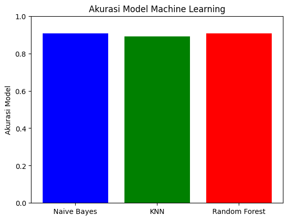

Tugas Crawling Berita#
crawling data dari berita online
ekstraksi kalimat dari berita online
bentuk tf-idf dari kalimat
bentuk cosinus similaritas dari langkah 2
bentuk dari langkah 3 suatu graph
hitung closeness centrality dari langkah 4
Crawling data Berita#
import requests as req
from bs4 import BeautifulSoup as bs
import csv
crawling berita sport
datas = []
berita_ke = 0
for page in range(1,21):
url = f'https://indotimes.net/category/sport/page/{page}/'
ge = req.get(url).text
sop = bs(ge,'lxml')
list_berita = sop.find('div',class_='jeg_inner_content')
artikel = list_berita.find_all('article')
print(f"============ anda berada di halaman {page}===================")
for x in artikel:
title = x.find('h3').text
title = title.strip()
link = x.find('h3').find('a')['href']
ge_ = req.get(link).text
sop_ = bs(ge_,'lxml')
news = sop_.find_all('div', class_='entry-content no-share')
berita_ke += 1
print(f"================ Berita ke {berita_ke}=======================")
print("Judul =", title)
print("Link = ",link)
print("Label = Olahraga")
for x in news:
news_full = ""
paragraphs = x.find_all('p')
for paragraph in paragraphs:
news_full += paragraph.get_text()
news_full = re.sub(r'[^\x00-\x7F]+', '', news_full)
datas.append({
'Judul': title,
'Berita': news_full,
'Label': 'Olahraga'
})
============ anda berada di halaman 1===================
================ Berita ke 1=======================
Judul = Bournemouth vs Liverpool Berakhir Manis: Si Merah Lolos ke 8 Besar
Link = https://indotimes.net/sport/bournemouth-vs-liverpool/
Label = Olahraga
---------------------------------------------------------------------------
NameError Traceback (most recent call last)
<ipython-input-2-c88895a32570> in <cell line: 3>()
25 for paragraph in paragraphs:
26 news_full += paragraph.get_text()
---> 27 news_full = re.sub(r'[^\x00-\x7F]+', '', news_full)
28 datas.append({
29 'Judul': title,
NameError: name 're' is not defined
crawling berita teknologi
berita_ke = 0
for page in range(1,21):
url = f'https://indotimes.net/category/teknologi/page/{page}/'
ge = req.get(url).text
sop = bs(ge,'lxml')
list_berita = sop.find('div',class_='jeg_inner_content')
artikel = list_berita.find_all('article')
print(f"============ anda berada di halaman {page}===================")
for x in artikel:
title = x.find('h3').text
title = title.strip()
link = x.find('h3').find('a')['href']
ge_ = req.get(link).text
sop_ = bs(ge_,'lxml')
news = sop_.find_all('div', class_='entry-content no-share')
berita_ke += 1
print(f"================ Berita ke {berita_ke}=======================")
print("Judul =", title)
print("Link = ",link)
print("Label = Teknologi")
for x in news:
news_full = ""
paragraphs = x.find_all('p')
for paragraph in paragraphs:
news_full += paragraph.get_text()
news_full = re.sub(r'[^\x00-\x7F]+', '', news_full)
datas.append({
'Judul': title,
'Berita': news_full,
'Label': 'Teknologi'
})
crawling berita entertaiment
berita_ke = 0
for page in range(1,21):
url = f'https://indotimes.net/category/entertainment/page/{page}/'
ge = req.get(url).text
sop = bs(ge,'lxml')
list_berita = sop.find('div',class_='jeg_inner_content')
artikel = list_berita.find_all('article')
print(f"============ anda berada di halaman {page}===================")
for x in artikel:
title = x.find('h3').text
title = title.strip()
link = x.find('h3').find('a')['href']
ge_ = req.get(link).text
sop_ = bs(ge_,'lxml')
news = sop_.find_all('div', class_='entry-content no-share')
berita_ke += 1
print(f"================ Berita ke {berita_ke}=======================")
print("Judul =", title)
print("Link = ",link)
print("Label = Entertaiment")
for x in news:
news_full = ""
paragraphs = x.find_all('p')
for paragraph in paragraphs:
news_full += paragraph.get_text()
news_full = re.sub(r'[^\x00-\x7F]+', '', news_full)
datas.append({
'Judul': title,
'Berita': news_full,
'Label': 'Entertaiment'
})
---------------------------------------------------------------------------
NameError Traceback (most recent call last)
<ipython-input-6-622237450298> in <cell line: 2>()
2 for page in range(1,21):
3 url = f'https://indotimes.net/category/entertainment/page/{page}/'
----> 4 ge = req.get(url).text
5 sop = bs(ge,'lxml')
6 list_berita = sop.find('div',class_='jeg_inner_content')
NameError: name 'req' is not defined
# Menyimpan data dalam bentuk CSV
csv_filename = 'data_berita.csv'
with open(csv_filename, 'w', newline='', encoding='utf-8') as csv_file:
fieldnames = ['Judul', 'Tanggal', 'Berita', 'Label']
csv_writer = csv.DictWriter(csv_file, fieldnames=fieldnames)
csv_writer.writeheader()
for entry in datas:
csv_writer.writerow(entry)
print(f"Data telah disimpan dalam file {csv_filename}")
Data telah disimpan dalam file data_berita.csv
Ekstraksi kalimat dari berita online#
import os
%cd /content/
os.mkdir('data_berita')
import gdown
# download data
nama_data = '/content/data_berita/data_berita.csv'
gdown.download(f'https://drive.google.com/uc?id=1vu67IeDIAWTCH9hk4C39DrH9JKXHpUVi', nama_data, quiet=False)
/content
Downloading...
From: https://drive.google.com/uc?id=1vu67IeDIAWTCH9hk4C39DrH9JKXHpUVi
To: /content/data_berita/data_berita.csv
100%|██████████| 2.30M/2.30M [00:00<00:00, 186MB/s]
'/content/data_berita/data_berita.csv'
import pandas as pd
data_berita = pd.read_csv('/content/data_berita/data_berita.csv')
data_berita
| Judul | Berita | Label | |
|---|---|---|---|
| 0 | Orang Tua Luis Diaz Diculik: 2 Orang Penculik ... | Orang tua Luis Diaz diculik di Kolombia, sebua... | Olahraga |
| 1 | Pertandingan AS Roma vs Monza Berakhir Tipis 1... | Pertandingan AS Roma vs Monza merupakan laga l... | Olahraga |
| 2 | Papu Gomez Positif Doping: 2 Tahun Larangan Be... | Pemain sepak bola asal Argentina, Papu Gomez, ... | Olahraga |
| 3 | Hasil Denmark Open 2023: Saingan Fajar/Rian Be... | Sebagai andalan utama ganda putra Indonesia, F... | Olahraga |
| 4 | Akibat Benzema Dukung Palestina, Menteri Pranc... | Karim Benzema bakal mengajukan tuntutan hukum ... | Olahraga |
| ... | ... | ... | ... |
| 595 | Teaser Lagu Choi Yena “Hate Rodrigo” Tuai Krit... | Teaser lagu Choi Yena dengan judul Hate Rodrig... | Entertaiment |
| 596 | Rilis MV “Move”, TREASURE Sub Unit T5 Resmi De... | TREASURE sub unit T5 akhirnya comeback dan lan... | Entertaiment |
| 597 | Ucapan Hari Raya Idul Adha: Menyambut Hari Kem... | Hari Raya Idul Adha, juga dikenal sebagai Hari... | Entertaiment |
| 598 | Resmi! David Corenswet Ditunjuk Sebagai Pemera... | Warner Bros dan DC Studios telah menemukan pem... | Entertaiment |
| 599 | Dengkul Getar Trending, Selebgram Hanum Mega B... | Selebgram Hanum Mega putuskan cerai usai kemba... | Entertaiment |
600 rows × 3 columns
Normalisasi#
Cek data kosong#
# cek apakah ada data yang kosong
data_berita.isnull().sum()
Judul 0
Berita 0
Label 0
dtype: int64
Punctuation#
data_berita['berita_clean'] = data_berita['Berita'].str.replace(r'[^\w\s,.?!]', '', regex=True).str.lower()
Memisah kalimat#
# import library dan download nltk
import nltk
from nltk.tokenize import sent_tokenize
nltk.download('punkt')
nltk.download('stopwords')
[nltk_data] Downloading package punkt to /root/nltk_data...
[nltk_data] Unzipping tokenizers/punkt.zip.
[nltk_data] Downloading package stopwords to /root/nltk_data...
[nltk_data] Unzipping corpora/stopwords.zip.
True
data_berita["tokenizing"] = data_berita['berita_clean'].apply(sent_tokenize)
data_berita
| Judul | Berita | Label | berita_clean | tokenizing | |
|---|---|---|---|---|---|
| 0 | Orang Tua Luis Diaz Diculik: 2 Orang Penculik ... | Orang tua Luis Diaz diculik di Kolombia, sebua... | Olahraga | orang tua luis diaz diculik di kolombia, sebua... | [orang tua luis diaz diculik di kolombia, sebu... |
| 1 | Pertandingan AS Roma vs Monza Berakhir Tipis 1... | Pertandingan AS Roma vs Monza merupakan laga l... | Olahraga | pertandingan as roma vs monza merupakan laga l... | [pertandingan as roma vs monza merupakan laga ... |
| 2 | Papu Gomez Positif Doping: 2 Tahun Larangan Be... | Pemain sepak bola asal Argentina, Papu Gomez, ... | Olahraga | pemain sepak bola asal argentina, papu gomez, ... | [pemain sepak bola asal argentina, papu gomez,... |
| 3 | Hasil Denmark Open 2023: Saingan Fajar/Rian Be... | Sebagai andalan utama ganda putra Indonesia, F... | Olahraga | sebagai andalan utama ganda putra indonesia, f... | [sebagai andalan utama ganda putra indonesia, ... |
| 4 | Akibat Benzema Dukung Palestina, Menteri Pranc... | Karim Benzema bakal mengajukan tuntutan hukum ... | Olahraga | karim benzema bakal mengajukan tuntutan hukum ... | [karim benzema bakal mengajukan tuntutan hukum... |
| ... | ... | ... | ... | ... | ... |
| 595 | Teaser Lagu Choi Yena “Hate Rodrigo” Tuai Krit... | Teaser lagu Choi Yena dengan judul Hate Rodrig... | Entertaiment | teaser lagu choi yena dengan judul hate rodrig... | [teaser lagu choi yena dengan judul hate rodri... |
| 596 | Rilis MV “Move”, TREASURE Sub Unit T5 Resmi De... | TREASURE sub unit T5 akhirnya comeback dan lan... | Entertaiment | treasure sub unit t5 akhirnya comeback dan lan... | [treasure sub unit t5 akhirnya comeback dan la... |
| 597 | Ucapan Hari Raya Idul Adha: Menyambut Hari Kem... | Hari Raya Idul Adha, juga dikenal sebagai Hari... | Entertaiment | hari raya idul adha, juga dikenal sebagai hari... | [hari raya idul adha, juga dikenal sebagai har... |
| 598 | Resmi! David Corenswet Ditunjuk Sebagai Pemera... | Warner Bros dan DC Studios telah menemukan pem... | Entertaiment | warner bros dan dc studios telah menemukan pem... | [warner bros dan dc studios telah menemukan pe... |
| 599 | Dengkul Getar Trending, Selebgram Hanum Mega B... | Selebgram Hanum Mega putuskan cerai usai kemba... | Entertaiment | selebgram hanum mega putuskan cerai usai kemba... | [selebgram hanum mega putuskan cerai usai kemb... |
600 rows × 5 columns
TF-IDF per kalimat#
from sklearn.feature_extraction.text import TfidfVectorizer
tfidf_results = []
set_len_doc = data_berita['tokenizing'][:]
for i in range(len(set_len_doc)): #perulangan setiap artikel/dokumen
tfidf_vectorizer = TfidfVectorizer() #inisialisasi tfidf
tfidf_matrix = tfidf_vectorizer.fit_transform(data_berita['tokenizing'][i]) #menjadikan tfidf setiap dokumen
tfidf_results.append(tfidf_matrix) #menyimpan hasil tf-idf
# Menampilkan data TFIDF
for idoc in range(len(tfidf_results)):
print(f'========== Document ke-{idoc} ==========')
arr_tfidf_results = tfidf_results[idoc].toarray()
index = 0
for hasils in arr_tfidf_results:
print(f'Hasil Tfidf Kalimat ke-{index+1} = {list(hasils)}')
index+=1
print('\n')
Output hidden; open in https://colab.research.google.com to view.
tfidf_results[0].toarray()
array([[0. , 0. , 0. , ..., 0. , 0. ,
0.1606074 ],
[0. , 0. , 0. , ..., 0. , 0. ,
0. ],
[0. , 0. , 0. , ..., 0. , 0. ,
0.13440449],
...,
[0. , 0. , 0. , ..., 0. , 0. ,
0. ],
[0.22601133, 0. , 0.22601133, ..., 0. , 0.22601133,
0.11104587],
[0. , 0.17655725, 0. , ..., 0. , 0. ,
0.09868732]])
Cosinus Similarity#
from sklearn.metrics.pairwise import cosine_similarity
from sklearn.feature_extraction.text import TfidfVectorizer
import networkx as nx
import matplotlib.pyplot as plt
from networkx.algorithms.shortest_paths import weighted
cos_sim_result = []
graf_result = []
treshold = 0.11
for i_doc in range(len(tfidf_results)): #perulangan tiap dokumen
# print(f'========= Document ke-{i_doc} ==========')
cos_sim_now = []
Graph = nx.DiGraph()
cos_sim = cosine_similarity(tfidf_results[i_doc]) #menghitung cosine similarity
for i_hasil in range(len(cos_sim)): #perulangan tiap kalimat dalam dokumen
# graf_current =
arr_cosim = []
for j_hasil in range(i_hasil+1,len(cos_sim)): #iterasi pasangan kalimat
if cos_sim[i_hasil][j_hasil] > treshold: #pengecekan hasil cosim apakah lebih dari treshold
# print(f'Similairty kalimat ke - {i_hasil} : {j_hasil} = {cos_sim[i_hasil][j_hasil]}')
arr_cosim.append([i_hasil,j_hasil,cos_sim[i_hasil][j_hasil]]) #menyimpan hasil cosim
Graph.add_edge(i_hasil,j_hasil,weight=cos_sim[i_hasil][j_hasil]) #menyimpan graph
cos_sim_now.append(arr_cosim)
# Graph.append(graf_current)
cos_sim_result.append(cos_sim_now)
graf_result.append(Graph)
# print('\n')
cos_sim_result[0]
[[[0, 2, 0.21188907500197962],
[0, 3, 0.24171408786254103],
[0, 6, 0.2283745215800414],
[0, 10, 0.34633503901390505],
[0, 16, 0.13155790541387738]],
[],
[[2, 8, 0.12989151189011594],
[2, 15, 0.13758361060944985],
[2, 19, 0.18050932510513854]],
[[3, 10, 0.22396496974241695],
[3, 14, 0.14040059723240012],
[3, 18, 0.13603376643126946]],
[[4, 12, 0.15019709153025618], [4, 14, 0.12863114962128103]],
[[5, 13, 0.24748246734810556],
[5, 15, 0.12443916028158729],
[5, 18, 0.2621577624040739],
[5, 19, 0.28052325350631596]],
[[6, 10, 0.11211353103373717], [6, 14, 0.13170588542601377]],
[[7, 16, 0.11654056393592296]],
[[8, 15, 0.14821804880132847],
[8, 16, 0.2489163026020488],
[8, 18, 0.12237945580752352]],
[[9, 16, 0.1507759713926225]],
[],
[[11, 13, 0.11878216092412264],
[11, 18, 0.14384700429355782],
[11, 19, 0.1379405361644424]],
[[12, 14, 0.1689189294565031]],
[[13, 15, 0.7024001876047026],
[13, 16, 0.14296032021062902],
[13, 17, 0.1195037715182936]],
[[14, 18, 0.11624786347534337], [14, 19, 0.1973927200477203]],
[],
[],
[],
[[18, 19, 0.2555160740728871]],
[]]
for i in range(len(cos_sim_result)): #iterasi dalam co_sim_result
print(f'============= Document ke - {i} ==============')
for j in range(len(cos_sim_result[i])):
for idx1,idx2,hasil in cos_sim_result[i][j]:
print(f'Cosine Similarity Kalimat {idx1} : {idx2} = {hasil}')
print('\n')
Streaming output truncated to the last 5000 lines.
Cosine Similarity Kalimat 1 : 15 = 0.2720321703996397
Cosine Similarity Kalimat 2 : 4 = 0.12613012515330674
Cosine Similarity Kalimat 2 : 9 = 0.36989346555355834
Cosine Similarity Kalimat 2 : 10 = 0.11871164994259956
Cosine Similarity Kalimat 2 : 18 = 0.12992370709613843
Cosine Similarity Kalimat 3 : 5 = 0.209561559757504
Cosine Similarity Kalimat 3 : 7 = 0.13875338826093653
Cosine Similarity Kalimat 3 : 16 = 0.14756441160056155
Cosine Similarity Kalimat 3 : 21 = 0.14170795681384163
Cosine Similarity Kalimat 4 : 7 = 0.12072153406732763
Cosine Similarity Kalimat 4 : 16 = 0.1484059991215328
Cosine Similarity Kalimat 5 : 7 = 0.15826521547691402
Cosine Similarity Kalimat 5 : 8 = 0.17885986524478154
Cosine Similarity Kalimat 5 : 12 = 0.11842178333940542
Cosine Similarity Kalimat 5 : 15 = 0.14487671044057954
Cosine Similarity Kalimat 5 : 16 = 0.1358567851580119
Cosine Similarity Kalimat 5 : 21 = 0.14673037657660687
Cosine Similarity Kalimat 7 : 12 = 0.11964057867279934
Cosine Similarity Kalimat 7 : 15 = 0.1191345273822593
Cosine Similarity Kalimat 7 : 16 = 0.1384624223509455
Cosine Similarity Kalimat 7 : 17 = 0.1226690298619596
Cosine Similarity Kalimat 7 : 21 = 0.11760140885668731
Cosine Similarity Kalimat 8 : 10 = 0.15933479074952206
Cosine Similarity Kalimat 8 : 18 = 0.13584729442638305
Cosine Similarity Kalimat 8 : 19 = 0.11947188020991062
Cosine Similarity Kalimat 10 : 18 = 0.12591619810015897
Cosine Similarity Kalimat 15 : 16 = 0.12270905891399796
Cosine Similarity Kalimat 16 : 17 = 0.12634961117490198
Cosine Similarity Kalimat 16 : 21 = 0.16960824490083742
Cosine Similarity Kalimat 17 : 18 = 0.20920269477059977
============= Document ke - 525 ==============
Cosine Similarity Kalimat 0 : 1 = 0.12211593446574781
Cosine Similarity Kalimat 0 : 4 = 0.14468704967572726
Cosine Similarity Kalimat 0 : 10 = 0.13463489318316402
Cosine Similarity Kalimat 1 : 2 = 0.12343050384436041
Cosine Similarity Kalimat 1 : 3 = 0.17075110370172444
Cosine Similarity Kalimat 1 : 4 = 0.1429801583655239
Cosine Similarity Kalimat 1 : 6 = 0.17392385199282992
Cosine Similarity Kalimat 1 : 7 = 0.21998440536840425
Cosine Similarity Kalimat 1 : 8 = 0.14804422275230303
Cosine Similarity Kalimat 1 : 9 = 0.1508394838528681
Cosine Similarity Kalimat 1 : 11 = 0.18413301734925294
Cosine Similarity Kalimat 1 : 17 = 0.29057019451638133
Cosine Similarity Kalimat 1 : 18 = 0.12232704666485955
Cosine Similarity Kalimat 1 : 20 = 0.1176584882560674
Cosine Similarity Kalimat 1 : 21 = 0.19198212101838294
Cosine Similarity Kalimat 2 : 8 = 0.11445822614393764
Cosine Similarity Kalimat 2 : 20 = 0.17916378237876382
Cosine Similarity Kalimat 2 : 21 = 0.38364707068655
Cosine Similarity Kalimat 3 : 6 = 0.15914322469917355
Cosine Similarity Kalimat 3 : 10 = 0.11889502921750025
Cosine Similarity Kalimat 3 : 17 = 0.23039245719388687
Cosine Similarity Kalimat 3 : 20 = 0.17464252190386148
Cosine Similarity Kalimat 3 : 21 = 0.3502915452017878
Cosine Similarity Kalimat 4 : 5 = 0.12788653269468298
Cosine Similarity Kalimat 4 : 9 = 0.12765327421664577
Cosine Similarity Kalimat 4 : 12 = 0.12920775603537074
Cosine Similarity Kalimat 4 : 13 = 0.11544026163164299
Cosine Similarity Kalimat 5 : 8 = 0.16879369147606751
Cosine Similarity Kalimat 5 : 10 = 0.11651385382866533
Cosine Similarity Kalimat 5 : 11 = 0.27054303400783875
Cosine Similarity Kalimat 5 : 17 = 0.1923368285339872
Cosine Similarity Kalimat 5 : 20 = 0.15374292938475861
Cosine Similarity Kalimat 5 : 21 = 0.12801667935552327
Cosine Similarity Kalimat 6 : 10 = 0.11561665286563129
Cosine Similarity Kalimat 6 : 15 = 0.20293198892588557
Cosine Similarity Kalimat 6 : 17 = 0.2554230003166839
Cosine Similarity Kalimat 6 : 21 = 0.3010881754983276
Cosine Similarity Kalimat 7 : 8 = 0.1201476177995331
Cosine Similarity Kalimat 7 : 11 = 0.15811613523168164
Cosine Similarity Kalimat 7 : 12 = 0.13585205349410948
Cosine Similarity Kalimat 7 : 17 = 0.24537207399031707
Cosine Similarity Kalimat 8 : 11 = 0.27767102936105875
Cosine Similarity Kalimat 8 : 12 = 0.1245794815836568
Cosine Similarity Kalimat 8 : 17 = 0.21741641023741587
Cosine Similarity Kalimat 8 : 20 = 0.11595441472188901
Cosine Similarity Kalimat 9 : 10 = 0.1273903685576895
Cosine Similarity Kalimat 9 : 11 = 0.11723408336736255
Cosine Similarity Kalimat 9 : 20 = 0.16044405075712476
Cosine Similarity Kalimat 9 : 21 = 0.24525095825683435
Cosine Similarity Kalimat 10 : 11 = 0.1344575090640744
Cosine Similarity Kalimat 10 : 17 = 0.14670992545341918
Cosine Similarity Kalimat 10 : 21 = 0.14473462238906695
Cosine Similarity Kalimat 11 : 17 = 0.2238854391926145
Cosine Similarity Kalimat 11 : 20 = 0.21327886123343032
Cosine Similarity Kalimat 11 : 21 = 0.1575084453849106
Cosine Similarity Kalimat 13 : 14 = 0.1375318567511414
Cosine Similarity Kalimat 14 : 15 = 0.14702646035560835
Cosine Similarity Kalimat 15 : 16 = 0.23007578864702885
Cosine Similarity Kalimat 15 : 19 = 0.30985633401388735
Cosine Similarity Kalimat 17 : 18 = 0.4209896574852009
Cosine Similarity Kalimat 17 : 20 = 0.22087364024068795
Cosine Similarity Kalimat 17 : 21 = 0.2021785850524348
Cosine Similarity Kalimat 20 : 21 = 0.2900038056427441
============= Document ke - 526 ==============
Cosine Similarity Kalimat 0 : 2 = 0.14813279302036797
Cosine Similarity Kalimat 0 : 3 = 0.13513865637218286
Cosine Similarity Kalimat 0 : 4 = 0.13083074109628354
Cosine Similarity Kalimat 0 : 10 = 0.12671713299693652
Cosine Similarity Kalimat 0 : 11 = 0.12306720086958572
Cosine Similarity Kalimat 0 : 13 = 0.1747180046248627
Cosine Similarity Kalimat 0 : 15 = 0.14831955561522156
Cosine Similarity Kalimat 1 : 2 = 0.22358506392554395
Cosine Similarity Kalimat 1 : 3 = 0.18418612635444576
Cosine Similarity Kalimat 1 : 6 = 0.14779153889867386
Cosine Similarity Kalimat 2 : 3 = 0.23423962922518704
Cosine Similarity Kalimat 2 : 11 = 0.13301850668996493
Cosine Similarity Kalimat 2 : 12 = 0.11136919526409239
Cosine Similarity Kalimat 2 : 13 = 0.2487182619159531
Cosine Similarity Kalimat 2 : 15 = 0.17505039708370826
Cosine Similarity Kalimat 3 : 4 = 0.11684691185923865
Cosine Similarity Kalimat 3 : 6 = 0.20262299974374992
Cosine Similarity Kalimat 3 : 10 = 0.17153741058441685
Cosine Similarity Kalimat 3 : 13 = 0.35953961492382364
Cosine Similarity Kalimat 3 : 15 = 0.12444090290886188
Cosine Similarity Kalimat 4 : 5 = 0.16806045685881374
Cosine Similarity Kalimat 4 : 6 = 0.16519349736783048
Cosine Similarity Kalimat 4 : 10 = 0.18521946750435564
Cosine Similarity Kalimat 4 : 13 = 0.1760698146054
Cosine Similarity Kalimat 7 : 11 = 0.12225926451783908
Cosine Similarity Kalimat 7 : 12 = 0.12787292979387216
Cosine Similarity Kalimat 8 : 9 = 0.11220189205996517
Cosine Similarity Kalimat 8 : 10 = 0.23184964682509712
Cosine Similarity Kalimat 8 : 11 = 0.13966494320314599
Cosine Similarity Kalimat 8 : 15 = 0.11475281344033078
Cosine Similarity Kalimat 9 : 10 = 0.12564105580475673
Cosine Similarity Kalimat 9 : 11 = 0.18875121181054083
Cosine Similarity Kalimat 9 : 12 = 0.21996696141884248
Cosine Similarity Kalimat 10 : 11 = 0.16304037019077014
Cosine Similarity Kalimat 10 : 13 = 0.1337455379735647
Cosine Similarity Kalimat 10 : 14 = 0.1227540592846332
Cosine Similarity Kalimat 10 : 15 = 0.11353769063669243
Cosine Similarity Kalimat 11 : 13 = 0.11629468126273652
Cosine Similarity Kalimat 11 : 15 = 0.13857149508963745
Cosine Similarity Kalimat 13 : 15 = 0.16081431745905567
============= Document ke - 527 ==============
Cosine Similarity Kalimat 0 : 3 = 0.23547932024470622
Cosine Similarity Kalimat 0 : 8 = 0.2013477521605913
Cosine Similarity Kalimat 0 : 10 = 0.2801392566681846
Cosine Similarity Kalimat 0 : 11 = 0.21485456006468623
Cosine Similarity Kalimat 0 : 15 = 0.1715629523376119
Cosine Similarity Kalimat 1 : 4 = 0.11549283566885062
Cosine Similarity Kalimat 1 : 8 = 0.1819680547401152
Cosine Similarity Kalimat 1 : 10 = 0.29372392913486317
Cosine Similarity Kalimat 1 : 13 = 0.11791487778278922
Cosine Similarity Kalimat 1 : 15 = 0.1277584325116115
Cosine Similarity Kalimat 2 : 13 = 0.14143998539945107
Cosine Similarity Kalimat 3 : 8 = 0.1284272240521988
Cosine Similarity Kalimat 3 : 10 = 0.13058010458513025
Cosine Similarity Kalimat 3 : 11 = 0.30433677419385535
Cosine Similarity Kalimat 3 : 15 = 0.1530659139280153
Cosine Similarity Kalimat 4 : 5 = 0.1468863964221192
Cosine Similarity Kalimat 4 : 11 = 0.20141251464257676
Cosine Similarity Kalimat 4 : 12 = 0.14225290471460625
Cosine Similarity Kalimat 5 : 7 = 0.2169997705597989
Cosine Similarity Kalimat 5 : 9 = 0.28792868382366416
Cosine Similarity Kalimat 5 : 15 = 0.38988297645755665
Cosine Similarity Kalimat 5 : 16 = 0.12542073138393672
Cosine Similarity Kalimat 6 : 16 = 0.3927508735928967
Cosine Similarity Kalimat 7 : 9 = 0.38055651642713556
Cosine Similarity Kalimat 7 : 16 = 0.12161653617036175
Cosine Similarity Kalimat 8 : 10 = 0.22247300911041581
Cosine Similarity Kalimat 8 : 15 = 0.18174134269827483
Cosine Similarity Kalimat 9 : 15 = 0.25374903835647333
Cosine Similarity Kalimat 10 : 11 = 0.3547070233877462
Cosine Similarity Kalimat 10 : 15 = 0.13061450070906452
Cosine Similarity Kalimat 11 : 12 = 0.1290969216444373
Cosine Similarity Kalimat 12 : 14 = 0.19471042882679235
============= Document ke - 528 ==============
Cosine Similarity Kalimat 0 : 3 = 0.18439298204142388
Cosine Similarity Kalimat 0 : 6 = 0.1127400138226734
Cosine Similarity Kalimat 0 : 7 = 0.1593853369707321
Cosine Similarity Kalimat 1 : 2 = 0.14153102797033262
Cosine Similarity Kalimat 2 : 5 = 0.21494644507211141
Cosine Similarity Kalimat 3 : 6 = 0.1506657931710257
Cosine Similarity Kalimat 3 : 7 = 0.11664779536173873
Cosine Similarity Kalimat 4 : 9 = 0.1908158172161643
Cosine Similarity Kalimat 5 : 9 = 0.12983836599863738
Cosine Similarity Kalimat 5 : 11 = 0.11348376899366613
Cosine Similarity Kalimat 5 : 12 = 0.11695426922819707
Cosine Similarity Kalimat 6 : 8 = 0.11295070097255346
Cosine Similarity Kalimat 6 : 13 = 0.11681505438781095
Cosine Similarity Kalimat 7 : 13 = 0.1285921376440237
Cosine Similarity Kalimat 8 : 12 = 0.1454832744879537
Cosine Similarity Kalimat 9 : 15 = 0.11349356144355699
Cosine Similarity Kalimat 10 : 13 = 0.11639902875197145
Cosine Similarity Kalimat 10 : 16 = 0.18060724912512488
Cosine Similarity Kalimat 11 : 13 = 0.12523002513524525
Cosine Similarity Kalimat 12 : 13 = 0.20076378879152745
Cosine Similarity Kalimat 13 : 15 = 0.11121246574898982
Cosine Similarity Kalimat 13 : 16 = 0.12451211931756674
Cosine Similarity Kalimat 14 : 16 = 0.14638208015316606
Cosine Similarity Kalimat 15 : 16 = 0.11933683563228378
============= Document ke - 529 ==============
Cosine Similarity Kalimat 0 : 1 = 0.12068297544278943
Cosine Similarity Kalimat 0 : 6 = 0.13005007852657216
Cosine Similarity Kalimat 0 : 10 = 0.21669163150417817
Cosine Similarity Kalimat 0 : 12 = 0.17371836406797656
Cosine Similarity Kalimat 0 : 14 = 0.2031118916313112
Cosine Similarity Kalimat 0 : 15 = 0.26448842035414655
Cosine Similarity Kalimat 0 : 16 = 0.12300605246308693
Cosine Similarity Kalimat 0 : 17 = 0.15613402704119286
Cosine Similarity Kalimat 1 : 4 = 0.11239414155881068
Cosine Similarity Kalimat 1 : 9 = 0.22436415350974773
Cosine Similarity Kalimat 1 : 15 = 0.12938847888436153
Cosine Similarity Kalimat 4 : 9 = 0.29585945992894674
Cosine Similarity Kalimat 5 : 9 = 0.254623613750053
Cosine Similarity Kalimat 6 : 7 = 0.29194697904422284
Cosine Similarity Kalimat 6 : 8 = 0.12165808220073035
Cosine Similarity Kalimat 6 : 15 = 0.12200455448627943
Cosine Similarity Kalimat 7 : 8 = 0.1341091636938637
Cosine Similarity Kalimat 10 : 11 = 0.2683929505732875
Cosine Similarity Kalimat 10 : 13 = 0.13239900632251866
Cosine Similarity Kalimat 10 : 14 = 0.2362242811119133
Cosine Similarity Kalimat 10 : 15 = 0.15217928814408577
Cosine Similarity Kalimat 10 : 16 = 0.13686550390825009
Cosine Similarity Kalimat 10 : 17 = 0.1867400672458109
Cosine Similarity Kalimat 11 : 13 = 0.17745833481466222
Cosine Similarity Kalimat 11 : 16 = 0.15333460081442085
Cosine Similarity Kalimat 13 : 17 = 0.11653900533907419
Cosine Similarity Kalimat 14 : 15 = 0.2677225377254529
Cosine Similarity Kalimat 14 : 16 = 0.1492151314460487
Cosine Similarity Kalimat 14 : 17 = 0.12304470344762172
============= Document ke - 530 ==============
Cosine Similarity Kalimat 0 : 1 = 0.1743390970731994
Cosine Similarity Kalimat 0 : 3 = 0.166419200046859
Cosine Similarity Kalimat 0 : 6 = 0.1441096700459725
Cosine Similarity Kalimat 0 : 9 = 0.11778201428297257
Cosine Similarity Kalimat 0 : 13 = 0.2279524276540601
Cosine Similarity Kalimat 0 : 16 = 0.11221355595650476
Cosine Similarity Kalimat 1 : 2 = 0.1274877191048684
Cosine Similarity Kalimat 1 : 3 = 0.15138507852722335
Cosine Similarity Kalimat 1 : 13 = 0.15148944236988748
Cosine Similarity Kalimat 1 : 18 = 0.18274042881427
Cosine Similarity Kalimat 2 : 3 = 0.19838472414537356
Cosine Similarity Kalimat 2 : 8 = 0.22064194140719062
Cosine Similarity Kalimat 2 : 9 = 0.16283949216247678
Cosine Similarity Kalimat 2 : 17 = 0.16328765033470224
Cosine Similarity Kalimat 2 : 18 = 0.2248858953559045
Cosine Similarity Kalimat 3 : 6 = 0.1752438777604189
Cosine Similarity Kalimat 3 : 7 = 0.11833180239080228
Cosine Similarity Kalimat 3 : 9 = 0.2764938173972281
Cosine Similarity Kalimat 3 : 12 = 0.16306091320702376
Cosine Similarity Kalimat 3 : 14 = 0.25040558130038243
Cosine Similarity Kalimat 3 : 18 = 0.1939827374753138
Cosine Similarity Kalimat 4 : 7 = 0.1443823276876441
Cosine Similarity Kalimat 4 : 8 = 0.20535159880434592
Cosine Similarity Kalimat 4 : 9 = 0.1125270640963435
Cosine Similarity Kalimat 6 : 7 = 0.20672672392679076
Cosine Similarity Kalimat 6 : 11 = 0.13681938352921516
Cosine Similarity Kalimat 6 : 16 = 0.19314636409219074
Cosine Similarity Kalimat 7 : 9 = 0.11494123748195956
Cosine Similarity Kalimat 9 : 14 = 0.30803060125138704
Cosine Similarity Kalimat 9 : 15 = 0.30715355121396537
Cosine Similarity Kalimat 9 : 18 = 0.1395121569606513
Cosine Similarity Kalimat 10 : 11 = 0.12976872389162264
Cosine Similarity Kalimat 10 : 15 = 0.17760265259400113
Cosine Similarity Kalimat 10 : 17 = 0.19834651257568586
Cosine Similarity Kalimat 10 : 18 = 0.11274218114086726
Cosine Similarity Kalimat 11 : 15 = 0.20695466783475877
Cosine Similarity Kalimat 11 : 16 = 0.17234758360875113
Cosine Similarity Kalimat 11 : 18 = 0.11379569166392457
Cosine Similarity Kalimat 13 : 14 = 0.16635922521368093
Cosine Similarity Kalimat 14 : 15 = 0.1770875407090663
Cosine Similarity Kalimat 15 : 17 = 0.1293388521025656
Cosine Similarity Kalimat 15 : 18 = 0.14025892560325018
Cosine Similarity Kalimat 16 : 18 = 0.11707356144751899
============= Document ke - 531 ==============
Cosine Similarity Kalimat 0 : 1 = 0.14136955183769204
Cosine Similarity Kalimat 0 : 2 = 0.1898343375106352
Cosine Similarity Kalimat 0 : 3 = 0.20207737816264038
Cosine Similarity Kalimat 0 : 5 = 0.12621302624527259
Cosine Similarity Kalimat 0 : 9 = 0.26266244867808813
Cosine Similarity Kalimat 0 : 10 = 0.3518472781920698
Cosine Similarity Kalimat 1 : 2 = 0.13502078525571803
Cosine Similarity Kalimat 1 : 9 = 0.11622366681915834
Cosine Similarity Kalimat 1 : 10 = 0.27580604286863264
Cosine Similarity Kalimat 1 : 17 = 0.17467705382850737
Cosine Similarity Kalimat 2 : 3 = 0.2792160179151259
Cosine Similarity Kalimat 2 : 5 = 0.112326632080499
Cosine Similarity Kalimat 2 : 10 = 0.2370284116378915
Cosine Similarity Kalimat 2 : 17 = 0.11116115128428139
Cosine Similarity Kalimat 3 : 5 = 0.1584362774145716
Cosine Similarity Kalimat 3 : 9 = 0.1233690806652309
Cosine Similarity Kalimat 3 : 10 = 0.1452535164425833
Cosine Similarity Kalimat 3 : 13 = 0.12772235211405322
Cosine Similarity Kalimat 5 : 8 = 0.11269329337399481
Cosine Similarity Kalimat 5 : 10 = 0.1282015953195667
Cosine Similarity Kalimat 6 : 8 = 0.14831601973169692
Cosine Similarity Kalimat 9 : 10 = 0.16887133575002247
Cosine Similarity Kalimat 10 : 13 = 0.21377908549897137
Cosine Similarity Kalimat 11 : 14 = 0.19244939615091475
Cosine Similarity Kalimat 11 : 16 = 0.12990342083395012
Cosine Similarity Kalimat 12 : 15 = 0.16055211421409607
Cosine Similarity Kalimat 12 : 17 = 0.20400024788185392
Cosine Similarity Kalimat 14 : 16 = 0.27120759471242406
Cosine Similarity Kalimat 15 : 17 = 0.1916674816793925
============= Document ke - 532 ==============
Cosine Similarity Kalimat 0 : 1 = 0.2982732141481388
Cosine Similarity Kalimat 0 : 2 = 0.11612430730995928
Cosine Similarity Kalimat 0 : 3 = 0.15579307751756044
Cosine Similarity Kalimat 0 : 4 = 0.2004808618236213
Cosine Similarity Kalimat 0 : 5 = 0.1202781692790784
Cosine Similarity Kalimat 0 : 6 = 0.126943654448729
Cosine Similarity Kalimat 0 : 7 = 0.33451598260573545
Cosine Similarity Kalimat 0 : 8 = 0.21038161869993813
Cosine Similarity Kalimat 0 : 12 = 0.13462703224001915
Cosine Similarity Kalimat 0 : 15 = 0.11705521823241925
Cosine Similarity Kalimat 0 : 16 = 0.3288771845742192
Cosine Similarity Kalimat 0 : 17 = 0.22543461449345598
Cosine Similarity Kalimat 0 : 18 = 0.15163948624599213
Cosine Similarity Kalimat 0 : 19 = 0.14374384280696165
Cosine Similarity Kalimat 0 : 20 = 0.16724006370367483
Cosine Similarity Kalimat 0 : 21 = 0.1261638993350622
Cosine Similarity Kalimat 0 : 24 = 0.16297121842435403
Cosine Similarity Kalimat 0 : 27 = 0.16464339968858283
Cosine Similarity Kalimat 0 : 28 = 0.19946615486079303
Cosine Similarity Kalimat 0 : 29 = 0.12828885722044792
Cosine Similarity Kalimat 0 : 31 = 0.2118392276393208
Cosine Similarity Kalimat 0 : 32 = 0.14070269728565968
Cosine Similarity Kalimat 0 : 33 = 0.2523674707469123
Cosine Similarity Kalimat 0 : 38 = 0.19674518992605056
Cosine Similarity Kalimat 0 : 43 = 0.11869818674987155
Cosine Similarity Kalimat 0 : 44 = 0.24841039022805148
Cosine Similarity Kalimat 0 : 45 = 0.18267513257204118
Cosine Similarity Kalimat 0 : 46 = 0.16255843878644685
Cosine Similarity Kalimat 0 : 48 = 0.1418001577553592
Cosine Similarity Kalimat 0 : 49 = 0.12999796538836023
Cosine Similarity Kalimat 1 : 4 = 0.1472167332226177
Cosine Similarity Kalimat 1 : 8 = 0.3661770583598267
Cosine Similarity Kalimat 1 : 12 = 0.12337163645089703
Cosine Similarity Kalimat 1 : 13 = 0.11997471384167728
Cosine Similarity Kalimat 1 : 15 = 0.13792590557408257
Cosine Similarity Kalimat 1 : 16 = 0.15124598309256176
Cosine Similarity Kalimat 1 : 28 = 0.18205743544833364
Cosine Similarity Kalimat 1 : 29 = 0.17001925526169828
Cosine Similarity Kalimat 1 : 31 = 0.1359959594498428
Cosine Similarity Kalimat 1 : 37 = 0.11002514358554014
Cosine Similarity Kalimat 1 : 38 = 0.11179371281948328
Cosine Similarity Kalimat 1 : 44 = 0.22713197731477408
Cosine Similarity Kalimat 1 : 46 = 0.12147522054865753
Cosine Similarity Kalimat 2 : 15 = 0.13317522486248068
Cosine Similarity Kalimat 2 : 33 = 0.1100336525810866
Cosine Similarity Kalimat 3 : 6 = 0.1903594469226844
Cosine Similarity Kalimat 3 : 7 = 0.19947105800505807
Cosine Similarity Kalimat 3 : 18 = 0.11026656639602775
Cosine Similarity Kalimat 3 : 26 = 0.11064607515509281
Cosine Similarity Kalimat 3 : 33 = 0.1256703015630405
Cosine Similarity Kalimat 3 : 39 = 0.15651194514744834
Cosine Similarity Kalimat 4 : 5 = 0.24561428269298277
Cosine Similarity Kalimat 4 : 8 = 0.16014947194781692
Cosine Similarity Kalimat 4 : 9 = 0.11846977247517117
Cosine Similarity Kalimat 4 : 10 = 0.11822127799040705
Cosine Similarity Kalimat 4 : 12 = 0.1866491260328767
Cosine Similarity Kalimat 4 : 14 = 0.1292289066208419
Cosine Similarity Kalimat 4 : 16 = 0.14348346445637117
Cosine Similarity Kalimat 4 : 19 = 0.1335513008553768
Cosine Similarity Kalimat 4 : 25 = 0.18013407349911362
Cosine Similarity Kalimat 4 : 28 = 0.2001910033067106
Cosine Similarity Kalimat 4 : 29 = 0.1102514921255058
Cosine Similarity Kalimat 4 : 44 = 0.30249933044563804
Cosine Similarity Kalimat 5 : 6 = 0.21468359742192494
Cosine Similarity Kalimat 5 : 11 = 0.14150703151724664
Cosine Similarity Kalimat 5 : 12 = 0.12415624703498786
Cosine Similarity Kalimat 5 : 13 = 0.18571617522824085
Cosine Similarity Kalimat 5 : 16 = 0.14661991850825168
Cosine Similarity Kalimat 5 : 17 = 0.11261971894186867
Cosine Similarity Kalimat 5 : 19 = 0.16468270269353957
Cosine Similarity Kalimat 5 : 28 = 0.11200341482593623
Cosine Similarity Kalimat 5 : 29 = 0.11928016309756528
Cosine Similarity Kalimat 5 : 31 = 0.1410771604739792
Cosine Similarity Kalimat 5 : 33 = 0.23347881155488837
Cosine Similarity Kalimat 5 : 40 = 0.15787267309827033
Cosine Similarity Kalimat 5 : 46 = 0.130478476622395
Cosine Similarity Kalimat 6 : 18 = 0.15559253981515866
Cosine Similarity Kalimat 6 : 46 = 0.16469516015266566
Cosine Similarity Kalimat 6 : 49 = 0.15726905237880373
Cosine Similarity Kalimat 7 : 16 = 0.19955966743584558
Cosine Similarity Kalimat 7 : 17 = 0.202286842150711
Cosine Similarity Kalimat 7 : 18 = 0.210173615865011
Cosine Similarity Kalimat 7 : 23 = 0.16952255941886596
Cosine Similarity Kalimat 7 : 24 = 0.11596839407016435
Cosine Similarity Kalimat 7 : 31 = 0.1348575756994137
Cosine Similarity Kalimat 7 : 33 = 0.17680564655703312
Cosine Similarity Kalimat 7 : 38 = 0.12901080651877206
Cosine Similarity Kalimat 7 : 45 = 0.14669353146955974
Cosine Similarity Kalimat 7 : 47 = 0.12911473026964881
Cosine Similarity Kalimat 8 : 12 = 0.24845384296528814
Cosine Similarity Kalimat 8 : 16 = 0.29324663603837026
Cosine Similarity Kalimat 8 : 25 = 0.13189596999024158
Cosine Similarity Kalimat 8 : 28 = 0.19805087039348154
Cosine Similarity Kalimat 8 : 29 = 0.13848774972122896
Cosine Similarity Kalimat 8 : 31 = 0.11967922994080601
Cosine Similarity Kalimat 8 : 37 = 0.13538140052416614
Cosine Similarity Kalimat 8 : 44 = 0.23856699323995761
Cosine Similarity Kalimat 9 : 13 = 0.1224927660667074
Cosine Similarity Kalimat 9 : 14 = 0.12102147146180953
Cosine Similarity Kalimat 9 : 16 = 0.1478042552654759
Cosine Similarity Kalimat 9 : 23 = 0.12393109173262946
Cosine Similarity Kalimat 9 : 28 = 0.1567104733421886
Cosine Similarity Kalimat 9 : 29 = 0.12326576116254118
Cosine Similarity Kalimat 9 : 33 = 0.11926970718023633
Cosine Similarity Kalimat 9 : 37 = 0.11399428636417526
Cosine Similarity Kalimat 9 : 40 = 0.11359983633554371
Cosine Similarity Kalimat 9 : 46 = 0.11120114271723022
Cosine Similarity Kalimat 9 : 49 = 0.13537189471207126
Cosine Similarity Kalimat 10 : 12 = 0.12112458665471919
Cosine Similarity Kalimat 10 : 14 = 0.11032577524235704
Cosine Similarity Kalimat 10 : 29 = 0.1439534807643476
Cosine Similarity Kalimat 11 : 12 = 0.12289347831412256
Cosine Similarity Kalimat 11 : 13 = 0.20284919317333475
Cosine Similarity Kalimat 11 : 14 = 0.11712239006457145
Cosine Similarity Kalimat 11 : 27 = 0.12411069598862297
Cosine Similarity Kalimat 11 : 29 = 0.13702762726552217
Cosine Similarity Kalimat 11 : 31 = 0.11059840640298035
Cosine Similarity Kalimat 11 : 33 = 0.13060034145742544
Cosine Similarity Kalimat 11 : 35 = 0.12363960695364895
Cosine Similarity Kalimat 11 : 37 = 0.13880386917237747
Cosine Similarity Kalimat 11 : 49 = 0.11185062006799695
Cosine Similarity Kalimat 12 : 14 = 0.14326337943126916
Cosine Similarity Kalimat 12 : 15 = 0.1597520321381595
Cosine Similarity Kalimat 12 : 29 = 0.1410146026636135
Cosine Similarity Kalimat 12 : 33 = 0.11709347014569471
Cosine Similarity Kalimat 12 : 35 = 0.13003746132201519
Cosine Similarity Kalimat 12 : 44 = 0.1745511656883805
Cosine Similarity Kalimat 13 : 14 = 0.190432457203331
Cosine Similarity Kalimat 13 : 33 = 0.13693252569085412
Cosine Similarity Kalimat 13 : 40 = 0.13391616529426792
Cosine Similarity Kalimat 14 : 22 = 0.12206280709390205
Cosine Similarity Kalimat 14 : 28 = 0.12751489169317037
Cosine Similarity Kalimat 14 : 29 = 0.13091252642281812
Cosine Similarity Kalimat 14 : 40 = 0.16495771377260596
Cosine Similarity Kalimat 15 : 33 = 0.12226727104504054
Cosine Similarity Kalimat 15 : 46 = 0.1250638957248011
Cosine Similarity Kalimat 16 : 17 = 0.3782436715940797
Cosine Similarity Kalimat 16 : 18 = 0.20189424003192874
Cosine Similarity Kalimat 16 : 19 = 0.2339272343131895
Cosine Similarity Kalimat 16 : 20 = 0.2135873187341978
Cosine Similarity Kalimat 16 : 21 = 0.20451781627769341
Cosine Similarity Kalimat 16 : 24 = 0.19684302258856984
Cosine Similarity Kalimat 16 : 25 = 0.17329916904774711
Cosine Similarity Kalimat 16 : 26 = 0.1530703421060684
Cosine Similarity Kalimat 16 : 27 = 0.27860023935655853
Cosine Similarity Kalimat 16 : 28 = 0.2116649763355564
Cosine Similarity Kalimat 16 : 29 = 0.13016655612150055
Cosine Similarity Kalimat 16 : 31 = 0.5187361666577189
Cosine Similarity Kalimat 16 : 32 = 0.2389341976429696
Cosine Similarity Kalimat 16 : 33 = 0.14056579968613672
Cosine Similarity Kalimat 16 : 35 = 0.11598882621207623
Cosine Similarity Kalimat 16 : 37 = 0.3940918250377449
Cosine Similarity Kalimat 16 : 38 = 0.3392665693818896
Cosine Similarity Kalimat 16 : 43 = 0.17582847182625552
Cosine Similarity Kalimat 16 : 44 = 0.16820103747541434
Cosine Similarity Kalimat 16 : 45 = 0.24458834576890154
Cosine Similarity Kalimat 16 : 46 = 0.23263834553781346
Cosine Similarity Kalimat 16 : 48 = 0.14008913777920404
Cosine Similarity Kalimat 16 : 49 = 0.19787256899457045
Cosine Similarity Kalimat 17 : 18 = 0.15483488028520193
Cosine Similarity Kalimat 17 : 19 = 0.2445080316186881
Cosine Similarity Kalimat 17 : 20 = 0.20320114918531762
Cosine Similarity Kalimat 17 : 23 = 0.20369456394255145
Cosine Similarity Kalimat 17 : 24 = 0.1422880022313499
Cosine Similarity Kalimat 17 : 25 = 0.11793110041779463
Cosine Similarity Kalimat 17 : 26 = 0.14628144054692413
Cosine Similarity Kalimat 17 : 27 = 0.14808566591226915
Cosine Similarity Kalimat 17 : 28 = 0.25880355208950145
Cosine Similarity Kalimat 17 : 29 = 0.38764191833186973
Cosine Similarity Kalimat 17 : 31 = 0.2597470570466245
Cosine Similarity Kalimat 17 : 32 = 0.19528296409138737
Cosine Similarity Kalimat 17 : 35 = 0.3561688963036553
Cosine Similarity Kalimat 17 : 37 = 0.17349966476148473
Cosine Similarity Kalimat 17 : 38 = 0.22712007958536148
Cosine Similarity Kalimat 17 : 40 = 0.11668985026000786
Cosine Similarity Kalimat 17 : 43 = 0.3249058125546335
Cosine Similarity Kalimat 17 : 45 = 0.26900534112872476
Cosine Similarity Kalimat 17 : 46 = 0.142861213185582
Cosine Similarity Kalimat 17 : 48 = 0.11662097674113743
Cosine Similarity Kalimat 17 : 49 = 0.13961234735799244
Cosine Similarity Kalimat 18 : 19 = 0.1375115608280963
Cosine Similarity Kalimat 18 : 24 = 0.12990526607990485
Cosine Similarity Kalimat 18 : 31 = 0.19147025423435213
Cosine Similarity Kalimat 18 : 41 = 0.11257344484720437
Cosine Similarity Kalimat 18 : 46 = 0.2007955688012313
Cosine Similarity Kalimat 19 : 20 = 0.18432789848893638
Cosine Similarity Kalimat 19 : 24 = 0.12314129129199625
Cosine Similarity Kalimat 19 : 28 = 0.15763688066457515
Cosine Similarity Kalimat 19 : 29 = 0.12735965659744375
Cosine Similarity Kalimat 19 : 31 = 0.12626650301114783
Cosine Similarity Kalimat 19 : 38 = 0.25275436082185554
Cosine Similarity Kalimat 19 : 40 = 0.12606843650841953
Cosine Similarity Kalimat 19 : 43 = 0.1319458700219161
Cosine Similarity Kalimat 19 : 44 = 0.14631835120445338
Cosine Similarity Kalimat 19 : 45 = 0.16289799100483746
Cosine Similarity Kalimat 20 : 22 = 0.17089955118748412
Cosine Similarity Kalimat 20 : 27 = 0.19279343562125115
Cosine Similarity Kalimat 20 : 28 = 0.12806238532518505
Cosine Similarity Kalimat 20 : 31 = 0.13633567164840057
Cosine Similarity Kalimat 20 : 32 = 0.15370523075325693
Cosine Similarity Kalimat 20 : 38 = 0.20936911011469866
Cosine Similarity Kalimat 20 : 45 = 0.22844028404361702
Cosine Similarity Kalimat 21 : 22 = 0.17379458870932113
Cosine Similarity Kalimat 21 : 31 = 0.1128962357132838
Cosine Similarity Kalimat 21 : 32 = 0.11367307927816296
Cosine Similarity Kalimat 21 : 33 = 0.1389742568967342
Cosine Similarity Kalimat 21 : 37 = 0.19403718167893833
Cosine Similarity Kalimat 21 : 47 = 0.2169172481541357
Cosine Similarity Kalimat 21 : 48 = 0.3333921655133991
Cosine Similarity Kalimat 21 : 49 = 0.2197522259344709
Cosine Similarity Kalimat 21 : 50 = 0.12505779918800314
Cosine Similarity Kalimat 22 : 27 = 0.126798478157767
Cosine Similarity Kalimat 22 : 48 = 0.48230247154014433
Cosine Similarity Kalimat 22 : 50 = 0.3672927704784658
Cosine Similarity Kalimat 23 : 32 = 0.1354078756896522
Cosine Similarity Kalimat 23 : 33 = 0.1492395646825311
Cosine Similarity Kalimat 23 : 43 = 0.12101433713145285
Cosine Similarity Kalimat 23 : 45 = 0.26782084003650203
Cosine Similarity Kalimat 23 : 46 = 0.147703706327065
Cosine Similarity Kalimat 23 : 49 = 0.1925200493407167
Cosine Similarity Kalimat 23 : 50 = 0.14987603099711774
Cosine Similarity Kalimat 24 : 45 = 0.26734877245695804
Cosine Similarity Kalimat 24 : 46 = 0.16221278569844313
Cosine Similarity Kalimat 25 : 26 = 0.1609852328182908
Cosine Similarity Kalimat 25 : 28 = 0.14767234976515842
Cosine Similarity Kalimat 25 : 29 = 0.15669280137083197
Cosine Similarity Kalimat 26 : 27 = 0.11726141126074244
Cosine Similarity Kalimat 27 : 31 = 0.19753618931597144
Cosine Similarity Kalimat 27 : 38 = 0.22789390105970078
Cosine Similarity Kalimat 27 : 40 = 0.12031835743083512
Cosine Similarity Kalimat 27 : 43 = 0.15510863222524143
Cosine Similarity Kalimat 27 : 49 = 0.2211190729996248
Cosine Similarity Kalimat 28 : 29 = 0.40190884296918267
Cosine Similarity Kalimat 28 : 31 = 0.1611178749843304
Cosine Similarity Kalimat 28 : 32 = 0.2293856622052268
Cosine Similarity Kalimat 28 : 33 = 0.1262241094494799
Cosine Similarity Kalimat 28 : 34 = 0.15314549037368233
Cosine Similarity Kalimat 28 : 35 = 0.260879299992278
Cosine Similarity Kalimat 28 : 37 = 0.13500402447169435
Cosine Similarity Kalimat 28 : 38 = 0.11571469712089612
Cosine Similarity Kalimat 28 : 40 = 0.319922921486888
Cosine Similarity Kalimat 28 : 41 = 0.12059747159971629
Cosine Similarity Kalimat 28 : 43 = 0.15183023436012633
Cosine Similarity Kalimat 28 : 44 = 0.27391111096401866
Cosine Similarity Kalimat 28 : 45 = 0.11972284179706834
Cosine Similarity Kalimat 28 : 46 = 0.12287979615510489
Cosine Similarity Kalimat 29 : 31 = 0.14035576516023665
Cosine Similarity Kalimat 29 : 32 = 0.12750832094295075
Cosine Similarity Kalimat 29 : 33 = 0.12222660661132116
Cosine Similarity Kalimat 29 : 35 = 0.3700209456443067
Cosine Similarity Kalimat 29 : 37 = 0.15374802554364167
Cosine Similarity Kalimat 29 : 38 = 0.13013402581130862
Cosine Similarity Kalimat 29 : 40 = 0.20777511603461848
Cosine Similarity Kalimat 29 : 41 = 0.13126960262162277
Cosine Similarity Kalimat 29 : 43 = 0.2869943576919806
Cosine Similarity Kalimat 29 : 44 = 0.14019268473665752
Cosine Similarity Kalimat 29 : 48 = 0.11502948729110365
Cosine Similarity Kalimat 29 : 49 = 0.1162206109262569
Cosine Similarity Kalimat 30 : 34 = 0.47057494573816766
Cosine Similarity Kalimat 31 : 32 = 0.1651643586921203
Cosine Similarity Kalimat 31 : 33 = 0.18059115335204057
Cosine Similarity Kalimat 31 : 35 = 0.2994256081686507
Cosine Similarity Kalimat 31 : 37 = 0.47900269660527695
Cosine Similarity Kalimat 31 : 38 = 0.3168106273163014
Cosine Similarity Kalimat 31 : 40 = 0.17300747304419792
Cosine Similarity Kalimat 31 : 43 = 0.17348380814390305
Cosine Similarity Kalimat 31 : 46 = 0.23371654693668364
Cosine Similarity Kalimat 31 : 48 = 0.12547531760484126
Cosine Similarity Kalimat 31 : 49 = 0.16000298033955362
Cosine Similarity Kalimat 32 : 37 = 0.11428990987029264
Cosine Similarity Kalimat 32 : 38 = 0.1542090108329331
Cosine Similarity Kalimat 32 : 43 = 0.14323234344633892
Cosine Similarity Kalimat 33 : 34 = 0.1286129022422554
Cosine Similarity Kalimat 33 : 35 = 0.17029837388659283
Cosine Similarity Kalimat 33 : 37 = 0.17838258383991948
Cosine Similarity Kalimat 33 : 38 = 0.1254075730321919
Cosine Similarity Kalimat 33 : 39 = 0.15362661890706553
Cosine Similarity Kalimat 33 : 40 = 0.22917433340900722
Cosine Similarity Kalimat 33 : 44 = 0.12227433300114364
Cosine Similarity Kalimat 33 : 45 = 0.26120023170915996
Cosine Similarity Kalimat 33 : 46 = 0.2319037090870079
Cosine Similarity Kalimat 33 : 47 = 0.1973089420863917
Cosine Similarity Kalimat 34 : 40 = 0.11421215037736027
Cosine Similarity Kalimat 35 : 37 = 0.2022575472462595
Cosine Similarity Kalimat 35 : 40 = 0.21584764116263488
Cosine Similarity Kalimat 35 : 43 = 0.3949550664543347
Cosine Similarity Kalimat 35 : 44 = 0.17015056186094224
Cosine Similarity Kalimat 35 : 45 = 0.1349726339639002
Cosine Similarity Kalimat 35 : 48 = 0.11021096474308374
Cosine Similarity Kalimat 35 : 49 = 0.1671023750497444
Cosine Similarity Kalimat 36 : 39 = 0.7259172687100313
Cosine Similarity Kalimat 36 : 42 = 1.0
Cosine Similarity Kalimat 37 : 38 = 0.1901647011087815
Cosine Similarity Kalimat 37 : 40 = 0.27224430709258013
Cosine Similarity Kalimat 37 : 43 = 0.19347985039514567
Cosine Similarity Kalimat 37 : 44 = 0.12563890478555048
Cosine Similarity Kalimat 37 : 46 = 0.13915120555503246
Cosine Similarity Kalimat 37 : 49 = 0.1892543079444139
Cosine Similarity Kalimat 38 : 46 = 0.16628745942011927
Cosine Similarity Kalimat 38 : 49 = 0.15070998492974513
Cosine Similarity Kalimat 39 : 42 = 0.7259172687100313
Cosine Similarity Kalimat 39 : 46 = 0.12944462865035952
Cosine Similarity Kalimat 39 : 50 = 0.12696644078492023
Cosine Similarity Kalimat 40 : 43 = 0.27584674574595597
Cosine Similarity Kalimat 40 : 44 = 0.17144739101105044
Cosine Similarity Kalimat 40 : 45 = 0.13314310199551505
Cosine Similarity Kalimat 40 : 47 = 0.14201980886219273
Cosine Similarity Kalimat 41 : 50 = 0.1412722082314091
Cosine Similarity Kalimat 43 : 47 = 0.24605472048917254
Cosine Similarity Kalimat 43 : 49 = 0.13296087817637228
Cosine Similarity Kalimat 44 : 47 = 0.1335903979218307
Cosine Similarity Kalimat 45 : 46 = 0.19914445500520056
Cosine Similarity Kalimat 45 : 47 = 0.3246481370508175
Cosine Similarity Kalimat 45 : 49 = 0.26444118396029875
Cosine Similarity Kalimat 46 : 49 = 0.14591206272865623
Cosine Similarity Kalimat 48 : 49 = 0.16907133882916828
Cosine Similarity Kalimat 48 : 50 = 0.17180689328303536
============= Document ke - 533 ==============
Cosine Similarity Kalimat 0 : 6 = 0.1298402687477813
Cosine Similarity Kalimat 0 : 9 = 0.2943970778000649
Cosine Similarity Kalimat 0 : 10 = 0.16588885467349743
Cosine Similarity Kalimat 0 : 13 = 0.1710076550595382
Cosine Similarity Kalimat 0 : 14 = 0.18877341397509165
Cosine Similarity Kalimat 0 : 16 = 0.17821951739329506
Cosine Similarity Kalimat 1 : 3 = 0.16770600326703455
Cosine Similarity Kalimat 1 : 4 = 0.13210887905170746
Cosine Similarity Kalimat 1 : 8 = 0.1136676214766634
Cosine Similarity Kalimat 1 : 12 = 0.11003046370073706
Cosine Similarity Kalimat 1 : 15 = 0.15019185728185447
Cosine Similarity Kalimat 2 : 14 = 0.1530012519705211
Cosine Similarity Kalimat 3 : 4 = 0.19377279085948085
Cosine Similarity Kalimat 3 : 6 = 0.38628870578707225
Cosine Similarity Kalimat 4 : 6 = 0.29489780169121543
Cosine Similarity Kalimat 4 : 15 = 0.14210004891011255
Cosine Similarity Kalimat 5 : 15 = 0.15327494868464894
Cosine Similarity Kalimat 5 : 16 = 0.1636503435140617
Cosine Similarity Kalimat 6 : 14 = 0.16627276718522616
Cosine Similarity Kalimat 6 : 15 = 0.1119772810747023
Cosine Similarity Kalimat 7 : 8 = 0.11530341847667964
Cosine Similarity Kalimat 7 : 15 = 0.18793450908299214
Cosine Similarity Kalimat 8 : 16 = 0.12547704960301295
Cosine Similarity Kalimat 9 : 11 = 0.11772066605613457
Cosine Similarity Kalimat 9 : 16 = 0.11978016793853649
Cosine Similarity Kalimat 11 : 15 = 0.16501217952858263
Cosine Similarity Kalimat 11 : 16 = 0.1254108837414482
============= Document ke - 534 ==============
Cosine Similarity Kalimat 0 : 2 = 0.1866680916004331
Cosine Similarity Kalimat 0 : 4 = 0.1168496565112795
Cosine Similarity Kalimat 0 : 11 = 0.1382962628486768
Cosine Similarity Kalimat 0 : 13 = 0.11260927612021096
Cosine Similarity Kalimat 0 : 15 = 0.14990452985408628
Cosine Similarity Kalimat 0 : 17 = 0.1924527265218726
Cosine Similarity Kalimat 0 : 19 = 0.1187208874891679
Cosine Similarity Kalimat 2 : 4 = 0.13211841543449104
Cosine Similarity Kalimat 2 : 5 = 0.14230242441270563
Cosine Similarity Kalimat 2 : 11 = 0.3814126146618197
Cosine Similarity Kalimat 2 : 15 = 0.15202347956715168
Cosine Similarity Kalimat 2 : 19 = 0.11341381404120048
Cosine Similarity Kalimat 3 : 16 = 0.30305211341114835
Cosine Similarity Kalimat 4 : 9 = 0.17021507561020527
Cosine Similarity Kalimat 4 : 10 = 0.19016379411574535
Cosine Similarity Kalimat 4 : 11 = 0.22868001406429028
Cosine Similarity Kalimat 5 : 10 = 0.13758776049987045
Cosine Similarity Kalimat 5 : 11 = 0.11873085717481019
Cosine Similarity Kalimat 6 : 8 = 0.18499868408561101
Cosine Similarity Kalimat 7 : 10 = 0.1794810872767555
Cosine Similarity Kalimat 7 : 19 = 0.1340216849039303
Cosine Similarity Kalimat 9 : 11 = 0.19777872739019448
Cosine Similarity Kalimat 10 : 16 = 0.17665272357485173
Cosine Similarity Kalimat 11 : 17 = 0.11347952922674301
Cosine Similarity Kalimat 11 : 19 = 0.16133939312151171
Cosine Similarity Kalimat 13 : 15 = 0.21176084040354515
Cosine Similarity Kalimat 13 : 16 = 0.11380800041617307
Cosine Similarity Kalimat 17 : 18 = 0.1548033667871348
Cosine Similarity Kalimat 17 : 19 = 0.1283971838053523
============= Document ke - 535 ==============
Cosine Similarity Kalimat 0 : 2 = 0.12853281557130825
Cosine Similarity Kalimat 0 : 3 = 0.15024707937920115
Cosine Similarity Kalimat 0 : 4 = 0.3688529426197611
Cosine Similarity Kalimat 0 : 6 = 0.12460865832679516
Cosine Similarity Kalimat 0 : 7 = 0.2360845092799062
Cosine Similarity Kalimat 0 : 8 = 0.1511528329418821
Cosine Similarity Kalimat 0 : 18 = 0.14201410519088464
Cosine Similarity Kalimat 1 : 2 = 0.18402798545786547
Cosine Similarity Kalimat 1 : 16 = 0.16491315323444178
Cosine Similarity Kalimat 1 : 17 = 0.12922465774344677
Cosine Similarity Kalimat 2 : 3 = 0.1539176698575257
Cosine Similarity Kalimat 2 : 4 = 0.1413710395549046
Cosine Similarity Kalimat 2 : 16 = 0.22490038150755817
Cosine Similarity Kalimat 2 : 17 = 0.11857612080590814
Cosine Similarity Kalimat 3 : 4 = 0.30430301693441814
Cosine Similarity Kalimat 3 : 5 = 0.13564108413191273
Cosine Similarity Kalimat 3 : 6 = 0.12906356135214592
Cosine Similarity Kalimat 3 : 8 = 0.11806869633968227
Cosine Similarity Kalimat 3 : 10 = 0.11688184149318323
Cosine Similarity Kalimat 3 : 13 = 0.15472396441535458
Cosine Similarity Kalimat 3 : 17 = 0.11129283047564571
Cosine Similarity Kalimat 3 : 18 = 0.1375511513472135
Cosine Similarity Kalimat 4 : 6 = 0.1680896228233042
Cosine Similarity Kalimat 4 : 7 = 0.30125958152025634
Cosine Similarity Kalimat 4 : 8 = 0.154274718226274
Cosine Similarity Kalimat 5 : 13 = 0.12460843706865996
Cosine Similarity Kalimat 5 : 16 = 0.12889558484024408
Cosine Similarity Kalimat 6 : 8 = 0.1410353119758422
Cosine Similarity Kalimat 6 : 18 = 0.1350531567707628
Cosine Similarity Kalimat 7 : 9 = 0.11344476680622363
Cosine Similarity Kalimat 8 : 15 = 0.1515455923924644
Cosine Similarity Kalimat 9 : 12 = 0.15415395405380183
Cosine Similarity Kalimat 10 : 13 = 0.18499258094896176
Cosine Similarity Kalimat 10 : 16 = 0.11090098323691658
Cosine Similarity Kalimat 11 : 13 = 0.12439552999665243
Cosine Similarity Kalimat 11 : 16 = 0.1584623354418896
Cosine Similarity Kalimat 13 : 16 = 0.1968076103946861
Cosine Similarity Kalimat 13 : 17 = 0.12471489796783536
Cosine Similarity Kalimat 15 : 17 = 0.12001719126008152
Cosine Similarity Kalimat 15 : 18 = 0.17609768321512606
Cosine Similarity Kalimat 16 : 17 = 0.11081598937091283
============= Document ke - 536 ==============
Cosine Similarity Kalimat 0 : 1 = 0.16617767947286383
Cosine Similarity Kalimat 0 : 3 = 0.12420631326905993
Cosine Similarity Kalimat 0 : 4 = 0.21004748214676874
Cosine Similarity Kalimat 0 : 8 = 0.12311091366948838
Cosine Similarity Kalimat 0 : 10 = 0.11143244932510095
Cosine Similarity Kalimat 0 : 12 = 0.16122963561044137
Cosine Similarity Kalimat 0 : 13 = 0.2408949896131505
Cosine Similarity Kalimat 0 : 16 = 0.13829632552707266
Cosine Similarity Kalimat 1 : 3 = 0.1139428010064053
Cosine Similarity Kalimat 1 : 4 = 0.2800541271085499
Cosine Similarity Kalimat 1 : 7 = 0.1326918039823645
Cosine Similarity Kalimat 1 : 8 = 0.13814747014830844
Cosine Similarity Kalimat 1 : 9 = 0.21515696804616097
Cosine Similarity Kalimat 1 : 12 = 0.17967664947378456
Cosine Similarity Kalimat 2 : 3 = 0.17854243213893517
Cosine Similarity Kalimat 2 : 4 = 0.11626162803078544
Cosine Similarity Kalimat 2 : 7 = 0.13245640024674066
Cosine Similarity Kalimat 2 : 8 = 0.16819650269601996
Cosine Similarity Kalimat 3 : 7 = 0.11993255179530216
Cosine Similarity Kalimat 3 : 16 = 0.14120456838663142
Cosine Similarity Kalimat 4 : 5 = 0.14164531222874865
Cosine Similarity Kalimat 4 : 6 = 0.2071457614867248
Cosine Similarity Kalimat 4 : 7 = 0.20699989495683407
Cosine Similarity Kalimat 4 : 8 = 0.3015077673300171
Cosine Similarity Kalimat 4 : 12 = 0.25398364459533007
Cosine Similarity Kalimat 5 : 6 = 0.15864940804232336
Cosine Similarity Kalimat 5 : 7 = 0.11472259703148283
Cosine Similarity Kalimat 5 : 8 = 0.11132235439951654
Cosine Similarity Kalimat 5 : 14 = 0.15033182159594285
Cosine Similarity Kalimat 6 : 8 = 0.1824448384570157
Cosine Similarity Kalimat 6 : 9 = 0.1343504275654768
Cosine Similarity Kalimat 6 : 10 = 0.13154701282415782
Cosine Similarity Kalimat 6 : 11 = 0.18487304350921255
Cosine Similarity Kalimat 6 : 12 = 0.16650579036367674
Cosine Similarity Kalimat 7 : 8 = 0.1334079290664456
Cosine Similarity Kalimat 7 : 10 = 0.1351993414634868
Cosine Similarity Kalimat 7 : 11 = 0.12467484853761578
Cosine Similarity Kalimat 7 : 12 = 0.14271635544174516
Cosine Similarity Kalimat 8 : 12 = 0.19707104313188262
Cosine Similarity Kalimat 10 : 11 = 0.2131872049887479
Cosine Similarity Kalimat 11 : 12 = 0.12915831963384847
Cosine Similarity Kalimat 13 : 16 = 0.2322992969268547
============= Document ke - 537 ==============
Cosine Similarity Kalimat 0 : 3 = 0.23685502066990696
Cosine Similarity Kalimat 0 : 5 = 0.32230110041284876
Cosine Similarity Kalimat 0 : 6 = 0.22396418928978673
Cosine Similarity Kalimat 0 : 7 = 0.17048389971166195
Cosine Similarity Kalimat 0 : 10 = 0.3959486798950965
Cosine Similarity Kalimat 0 : 12 = 0.21357637159189996
Cosine Similarity Kalimat 0 : 14 = 0.13842290211963204
Cosine Similarity Kalimat 1 : 2 = 0.2045711003911431
Cosine Similarity Kalimat 1 : 6 = 0.11201412806443878
Cosine Similarity Kalimat 1 : 19 = 0.13569454444376766
Cosine Similarity Kalimat 2 : 3 = 0.15464153642893144
Cosine Similarity Kalimat 2 : 5 = 0.14851377197023255
Cosine Similarity Kalimat 2 : 8 = 0.3258338403248039
Cosine Similarity Kalimat 2 : 12 = 0.11433486066557833
Cosine Similarity Kalimat 3 : 5 = 0.19662278246267273
Cosine Similarity Kalimat 3 : 6 = 0.12491642945006332
Cosine Similarity Kalimat 3 : 10 = 0.18395303791770656
Cosine Similarity Kalimat 3 : 14 = 0.11085137049533426
Cosine Similarity Kalimat 5 : 6 = 0.23607135459626427
Cosine Similarity Kalimat 5 : 7 = 0.14962363154343397
Cosine Similarity Kalimat 5 : 9 = 0.11253867552135016
Cosine Similarity Kalimat 5 : 10 = 0.1928721021722809
Cosine Similarity Kalimat 5 : 12 = 0.2878837925282741
Cosine Similarity Kalimat 6 : 7 = 0.20598253748226644
Cosine Similarity Kalimat 6 : 10 = 0.16121292604391507
Cosine Similarity Kalimat 6 : 12 = 0.11315537545434196
Cosine Similarity Kalimat 8 : 12 = 0.1580288861691032
Cosine Similarity Kalimat 8 : 13 = 0.12301274046232996
Cosine Similarity Kalimat 8 : 20 = 0.12477928357461544
Cosine Similarity Kalimat 10 : 12 = 0.19235655133781487
Cosine Similarity Kalimat 10 : 14 = 0.13055925940740454
Cosine Similarity Kalimat 12 : 13 = 0.13128724549915333
Cosine Similarity Kalimat 14 : 15 = 0.1751378691087247
Cosine Similarity Kalimat 14 : 19 = 0.13747692879554468
Cosine Similarity Kalimat 14 : 20 = 0.1920944691778269
Cosine Similarity Kalimat 15 : 17 = 0.12551650144319673
Cosine Similarity Kalimat 15 : 19 = 0.21897435956456687
Cosine Similarity Kalimat 16 : 17 = 0.12300160195953962
Cosine Similarity Kalimat 16 : 18 = 0.18123421000993084
Cosine Similarity Kalimat 16 : 19 = 0.11707173584492232
Cosine Similarity Kalimat 19 : 20 = 0.27834591533828534
============= Document ke - 538 ==============
Cosine Similarity Kalimat 0 : 2 = 0.33736416672687325
Cosine Similarity Kalimat 0 : 3 = 0.1873907985638618
Cosine Similarity Kalimat 0 : 7 = 0.1298705540596665
Cosine Similarity Kalimat 0 : 10 = 0.19886651798250374
Cosine Similarity Kalimat 0 : 14 = 0.17262830421859543
Cosine Similarity Kalimat 0 : 15 = 0.11217195687773242
Cosine Similarity Kalimat 0 : 16 = 0.13572014516270092
Cosine Similarity Kalimat 0 : 17 = 0.17495525167613038
Cosine Similarity Kalimat 0 : 18 = 0.13454882408630536
Cosine Similarity Kalimat 1 : 3 = 0.19642035104858716
Cosine Similarity Kalimat 1 : 18 = 0.1552823091309577
Cosine Similarity Kalimat 2 : 3 = 0.12937582407737117
Cosine Similarity Kalimat 2 : 10 = 0.11793605674839563
Cosine Similarity Kalimat 2 : 14 = 0.28432705922089657
Cosine Similarity Kalimat 2 : 17 = 0.15230293482086682
Cosine Similarity Kalimat 3 : 14 = 0.22507555199200488
Cosine Similarity Kalimat 3 : 15 = 0.13967808561024006
Cosine Similarity Kalimat 3 : 17 = 0.11483645121357129
Cosine Similarity Kalimat 3 : 18 = 0.2510546889180506
Cosine Similarity Kalimat 5 : 6 = 0.16937590912849915
Cosine Similarity Kalimat 6 : 8 = 0.1869586385941462
Cosine Similarity Kalimat 7 : 12 = 0.12297575399587596
Cosine Similarity Kalimat 8 : 12 = 0.29102711109927776
Cosine Similarity Kalimat 8 : 16 = 0.11317343167921544
Cosine Similarity Kalimat 10 : 17 = 0.15435623095810705
Cosine Similarity Kalimat 13 : 14 = 0.18807867454645621
Cosine Similarity Kalimat 14 : 15 = 0.14618214779008126
Cosine Similarity Kalimat 14 : 17 = 0.13296905577451912
Cosine Similarity Kalimat 14 : 18 = 0.2751998273199957
Cosine Similarity Kalimat 15 : 17 = 0.16462116629812068
Cosine Similarity Kalimat 15 : 18 = 0.20514920175145285
Cosine Similarity Kalimat 16 : 18 = 0.11061395344695209
Cosine Similarity Kalimat 17 : 18 = 0.1458312668265791
============= Document ke - 539 ==============
Cosine Similarity Kalimat 0 : 1 = 0.1713060407358214
Cosine Similarity Kalimat 0 : 3 = 0.18018058606789755
Cosine Similarity Kalimat 0 : 4 = 0.14909386034051092
Cosine Similarity Kalimat 0 : 11 = 0.14007868713362542
Cosine Similarity Kalimat 0 : 15 = 0.13413382310425398
Cosine Similarity Kalimat 0 : 23 = 0.21637254152765742
Cosine Similarity Kalimat 0 : 26 = 0.1826479250258461
Cosine Similarity Kalimat 0 : 27 = 0.18400546471682644
Cosine Similarity Kalimat 0 : 35 = 0.20326077246402144
Cosine Similarity Kalimat 0 : 39 = 0.16686785577101498
Cosine Similarity Kalimat 0 : 41 = 0.1884151153330598
Cosine Similarity Kalimat 0 : 45 = 0.1263657462844275
Cosine Similarity Kalimat 0 : 47 = 0.13875519325170207
Cosine Similarity Kalimat 0 : 59 = 0.13183451905405863
Cosine Similarity Kalimat 1 : 3 = 0.1457580504508272
Cosine Similarity Kalimat 1 : 12 = 0.17721762906259472
Cosine Similarity Kalimat 1 : 13 = 0.16541293470312407
Cosine Similarity Kalimat 1 : 22 = 0.3903246325738919
Cosine Similarity Kalimat 1 : 25 = 0.24865447605913113
Cosine Similarity Kalimat 1 : 27 = 0.12182236856883345
Cosine Similarity Kalimat 1 : 28 = 0.16786668419584455
Cosine Similarity Kalimat 1 : 29 = 0.12431191330032265
Cosine Similarity Kalimat 1 : 30 = 0.11557289430906734
Cosine Similarity Kalimat 1 : 35 = 0.11360090373705894
Cosine Similarity Kalimat 1 : 38 = 0.2258977752014359
Cosine Similarity Kalimat 1 : 39 = 0.22742478116409856
Cosine Similarity Kalimat 1 : 40 = 0.2625961170019193
Cosine Similarity Kalimat 1 : 41 = 0.24571256834270505
Cosine Similarity Kalimat 1 : 48 = 0.12406339768753544
Cosine Similarity Kalimat 1 : 55 = 0.12062565369290223
Cosine Similarity Kalimat 1 : 59 = 0.15151308696070004
Cosine Similarity Kalimat 1 : 63 = 0.3106180188625228
Cosine Similarity Kalimat 2 : 39 = 0.11611804532813638
Cosine Similarity Kalimat 3 : 8 = 0.11743896560133626
Cosine Similarity Kalimat 3 : 29 = 0.13469146210802282
Cosine Similarity Kalimat 3 : 34 = 0.14654897078321802
Cosine Similarity Kalimat 4 : 6 = 0.12161304145993722
Cosine Similarity Kalimat 4 : 7 = 0.12211385073566769
Cosine Similarity Kalimat 4 : 8 = 0.16029405385220505
Cosine Similarity Kalimat 4 : 9 = 0.21622000934514557
Cosine Similarity Kalimat 4 : 10 = 0.2662040338395694
Cosine Similarity Kalimat 4 : 11 = 0.14241494449369724
Cosine Similarity Kalimat 4 : 13 = 0.124079231602836
Cosine Similarity Kalimat 4 : 14 = 0.17892844017751997
Cosine Similarity Kalimat 4 : 15 = 0.16865241311269935
Cosine Similarity Kalimat 4 : 17 = 0.12087302902141901
Cosine Similarity Kalimat 4 : 18 = 0.21776699029502053
Cosine Similarity Kalimat 4 : 19 = 0.1497940146993042
Cosine Similarity Kalimat 4 : 20 = 0.35747088863747056
Cosine Similarity Kalimat 4 : 36 = 0.138415716333069
Cosine Similarity Kalimat 4 : 39 = 0.14813385624403236
Cosine Similarity Kalimat 4 : 40 = 0.12859551657336646
Cosine Similarity Kalimat 4 : 42 = 0.1713620204009214
Cosine Similarity Kalimat 4 : 43 = 0.13990446095764392
Cosine Similarity Kalimat 4 : 44 = 0.12229325677446269
Cosine Similarity Kalimat 4 : 45 = 0.1371390773187891
Cosine Similarity Kalimat 4 : 46 = 0.11292083682340207
Cosine Similarity Kalimat 4 : 54 = 0.11229372217591604
Cosine Similarity Kalimat 4 : 59 = 0.1554125418190108
Cosine Similarity Kalimat 4 : 62 = 0.11784586710228852
Cosine Similarity Kalimat 5 : 10 = 0.13618004076520174
Cosine Similarity Kalimat 5 : 13 = 0.12705313352231534
Cosine Similarity Kalimat 5 : 17 = 0.18139883693424863
Cosine Similarity Kalimat 5 : 24 = 0.11879689980269999
Cosine Similarity Kalimat 5 : 29 = 0.12732401596926662
Cosine Similarity Kalimat 5 : 55 = 0.16719132057129577
Cosine Similarity Kalimat 6 : 8 = 0.11929464517760655
Cosine Similarity Kalimat 6 : 9 = 0.13836827713375338
Cosine Similarity Kalimat 6 : 10 = 0.18371176840929884
Cosine Similarity Kalimat 6 : 19 = 0.14022150825898572
Cosine Similarity Kalimat 6 : 20 = 0.13768655427277163
Cosine Similarity Kalimat 6 : 42 = 0.1359733001747968
Cosine Similarity Kalimat 6 : 59 = 0.13809380828088538
Cosine Similarity Kalimat 7 : 8 = 0.11519756722497038
Cosine Similarity Kalimat 7 : 9 = 0.14664378742277295
Cosine Similarity Kalimat 7 : 10 = 0.32216551766058515
Cosine Similarity Kalimat 7 : 12 = 0.11844159652715686
Cosine Similarity Kalimat 7 : 13 = 0.5162242107572438
Cosine Similarity Kalimat 7 : 15 = 0.202357004350033
Cosine Similarity Kalimat 7 : 16 = 0.11993886387528102
Cosine Similarity Kalimat 7 : 19 = 0.17990229251170897
Cosine Similarity Kalimat 7 : 20 = 0.24872934041181488
Cosine Similarity Kalimat 7 : 21 = 0.1716997528333859
Cosine Similarity Kalimat 7 : 24 = 0.11315552022102054
Cosine Similarity Kalimat 7 : 28 = 0.11056818496267563
Cosine Similarity Kalimat 7 : 31 = 0.1382759454050895
Cosine Similarity Kalimat 7 : 42 = 0.22101397116128224
Cosine Similarity Kalimat 7 : 43 = 0.1105897488948557
Cosine Similarity Kalimat 7 : 44 = 0.17848513104974434
Cosine Similarity Kalimat 7 : 47 = 0.1191524937604874
Cosine Similarity Kalimat 7 : 48 = 0.15382010891581321
Cosine Similarity Kalimat 7 : 55 = 0.12896039381325777
Cosine Similarity Kalimat 7 : 59 = 0.12097610289352471
Cosine Similarity Kalimat 7 : 61 = 0.1701289855864905
Cosine Similarity Kalimat 7 : 63 = 0.12976823152479647
Cosine Similarity Kalimat 8 : 10 = 0.21547030220180538
Cosine Similarity Kalimat 8 : 11 = 0.162792680032426
Cosine Similarity Kalimat 8 : 12 = 0.19729550856582376
Cosine Similarity Kalimat 8 : 14 = 0.1841685617899048
Cosine Similarity Kalimat 8 : 15 = 0.20267826053303215
Cosine Similarity Kalimat 8 : 16 = 0.12651597252969202
Cosine Similarity Kalimat 8 : 18 = 0.163718795063249
Cosine Similarity Kalimat 8 : 19 = 0.1573272664631648
Cosine Similarity Kalimat 8 : 20 = 0.13311538855746477
Cosine Similarity Kalimat 8 : 25 = 0.15013441898270255
Cosine Similarity Kalimat 8 : 36 = 0.1956742693715317
Cosine Similarity Kalimat 8 : 42 = 0.2874084877783549
Cosine Similarity Kalimat 8 : 43 = 0.13282846540397553
Cosine Similarity Kalimat 8 : 53 = 0.18502709918238713
Cosine Similarity Kalimat 8 : 59 = 0.15409545626574828
Cosine Similarity Kalimat 8 : 60 = 0.19324932360988278
Cosine Similarity Kalimat 8 : 63 = 0.13952096923252988
Cosine Similarity Kalimat 9 : 13 = 0.17747727492125498
Cosine Similarity Kalimat 9 : 24 = 0.15674029053833768
Cosine Similarity Kalimat 9 : 46 = 0.15537417137767298
Cosine Similarity Kalimat 10 : 11 = 0.11773641598230133
Cosine Similarity Kalimat 10 : 13 = 0.19261734393808547
Cosine Similarity Kalimat 10 : 14 = 0.11807688890213638
Cosine Similarity Kalimat 10 : 18 = 0.12131160152266962
Cosine Similarity Kalimat 10 : 19 = 0.2616009406285349
Cosine Similarity Kalimat 10 : 20 = 0.3531834270736886
Cosine Similarity Kalimat 10 : 24 = 0.13855388945285638
Cosine Similarity Kalimat 10 : 29 = 0.1135648127197966
Cosine Similarity Kalimat 10 : 30 = 0.1402578291131007
Cosine Similarity Kalimat 10 : 36 = 0.11067197994046286
Cosine Similarity Kalimat 10 : 42 = 0.38245219197854957
Cosine Similarity Kalimat 10 : 43 = 0.13321222191911417
Cosine Similarity Kalimat 10 : 45 = 0.12889218415869125
Cosine Similarity Kalimat 10 : 48 = 0.19829670811031022
Cosine Similarity Kalimat 10 : 54 = 0.14385255919035897
Cosine Similarity Kalimat 10 : 55 = 0.178477764236481
Cosine Similarity Kalimat 10 : 59 = 0.14904427341292012
Cosine Similarity Kalimat 11 : 13 = 0.21172330454372398
Cosine Similarity Kalimat 11 : 14 = 0.12330102104239483
Cosine Similarity Kalimat 11 : 16 = 0.11351858670241854
Cosine Similarity Kalimat 11 : 36 = 0.1973193537643249
Cosine Similarity Kalimat 11 : 40 = 0.11383720741650313
Cosine Similarity Kalimat 11 : 52 = 0.1496610318612006
Cosine Similarity Kalimat 11 : 57 = 0.15610783710971685
Cosine Similarity Kalimat 12 : 15 = 0.14865439530644547
Cosine Similarity Kalimat 12 : 22 = 0.12264817416868784
Cosine Similarity Kalimat 12 : 28 = 0.1838974858072498
Cosine Similarity Kalimat 12 : 36 = 0.20409273574735656
Cosine Similarity Kalimat 12 : 39 = 0.129361803311541
Cosine Similarity Kalimat 12 : 42 = 0.14222711588061826
Cosine Similarity Kalimat 12 : 43 = 0.11230753570110209
Cosine Similarity Kalimat 12 : 59 = 0.24686568585855795
Cosine Similarity Kalimat 12 : 63 = 0.2147551923794372
Cosine Similarity Kalimat 13 : 14 = 0.14278661579597582
Cosine Similarity Kalimat 13 : 15 = 0.1267074298997707
Cosine Similarity Kalimat 13 : 20 = 0.14104977407561062
Cosine Similarity Kalimat 13 : 21 = 0.20425451620913282
Cosine Similarity Kalimat 13 : 24 = 0.13037709188462882
Cosine Similarity Kalimat 13 : 25 = 0.15243641602182614
Cosine Similarity Kalimat 13 : 29 = 0.1252243337896043
Cosine Similarity Kalimat 13 : 30 = 0.12870573661655033
Cosine Similarity Kalimat 13 : 36 = 0.1284839800643995
Cosine Similarity Kalimat 13 : 40 = 0.18585131425412071
Cosine Similarity Kalimat 13 : 42 = 0.3084490432379345
Cosine Similarity Kalimat 13 : 45 = 0.15932601153297682
Cosine Similarity Kalimat 13 : 48 = 0.14531525568098347
Cosine Similarity Kalimat 13 : 55 = 0.14663804889521725
Cosine Similarity Kalimat 13 : 57 = 0.14620619354450617
Cosine Similarity Kalimat 13 : 59 = 0.11863000769321991
Cosine Similarity Kalimat 13 : 61 = 0.3295784515221322
Cosine Similarity Kalimat 13 : 63 = 0.12079173070027245
Cosine Similarity Kalimat 14 : 15 = 0.14254659997372726
Cosine Similarity Kalimat 14 : 17 = 0.3438833077909342
Cosine Similarity Kalimat 14 : 33 = 0.2133331575457748
Cosine Similarity Kalimat 14 : 36 = 0.12676814208332465
Cosine Similarity Kalimat 14 : 42 = 0.13041456428564524
Cosine Similarity Kalimat 14 : 44 = 0.11666835209494598
Cosine Similarity Kalimat 14 : 45 = 0.11771741947527149
Cosine Similarity Kalimat 14 : 46 = 0.13141153974193787
Cosine Similarity Kalimat 14 : 54 = 0.13920177147274598
Cosine Similarity Kalimat 14 : 59 = 0.270767352647066
Cosine Similarity Kalimat 14 : 63 = 0.16249579551652837
Cosine Similarity Kalimat 15 : 16 = 0.22144641667894838
Cosine Similarity Kalimat 15 : 18 = 0.22450226500282514
Cosine Similarity Kalimat 15 : 26 = 0.12178128677859963
Cosine Similarity Kalimat 15 : 28 = 0.12039206408016657
Cosine Similarity Kalimat 15 : 36 = 0.2077974682937162
Cosine Similarity Kalimat 15 : 42 = 0.3023232271745017
Cosine Similarity Kalimat 15 : 43 = 0.19214254786867652
Cosine Similarity Kalimat 15 : 59 = 0.11505225674000677
Cosine Similarity Kalimat 15 : 63 = 0.14681525360698283
Cosine Similarity Kalimat 16 : 42 = 0.1456344592213114
Cosine Similarity Kalimat 16 : 43 = 0.3140205557539224
Cosine Similarity Kalimat 16 : 55 = 0.1105254800684375
Cosine Similarity Kalimat 16 : 63 = 0.13704160559183426
Cosine Similarity Kalimat 17 : 18 = 0.14176637186808255
Cosine Similarity Kalimat 17 : 33 = 0.23279448430008426
Cosine Similarity Kalimat 17 : 41 = 0.16417385366412185
Cosine Similarity Kalimat 17 : 59 = 0.13587325657789423
Cosine Similarity Kalimat 18 : 19 = 0.16620264083544137
Cosine Similarity Kalimat 18 : 20 = 0.12102499075925169
Cosine Similarity Kalimat 18 : 23 = 0.13320749737009072
Cosine Similarity Kalimat 18 : 36 = 0.2586310940271782
Cosine Similarity Kalimat 18 : 39 = 0.11715365207044046
Cosine Similarity Kalimat 18 : 42 = 0.2814105845611959
Cosine Similarity Kalimat 18 : 43 = 0.13195374653003716
Cosine Similarity Kalimat 18 : 44 = 0.26202286968183097
Cosine Similarity Kalimat 18 : 54 = 0.11991333746190594
Cosine Similarity Kalimat 18 : 59 = 0.16133797905186933
Cosine Similarity Kalimat 18 : 62 = 0.18529599345548456
Cosine Similarity Kalimat 18 : 63 = 0.12657893702767428
Cosine Similarity Kalimat 19 : 20 = 0.15371034505450673
Cosine Similarity Kalimat 19 : 21 = 0.12138741233293483
Cosine Similarity Kalimat 19 : 39 = 0.1529819524563459
Cosine Similarity Kalimat 19 : 42 = 0.30949261515254356
Cosine Similarity Kalimat 19 : 43 = 0.14839392357405712
Cosine Similarity Kalimat 19 : 44 = 0.20684686230017138
Cosine Similarity Kalimat 19 : 47 = 0.11832066747141057
Cosine Similarity Kalimat 19 : 48 = 0.12462729467862221
Cosine Similarity Kalimat 19 : 54 = 0.13022187268933744
Cosine Similarity Kalimat 19 : 55 = 0.13172723711556883
Cosine Similarity Kalimat 19 : 59 = 0.21905606108263515
Cosine Similarity Kalimat 20 : 25 = 0.11189594147463433
Cosine Similarity Kalimat 20 : 39 = 0.15136394798600838
Cosine Similarity Kalimat 20 : 40 = 0.13185018320364025
Cosine Similarity Kalimat 20 : 42 = 0.15558482958047198
Cosine Similarity Kalimat 20 : 43 = 0.18354914068337735
Cosine Similarity Kalimat 20 : 48 = 0.1422344862498557
Cosine Similarity Kalimat 20 : 55 = 0.16610648114182414
Cosine Similarity Kalimat 20 : 59 = 0.13800751055670446
Cosine Similarity Kalimat 20 : 62 = 0.1298872116214604
Cosine Similarity Kalimat 21 : 28 = 0.12066063272905123
Cosine Similarity Kalimat 21 : 30 = 0.1231918244896213
Cosine Similarity Kalimat 21 : 37 = 0.12143884249518487
Cosine Similarity Kalimat 21 : 40 = 0.12700414226919776
Cosine Similarity Kalimat 21 : 42 = 0.12731428607509346
Cosine Similarity Kalimat 21 : 43 = 0.21920262221023173
Cosine Similarity Kalimat 21 : 44 = 0.17561653205597771
Cosine Similarity Kalimat 21 : 45 = 0.1293886271310482
Cosine Similarity Kalimat 21 : 53 = 0.14354854864525843
Cosine Similarity Kalimat 22 : 25 = 0.20298531088665686
Cosine Similarity Kalimat 22 : 28 = 0.1444521042664773
Cosine Similarity Kalimat 22 : 38 = 0.47991440585880046
Cosine Similarity Kalimat 22 : 39 = 0.21108029326826072
Cosine Similarity Kalimat 22 : 40 = 0.14144157361482532
Cosine Similarity Kalimat 22 : 41 = 0.17005191885784315
Cosine Similarity Kalimat 22 : 47 = 0.2690075018760426
Cosine Similarity Kalimat 22 : 49 = 0.1782781341925332
Cosine Similarity Kalimat 22 : 55 = 0.12143229370654912
Cosine Similarity Kalimat 22 : 63 = 0.21497146237030057
Cosine Similarity Kalimat 23 : 24 = 0.12164358579285978
Cosine Similarity Kalimat 23 : 26 = 0.13196092200534565
Cosine Similarity Kalimat 23 : 27 = 0.13947160685765383
Cosine Similarity Kalimat 23 : 29 = 0.2226448685233427
Cosine Similarity Kalimat 23 : 33 = 0.1524913880905301
Cosine Similarity Kalimat 23 : 35 = 0.1522227049467317
Cosine Similarity Kalimat 23 : 39 = 0.16703715591771043
Cosine Similarity Kalimat 23 : 41 = 0.16322423001793201
Cosine Similarity Kalimat 23 : 44 = 0.11570752282428284
Cosine Similarity Kalimat 23 : 45 = 0.1740840615291918
Cosine Similarity Kalimat 23 : 47 = 0.15005183927861304
Cosine Similarity Kalimat 23 : 50 = 0.1332434735666248
Cosine Similarity Kalimat 23 : 54 = 0.12882956315363528
Cosine Similarity Kalimat 23 : 55 = 0.18277711927939005
Cosine Similarity Kalimat 23 : 59 = 0.11373413935327356
Cosine Similarity Kalimat 23 : 62 = 0.1693944053707008
Cosine Similarity Kalimat 24 : 37 = 0.4172253236711305
Cosine Similarity Kalimat 24 : 45 = 0.5062770536670369
Cosine Similarity Kalimat 24 : 46 = 0.5945802195463352
Cosine Similarity Kalimat 24 : 47 = 0.25218270344862864
Cosine Similarity Kalimat 24 : 55 = 0.21193005534902767
Cosine Similarity Kalimat 24 : 62 = 0.12472037516355929
Cosine Similarity Kalimat 25 : 27 = 0.2239176364294215
Cosine Similarity Kalimat 25 : 30 = 0.1279875534830448
Cosine Similarity Kalimat 25 : 35 = 0.1486989876268667
Cosine Similarity Kalimat 25 : 38 = 0.22960533098802774
Cosine Similarity Kalimat 25 : 39 = 0.16028936554770434
Cosine Similarity Kalimat 25 : 40 = 0.16691907429491143
Cosine Similarity Kalimat 25 : 41 = 0.18083383273715642
Cosine Similarity Kalimat 25 : 43 = 0.15013985709064515
Cosine Similarity Kalimat 25 : 45 = 0.11686667076682171
Cosine Similarity Kalimat 25 : 46 = 0.12406349288500686
Cosine Similarity Kalimat 25 : 48 = 0.1685367700522605
Cosine Similarity Kalimat 25 : 49 = 0.3655124924924376
Cosine Similarity Kalimat 25 : 53 = 0.12209748305834012
Cosine Similarity Kalimat 25 : 54 = 0.134993240931593
Cosine Similarity Kalimat 25 : 55 = 0.18621283072040198
Cosine Similarity Kalimat 25 : 57 = 0.13629422364816804
Cosine Similarity Kalimat 25 : 59 = 0.11012471106563411
Cosine Similarity Kalimat 25 : 63 = 0.20034243431701765
Cosine Similarity Kalimat 26 : 27 = 0.3782197904718099
Cosine Similarity Kalimat 26 : 29 = 0.1807795863919467
Cosine Similarity Kalimat 26 : 30 = 0.1298463360209726
Cosine Similarity Kalimat 26 : 34 = 0.23877355070516737
Cosine Similarity Kalimat 26 : 35 = 0.12965119502024947
Cosine Similarity Kalimat 26 : 41 = 0.1223111082528627
Cosine Similarity Kalimat 26 : 44 = 0.1421779785323698
Cosine Similarity Kalimat 26 : 45 = 0.14611952834679764
Cosine Similarity Kalimat 26 : 47 = 0.12227672282535451
Cosine Similarity Kalimat 26 : 49 = 0.2091327986122785
Cosine Similarity Kalimat 26 : 50 = 0.11978235405629822
Cosine Similarity Kalimat 26 : 63 = 0.11804464624957328
Cosine Similarity Kalimat 27 : 30 = 0.17499092181842194
Cosine Similarity Kalimat 27 : 31 = 0.2381916010440164
Cosine Similarity Kalimat 27 : 34 = 0.17213203559710874
Cosine Similarity Kalimat 27 : 35 = 0.27857517280206345
Cosine Similarity Kalimat 27 : 45 = 0.12123072175863525
Cosine Similarity Kalimat 27 : 49 = 0.30579494468297047
Cosine Similarity Kalimat 27 : 50 = 0.22017041228458084
Cosine Similarity Kalimat 27 : 51 = 0.1337124788307357
Cosine Similarity Kalimat 27 : 54 = 0.1465111632821631
Cosine Similarity Kalimat 27 : 57 = 0.12957246445570586
Cosine Similarity Kalimat 27 : 60 = 0.17115055356354247
Cosine Similarity Kalimat 28 : 39 = 0.12038985818276365
Cosine Similarity Kalimat 28 : 41 = 0.13407329027982987
Cosine Similarity Kalimat 28 : 42 = 0.1221633451460693
Cosine Similarity Kalimat 28 : 46 = 0.11915495424357544
Cosine Similarity Kalimat 28 : 59 = 0.13240970220182569
Cosine Similarity Kalimat 28 : 63 = 0.21479065463715347
Cosine Similarity Kalimat 29 : 30 = 0.20236748322670423
Cosine Similarity Kalimat 29 : 31 = 0.2743254421402332
Cosine Similarity Kalimat 29 : 33 = 0.11656282033178031
Cosine Similarity Kalimat 29 : 34 = 0.17535188178125788
Cosine Similarity Kalimat 29 : 47 = 0.19033046791993352
Cosine Similarity Kalimat 30 : 31 = 0.23657831810375138
Cosine Similarity Kalimat 30 : 34 = 0.1467508648289476
Cosine Similarity Kalimat 30 : 35 = 0.24924575894868908
Cosine Similarity Kalimat 30 : 36 = 0.12852795230748318
Cosine Similarity Kalimat 30 : 39 = 0.15592812156197844
Cosine Similarity Kalimat 30 : 45 = 0.22111080586637252
Cosine Similarity Kalimat 30 : 47 = 0.24715708302637923
Cosine Similarity Kalimat 30 : 49 = 0.12914743523921063
Cosine Similarity Kalimat 30 : 50 = 0.19292905809054162
Cosine Similarity Kalimat 30 : 54 = 0.244818327290589
Cosine Similarity Kalimat 30 : 55 = 0.1611969422442427
Cosine Similarity Kalimat 30 : 60 = 0.13546129735512527
Cosine Similarity Kalimat 30 : 62 = 0.16522957872737842
Cosine Similarity Kalimat 30 : 64 = 0.19980666183864687
Cosine Similarity Kalimat 31 : 32 = 0.11626847449670634
Cosine Similarity Kalimat 31 : 34 = 0.24794699368943263
Cosine Similarity Kalimat 31 : 49 = 0.12099518453315071
Cosine Similarity Kalimat 31 : 50 = 0.1193579532988719
Cosine Similarity Kalimat 31 : 54 = 0.16196908431019608
Cosine Similarity Kalimat 31 : 57 = 0.19099341908468542
Cosine Similarity Kalimat 32 : 34 = 0.2582956221286879
Cosine Similarity Kalimat 32 : 57 = 0.2218726570420425
Cosine Similarity Kalimat 33 : 41 = 0.11017998082442201
Cosine Similarity Kalimat 33 : 55 = 0.16926590256532562
Cosine Similarity Kalimat 34 : 35 = 0.39406748372835004
Cosine Similarity Kalimat 34 : 39 = 0.1362800069702582
Cosine Similarity Kalimat 34 : 43 = 0.11196412090236393
Cosine Similarity Kalimat 34 : 52 = 0.1125319292623504
Cosine Similarity Kalimat 34 : 54 = 0.15629099021716758
Cosine Similarity Kalimat 34 : 57 = 0.3328112002271236
Cosine Similarity Kalimat 34 : 62 = 0.21248567004978414
Cosine Similarity Kalimat 35 : 43 = 0.13094166667870843
Cosine Similarity Kalimat 35 : 45 = 0.11272820029677309
Cosine Similarity Kalimat 35 : 47 = 0.13340432773873306
Cosine Similarity Kalimat 35 : 49 = 0.12077676020558743
Cosine Similarity Kalimat 35 : 54 = 0.1155460290703701
Cosine Similarity Kalimat 35 : 64 = 0.18685621777673833
Cosine Similarity Kalimat 36 : 42 = 0.2246439479318069
Cosine Similarity Kalimat 36 : 43 = 0.11582532703117573
Cosine Similarity Kalimat 36 : 45 = 0.11404198374186114
Cosine Similarity Kalimat 36 : 48 = 0.1676734412044803
Cosine Similarity Kalimat 36 : 50 = 0.15772429395400786
Cosine Similarity Kalimat 36 : 54 = 0.16926564303701347
Cosine Similarity Kalimat 36 : 57 = 0.2813201844435046
Cosine Similarity Kalimat 36 : 59 = 0.13628681541960191
Cosine Similarity Kalimat 36 : 63 = 0.14159171696115308
Cosine Similarity Kalimat 37 : 45 = 0.3791273829650511
Cosine Similarity Kalimat 37 : 46 = 0.4184984021393857
Cosine Similarity Kalimat 37 : 47 = 0.237983183654507
Cosine Similarity Kalimat 37 : 49 = 0.18978701270057124
Cosine Similarity Kalimat 37 : 57 = 0.2170303216670607
Cosine Similarity Kalimat 38 : 39 = 0.18664694697633177
Cosine Similarity Kalimat 38 : 40 = 0.11312010018551018
Cosine Similarity Kalimat 38 : 41 = 0.155077153858793
Cosine Similarity Kalimat 38 : 47 = 0.27553226621038646
Cosine Similarity Kalimat 38 : 58 = 0.12044366491148051
Cosine Similarity Kalimat 38 : 63 = 0.2017524438121193
Cosine Similarity Kalimat 39 : 40 = 0.2793353123135793
Cosine Similarity Kalimat 39 : 41 = 0.33680027511787114
Cosine Similarity Kalimat 39 : 43 = 0.12963149682638514
Cosine Similarity Kalimat 39 : 47 = 0.23830930880093373
Cosine Similarity Kalimat 39 : 48 = 0.19271710652927676
Cosine Similarity Kalimat 39 : 54 = 0.1257200792181324
Cosine Similarity Kalimat 39 : 55 = 0.11944646159459496
Cosine Similarity Kalimat 39 : 59 = 0.19015653039422944
Cosine Similarity Kalimat 39 : 62 = 0.12381372926870396
Cosine Similarity Kalimat 39 : 63 = 0.306573311369906
Cosine Similarity Kalimat 40 : 41 = 0.20924096643111512
Cosine Similarity Kalimat 40 : 48 = 0.15742651889766177
Cosine Similarity Kalimat 40 : 51 = 0.11700309184050824
Cosine Similarity Kalimat 40 : 54 = 0.15776526251252082
Cosine Similarity Kalimat 40 : 55 = 0.11635293229097349
Cosine Similarity Kalimat 40 : 63 = 0.20194221290364056
Cosine Similarity Kalimat 41 : 46 = 0.11083711112728381
Cosine Similarity Kalimat 41 : 48 = 0.20860668472073285
Cosine Similarity Kalimat 41 : 59 = 0.1833253550411315
Cosine Similarity Kalimat 41 : 63 = 0.3092695999459549
Cosine Similarity Kalimat 42 : 43 = 0.22527114917916258
Cosine Similarity Kalimat 42 : 44 = 0.13186966202699676
Cosine Similarity Kalimat 42 : 59 = 0.1541175563225844
Cosine Similarity Kalimat 42 : 61 = 0.2778149740618766
Cosine Similarity Kalimat 43 : 44 = 0.13227534114197384
Cosine Similarity Kalimat 43 : 49 = 0.1291993269417865
Cosine Similarity Kalimat 43 : 52 = 0.1186626809005695
Cosine Similarity Kalimat 43 : 53 = 0.22055270589785503
Cosine Similarity Kalimat 43 : 54 = 0.13731186318168284
Cosine Similarity Kalimat 43 : 57 = 0.11106766646390451
Cosine Similarity Kalimat 43 : 59 = 0.13601418884252883
Cosine Similarity Kalimat 43 : 62 = 0.11865501923813164
Cosine Similarity Kalimat 44 : 62 = 0.2342744057798895
Cosine Similarity Kalimat 45 : 46 = 0.3342478524284363
Cosine Similarity Kalimat 45 : 47 = 0.47109886790051825
Cosine Similarity Kalimat 45 : 50 = 0.1653076483469193
Cosine Similarity Kalimat 45 : 54 = 0.20200364752850775
Cosine Similarity Kalimat 45 : 55 = 0.19659647305771302
Cosine Similarity Kalimat 45 : 60 = 0.11573010587595285
Cosine Similarity Kalimat 45 : 62 = 0.11551996258381109
Cosine Similarity Kalimat 46 : 47 = 0.17444143332509834
Cosine Similarity Kalimat 47 : 50 = 0.14752815111523082
Cosine Similarity Kalimat 47 : 54 = 0.12172636384338573
Cosine Similarity Kalimat 47 : 55 = 0.1680620214047124
Cosine Similarity Kalimat 47 : 59 = 0.1476179657115845
Cosine Similarity Kalimat 47 : 62 = 0.18163598155232905
Cosine Similarity Kalimat 48 : 50 = 0.2674682471045632
Cosine Similarity Kalimat 48 : 53 = 0.4018115910789666
Cosine Similarity Kalimat 48 : 54 = 0.12390137874267305
Cosine Similarity Kalimat 48 : 55 = 0.2598318924566771
Cosine Similarity Kalimat 48 : 57 = 0.2274085766535118
Cosine Similarity Kalimat 48 : 63 = 0.12998090316533564
Cosine Similarity Kalimat 49 : 53 = 0.15031107457143508
Cosine Similarity Kalimat 49 : 57 = 0.11052601984472443
Cosine Similarity Kalimat 50 : 53 = 0.19260964769299738
Cosine Similarity Kalimat 50 : 54 = 0.20156520524150967
Cosine Similarity Kalimat 50 : 55 = 0.14609242897794292
Cosine Similarity Kalimat 50 : 60 = 0.3184286070884947
Cosine Similarity Kalimat 50 : 62 = 0.12275455770991338
Cosine Similarity Kalimat 51 : 56 = 0.1298531790689641
Cosine Similarity Kalimat 51 : 59 = 0.12668690951507988
Cosine Similarity Kalimat 51 : 64 = 0.3694282715302363
Cosine Similarity Kalimat 52 : 57 = 0.2798671173736783
Cosine Similarity Kalimat 53 : 54 = 0.1258166464794313
Cosine Similarity Kalimat 53 : 57 = 0.1202558970196229
Cosine Similarity Kalimat 54 : 55 = 0.19572227625636865
Cosine Similarity Kalimat 54 : 57 = 0.1617256146581792
Cosine Similarity Kalimat 54 : 60 = 0.14962752635118273
Cosine Similarity Kalimat 54 : 62 = 0.1115519595705422
Cosine Similarity Kalimat 54 : 63 = 0.2095790891882731
Cosine Similarity Kalimat 55 : 56 = 0.45943719291255425
Cosine Similarity Kalimat 55 : 57 = 0.12822939892509017
Cosine Similarity Kalimat 55 : 62 = 0.22226842544352532
Cosine Similarity Kalimat 55 : 63 = 0.11637432111765958
Cosine Similarity Kalimat 57 : 59 = 0.18679424565373504
Cosine Similarity Kalimat 57 : 63 = 0.12797843329426156
Cosine Similarity Kalimat 58 : 63 = 0.131458593827473
Cosine Similarity Kalimat 58 : 64 = 0.1195776995880808
Cosine Similarity Kalimat 59 : 62 = 0.1561951661610302
Cosine Similarity Kalimat 59 : 63 = 0.19722678213057854
Cosine Similarity Kalimat 59 : 64 = 0.11962405301820536
============= Document ke - 540 ==============
Cosine Similarity Kalimat 0 : 1 = 0.12332369365477477
Cosine Similarity Kalimat 0 : 2 = 0.13268112957409126
Cosine Similarity Kalimat 0 : 4 = 0.11493036173491859
Cosine Similarity Kalimat 1 : 3 = 0.11385334643285212
Cosine Similarity Kalimat 1 : 4 = 0.11413344243220759
Cosine Similarity Kalimat 1 : 5 = 0.19614670291556496
Cosine Similarity Kalimat 1 : 7 = 0.1923139807151863
Cosine Similarity Kalimat 1 : 9 = 0.11070691819481396
Cosine Similarity Kalimat 1 : 11 = 0.22495056119914628
Cosine Similarity Kalimat 1 : 13 = 0.14176409828331252
Cosine Similarity Kalimat 2 : 3 = 0.16964948092144352
Cosine Similarity Kalimat 2 : 4 = 0.25694459327965574
Cosine Similarity Kalimat 2 : 6 = 0.17602446789125079
Cosine Similarity Kalimat 2 : 7 = 0.19065186419789287
Cosine Similarity Kalimat 2 : 9 = 0.19585616740444636
Cosine Similarity Kalimat 2 : 10 = 0.12839636994358194
Cosine Similarity Kalimat 3 : 4 = 0.1783583929303504
Cosine Similarity Kalimat 3 : 5 = 0.3340563063945165
Cosine Similarity Kalimat 3 : 8 = 0.11682376491785873
Cosine Similarity Kalimat 3 : 12 = 0.1122268216757132
Cosine Similarity Kalimat 3 : 14 = 0.20682220182323005
Cosine Similarity Kalimat 4 : 6 = 0.23361804000715136
Cosine Similarity Kalimat 4 : 7 = 0.4504580927383648
Cosine Similarity Kalimat 4 : 11 = 0.13049004890177957
Cosine Similarity Kalimat 4 : 13 = 0.1700172712062523
Cosine Similarity Kalimat 4 : 14 = 0.16921683852768413
Cosine Similarity Kalimat 5 : 7 = 0.1684620080930842
Cosine Similarity Kalimat 5 : 11 = 0.113525968869542
Cosine Similarity Kalimat 5 : 12 = 0.1368555796060557
Cosine Similarity Kalimat 5 : 14 = 0.15908254780499997
Cosine Similarity Kalimat 6 : 13 = 0.13698329865304998
Cosine Similarity Kalimat 7 : 9 = 0.12120397541377023
Cosine Similarity Kalimat 7 : 11 = 0.20210552579472751
Cosine Similarity Kalimat 7 : 13 = 0.21271352634266333
Cosine Similarity Kalimat 7 : 14 = 0.12588245216409247
Cosine Similarity Kalimat 8 : 9 = 0.1591938104930072
Cosine Similarity Kalimat 8 : 10 = 0.12383611064115835
Cosine Similarity Kalimat 9 : 10 = 0.26976164832184935
Cosine Similarity Kalimat 9 : 11 = 0.11190330050494601
Cosine Similarity Kalimat 11 : 13 = 0.12563376659374195
============= Document ke - 541 ==============
Cosine Similarity Kalimat 0 : 1 = 0.13066303845280985
Cosine Similarity Kalimat 0 : 3 = 0.11196267004011919
Cosine Similarity Kalimat 0 : 4 = 0.14371804066108715
Cosine Similarity Kalimat 0 : 5 = 0.21835978336646023
Cosine Similarity Kalimat 0 : 6 = 0.1559750486188155
Cosine Similarity Kalimat 0 : 7 = 0.15581964711539528
Cosine Similarity Kalimat 0 : 10 = 0.24399211377171706
Cosine Similarity Kalimat 0 : 11 = 0.2678583620619154
Cosine Similarity Kalimat 0 : 16 = 0.1647973348991408
Cosine Similarity Kalimat 0 : 18 = 0.17951773477676436
Cosine Similarity Kalimat 0 : 20 = 0.13943839747273182
Cosine Similarity Kalimat 0 : 23 = 0.1798357495871744
Cosine Similarity Kalimat 0 : 25 = 0.1725763201345259
Cosine Similarity Kalimat 0 : 26 = 0.35796767631267307
Cosine Similarity Kalimat 0 : 29 = 0.22062999158058905
Cosine Similarity Kalimat 0 : 30 = 0.11922156826199061
Cosine Similarity Kalimat 0 : 37 = 0.16196905090564628
Cosine Similarity Kalimat 0 : 40 = 0.29544843980202923
Cosine Similarity Kalimat 0 : 42 = 0.2799436010450942
Cosine Similarity Kalimat 0 : 43 = 0.1539883428102503
Cosine Similarity Kalimat 0 : 44 = 0.15033927504914835
Cosine Similarity Kalimat 0 : 46 = 0.15333579479782652
Cosine Similarity Kalimat 0 : 48 = 0.17560798314521475
Cosine Similarity Kalimat 0 : 51 = 0.19762666689825478
Cosine Similarity Kalimat 0 : 53 = 0.18898417138369825
Cosine Similarity Kalimat 0 : 55 = 0.1152560031108483
Cosine Similarity Kalimat 0 : 56 = 0.1109978241117725
Cosine Similarity Kalimat 0 : 60 = 0.15524158815587566
Cosine Similarity Kalimat 0 : 61 = 0.13886817261412848
Cosine Similarity Kalimat 0 : 63 = 0.1152560031108483
Cosine Similarity Kalimat 0 : 64 = 0.11176764645621776
Cosine Similarity Kalimat 0 : 65 = 0.12306374408554394
Cosine Similarity Kalimat 0 : 66 = 0.22419394480278976
Cosine Similarity Kalimat 0 : 67 = 0.1143207730114135
Cosine Similarity Kalimat 1 : 4 = 0.13353973188254248
Cosine Similarity Kalimat 1 : 5 = 0.12942798935542904
Cosine Similarity Kalimat 1 : 13 = 0.5216514734516443
Cosine Similarity Kalimat 1 : 16 = 0.11897168695495729
Cosine Similarity Kalimat 1 : 23 = 0.5279858386202664
Cosine Similarity Kalimat 1 : 25 = 0.1595307563502653
Cosine Similarity Kalimat 1 : 32 = 0.14709508758771372
Cosine Similarity Kalimat 1 : 40 = 0.14443781207303324
Cosine Similarity Kalimat 1 : 42 = 0.20477933235547308
Cosine Similarity Kalimat 1 : 43 = 0.12367640125233337
Cosine Similarity Kalimat 1 : 44 = 0.17837402887255976
Cosine Similarity Kalimat 1 : 52 = 0.13928765205820723
Cosine Similarity Kalimat 1 : 55 = 0.16666815796690213
Cosine Similarity Kalimat 1 : 64 = 0.15887462223516757
Cosine Similarity Kalimat 1 : 66 = 0.14479026561963626
Cosine Similarity Kalimat 2 : 3 = 0.14384401267638014
Cosine Similarity Kalimat 2 : 4 = 0.12096023717442388
Cosine Similarity Kalimat 2 : 13 = 0.23212908521873443
Cosine Similarity Kalimat 2 : 14 = 0.5194252912438037
Cosine Similarity Kalimat 2 : 23 = 0.12883408706703928
Cosine Similarity Kalimat 2 : 24 = 0.20387558130801378
Cosine Similarity Kalimat 2 : 32 = 0.1370984866018748
Cosine Similarity Kalimat 2 : 35 = 0.11560374641196597
Cosine Similarity Kalimat 2 : 42 = 0.13184973281660983
Cosine Similarity Kalimat 2 : 60 = 0.21448969151798608
Cosine Similarity Kalimat 2 : 66 = 0.1564488721198826
Cosine Similarity Kalimat 2 : 67 = 0.12710751630606104
Cosine Similarity Kalimat 3 : 16 = 0.21253038573761582
Cosine Similarity Kalimat 3 : 28 = 0.14265354214572132
Cosine Similarity Kalimat 3 : 31 = 0.12480730588273375
Cosine Similarity Kalimat 3 : 33 = 0.16355418682830886
Cosine Similarity Kalimat 3 : 35 = 0.11434973928474387
Cosine Similarity Kalimat 3 : 42 = 0.21336624186660447
Cosine Similarity Kalimat 3 : 43 = 0.15344438279471906
Cosine Similarity Kalimat 3 : 49 = 0.16557118487052147
Cosine Similarity Kalimat 3 : 50 = 0.14551482250805442
Cosine Similarity Kalimat 3 : 51 = 0.21507983756963822
Cosine Similarity Kalimat 3 : 53 = 0.114404188547674
Cosine Similarity Kalimat 3 : 60 = 0.13856201637491714
Cosine Similarity Kalimat 3 : 61 = 0.13978227068709215
Cosine Similarity Kalimat 3 : 64 = 0.18962881183748037
Cosine Similarity Kalimat 3 : 66 = 0.22640309920942325
Cosine Similarity Kalimat 3 : 67 = 0.12354422190756176
Cosine Similarity Kalimat 4 : 6 = 0.1703859654998178
Cosine Similarity Kalimat 4 : 10 = 0.1425410848533803
Cosine Similarity Kalimat 4 : 14 = 0.13709296270040305
Cosine Similarity Kalimat 4 : 16 = 0.13633753522033384
Cosine Similarity Kalimat 4 : 18 = 0.13218729353595007
Cosine Similarity Kalimat 4 : 21 = 0.21527412825773412
Cosine Similarity Kalimat 4 : 24 = 0.12990622845888392
Cosine Similarity Kalimat 4 : 27 = 0.16791166824732667
Cosine Similarity Kalimat 4 : 29 = 0.12701324844677514
Cosine Similarity Kalimat 4 : 32 = 0.39818604062289126
Cosine Similarity Kalimat 4 : 40 = 0.16256903681019594
Cosine Similarity Kalimat 4 : 42 = 0.14641538480520086
Cosine Similarity Kalimat 4 : 43 = 0.1257462521329511
Cosine Similarity Kalimat 4 : 44 = 0.13696097832849727
Cosine Similarity Kalimat 4 : 46 = 0.12051874591712688
Cosine Similarity Kalimat 4 : 53 = 0.12413141663203384
Cosine Similarity Kalimat 4 : 57 = 0.12424323932432527
Cosine Similarity Kalimat 4 : 60 = 0.2922673866404606
Cosine Similarity Kalimat 4 : 61 = 0.14983150412595578
Cosine Similarity Kalimat 4 : 64 = 0.18050843779356435
Cosine Similarity Kalimat 4 : 65 = 0.11726175776871366
Cosine Similarity Kalimat 4 : 66 = 0.2825736587292859
Cosine Similarity Kalimat 4 : 67 = 0.1450397105590051
Cosine Similarity Kalimat 5 : 6 = 0.15193487484686405
Cosine Similarity Kalimat 5 : 10 = 0.19223780363802825
Cosine Similarity Kalimat 5 : 12 = 0.11343150200215038
Cosine Similarity Kalimat 5 : 16 = 0.20907603337832376
Cosine Similarity Kalimat 5 : 18 = 0.5770981437492287
Cosine Similarity Kalimat 5 : 23 = 0.14576858051543923
Cosine Similarity Kalimat 5 : 25 = 0.27547017554383774
Cosine Similarity Kalimat 5 : 27 = 0.18892596687291324
Cosine Similarity Kalimat 5 : 28 = 0.12146763448518622
Cosine Similarity Kalimat 5 : 29 = 0.1368955363130101
Cosine Similarity Kalimat 5 : 30 = 0.21387197446543607
Cosine Similarity Kalimat 5 : 40 = 0.3413766100014644
Cosine Similarity Kalimat 5 : 41 = 0.2923074261073054
Cosine Similarity Kalimat 5 : 42 = 0.4757713205267976
Cosine Similarity Kalimat 5 : 44 = 0.16536723422539804
Cosine Similarity Kalimat 5 : 45 = 0.2975561553184472
Cosine Similarity Kalimat 5 : 47 = 0.13736255930325633
Cosine Similarity Kalimat 5 : 52 = 0.18541593163085401
Cosine Similarity Kalimat 5 : 55 = 0.1420904669072821
Cosine Similarity Kalimat 5 : 56 = 0.15700743849933027
Cosine Similarity Kalimat 5 : 63 = 0.1420904669072821
Cosine Similarity Kalimat 5 : 64 = 0.17606565508672223
Cosine Similarity Kalimat 5 : 66 = 0.28326329386894655
Cosine Similarity Kalimat 6 : 7 = 0.1317417495310627
Cosine Similarity Kalimat 6 : 8 = 0.17387755580270506
Cosine Similarity Kalimat 6 : 10 = 0.12319875776226492
Cosine Similarity Kalimat 6 : 13 = 0.11736231768503635
Cosine Similarity Kalimat 6 : 14 = 0.12335512266465515
Cosine Similarity Kalimat 6 : 16 = 0.17599272847828282
Cosine Similarity Kalimat 6 : 17 = 0.2241994007405512
Cosine Similarity Kalimat 6 : 18 = 0.16288993933064852
Cosine Similarity Kalimat 6 : 20 = 0.41726638620625817
Cosine Similarity Kalimat 6 : 23 = 0.11878743735801238
Cosine Similarity Kalimat 6 : 27 = 0.1735189252233213
Cosine Similarity Kalimat 6 : 28 = 0.28109529081780515
Cosine Similarity Kalimat 6 : 29 = 0.2967731631791753
Cosine Similarity Kalimat 6 : 30 = 0.2088225569752642
Cosine Similarity Kalimat 6 : 33 = 0.11711791914668682
Cosine Similarity Kalimat 6 : 37 = 0.28850406979757115
Cosine Similarity Kalimat 6 : 40 = 0.11986610846550441
Cosine Similarity Kalimat 6 : 41 = 0.2461283928523756
Cosine Similarity Kalimat 6 : 42 = 0.1586436471018891
Cosine Similarity Kalimat 6 : 43 = 0.12179613750903949
Cosine Similarity Kalimat 6 : 44 = 0.18730416699159705
Cosine Similarity Kalimat 6 : 47 = 0.14657981982721283
Cosine Similarity Kalimat 6 : 54 = 0.15152265973213166
Cosine Similarity Kalimat 6 : 57 = 0.21493788431197014
Cosine Similarity Kalimat 6 : 64 = 0.13869316805627516
Cosine Similarity Kalimat 6 : 67 = 0.13216512076227738
Cosine Similarity Kalimat 7 : 8 = 0.19111893651813774
Cosine Similarity Kalimat 7 : 10 = 0.22490293208982434
Cosine Similarity Kalimat 7 : 12 = 0.1492057591321398
Cosine Similarity Kalimat 7 : 16 = 0.1939961519968402
Cosine Similarity Kalimat 7 : 18 = 0.1309600597225118
Cosine Similarity Kalimat 7 : 20 = 0.3904612698115043
Cosine Similarity Kalimat 7 : 25 = 0.2609698132944694
Cosine Similarity Kalimat 7 : 32 = 0.17890524556548437
Cosine Similarity Kalimat 7 : 33 = 0.15479121038099009
Cosine Similarity Kalimat 7 : 40 = 0.11955849832133983
Cosine Similarity Kalimat 7 : 42 = 0.20557619920876274
Cosine Similarity Kalimat 7 : 44 = 0.17197261101605832
Cosine Similarity Kalimat 7 : 50 = 0.15214442404229309
Cosine Similarity Kalimat 7 : 52 = 0.11249691487656095
Cosine Similarity Kalimat 7 : 55 = 0.13461102475616768
Cosine Similarity Kalimat 7 : 60 = 0.15980472468055112
Cosine Similarity Kalimat 7 : 63 = 0.13461102475616768
Cosine Similarity Kalimat 7 : 64 = 0.13066859371099193
Cosine Similarity Kalimat 7 : 66 = 0.1732047984464194
Cosine Similarity Kalimat 8 : 10 = 0.34092275834955166
Cosine Similarity Kalimat 8 : 16 = 0.11328676899147172
Cosine Similarity Kalimat 8 : 20 = 0.4177034402288925
Cosine Similarity Kalimat 8 : 21 = 0.20940072030949117
Cosine Similarity Kalimat 8 : 28 = 0.15707975218587908
Cosine Similarity Kalimat 8 : 29 = 0.20125048456651198
Cosine Similarity Kalimat 8 : 30 = 0.16062130501887154
Cosine Similarity Kalimat 8 : 33 = 0.11659258006561957
Cosine Similarity Kalimat 8 : 37 = 0.1535252077029167
Cosine Similarity Kalimat 8 : 40 = 0.12744916274372514
Cosine Similarity Kalimat 8 : 42 = 0.14233169088883965
Cosine Similarity Kalimat 8 : 57 = 0.15499014119763216
Cosine Similarity Kalimat 9 : 15 = 0.16875549260815462
Cosine Similarity Kalimat 9 : 17 = 0.3111714508970048
Cosine Similarity Kalimat 9 : 25 = 0.17642438814479977
Cosine Similarity Kalimat 9 : 46 = 0.18609310707814705
Cosine Similarity Kalimat 9 : 52 = 0.15403762479844912
Cosine Similarity Kalimat 9 : 55 = 0.34203320060996606
Cosine Similarity Kalimat 9 : 59 = 0.14107813720841836
Cosine Similarity Kalimat 10 : 11 = 0.14025701103156313
Cosine Similarity Kalimat 10 : 16 = 0.17968587100499958
Cosine Similarity Kalimat 10 : 18 = 0.12584030041753452
Cosine Similarity Kalimat 10 : 20 = 0.42977888093188876
Cosine Similarity Kalimat 10 : 21 = 0.21076428859132287
Cosine Similarity Kalimat 10 : 26 = 0.15628227176582346
Cosine Similarity Kalimat 10 : 27 = 0.20113556301919122
Cosine Similarity Kalimat 10 : 29 = 0.22360049804468907
Cosine Similarity Kalimat 10 : 30 = 0.13828366128865516
Cosine Similarity Kalimat 10 : 37 = 0.15825669704436868
Cosine Similarity Kalimat 10 : 40 = 0.2139689467819227
Cosine Similarity Kalimat 10 : 42 = 0.42894694468885913
Cosine Similarity Kalimat 10 : 48 = 0.11854436111825525
Cosine Similarity Kalimat 10 : 50 = 0.2403740977695234
Cosine Similarity Kalimat 10 : 53 = 0.13189975321889977
Cosine Similarity Kalimat 10 : 56 = 0.25094754507405936
Cosine Similarity Kalimat 10 : 60 = 0.19529953590690197
Cosine Similarity Kalimat 10 : 61 = 0.13472384034463464
Cosine Similarity Kalimat 10 : 63 = 0.18534507140795922
Cosine Similarity Kalimat 10 : 66 = 0.14205743179818983
Cosine Similarity Kalimat 11 : 13 = 0.18040897869812328
Cosine Similarity Kalimat 11 : 16 = 0.21727681510903357
Cosine Similarity Kalimat 11 : 21 = 0.11871251334745374
Cosine Similarity Kalimat 11 : 23 = 0.1825996680931145
Cosine Similarity Kalimat 11 : 24 = 0.1382275468174493
Cosine Similarity Kalimat 11 : 26 = 0.44010951020732225
Cosine Similarity Kalimat 11 : 27 = 0.25059895729166237
Cosine Similarity Kalimat 11 : 28 = 0.19855672425205265
Cosine Similarity Kalimat 11 : 33 = 0.13908788543912498
Cosine Similarity Kalimat 11 : 36 = 0.11797256400615996
Cosine Similarity Kalimat 11 : 40 = 0.12331120667250338
Cosine Similarity Kalimat 11 : 41 = 0.1526306773945953
Cosine Similarity Kalimat 11 : 51 = 0.1527729030837043
Cosine Similarity Kalimat 11 : 53 = 0.13341991341519616
Cosine Similarity Kalimat 11 : 65 = 0.2909527029938444
Cosine Similarity Kalimat 12 : 22 = 0.6506364666055627
Cosine Similarity Kalimat 12 : 23 = 0.11559935374810917
Cosine Similarity Kalimat 12 : 42 = 0.15610291173060134
Cosine Similarity Kalimat 12 : 44 = 0.12125885924294563
Cosine Similarity Kalimat 12 : 51 = 0.1362023163435866
Cosine Similarity Kalimat 12 : 55 = 0.1833425457852547
Cosine Similarity Kalimat 12 : 63 = 0.1833425457852547
Cosine Similarity Kalimat 13 : 16 = 0.1402115633762943
Cosine Similarity Kalimat 13 : 23 = 0.8709026766526794
Cosine Similarity Kalimat 13 : 26 = 0.1215425143047855
Cosine Similarity Kalimat 13 : 35 = 0.1531454801832634
Cosine Similarity Kalimat 13 : 39 = 0.1322212276001548
Cosine Similarity Kalimat 13 : 53 = 0.17825820217683175
Cosine Similarity Kalimat 13 : 60 = 0.17259222454821052
Cosine Similarity Kalimat 14 : 20 = 0.11074092532938985
Cosine Similarity Kalimat 14 : 24 = 0.4571176866168273
Cosine Similarity Kalimat 14 : 32 = 0.20616642446771172
Cosine Similarity Kalimat 14 : 42 = 0.11486241407533704
Cosine Similarity Kalimat 14 : 60 = 0.19204808707851184
Cosine Similarity Kalimat 15 : 22 = 0.13903191647073754
Cosine Similarity Kalimat 15 : 25 = 0.2544954418169154
Cosine Similarity Kalimat 15 : 34 = 0.5388050946553405
Cosine Similarity Kalimat 15 : 37 = 0.18218805084709003
Cosine Similarity Kalimat 15 : 45 = 0.11364998763118239
Cosine Similarity Kalimat 15 : 52 = 0.2222021217799817
Cosine Similarity Kalimat 15 : 55 = 0.49338921574631917
Cosine Similarity Kalimat 15 : 59 = 0.20350782132284317
Cosine Similarity Kalimat 15 : 64 = 0.3074829350352566
Cosine Similarity Kalimat 16 : 17 = 0.15530262702390726
Cosine Similarity Kalimat 16 : 18 = 0.2910872950930066
Cosine Similarity Kalimat 16 : 20 = 0.20056324096771982
Cosine Similarity Kalimat 16 : 21 = 0.12641572523450526
Cosine Similarity Kalimat 16 : 23 = 0.16354480022813533
Cosine Similarity Kalimat 16 : 26 = 0.1130948989278273
Cosine Similarity Kalimat 16 : 27 = 0.13453052575817576
Cosine Similarity Kalimat 16 : 28 = 0.18758211002799913
Cosine Similarity Kalimat 16 : 29 = 0.12030349707009509
Cosine Similarity Kalimat 16 : 30 = 0.12577965144825934
Cosine Similarity Kalimat 16 : 31 = 0.11804523509954376
Cosine Similarity Kalimat 16 : 32 = 0.1639064416625596
Cosine Similarity Kalimat 16 : 33 = 0.2135839783122816
Cosine Similarity Kalimat 16 : 35 = 0.3655542234808664
Cosine Similarity Kalimat 16 : 36 = 0.16181635319997792
Cosine Similarity Kalimat 16 : 37 = 0.1726834162579282
Cosine Similarity Kalimat 16 : 39 = 0.11728047836043805
Cosine Similarity Kalimat 16 : 40 = 0.2649557027168534
Cosine Similarity Kalimat 16 : 41 = 0.2630603788566451
Cosine Similarity Kalimat 16 : 42 = 0.2246542776410484
Cosine Similarity Kalimat 16 : 52 = 0.14267733973869823
Cosine Similarity Kalimat 16 : 63 = 0.11507019377168691
Cosine Similarity Kalimat 16 : 64 = 0.2761169569968157
Cosine Similarity Kalimat 16 : 65 = 0.13843619397217027
Cosine Similarity Kalimat 16 : 66 = 0.15656854825252697
Cosine Similarity Kalimat 16 : 67 = 0.14918483107745928
Cosine Similarity Kalimat 17 : 18 = 0.12526723450999014
Cosine Similarity Kalimat 17 : 20 = 0.1318779151055629
Cosine Similarity Kalimat 17 : 21 = 0.17572274187872367
Cosine Similarity Kalimat 17 : 28 = 0.12520002417338388
Cosine Similarity Kalimat 17 : 29 = 0.1610925788053496
Cosine Similarity Kalimat 17 : 33 = 0.11771255038425735
Cosine Similarity Kalimat 17 : 37 = 0.48927176798391747
Cosine Similarity Kalimat 17 : 41 = 0.22904778281467278
Cosine Similarity Kalimat 17 : 42 = 0.12347722226655172
Cosine Similarity Kalimat 17 : 43 = 0.17500054495172682
Cosine Similarity Kalimat 17 : 44 = 0.18818003042212522
Cosine Similarity Kalimat 17 : 46 = 0.11894634116032012
Cosine Similarity Kalimat 17 : 52 = 0.2699050922282102
Cosine Similarity Kalimat 17 : 54 = 0.14378503892910513
Cosine Similarity Kalimat 17 : 61 = 0.11536181820116354
Cosine Similarity Kalimat 17 : 64 = 0.1863718789785657
Cosine Similarity Kalimat 17 : 67 = 0.48820013490696146
Cosine Similarity Kalimat 18 : 21 = 0.1738082612789974
Cosine Similarity Kalimat 18 : 25 = 0.2425369212107814
Cosine Similarity Kalimat 18 : 27 = 0.19975250822202684
Cosine Similarity Kalimat 18 : 28 = 0.13923250648921853
Cosine Similarity Kalimat 18 : 29 = 0.15605746829694
Cosine Similarity Kalimat 18 : 30 = 0.35270804425274543
Cosine Similarity Kalimat 18 : 31 = 0.21863662013756013
Cosine Similarity Kalimat 18 : 32 = 0.16258162834202458
Cosine Similarity Kalimat 18 : 34 = 0.13059927182318812
Cosine Similarity Kalimat 18 : 37 = 0.1381832379065005
Cosine Similarity Kalimat 18 : 40 = 0.5337067692355175
Cosine Similarity Kalimat 18 : 41 = 0.33744039104018686
Cosine Similarity Kalimat 18 : 42 = 0.28198768857945977
Cosine Similarity Kalimat 18 : 43 = 0.14523909023451081
Cosine Similarity Kalimat 18 : 44 = 0.1782535668494747
Cosine Similarity Kalimat 18 : 47 = 0.14349259630321884
Cosine Similarity Kalimat 18 : 48 = 0.16499167336386134
Cosine Similarity Kalimat 18 : 52 = 0.2972474847344904
Cosine Similarity Kalimat 18 : 55 = 0.161979558515183
Cosine Similarity Kalimat 18 : 63 = 0.161979558515183
Cosine Similarity Kalimat 18 : 64 = 0.21810045326655444
Cosine Similarity Kalimat 18 : 66 = 0.35826471946180716
Cosine Similarity Kalimat 18 : 67 = 0.12767424706015007
Cosine Similarity Kalimat 19 : 34 = 0.12099195796780252
Cosine Similarity Kalimat 19 : 39 = 0.11193163283890309
Cosine Similarity Kalimat 19 : 44 = 0.261988889301021
Cosine Similarity Kalimat 19 : 52 = 0.20497160773183917
Cosine Similarity Kalimat 20 : 21 = 0.13508510376601746
Cosine Similarity Kalimat 20 : 27 = 0.13631857178137763
Cosine Similarity Kalimat 20 : 28 = 0.17518513344801365
Cosine Similarity Kalimat 20 : 29 = 0.2656418787301839
Cosine Similarity Kalimat 20 : 30 = 0.15439122853072912
Cosine Similarity Kalimat 20 : 32 = 0.14093083205143775
Cosine Similarity Kalimat 20 : 33 = 0.15378030896754646
Cosine Similarity Kalimat 20 : 37 = 0.24023562261058057
Cosine Similarity Kalimat 20 : 40 = 0.13711153921249467
Cosine Similarity Kalimat 20 : 41 = 0.12967959669584062
Cosine Similarity Kalimat 20 : 42 = 0.22034946842256006
Cosine Similarity Kalimat 20 : 43 = 0.11476892768286076
Cosine Similarity Kalimat 20 : 44 = 0.24786461834045312
Cosine Similarity Kalimat 20 : 50 = 0.36293928930633024
Cosine Similarity Kalimat 20 : 51 = 0.1180697305832831
Cosine Similarity Kalimat 20 : 57 = 0.28336893732323454
Cosine Similarity Kalimat 20 : 60 = 0.14810222705343606
Cosine Similarity Kalimat 20 : 61 = 0.149510930695916
Cosine Similarity Kalimat 20 : 63 = 0.12171276912592102
Cosine Similarity Kalimat 20 : 64 = 0.14893251662737825
Cosine Similarity Kalimat 20 : 66 = 0.11241438588240525
Cosine Similarity Kalimat 21 : 27 = 0.2252172400650692
Cosine Similarity Kalimat 21 : 36 = 0.11221166405598984
Cosine Similarity Kalimat 21 : 37 = 0.14663151008514738
Cosine Similarity Kalimat 21 : 40 = 0.21880161145506727
Cosine Similarity Kalimat 21 : 42 = 0.11182635979775235
Cosine Similarity Kalimat 21 : 43 = 0.13479060065210408
Cosine Similarity Kalimat 21 : 65 = 0.12418229879933554
Cosine Similarity Kalimat 21 : 66 = 0.16974468709750634
Cosine Similarity Kalimat 22 : 25 = 0.14535005893351
Cosine Similarity Kalimat 22 : 51 = 0.20933704662169958
Cosine Similarity Kalimat 22 : 52 = 0.12690636525861984
Cosine Similarity Kalimat 22 : 55 = 0.2817895325507523
Cosine Similarity Kalimat 22 : 59 = 0.11622948376413478
Cosine Similarity Kalimat 23 : 26 = 0.1585023182683012
Cosine Similarity Kalimat 23 : 35 = 0.18243190636253354
Cosine Similarity Kalimat 23 : 39 = 0.1338267776297964
Cosine Similarity Kalimat 23 : 42 = 0.15048299506760277
Cosine Similarity Kalimat 23 : 44 = 0.1146778502396126
Cosine Similarity Kalimat 23 : 53 = 0.21037064318882004
Cosine Similarity Kalimat 23 : 60 = 0.21216670966450696
Cosine Similarity Kalimat 23 : 63 = 0.18797796554803983
Cosine Similarity Kalimat 23 : 64 = 0.12255350132511296
Cosine Similarity Kalimat 24 : 32 = 0.1439268844899865
Cosine Similarity Kalimat 24 : 60 = 0.13206935537096945
Cosine Similarity Kalimat 25 : 27 = 0.20154702204120706
Cosine Similarity Kalimat 25 : 30 = 0.14017941691061814
Cosine Similarity Kalimat 25 : 31 = 0.1395552733420828
Cosine Similarity Kalimat 25 : 34 = 0.2544562571990123
Cosine Similarity Kalimat 25 : 42 = 0.18716905646605736
Cosine Similarity Kalimat 25 : 45 = 0.1188146780920038
Cosine Similarity Kalimat 25 : 48 = 0.25694606961116334
Cosine Similarity Kalimat 25 : 52 = 0.4310725192941119
Cosine Similarity Kalimat 25 : 55 = 0.5158107102765835
Cosine Similarity Kalimat 25 : 58 = 0.1414640092730036
Cosine Similarity Kalimat 25 : 59 = 0.21275599569924103
Cosine Similarity Kalimat 25 : 64 = 0.14521198403234684
Cosine Similarity Kalimat 25 : 66 = 0.2396571605737017
Cosine Similarity Kalimat 26 : 35 = 0.12511848415805074
Cosine Similarity Kalimat 26 : 36 = 0.118213609572329
Cosine Similarity Kalimat 26 : 38 = 0.15319799573016513
Cosine Similarity Kalimat 26 : 40 = 0.13303977689818894
Cosine Similarity Kalimat 26 : 48 = 0.12073260201036097
Cosine Similarity Kalimat 26 : 53 = 0.17534179562369218
Cosine Similarity Kalimat 26 : 60 = 0.16811497771040457
Cosine Similarity Kalimat 26 : 63 = 0.1887664038153317
Cosine Similarity Kalimat 27 : 28 = 0.1378451344742219
Cosine Similarity Kalimat 27 : 30 = 0.1740784706052051
Cosine Similarity Kalimat 27 : 37 = 0.17107321712935852
Cosine Similarity Kalimat 27 : 41 = 0.214858991902365
Cosine Similarity Kalimat 27 : 47 = 0.11796373762560781
Cosine Similarity Kalimat 27 : 48 = 0.16314857702685426
Cosine Similarity Kalimat 27 : 64 = 0.12780817689338797
Cosine Similarity Kalimat 27 : 65 = 0.18934276153377058
Cosine Similarity Kalimat 27 : 66 = 0.1325487868012596
Cosine Similarity Kalimat 28 : 30 = 0.11349038139250221
Cosine Similarity Kalimat 28 : 33 = 0.3109575130659322
Cosine Similarity Kalimat 28 : 37 = 0.1311279347594471
Cosine Similarity Kalimat 28 : 41 = 0.19103550983063397
Cosine Similarity Kalimat 28 : 42 = 0.12146663717500882
Cosine Similarity Kalimat 28 : 43 = 0.12776343454966088
Cosine Similarity Kalimat 28 : 47 = 0.15093483398033666
Cosine Similarity Kalimat 28 : 51 = 0.13876480926854756
Cosine Similarity Kalimat 28 : 57 = 0.15580593748701552
Cosine Similarity Kalimat 28 : 61 = 0.14260939520811072
Cosine Similarity Kalimat 28 : 64 = 0.1346378116841852
Cosine Similarity Kalimat 29 : 30 = 0.2138551546458608
Cosine Similarity Kalimat 29 : 37 = 0.31629858311557324
Cosine Similarity Kalimat 29 : 40 = 0.1766874038001609
Cosine Similarity Kalimat 29 : 42 = 0.25923980308637484
Cosine Similarity Kalimat 29 : 44 = 0.11963798583833138
Cosine Similarity Kalimat 29 : 52 = 0.1415183443779186
Cosine Similarity Kalimat 29 : 55 = 0.15389874332704648
Cosine Similarity Kalimat 29 : 57 = 0.12307314849162342
Cosine Similarity Kalimat 29 : 63 = 0.15389874332704648
Cosine Similarity Kalimat 29 : 66 = 0.137595895561562
Cosine Similarity Kalimat 29 : 67 = 0.12237110623967316
Cosine Similarity Kalimat 30 : 40 = 0.2733424058746615
Cosine Similarity Kalimat 30 : 41 = 0.11305811904758939
Cosine Similarity Kalimat 30 : 42 = 0.18236059897568346
Cosine Similarity Kalimat 30 : 48 = 0.11347263862199672
Cosine Similarity Kalimat 30 : 51 = 0.1426314234806587
Cosine Similarity Kalimat 30 : 57 = 0.1723805676479141
Cosine Similarity Kalimat 30 : 66 = 0.19349052429778246
Cosine Similarity Kalimat 31 : 32 = 0.23018316607133846
Cosine Similarity Kalimat 31 : 52 = 0.1218468889690543
Cosine Similarity Kalimat 32 : 35 = 0.14427769830932818
Cosine Similarity Kalimat 32 : 42 = 0.18108030574418382
Cosine Similarity Kalimat 32 : 44 = 0.12147442657952426
Cosine Similarity Kalimat 32 : 53 = 0.1290107991746618
Cosine Similarity Kalimat 32 : 60 = 0.228311719887251
Cosine Similarity Kalimat 32 : 63 = 0.16704603970545306
Cosine Similarity Kalimat 32 : 64 = 0.21152563084733625
Cosine Similarity Kalimat 32 : 66 = 0.12534033154857951
Cosine Similarity Kalimat 33 : 37 = 0.12094289747686854
Cosine Similarity Kalimat 33 : 41 = 0.11130855795377591
Cosine Similarity Kalimat 33 : 51 = 0.20346921562909376
Cosine Similarity Kalimat 33 : 57 = 0.11314202128254738
Cosine Similarity Kalimat 33 : 61 = 0.17393584198954562
Cosine Similarity Kalimat 34 : 35 = 0.15373656602406682
Cosine Similarity Kalimat 34 : 37 = 0.12519043924315146
Cosine Similarity Kalimat 34 : 41 = 0.20157134023534334
Cosine Similarity Kalimat 34 : 44 = 0.15898112343298595
Cosine Similarity Kalimat 34 : 48 = 0.13835819066856545
Cosine Similarity Kalimat 34 : 52 = 0.4655550132268343
Cosine Similarity Kalimat 34 : 55 = 0.2658406230921197
Cosine Similarity Kalimat 34 : 62 = 0.15984586892494906
Cosine Similarity Kalimat 34 : 64 = 0.2821708480667309
Cosine Similarity Kalimat 35 : 36 = 0.18568030163194
Cosine Similarity Kalimat 35 : 41 = 0.17734330220992947
Cosine Similarity Kalimat 35 : 42 = 0.1177881158583073
Cosine Similarity Kalimat 35 : 43 = 0.1297892974501297
Cosine Similarity Kalimat 35 : 61 = 0.2061850484863666
Cosine Similarity Kalimat 35 : 63 = 0.1459043075762651
Cosine Similarity Kalimat 35 : 64 = 0.33818904113480497
Cosine Similarity Kalimat 35 : 65 = 0.12124318244993848
Cosine Similarity Kalimat 36 : 40 = 0.1393536623467408
Cosine Similarity Kalimat 36 : 60 = 0.12485918907446458
Cosine Similarity Kalimat 36 : 65 = 0.22573821849123554
Cosine Similarity Kalimat 37 : 38 = 0.16192196815361887
Cosine Similarity Kalimat 37 : 40 = 0.125219663058515
Cosine Similarity Kalimat 37 : 41 = 0.26931396061437185
Cosine Similarity Kalimat 37 : 42 = 0.17641048183929983
Cosine Similarity Kalimat 37 : 43 = 0.20975986584408315
Cosine Similarity Kalimat 37 : 44 = 0.11130065214289711
Cosine Similarity Kalimat 37 : 47 = 0.11083897187184048
Cosine Similarity Kalimat 37 : 52 = 0.15727829265658466
Cosine Similarity Kalimat 37 : 54 = 0.12032248258126058
Cosine Similarity Kalimat 37 : 64 = 0.14535399665940843
Cosine Similarity Kalimat 37 : 67 = 0.5370358828484344
Cosine Similarity Kalimat 38 : 41 = 0.15024317253855157
Cosine Similarity Kalimat 38 : 47 = 0.11698332815524896
Cosine Similarity Kalimat 38 : 67 = 0.1252090984840012
Cosine Similarity Kalimat 39 : 41 = 0.19938114629819628
Cosine Similarity Kalimat 40 : 42 = 0.2775538012790222
Cosine Similarity Kalimat 40 : 43 = 0.1832416476075004
Cosine Similarity Kalimat 40 : 44 = 0.15505477626375963
Cosine Similarity Kalimat 40 : 46 = 0.12215827908223147
Cosine Similarity Kalimat 40 : 48 = 0.1487660725072658
Cosine Similarity Kalimat 40 : 52 = 0.1686393457800084
Cosine Similarity Kalimat 40 : 53 = 0.11228345699672679
Cosine Similarity Kalimat 40 : 55 = 0.18339236164133718
Cosine Similarity Kalimat 40 : 60 = 0.14051883466084308
Cosine Similarity Kalimat 40 : 61 = 0.14297454506845977
Cosine Similarity Kalimat 40 : 63 = 0.18339236164133718
Cosine Similarity Kalimat 40 : 64 = 0.11813360839562874
Cosine Similarity Kalimat 40 : 65 = 0.17232307813883463
Cosine Similarity Kalimat 40 : 66 = 0.4115088577200985
Cosine Similarity Kalimat 41 : 42 = 0.17111866821580793
Cosine Similarity Kalimat 41 : 44 = 0.1789504596317739
Cosine Similarity Kalimat 41 : 47 = 0.23382047003472764
Cosine Similarity Kalimat 41 : 52 = 0.19355594983621335
Cosine Similarity Kalimat 41 : 64 = 0.30000635193205333
Cosine Similarity Kalimat 41 : 67 = 0.20815442465653056
Cosine Similarity Kalimat 42 : 44 = 0.47993347141025033
Cosine Similarity Kalimat 42 : 47 = 0.12496366520500016
Cosine Similarity Kalimat 42 : 50 = 0.1530480471083429
Cosine Similarity Kalimat 42 : 52 = 0.25516691834222305
Cosine Similarity Kalimat 42 : 55 = 0.19554299486369225
Cosine Similarity Kalimat 42 : 56 = 0.17559971505732996
Cosine Similarity Kalimat 42 : 57 = 0.14761189411582668
Cosine Similarity Kalimat 42 : 60 = 0.3171971437790595
Cosine Similarity Kalimat 42 : 61 = 0.21603835568374402
Cosine Similarity Kalimat 42 : 63 = 0.19554299486369225
Cosine Similarity Kalimat 42 : 64 = 0.2505697605631133
Cosine Similarity Kalimat 42 : 66 = 0.29439281622724484
Cosine Similarity Kalimat 42 : 67 = 0.12949025728712535
Cosine Similarity Kalimat 43 : 49 = 0.1297326191727482
Cosine Similarity Kalimat 43 : 53 = 0.11229261692766065
Cosine Similarity Kalimat 43 : 57 = 0.13918732104896495
Cosine Similarity Kalimat 43 : 58 = 0.15658110847922996
Cosine Similarity Kalimat 43 : 61 = 0.16010625254949712
Cosine Similarity Kalimat 43 : 64 = 0.21605698799208276
Cosine Similarity Kalimat 43 : 65 = 0.11441931592669195
Cosine Similarity Kalimat 43 : 66 = 0.3109111196223573
Cosine Similarity Kalimat 43 : 67 = 0.22235620675229106
Cosine Similarity Kalimat 44 : 50 = 0.11250322002333583
Cosine Similarity Kalimat 44 : 52 = 0.3618453487604218
Cosine Similarity Kalimat 44 : 55 = 0.19718097831959447
Cosine Similarity Kalimat 44 : 57 = 0.22622531680576508
Cosine Similarity Kalimat 44 : 60 = 0.20061967022636737
Cosine Similarity Kalimat 44 : 61 = 0.22827714182178818
Cosine Similarity Kalimat 44 : 64 = 0.23497377401885036
Cosine Similarity Kalimat 44 : 66 = 0.2942784347463933
Cosine Similarity Kalimat 45 : 55 = 0.23034550412552315
Cosine Similarity Kalimat 46 : 53 = 0.13058110927207225
Cosine Similarity Kalimat 46 : 56 = 0.12399004542531034
Cosine Similarity Kalimat 46 : 60 = 0.12976792065302173
Cosine Similarity Kalimat 46 : 63 = 0.15534696550268268
Cosine Similarity Kalimat 46 : 66 = 0.18436715110453328
Cosine Similarity Kalimat 47 : 54 = 0.1912140317737563
Cosine Similarity Kalimat 47 : 57 = 0.14263771930564276
Cosine Similarity Kalimat 47 : 61 = 0.1267475696382351
Cosine Similarity Kalimat 47 : 64 = 0.14516147268232024
Cosine Similarity Kalimat 48 : 49 = 0.11035862567016672
Cosine Similarity Kalimat 48 : 51 = 0.1415745133075372
Cosine Similarity Kalimat 48 : 52 = 0.23439161792679666
Cosine Similarity Kalimat 48 : 53 = 0.16130031966200148
Cosine Similarity Kalimat 48 : 55 = 0.17160278406295526
Cosine Similarity Kalimat 48 : 60 = 0.1646907607922926
Cosine Similarity Kalimat 48 : 61 = 0.2208908347658529
Cosine Similarity Kalimat 48 : 63 = 0.17160278406295526
Cosine Similarity Kalimat 48 : 64 = 0.1332750330023437
Cosine Similarity Kalimat 48 : 66 = 0.24178047467724867
Cosine Similarity Kalimat 49 : 51 = 0.2782926736535154
Cosine Similarity Kalimat 49 : 64 = 0.11475125641338677
Cosine Similarity Kalimat 50 : 53 = 0.21209091868445706
Cosine Similarity Kalimat 50 : 57 = 0.1787136938651945
Cosine Similarity Kalimat 50 : 58 = 0.11719649769856536
Cosine Similarity Kalimat 50 : 60 = 0.3469798381804681
Cosine Similarity Kalimat 50 : 61 = 0.269848214563819
Cosine Similarity Kalimat 50 : 65 = 0.12130367204099582
Cosine Similarity Kalimat 50 : 66 = 0.11949162458545272
Cosine Similarity Kalimat 51 : 57 = 0.1762958752706542
Cosine Similarity Kalimat 51 : 66 = 0.12006039547567521
Cosine Similarity Kalimat 52 : 54 = 0.13579307109244818
Cosine Similarity Kalimat 52 : 55 = 0.45035869185723965
Cosine Similarity Kalimat 52 : 59 = 0.185759058505235
Cosine Similarity Kalimat 52 : 62 = 0.13459751489392935
Cosine Similarity Kalimat 52 : 64 = 0.26568089891379765
Cosine Similarity Kalimat 53 : 60 = 0.21090534757441956
Cosine Similarity Kalimat 53 : 61 = 0.1478412593420441
Cosine Similarity Kalimat 53 : 63 = 0.1593158443241052
Cosine Similarity Kalimat 53 : 64 = 0.15638422636726806
Cosine Similarity Kalimat 53 : 65 = 0.14709279732923733
Cosine Similarity Kalimat 53 : 66 = 0.18994652625177316
Cosine Similarity Kalimat 55 : 59 = 0.41246913152532033
Cosine Similarity Kalimat 55 : 62 = 0.1463724613807117
Cosine Similarity Kalimat 55 : 64 = 0.15170876417242163
Cosine Similarity Kalimat 55 : 66 = 0.16005629522687653
Cosine Similarity Kalimat 56 : 57 = 0.17057538313690584
Cosine Similarity Kalimat 56 : 63 = 0.15178653068060527
Cosine Similarity Kalimat 57 : 60 = 0.2350165318279322
Cosine Similarity Kalimat 57 : 61 = 0.21918153722680347
Cosine Similarity Kalimat 57 : 64 = 0.12566720952446103
Cosine Similarity Kalimat 57 : 66 = 0.1607349678141997
Cosine Similarity Kalimat 58 : 66 = 0.33983654442159317
Cosine Similarity Kalimat 60 : 61 = 0.2478610426408272
Cosine Similarity Kalimat 60 : 63 = 0.19937822887020806
Cosine Similarity Kalimat 60 : 65 = 0.1486203352414754
Cosine Similarity Kalimat 60 : 66 = 0.23324532698018643
Cosine Similarity Kalimat 61 : 64 = 0.1815291381510031
Cosine Similarity Kalimat 61 : 65 = 0.13684713012079797
Cosine Similarity Kalimat 61 : 66 = 0.1923024347472025
Cosine Similarity Kalimat 61 : 67 = 0.15342414635128832
Cosine Similarity Kalimat 63 : 64 = 0.15170876417242163
Cosine Similarity Kalimat 63 : 66 = 0.16005629522687653
Cosine Similarity Kalimat 64 : 66 = 0.2938798753467926
Cosine Similarity Kalimat 65 : 66 = 0.1678618370169208
Cosine Similarity Kalimat 66 : 67 = 0.16970492689307382
============= Document ke - 542 ==============
Cosine Similarity Kalimat 0 : 2 = 0.16099889302174947
Cosine Similarity Kalimat 0 : 3 = 0.2571352517009281
Cosine Similarity Kalimat 0 : 7 = 0.1111351442651984
Cosine Similarity Kalimat 0 : 10 = 0.21628660706915528
Cosine Similarity Kalimat 0 : 13 = 0.12884396083648308
Cosine Similarity Kalimat 1 : 4 = 0.1768697439556964
Cosine Similarity Kalimat 1 : 5 = 0.21206429242652833
Cosine Similarity Kalimat 1 : 6 = 0.14755630117738128
Cosine Similarity Kalimat 1 : 8 = 0.12889239174723907
Cosine Similarity Kalimat 1 : 11 = 0.13089370974086773
Cosine Similarity Kalimat 2 : 3 = 0.18447264872182745
Cosine Similarity Kalimat 2 : 9 = 0.12433331255553437
Cosine Similarity Kalimat 2 : 10 = 0.27273306653201584
Cosine Similarity Kalimat 2 : 11 = 0.14292827871531694
Cosine Similarity Kalimat 2 : 12 = 0.12895062520488074
Cosine Similarity Kalimat 3 : 4 = 0.12294338367752203
Cosine Similarity Kalimat 3 : 6 = 0.12877410331085287
Cosine Similarity Kalimat 3 : 7 = 0.25675557332773374
Cosine Similarity Kalimat 3 : 8 = 0.15949911483399634
Cosine Similarity Kalimat 3 : 10 = 0.259385044241381
Cosine Similarity Kalimat 4 : 6 = 0.1625342485053018
Cosine Similarity Kalimat 4 : 7 = 0.1767625032636603
Cosine Similarity Kalimat 4 : 9 = 0.11384193527212215
Cosine Similarity Kalimat 4 : 11 = 0.1472277080721251
Cosine Similarity Kalimat 4 : 12 = 0.21326300452062755
Cosine Similarity Kalimat 5 : 10 = 0.1509944635372457
Cosine Similarity Kalimat 5 : 12 = 0.22408202934450075
Cosine Similarity Kalimat 6 : 7 = 0.16009320226988247
Cosine Similarity Kalimat 6 : 9 = 0.14946693214795956
Cosine Similarity Kalimat 6 : 12 = 0.12494310322604453
Cosine Similarity Kalimat 7 : 10 = 0.17921315080647215
Cosine Similarity Kalimat 7 : 11 = 0.28638264264694957
Cosine Similarity Kalimat 7 : 12 = 0.1843707327268884
Cosine Similarity Kalimat 7 : 14 = 0.12921648191974244
Cosine Similarity Kalimat 8 : 13 = 0.1983000833559927
Cosine Similarity Kalimat 9 : 13 = 0.15097535094209577
Cosine Similarity Kalimat 9 : 14 = 0.12934917603881582
Cosine Similarity Kalimat 11 : 12 = 0.288199248377481
============= Document ke - 543 ==============
Cosine Similarity Kalimat 0 : 3 = 0.21168573813696334
Cosine Similarity Kalimat 0 : 5 = 0.1206332285230722
Cosine Similarity Kalimat 0 : 7 = 0.12868440323743638
Cosine Similarity Kalimat 0 : 8 = 0.15698510536812407
Cosine Similarity Kalimat 0 : 9 = 0.11583113164378915
Cosine Similarity Kalimat 0 : 17 = 0.4195078966005469
Cosine Similarity Kalimat 1 : 3 = 0.11130481030123088
Cosine Similarity Kalimat 1 : 4 = 0.1559625930857066
Cosine Similarity Kalimat 1 : 7 = 0.16176086429939704
Cosine Similarity Kalimat 1 : 13 = 0.1693489550628166
Cosine Similarity Kalimat 1 : 15 = 0.2028768995121923
Cosine Similarity Kalimat 2 : 16 = 0.11084442905986192
Cosine Similarity Kalimat 2 : 19 = 0.11688779432948607
Cosine Similarity Kalimat 3 : 4 = 0.21720627782061558
Cosine Similarity Kalimat 3 : 5 = 0.1716038927652672
Cosine Similarity Kalimat 3 : 17 = 0.2151662129049804
Cosine Similarity Kalimat 4 : 5 = 0.12377921526308501
Cosine Similarity Kalimat 4 : 7 = 0.12881395855897085
Cosine Similarity Kalimat 4 : 15 = 0.12451285489460477
Cosine Similarity Kalimat 5 : 17 = 0.15787554694199335
Cosine Similarity Kalimat 7 : 15 = 0.43789363739535536
Cosine Similarity Kalimat 7 : 17 = 0.13678739813767657
Cosine Similarity Kalimat 8 : 9 = 0.17194925570721034
Cosine Similarity Kalimat 8 : 19 = 0.35072181632737465
Cosine Similarity Kalimat 9 : 15 = 0.11364665169305604
Cosine Similarity Kalimat 9 : 19 = 0.11766863313055412
Cosine Similarity Kalimat 14 : 19 = 0.15131967177734773
Cosine Similarity Kalimat 15 : 17 = 0.1367793087570542
Cosine Similarity Kalimat 16 : 19 = 0.1121263627556027
============= Document ke - 544 ==============
Cosine Similarity Kalimat 0 : 1 = 0.13407259934152357
Cosine Similarity Kalimat 0 : 4 = 0.1188926360940092
Cosine Similarity Kalimat 0 : 14 = 0.25788112763896387
Cosine Similarity Kalimat 1 : 2 = 0.12872458124336925
Cosine Similarity Kalimat 1 : 3 = 0.22624283710443907
Cosine Similarity Kalimat 1 : 9 = 0.17369198865372865
Cosine Similarity Kalimat 1 : 13 = 0.11511931182902828
Cosine Similarity Kalimat 2 : 3 = 0.14189224612686796
Cosine Similarity Kalimat 2 : 4 = 0.30969806967604513
Cosine Similarity Kalimat 2 : 5 = 0.1555237022256904
Cosine Similarity Kalimat 2 : 6 = 0.23374516737323126
Cosine Similarity Kalimat 2 : 7 = 0.1641116036872329
Cosine Similarity Kalimat 2 : 8 = 0.1395844039882208
Cosine Similarity Kalimat 2 : 9 = 0.21498657192995707
Cosine Similarity Kalimat 2 : 11 = 0.25073739025580455
Cosine Similarity Kalimat 2 : 15 = 0.1495347795616099
Cosine Similarity Kalimat 2 : 19 = 0.18500803491379714
Cosine Similarity Kalimat 3 : 4 = 0.14429041568966586
Cosine Similarity Kalimat 3 : 5 = 0.13041404547938462
Cosine Similarity Kalimat 3 : 7 = 0.16145285569913348
Cosine Similarity Kalimat 3 : 11 = 0.28439078924378663
Cosine Similarity Kalimat 3 : 13 = 0.2733610492262275
Cosine Similarity Kalimat 4 : 5 = 0.17514851710686963
Cosine Similarity Kalimat 4 : 6 = 0.13371520625853814
Cosine Similarity Kalimat 4 : 11 = 0.1783768307248709
Cosine Similarity Kalimat 4 : 14 = 0.12167348367173084
Cosine Similarity Kalimat 4 : 18 = 0.12422485474590333
Cosine Similarity Kalimat 5 : 6 = 0.13264981581067953
Cosine Similarity Kalimat 5 : 8 = 0.1620333615126423
Cosine Similarity Kalimat 5 : 11 = 0.2484826970162475
Cosine Similarity Kalimat 5 : 13 = 0.11509921769419407
Cosine Similarity Kalimat 5 : 19 = 0.12594686718194922
Cosine Similarity Kalimat 6 : 11 = 0.23749048791410873
Cosine Similarity Kalimat 6 : 12 = 0.1303739082172324
Cosine Similarity Kalimat 6 : 15 = 0.13195274735639673
Cosine Similarity Kalimat 6 : 19 = 0.1718334709858758
Cosine Similarity Kalimat 7 : 13 = 0.14971069784373914
Cosine Similarity Kalimat 7 : 14 = 0.13107272625258454
Cosine Similarity Kalimat 7 : 15 = 0.127236964212025
Cosine Similarity Kalimat 9 : 10 = 0.13480194034376086
Cosine Similarity Kalimat 9 : 14 = 0.118775235858811
Cosine Similarity Kalimat 10 : 16 = 0.12074880988646614
Cosine Similarity Kalimat 11 : 15 = 0.1590470481385172
Cosine Similarity Kalimat 11 : 18 = 0.1299292833265845
Cosine Similarity Kalimat 11 : 19 = 0.1872877186506589
Cosine Similarity Kalimat 13 : 16 = 0.12266476052917627
Cosine Similarity Kalimat 14 : 15 = 0.12546748452895223
Cosine Similarity Kalimat 14 : 18 = 0.1260853815448996
Cosine Similarity Kalimat 16 : 17 = 0.13177344288803
============= Document ke - 545 ==============
Cosine Similarity Kalimat 0 : 1 = 0.15966416080113216
Cosine Similarity Kalimat 0 : 2 = 0.1195640976670369
Cosine Similarity Kalimat 0 : 3 = 0.21415465589680782
Cosine Similarity Kalimat 0 : 18 = 0.14179133751316947
Cosine Similarity Kalimat 1 : 2 = 0.1258568120198955
Cosine Similarity Kalimat 1 : 8 = 0.18498578877644858
Cosine Similarity Kalimat 1 : 15 = 0.25297307377202394
Cosine Similarity Kalimat 1 : 16 = 0.1547511897674587
Cosine Similarity Kalimat 2 : 18 = 0.12416571956587157
Cosine Similarity Kalimat 3 : 18 = 0.18460407050834138
Cosine Similarity Kalimat 6 : 7 = 0.13015679302441718
Cosine Similarity Kalimat 6 : 15 = 0.11120677624088039
Cosine Similarity Kalimat 7 : 19 = 0.12445208218478754
Cosine Similarity Kalimat 8 : 15 = 0.17471492349627982
Cosine Similarity Kalimat 8 : 17 = 0.13868663874491613
Cosine Similarity Kalimat 8 : 19 = 0.11967439383029473
Cosine Similarity Kalimat 9 : 14 = 0.2129382079313662
Cosine Similarity Kalimat 10 : 12 = 0.14435856307591208
Cosine Similarity Kalimat 10 : 17 = 0.11861438195578622
Cosine Similarity Kalimat 12 : 17 = 0.11936458066937759
Cosine Similarity Kalimat 13 : 15 = 0.19563004732289532
Cosine Similarity Kalimat 13 : 17 = 0.11647127567434645
Cosine Similarity Kalimat 14 : 17 = 0.12612584249419542
Cosine Similarity Kalimat 15 : 16 = 0.2786422298528046
Cosine Similarity Kalimat 16 : 17 = 0.1365330627564117
Cosine Similarity Kalimat 17 : 19 = 0.15562347317048622
============= Document ke - 546 ==============
Cosine Similarity Kalimat 0 : 2 = 0.11652462599258129
Cosine Similarity Kalimat 0 : 5 = 0.16729303947969915
Cosine Similarity Kalimat 0 : 6 = 0.16454364763419285
Cosine Similarity Kalimat 0 : 10 = 0.11540726732970148
Cosine Similarity Kalimat 0 : 15 = 0.1933869620382053
Cosine Similarity Kalimat 1 : 2 = 0.2651451745475081
Cosine Similarity Kalimat 1 : 5 = 0.12004740240153713
Cosine Similarity Kalimat 1 : 9 = 0.2964425167019478
Cosine Similarity Kalimat 1 : 10 = 0.19104069724390468
Cosine Similarity Kalimat 1 : 14 = 0.2090282536602825
Cosine Similarity Kalimat 2 : 10 = 0.22062892163159295
Cosine Similarity Kalimat 2 : 15 = 0.14054648916010856
Cosine Similarity Kalimat 2 : 16 = 0.11533803191714867
Cosine Similarity Kalimat 3 : 9 = 0.1650127026078953
Cosine Similarity Kalimat 3 : 10 = 0.15664079292571048
Cosine Similarity Kalimat 5 : 10 = 0.13359883991526186
Cosine Similarity Kalimat 5 : 14 = 0.13891135011071837
Cosine Similarity Kalimat 5 : 15 = 0.16092507047251273
Cosine Similarity Kalimat 5 : 16 = 0.23482879108028046
Cosine Similarity Kalimat 6 : 10 = 0.15457096160993195
Cosine Similarity Kalimat 6 : 15 = 0.14766054873461137
Cosine Similarity Kalimat 7 : 11 = 0.16103295254583375
Cosine Similarity Kalimat 7 : 15 = 0.15977334111648078
Cosine Similarity Kalimat 8 : 11 = 0.3044047574795377
Cosine Similarity Kalimat 9 : 14 = 0.1804769035496328
Cosine Similarity Kalimat 9 : 16 = 0.13720053143564256
Cosine Similarity Kalimat 10 : 14 = 0.11786203803703771
Cosine Similarity Kalimat 10 : 15 = 0.1760764201326911
Cosine Similarity Kalimat 10 : 16 = 0.23341452977972996
Cosine Similarity Kalimat 11 : 19 = 0.12797844150514434
Cosine Similarity Kalimat 12 : 14 = 0.4618878254683796
Cosine Similarity Kalimat 12 : 15 = 0.14002607089998273
Cosine Similarity Kalimat 12 : 16 = 0.13305114925714523
Cosine Similarity Kalimat 13 : 14 = 0.2576656890222088
Cosine Similarity Kalimat 14 : 15 = 0.2447475144142413
Cosine Similarity Kalimat 14 : 16 = 0.21163671996094519
Cosine Similarity Kalimat 16 : 19 = 0.1601380716787876
============= Document ke - 547 ==============
Cosine Similarity Kalimat 0 : 2 = 0.12081314623278755
Cosine Similarity Kalimat 1 : 3 = 0.11443140279073884
Cosine Similarity Kalimat 1 : 5 = 0.18912627362826004
Cosine Similarity Kalimat 1 : 8 = 0.17151493511134527
Cosine Similarity Kalimat 1 : 15 = 0.2226304665367055
Cosine Similarity Kalimat 2 : 5 = 0.12071330749129466
Cosine Similarity Kalimat 2 : 6 = 0.11857131617953898
Cosine Similarity Kalimat 2 : 7 = 0.16525937152005504
Cosine Similarity Kalimat 2 : 8 = 0.19098053328721362
Cosine Similarity Kalimat 2 : 10 = 0.16786313821429763
Cosine Similarity Kalimat 3 : 4 = 0.21688029747162005
Cosine Similarity Kalimat 3 : 11 = 0.1493200078064945
Cosine Similarity Kalimat 3 : 14 = 0.151441526991829
Cosine Similarity Kalimat 3 : 17 = 0.11808669243845689
Cosine Similarity Kalimat 5 : 8 = 0.20710834142076265
Cosine Similarity Kalimat 5 : 15 = 0.11600777819185493
Cosine Similarity Kalimat 7 : 8 = 0.11033562569014702
Cosine Similarity Kalimat 7 : 10 = 0.12226878441633539
Cosine Similarity Kalimat 7 : 18 = 0.12004925272463311
Cosine Similarity Kalimat 8 : 10 = 0.14414535102589537
Cosine Similarity Kalimat 8 : 11 = 0.12443696475728404
Cosine Similarity Kalimat 8 : 13 = 0.11278370148409106
Cosine Similarity Kalimat 8 : 15 = 0.1852693260542451
Cosine Similarity Kalimat 8 : 17 = 0.12615941881446624
Cosine Similarity Kalimat 9 : 19 = 0.12243615676451802
Cosine Similarity Kalimat 10 : 11 = 0.1122630847315646
Cosine Similarity Kalimat 10 : 16 = 0.22260431793050042
Cosine Similarity Kalimat 10 : 18 = 0.1715385918962257
Cosine Similarity Kalimat 10 : 19 = 0.14231590044199163
Cosine Similarity Kalimat 12 : 19 = 0.11316813456437114
Cosine Similarity Kalimat 13 : 17 = 0.20650169475721236
Cosine Similarity Kalimat 14 : 15 = 0.19113574769126962
Cosine Similarity Kalimat 14 : 16 = 0.11593832562880368
Cosine Similarity Kalimat 14 : 19 = 0.16423029501504036
Cosine Similarity Kalimat 16 : 18 = 0.11120752395868937
============= Document ke - 548 ==============
Cosine Similarity Kalimat 0 : 1 = 0.15184833866740025
Cosine Similarity Kalimat 0 : 2 = 0.14860325226540957
Cosine Similarity Kalimat 0 : 3 = 0.1443713744999725
Cosine Similarity Kalimat 0 : 5 = 0.12617767856388185
Cosine Similarity Kalimat 0 : 10 = 0.14318506200984663
Cosine Similarity Kalimat 1 : 3 = 0.15249540355882815
Cosine Similarity Kalimat 1 : 8 = 0.13150215395187914
Cosine Similarity Kalimat 1 : 10 = 0.1569492929914808
Cosine Similarity Kalimat 2 : 3 = 0.15597095456364984
Cosine Similarity Kalimat 2 : 4 = 0.11982908050584191
Cosine Similarity Kalimat 4 : 10 = 0.12157053622998497
Cosine Similarity Kalimat 5 : 6 = 0.1676187018450685
Cosine Similarity Kalimat 5 : 9 = 0.1560079660620537
Cosine Similarity Kalimat 6 : 8 = 0.1668951470221115
Cosine Similarity Kalimat 6 : 9 = 0.1900149296691897
Cosine Similarity Kalimat 6 : 11 = 0.15367215266516418
Cosine Similarity Kalimat 6 : 12 = 0.16430877081941778
Cosine Similarity Kalimat 8 : 9 = 0.21479576188899577
Cosine Similarity Kalimat 8 : 10 = 0.20492205325911278
Cosine Similarity Kalimat 8 : 13 = 0.22946195971037728
Cosine Similarity Kalimat 9 : 11 = 0.3401093896979807
Cosine Similarity Kalimat 9 : 13 = 0.25593474823499973
Cosine Similarity Kalimat 10 : 11 = 0.12410940158748593
Cosine Similarity Kalimat 11 : 12 = 0.15877242586365908
Cosine Similarity Kalimat 11 : 13 = 0.20766221598658596
============= Document ke - 549 ==============
Cosine Similarity Kalimat 0 : 3 = 0.21082643225562445
Cosine Similarity Kalimat 0 : 7 = 0.19341620062378015
Cosine Similarity Kalimat 0 : 15 = 0.20121172878144516
Cosine Similarity Kalimat 0 : 20 = 0.20992331017903354
Cosine Similarity Kalimat 1 : 3 = 0.1496188023324465
Cosine Similarity Kalimat 1 : 5 = 0.13612134251932495
Cosine Similarity Kalimat 1 : 8 = 0.1453004729741661
Cosine Similarity Kalimat 1 : 10 = 0.18362420437466695
Cosine Similarity Kalimat 1 : 11 = 0.11066919564214084
Cosine Similarity Kalimat 1 : 12 = 0.12662213021643853
Cosine Similarity Kalimat 1 : 16 = 0.1764600684367203
Cosine Similarity Kalimat 1 : 17 = 0.16033389680613302
Cosine Similarity Kalimat 2 : 5 = 0.24710927949841285
Cosine Similarity Kalimat 2 : 16 = 0.11314251005090298
Cosine Similarity Kalimat 3 : 7 = 0.25148824404194803
Cosine Similarity Kalimat 3 : 15 = 0.14616754511407598
Cosine Similarity Kalimat 3 : 17 = 0.14894061614423643
Cosine Similarity Kalimat 3 : 20 = 0.24583948180315737
Cosine Similarity Kalimat 4 : 10 = 0.13656997087210812
Cosine Similarity Kalimat 5 : 9 = 0.1137827129579117
Cosine Similarity Kalimat 5 : 16 = 0.1232826879541158
Cosine Similarity Kalimat 6 : 8 = 0.2340133916092993
Cosine Similarity Kalimat 7 : 15 = 0.2045294333814218
Cosine Similarity Kalimat 7 : 20 = 0.23534421160332863
Cosine Similarity Kalimat 8 : 10 = 0.12247401548287745
Cosine Similarity Kalimat 9 : 17 = 0.12673601585214445
Cosine Similarity Kalimat 9 : 19 = 0.16698698542203164
Cosine Similarity Kalimat 10 : 12 = 0.14599267246799988
Cosine Similarity Kalimat 10 : 13 = 0.16769236879084018
Cosine Similarity Kalimat 10 : 16 = 0.12820406177253843
Cosine Similarity Kalimat 10 : 17 = 0.3298997252726685
Cosine Similarity Kalimat 11 : 16 = 0.12868141623526713
Cosine Similarity Kalimat 12 : 13 = 0.2056203691756273
Cosine Similarity Kalimat 13 : 16 = 0.14118758575062312
Cosine Similarity Kalimat 15 : 20 = 0.22198500201120872
Cosine Similarity Kalimat 16 : 17 = 0.2186753610525871
Cosine Similarity Kalimat 17 : 20 = 0.12077715577464616
============= Document ke - 550 ==============
Cosine Similarity Kalimat 0 : 12 = 0.11896215681178385
Cosine Similarity Kalimat 0 : 15 = 0.15757913703698118
Cosine Similarity Kalimat 0 : 17 = 0.1100266293971707
Cosine Similarity Kalimat 1 : 3 = 0.18764861107842118
Cosine Similarity Kalimat 1 : 4 = 0.12801189785824818
Cosine Similarity Kalimat 1 : 12 = 0.16872965117458222
Cosine Similarity Kalimat 1 : 20 = 0.202942073247791
Cosine Similarity Kalimat 2 : 3 = 0.38180181163032006
Cosine Similarity Kalimat 2 : 4 = 0.46093829921535356
Cosine Similarity Kalimat 2 : 12 = 0.11398646944239132
Cosine Similarity Kalimat 3 : 4 = 0.3724135995657466
Cosine Similarity Kalimat 3 : 12 = 0.14626964370202203
Cosine Similarity Kalimat 3 : 17 = 0.1484025106305448
Cosine Similarity Kalimat 3 : 20 = 0.26611930400387646
Cosine Similarity Kalimat 4 : 5 = 0.2243705035182864
Cosine Similarity Kalimat 4 : 14 = 0.14917586616301004
Cosine Similarity Kalimat 4 : 17 = 0.12060408042255012
Cosine Similarity Kalimat 4 : 20 = 0.1397113088512296
Cosine Similarity Kalimat 5 : 17 = 0.13908369598904183
Cosine Similarity Kalimat 5 : 18 = 0.1829011632073042
Cosine Similarity Kalimat 5 : 20 = 0.13694269340417928
Cosine Similarity Kalimat 7 : 19 = 0.20014785247447126
Cosine Similarity Kalimat 9 : 14 = 0.2115618944774983
Cosine Similarity Kalimat 11 : 12 = 0.12648830144236192
Cosine Similarity Kalimat 11 : 14 = 0.14586887026439332
Cosine Similarity Kalimat 11 : 17 = 0.13682259986511036
Cosine Similarity Kalimat 12 : 14 = 0.19631912818127312
Cosine Similarity Kalimat 12 : 15 = 0.19271312299502896
Cosine Similarity Kalimat 12 : 20 = 0.2547478273478304
Cosine Similarity Kalimat 13 : 15 = 0.20908231533195631
Cosine Similarity Kalimat 13 : 16 = 0.24763958286132182
Cosine Similarity Kalimat 14 : 15 = 0.13601535959743244
Cosine Similarity Kalimat 14 : 16 = 0.12715403806893844
Cosine Similarity Kalimat 15 : 17 = 0.1332105319606574
Cosine Similarity Kalimat 17 : 20 = 0.15571897216573646
============= Document ke - 551 ==============
Cosine Similarity Kalimat 0 : 3 = 0.23928046047966253
Cosine Similarity Kalimat 0 : 4 = 0.24072401012258415
Cosine Similarity Kalimat 0 : 7 = 0.14637744324975174
Cosine Similarity Kalimat 0 : 10 = 0.2083929537175064
Cosine Similarity Kalimat 0 : 18 = 0.2861451828310505
Cosine Similarity Kalimat 1 : 4 = 0.19067815779746755
Cosine Similarity Kalimat 1 : 7 = 0.1336609181519344
Cosine Similarity Kalimat 1 : 14 = 0.11189532279380139
Cosine Similarity Kalimat 1 : 15 = 0.14251625829293615
Cosine Similarity Kalimat 1 : 19 = 0.2096678470691155
Cosine Similarity Kalimat 2 : 12 = 0.2742860415947188
Cosine Similarity Kalimat 3 : 4 = 0.14931874223669006
Cosine Similarity Kalimat 3 : 14 = 0.13641657824082354
Cosine Similarity Kalimat 4 : 10 = 0.16557527142218037
Cosine Similarity Kalimat 4 : 14 = 0.1819583343258217
Cosine Similarity Kalimat 4 : 18 = 0.1739957787680275
Cosine Similarity Kalimat 4 : 19 = 0.1124146755724081
Cosine Similarity Kalimat 5 : 8 = 0.11321605435714246
Cosine Similarity Kalimat 6 : 19 = 0.25289760154977614
Cosine Similarity Kalimat 9 : 16 = 0.11320068447337533
Cosine Similarity Kalimat 10 : 13 = 0.11524337595081449
Cosine Similarity Kalimat 10 : 18 = 0.26682863955673525
Cosine Similarity Kalimat 11 : 17 = 0.27550131703334335
Cosine Similarity Kalimat 12 : 19 = 0.16394391566744776
Cosine Similarity Kalimat 13 : 16 = 0.11369606494840398
Cosine Similarity Kalimat 14 : 15 = 0.1413649945533231
Cosine Similarity Kalimat 14 : 16 = 0.1793455817404786
Cosine Similarity Kalimat 15 : 16 = 0.1355023413798702
Cosine Similarity Kalimat 15 : 19 = 0.1297025681411706
============= Document ke - 552 ==============
Cosine Similarity Kalimat 0 : 2 = 0.41880995458998227
Cosine Similarity Kalimat 0 : 3 = 0.24801832042195182
Cosine Similarity Kalimat 0 : 6 = 0.14613242228380768
Cosine Similarity Kalimat 0 : 11 = 0.14367129964503492
Cosine Similarity Kalimat 0 : 21 = 0.32333897439890497
Cosine Similarity Kalimat 1 : 21 = 0.12552070800094467
Cosine Similarity Kalimat 2 : 3 = 0.3324872413269263
Cosine Similarity Kalimat 2 : 6 = 0.3461870292946988
Cosine Similarity Kalimat 2 : 13 = 0.1304325014314276
Cosine Similarity Kalimat 2 : 15 = 0.1485494311437179
Cosine Similarity Kalimat 2 : 21 = 0.4017904189516043
Cosine Similarity Kalimat 3 : 6 = 0.3097148708011884
Cosine Similarity Kalimat 3 : 11 = 0.18080646723131996
Cosine Similarity Kalimat 3 : 12 = 0.11301469449676227
Cosine Similarity Kalimat 3 : 18 = 0.1417700286179783
Cosine Similarity Kalimat 3 : 21 = 0.2466020320212979
Cosine Similarity Kalimat 3 : 22 = 0.13628434527653896
Cosine Similarity Kalimat 4 : 13 = 0.2403879047198674
Cosine Similarity Kalimat 4 : 16 = 0.1126666734818008
Cosine Similarity Kalimat 5 : 8 = 0.11061780448039732
Cosine Similarity Kalimat 5 : 9 = 0.13346582669892207
Cosine Similarity Kalimat 5 : 13 = 0.11277819414424363
Cosine Similarity Kalimat 5 : 15 = 0.1297378999361671
Cosine Similarity Kalimat 5 : 16 = 0.16672867128936433
Cosine Similarity Kalimat 5 : 18 = 0.22676430215452065
Cosine Similarity Kalimat 6 : 12 = 0.11091534848607643
Cosine Similarity Kalimat 6 : 21 = 0.11561152009924172
Cosine Similarity Kalimat 8 : 9 = 0.1663222633284006
Cosine Similarity Kalimat 8 : 10 = 0.2331166452097251
Cosine Similarity Kalimat 8 : 15 = 0.14044519516580836
Cosine Similarity Kalimat 8 : 16 = 0.21119885935388155
Cosine Similarity Kalimat 8 : 18 = 0.1346260198327263
Cosine Similarity Kalimat 9 : 10 = 0.21019573513549442
Cosine Similarity Kalimat 9 : 15 = 0.12327515399035832
Cosine Similarity Kalimat 9 : 18 = 0.1123773513674272
Cosine Similarity Kalimat 10 : 16 = 0.16620586185022454
Cosine Similarity Kalimat 10 : 18 = 0.11059759916238396
Cosine Similarity Kalimat 12 : 15 = 0.11144148654576316
Cosine Similarity Kalimat 12 : 18 = 0.1555202963773826
Cosine Similarity Kalimat 12 : 21 = 0.11666504272398405
Cosine Similarity Kalimat 13 : 16 = 0.24301643913452986
Cosine Similarity Kalimat 13 : 18 = 0.12953663394813772
Cosine Similarity Kalimat 13 : 21 = 0.17222607256716532
Cosine Similarity Kalimat 14 : 21 = 0.11242714437899107
Cosine Similarity Kalimat 15 : 18 = 0.17809219375523555
Cosine Similarity Kalimat 16 : 18 = 0.15450850876018354
Cosine Similarity Kalimat 18 : 20 = 0.19840568965914812
Cosine Similarity Kalimat 21 : 22 = 0.14110552270604812
============= Document ke - 553 ==============
Cosine Similarity Kalimat 0 : 6 = 0.16724668644441124
Cosine Similarity Kalimat 1 : 7 = 0.155491603676065
Cosine Similarity Kalimat 1 : 11 = 0.14582869767133838
Cosine Similarity Kalimat 1 : 17 = 0.1618863534972324
Cosine Similarity Kalimat 2 : 15 = 0.1198396358787095
Cosine Similarity Kalimat 3 : 12 = 0.13296236654984436
Cosine Similarity Kalimat 4 : 13 = 0.12341477171747675
Cosine Similarity Kalimat 5 : 11 = 0.26259072662066474
Cosine Similarity Kalimat 7 : 11 = 0.12147833207973008
Cosine Similarity Kalimat 7 : 16 = 0.1452445256924429
Cosine Similarity Kalimat 9 : 16 = 0.11358806113214648
Cosine Similarity Kalimat 11 : 12 = 0.1487986245394544
Cosine Similarity Kalimat 11 : 16 = 0.3123832443231671
Cosine Similarity Kalimat 11 : 18 = 0.11739703065299403
Cosine Similarity Kalimat 12 : 16 = 0.114009188943787
Cosine Similarity Kalimat 14 : 18 = 0.14048518411358937
Cosine Similarity Kalimat 17 : 18 = 0.22217160593644766
============= Document ke - 554 ==============
Cosine Similarity Kalimat 0 : 1 = 0.11663989013139192
Cosine Similarity Kalimat 0 : 6 = 0.17106687786314206
Cosine Similarity Kalimat 0 : 15 = 0.1113615378722264
Cosine Similarity Kalimat 0 : 17 = 0.11405068691743303
Cosine Similarity Kalimat 1 : 4 = 0.13333735406131275
Cosine Similarity Kalimat 1 : 8 = 0.11500196473838564
Cosine Similarity Kalimat 1 : 14 = 0.11144209178508903
Cosine Similarity Kalimat 1 : 17 = 0.14025462010595907
Cosine Similarity Kalimat 2 : 10 = 0.11481616744739559
Cosine Similarity Kalimat 3 : 20 = 0.2025242023683439
Cosine Similarity Kalimat 4 : 5 = 0.11205904133294209
Cosine Similarity Kalimat 4 : 8 = 0.12128095230566502
Cosine Similarity Kalimat 4 : 10 = 0.16033973210472696
Cosine Similarity Kalimat 4 : 11 = 0.1602059457045717
Cosine Similarity Kalimat 4 : 15 = 0.1300167656480736
Cosine Similarity Kalimat 6 : 8 = 0.143337935132619
Cosine Similarity Kalimat 6 : 15 = 0.22797177292671428
Cosine Similarity Kalimat 6 : 17 = 0.14583333906580273
Cosine Similarity Kalimat 7 : 8 = 0.1258470183477225
Cosine Similarity Kalimat 7 : 11 = 0.11564063565734148
Cosine Similarity Kalimat 7 : 17 = 0.11479986892644502
Cosine Similarity Kalimat 7 : 23 = 0.11118439958217094
Cosine Similarity Kalimat 7 : 24 = 0.11419406216575365
Cosine Similarity Kalimat 8 : 10 = 0.39778956089300577
Cosine Similarity Kalimat 8 : 12 = 0.1878940272466538
Cosine Similarity Kalimat 8 : 15 = 0.11279660917820501
Cosine Similarity Kalimat 8 : 17 = 0.15504092579055878
Cosine Similarity Kalimat 8 : 21 = 0.12853122969482705
Cosine Similarity Kalimat 8 : 24 = 0.12462856525202273
Cosine Similarity Kalimat 9 : 10 = 0.12748100103447566
Cosine Similarity Kalimat 9 : 21 = 0.14102795239986785
Cosine Similarity Kalimat 9 : 22 = 0.16544671044220943
Cosine Similarity Kalimat 10 : 11 = 0.19526217443745603
Cosine Similarity Kalimat 10 : 20 = 0.12978935211155496
Cosine Similarity Kalimat 10 : 21 = 0.22108479174122037
Cosine Similarity Kalimat 10 : 22 = 0.16322991319781358
Cosine Similarity Kalimat 10 : 23 = 0.12003806907553355
Cosine Similarity Kalimat 10 : 24 = 0.16518381455389114
Cosine Similarity Kalimat 11 : 23 = 0.12932010079180076
Cosine Similarity Kalimat 12 : 16 = 0.11419103468645736
Cosine Similarity Kalimat 12 : 24 = 0.12853906354669256
Cosine Similarity Kalimat 13 : 14 = 0.14630407819561883
Cosine Similarity Kalimat 14 : 20 = 0.14286959244153233
Cosine Similarity Kalimat 14 : 22 = 0.11072704620418172
Cosine Similarity Kalimat 15 : 16 = 0.1306476870767588
Cosine Similarity Kalimat 15 : 17 = 0.16360951767878518
Cosine Similarity Kalimat 16 : 24 = 0.20664933001198998
Cosine Similarity Kalimat 18 : 22 = 0.11494269953693857
Cosine Similarity Kalimat 20 : 23 = 0.117091753146919
Cosine Similarity Kalimat 21 : 22 = 0.18057577397333385
Cosine Similarity Kalimat 23 : 24 = 0.15461793051692946
============= Document ke - 555 ==============
Cosine Similarity Kalimat 0 : 6 = 0.18535697394062586
Cosine Similarity Kalimat 0 : 8 = 0.2247992817359929
Cosine Similarity Kalimat 0 : 9 = 0.1651394568906017
Cosine Similarity Kalimat 0 : 10 = 0.29723081345935476
Cosine Similarity Kalimat 2 : 3 = 0.21730627654273324
Cosine Similarity Kalimat 2 : 4 = 0.140017358656025
Cosine Similarity Kalimat 3 : 4 = 0.21122541219332788
Cosine Similarity Kalimat 3 : 5 = 0.23242834178987867
Cosine Similarity Kalimat 3 : 6 = 0.15947498377190755
Cosine Similarity Kalimat 4 : 5 = 0.11497512041496444
Cosine Similarity Kalimat 6 : 7 = 0.26990671876006356
Cosine Similarity Kalimat 6 : 8 = 0.11651766662199681
Cosine Similarity Kalimat 8 : 9 = 0.16860256986384559
Cosine Similarity Kalimat 8 : 10 = 0.15841482801615808
Cosine Similarity Kalimat 9 : 10 = 0.1343047758860031
============= Document ke - 556 ==============
Cosine Similarity Kalimat 0 : 2 = 0.17334953337013215
Cosine Similarity Kalimat 0 : 4 = 0.12643901260400853
Cosine Similarity Kalimat 1 : 2 = 0.3103104760052461
Cosine Similarity Kalimat 1 : 3 = 0.155037143040186
Cosine Similarity Kalimat 1 : 7 = 0.11582570553657737
Cosine Similarity Kalimat 1 : 9 = 0.15267762058535705
Cosine Similarity Kalimat 1 : 12 = 0.17190579305128326
Cosine Similarity Kalimat 1 : 17 = 0.13121454679103162
Cosine Similarity Kalimat 2 : 3 = 0.14378723698931808
Cosine Similarity Kalimat 2 : 9 = 0.1538571707547308
Cosine Similarity Kalimat 2 : 13 = 0.11849584904464358
Cosine Similarity Kalimat 5 : 7 = 0.3709840610208136
Cosine Similarity Kalimat 5 : 11 = 0.16104130756425186
Cosine Similarity Kalimat 5 : 14 = 0.15067049556708917
Cosine Similarity Kalimat 6 : 9 = 0.12047223678208258
Cosine Similarity Kalimat 6 : 10 = 0.18049823902408177
Cosine Similarity Kalimat 6 : 11 = 0.15046743620265937
Cosine Similarity Kalimat 6 : 13 = 0.16614139804215464
Cosine Similarity Kalimat 6 : 17 = 0.13374875401440078
Cosine Similarity Kalimat 7 : 9 = 0.2345341782759463
Cosine Similarity Kalimat 7 : 11 = 0.29553238156290135
Cosine Similarity Kalimat 7 : 13 = 0.12109122941179383
Cosine Similarity Kalimat 8 : 11 = 0.1816055196970902
Cosine Similarity Kalimat 8 : 13 = 0.1319140453743049
Cosine Similarity Kalimat 8 : 16 = 0.11143846551541264
Cosine Similarity Kalimat 9 : 11 = 0.14767651489740363
Cosine Similarity Kalimat 9 : 13 = 0.18348639961533444
Cosine Similarity Kalimat 9 : 17 = 0.14468252044081065
Cosine Similarity Kalimat 10 : 13 = 0.12697377118814157
Cosine Similarity Kalimat 10 : 14 = 0.15490465233761497
Cosine Similarity Kalimat 10 : 17 = 0.12493565632365852
Cosine Similarity Kalimat 11 : 13 = 0.13666759534191145
Cosine Similarity Kalimat 15 : 17 = 0.12972869131339973
============= Document ke - 557 ==============
Cosine Similarity Kalimat 0 : 2 = 0.2777417806606906
Cosine Similarity Kalimat 0 : 23 = 0.18381613273639608
Cosine Similarity Kalimat 0 : 27 = 0.1566114087147883
Cosine Similarity Kalimat 1 : 8 = 0.1804399514984906
Cosine Similarity Kalimat 1 : 18 = 0.13397383917124972
Cosine Similarity Kalimat 1 : 23 = 0.11549905446914706
Cosine Similarity Kalimat 1 : 27 = 0.21950270406820965
Cosine Similarity Kalimat 2 : 3 = 0.11968066703586724
Cosine Similarity Kalimat 2 : 5 = 0.14155891478758373
Cosine Similarity Kalimat 2 : 9 = 0.3156426333201211
Cosine Similarity Kalimat 2 : 16 = 0.16178398165736377
Cosine Similarity Kalimat 2 : 27 = 0.25957481376601343
Cosine Similarity Kalimat 3 : 5 = 0.1656135164912939
Cosine Similarity Kalimat 3 : 6 = 0.14071307161433927
Cosine Similarity Kalimat 3 : 12 = 0.2562650558297659
Cosine Similarity Kalimat 3 : 15 = 0.21692980669126105
Cosine Similarity Kalimat 3 : 16 = 0.22009592576189815
Cosine Similarity Kalimat 4 : 8 = 0.15779016638574367
Cosine Similarity Kalimat 4 : 19 = 0.1468691549026627
Cosine Similarity Kalimat 4 : 20 = 0.15141752460708485
Cosine Similarity Kalimat 5 : 18 = 0.16881226422743165
Cosine Similarity Kalimat 5 : 25 = 0.15196919688287658
Cosine Similarity Kalimat 6 : 15 = 0.19693459421100667
Cosine Similarity Kalimat 6 : 16 = 0.13268762162030542
Cosine Similarity Kalimat 8 : 18 = 0.18365173398417317
Cosine Similarity Kalimat 8 : 19 = 0.18174354369337486
Cosine Similarity Kalimat 8 : 20 = 0.1873719333212523
Cosine Similarity Kalimat 10 : 11 = 0.26483087702761426
Cosine Similarity Kalimat 10 : 19 = 0.13751625812169577
Cosine Similarity Kalimat 11 : 24 = 0.1516954643595771
Cosine Similarity Kalimat 12 : 13 = 0.2617679187830968
Cosine Similarity Kalimat 12 : 14 = 0.1844542109474946
Cosine Similarity Kalimat 12 : 22 = 0.19356525512377257
Cosine Similarity Kalimat 12 : 23 = 0.20787162702829304
Cosine Similarity Kalimat 13 : 14 = 0.3971784928434209
Cosine Similarity Kalimat 13 : 19 = 0.29672205971168647
Cosine Similarity Kalimat 13 : 22 = 0.16941226923037406
Cosine Similarity Kalimat 13 : 23 = 0.11499276870298208
Cosine Similarity Kalimat 13 : 24 = 0.22673530060502217
Cosine Similarity Kalimat 13 : 25 = 0.13210059695152673
Cosine Similarity Kalimat 14 : 18 = 0.11159833315547255
Cosine Similarity Kalimat 14 : 22 = 0.12075185715912973
Cosine Similarity Kalimat 14 : 26 = 0.1891469313784444
Cosine Similarity Kalimat 15 : 16 = 0.2358052780860274
Cosine Similarity Kalimat 15 : 22 = 0.16733957704276073
Cosine Similarity Kalimat 15 : 23 = 0.19001369223899223
Cosine Similarity Kalimat 15 : 27 = 0.15665278230219426
Cosine Similarity Kalimat 16 : 18 = 0.11329791580680525
Cosine Similarity Kalimat 18 : 25 = 0.15281789912783747
Cosine Similarity Kalimat 19 : 20 = 0.17440350136963123
Cosine Similarity Kalimat 19 : 24 = 0.2673299823241328
Cosine Similarity Kalimat 22 : 23 = 0.16377848330758443
Cosine Similarity Kalimat 22 : 27 = 0.1759566276694179
Cosine Similarity Kalimat 23 : 26 = 0.18679233638274237
Cosine Similarity Kalimat 23 : 27 = 0.15808302947559677
============= Document ke - 558 ==============
Cosine Similarity Kalimat 0 : 1 = 0.19667169536964585
Cosine Similarity Kalimat 0 : 2 = 0.1757597362466003
Cosine Similarity Kalimat 0 : 8 = 0.2581859725450359
Cosine Similarity Kalimat 0 : 9 = 0.11339762541671466
Cosine Similarity Kalimat 0 : 12 = 0.11056394768464173
Cosine Similarity Kalimat 0 : 14 = 0.13014103159669962
Cosine Similarity Kalimat 0 : 16 = 0.2262260185786178
Cosine Similarity Kalimat 1 : 2 = 0.18409851959454757
Cosine Similarity Kalimat 1 : 4 = 0.1219274932764436
Cosine Similarity Kalimat 1 : 5 = 0.2836731780178846
Cosine Similarity Kalimat 1 : 9 = 0.19433888670898775
Cosine Similarity Kalimat 1 : 14 = 0.3175121974369908
Cosine Similarity Kalimat 1 : 16 = 0.16604300018242274
Cosine Similarity Kalimat 2 : 5 = 0.13610407727099375
Cosine Similarity Kalimat 2 : 9 = 0.11619657258897746
Cosine Similarity Kalimat 2 : 16 = 0.2038183554864054
Cosine Similarity Kalimat 3 : 5 = 0.12843243107861377
Cosine Similarity Kalimat 3 : 6 = 0.1441175431381438
Cosine Similarity Kalimat 4 : 14 = 0.13106589096423024
Cosine Similarity Kalimat 4 : 16 = 0.1255779527793939
Cosine Similarity Kalimat 5 : 9 = 0.1431066930300784
Cosine Similarity Kalimat 6 : 7 = 0.25470891732931933
Cosine Similarity Kalimat 7 : 11 = 0.1614752652391225
Cosine Similarity Kalimat 7 : 13 = 0.1327884393762031
Cosine Similarity Kalimat 8 : 12 = 0.14369528588162048
Cosine Similarity Kalimat 10 : 11 = 0.1532804558318392
Cosine Similarity Kalimat 10 : 12 = 0.11901921743241634
Cosine Similarity Kalimat 14 : 16 = 0.324657071715472
Cosine Similarity Kalimat 15 : 16 = 0.25640647699387203
============= Document ke - 559 ==============
Cosine Similarity Kalimat 1 : 3 = 0.28849864374132034
Cosine Similarity Kalimat 1 : 5 = 0.3402039252201271
Cosine Similarity Kalimat 1 : 7 = 0.20261968397627997
Cosine Similarity Kalimat 1 : 22 = 0.38154182193377445
Cosine Similarity Kalimat 2 : 13 = 0.22414116364741582
Cosine Similarity Kalimat 2 : 23 = 0.26261321542523264
Cosine Similarity Kalimat 3 : 5 = 0.20838021859404177
Cosine Similarity Kalimat 3 : 6 = 0.11159017481046872
Cosine Similarity Kalimat 3 : 10 = 0.30795280095752353
Cosine Similarity Kalimat 3 : 11 = 0.24309792682193457
Cosine Similarity Kalimat 3 : 19 = 0.1564236743186001
Cosine Similarity Kalimat 3 : 20 = 0.15940659353579273
Cosine Similarity Kalimat 3 : 21 = 0.12345446788054848
Cosine Similarity Kalimat 3 : 22 = 0.19447258095019546
Cosine Similarity Kalimat 4 : 7 = 0.17831100114875
Cosine Similarity Kalimat 4 : 15 = 0.12216131916039907
Cosine Similarity Kalimat 4 : 17 = 0.12842281933723962
Cosine Similarity Kalimat 4 : 18 = 0.11078150342419932
Cosine Similarity Kalimat 4 : 19 = 0.13421235137801682
Cosine Similarity Kalimat 5 : 7 = 0.31638126905131353
Cosine Similarity Kalimat 5 : 9 = 0.14725242011518597
Cosine Similarity Kalimat 5 : 10 = 0.20691900099091254
Cosine Similarity Kalimat 5 : 12 = 0.16495067888444184
Cosine Similarity Kalimat 5 : 22 = 0.2251121044448232
Cosine Similarity Kalimat 6 : 9 = 0.15690030322609463
Cosine Similarity Kalimat 6 : 10 = 0.3140647140850344
Cosine Similarity Kalimat 6 : 15 = 0.13496601778002595
Cosine Similarity Kalimat 6 : 16 = 0.13387804826305955
Cosine Similarity Kalimat 7 : 9 = 0.19830513880652273
Cosine Similarity Kalimat 7 : 12 = 0.23791735510959888
Cosine Similarity Kalimat 7 : 17 = 0.16221699373462722
Cosine Similarity Kalimat 7 : 19 = 0.16259319309499481
Cosine Similarity Kalimat 7 : 22 = 0.23185795385845206
Cosine Similarity Kalimat 9 : 13 = 0.1560773160666898
Cosine Similarity Kalimat 9 : 20 = 0.1695643648983938
Cosine Similarity Kalimat 10 : 12 = 0.13292524569049896
Cosine Similarity Kalimat 10 : 16 = 0.12740947898657223
Cosine Similarity Kalimat 10 : 22 = 0.12124380659034459
Cosine Similarity Kalimat 11 : 14 = 0.203577554026578
Cosine Similarity Kalimat 11 : 19 = 0.2623636852273715
Cosine Similarity Kalimat 11 : 20 = 0.24354568338466837
Cosine Similarity Kalimat 11 : 21 = 0.18070791797472174
Cosine Similarity Kalimat 12 : 21 = 0.12688418458821388
Cosine Similarity Kalimat 12 : 22 = 0.17349752338303517
Cosine Similarity Kalimat 12 : 23 = 0.1695277805636342
Cosine Similarity Kalimat 13 : 23 = 0.13453851835670233
Cosine Similarity Kalimat 15 : 16 = 0.14971685820653002
Cosine Similarity Kalimat 15 : 19 = 0.23112633024252274
Cosine Similarity Kalimat 15 : 20 = 0.13736153585224664
Cosine Similarity Kalimat 15 : 22 = 0.1766174540919947
Cosine Similarity Kalimat 16 : 19 = 0.11930892206410759
Cosine Similarity Kalimat 17 : 18 = 0.11811799550605484
Cosine Similarity Kalimat 17 : 19 = 0.11772536639688769
Cosine Similarity Kalimat 17 : 20 = 0.18435299937163857
Cosine Similarity Kalimat 19 : 20 = 0.15559730728214005
Cosine Similarity Kalimat 20 : 21 = 0.17675628904985163
Cosine Similarity Kalimat 22 : 23 = 0.19729419556828695
============= Document ke - 560 ==============
Cosine Similarity Kalimat 0 : 2 = 0.14029269932533034
Cosine Similarity Kalimat 0 : 9 = 0.12302876408874872
Cosine Similarity Kalimat 0 : 11 = 0.25233300305351025
Cosine Similarity Kalimat 0 : 14 = 0.2994940118357175
Cosine Similarity Kalimat 0 : 15 = 0.1850188503670113
Cosine Similarity Kalimat 0 : 18 = 0.11183774943002957
Cosine Similarity Kalimat 0 : 19 = 0.22640060074291338
Cosine Similarity Kalimat 1 : 2 = 0.17892998426579546
Cosine Similarity Kalimat 1 : 6 = 0.17731913858290682
Cosine Similarity Kalimat 1 : 15 = 0.15006839323735693
Cosine Similarity Kalimat 1 : 16 = 0.11745721822292852
Cosine Similarity Kalimat 2 : 15 = 0.16280278143576388
Cosine Similarity Kalimat 2 : 17 = 0.19560329200854534
Cosine Similarity Kalimat 3 : 4 = 0.15749912874017047
Cosine Similarity Kalimat 3 : 6 = 0.45457414584546596
Cosine Similarity Kalimat 3 : 7 = 0.22680247439103454
Cosine Similarity Kalimat 3 : 8 = 0.16182653787065462
Cosine Similarity Kalimat 3 : 9 = 0.13549785988610508
Cosine Similarity Kalimat 3 : 12 = 0.11089116230947557
Cosine Similarity Kalimat 3 : 19 = 0.1714234259996621
Cosine Similarity Kalimat 4 : 11 = 0.15043517653921434
Cosine Similarity Kalimat 5 : 11 = 0.1307159893799696
Cosine Similarity Kalimat 5 : 12 = 0.1483102926143261
Cosine Similarity Kalimat 5 : 14 = 0.13053152714718494
Cosine Similarity Kalimat 6 : 7 = 0.182072709680922
Cosine Similarity Kalimat 6 : 9 = 0.16102769664947286
Cosine Similarity Kalimat 8 : 10 = 0.22203737835288967
Cosine Similarity Kalimat 9 : 10 = 0.24141109437652228
Cosine Similarity Kalimat 11 : 12 = 0.1566328269671189
Cosine Similarity Kalimat 11 : 14 = 0.2977701545727718
Cosine Similarity Kalimat 11 : 18 = 0.16527037813478507
Cosine Similarity Kalimat 11 : 19 = 0.25364466458640095
Cosine Similarity Kalimat 14 : 15 = 0.16824599064210885
Cosine Similarity Kalimat 14 : 16 = 0.254320437860114
Cosine Similarity Kalimat 14 : 19 = 0.23489487754154567
============= Document ke - 561 ==============
Cosine Similarity Kalimat 0 : 2 = 0.13851675734638147
Cosine Similarity Kalimat 0 : 4 = 0.2243852563365396
Cosine Similarity Kalimat 0 : 6 = 0.19185490290623425
Cosine Similarity Kalimat 0 : 7 = 0.24334000473131331
Cosine Similarity Kalimat 0 : 10 = 0.23733265916380467
Cosine Similarity Kalimat 0 : 12 = 0.11173324235215842
Cosine Similarity Kalimat 0 : 13 = 0.49197291106049296
Cosine Similarity Kalimat 0 : 14 = 0.2464293077119557
Cosine Similarity Kalimat 0 : 16 = 0.14544856226106334
Cosine Similarity Kalimat 0 : 19 = 0.13488528644953285
Cosine Similarity Kalimat 0 : 25 = 0.1235745825053034
Cosine Similarity Kalimat 1 : 7 = 0.30935277216521917
Cosine Similarity Kalimat 2 : 12 = 0.22714897925855587
Cosine Similarity Kalimat 2 : 13 = 0.1497360766094943
Cosine Similarity Kalimat 3 : 4 = 0.13369692730233457
Cosine Similarity Kalimat 3 : 6 = 0.30367443496282137
Cosine Similarity Kalimat 3 : 10 = 0.28106621357763867
Cosine Similarity Kalimat 3 : 11 = 0.16953887047010444
Cosine Similarity Kalimat 3 : 14 = 0.12167769036171991
Cosine Similarity Kalimat 3 : 16 = 0.11155621456662584
Cosine Similarity Kalimat 4 : 7 = 0.13224445624763345
Cosine Similarity Kalimat 4 : 10 = 0.1426938303923051
Cosine Similarity Kalimat 4 : 12 = 0.23494343528866404
Cosine Similarity Kalimat 4 : 14 = 0.12484441115260128
Cosine Similarity Kalimat 4 : 16 = 0.11237996383164418
Cosine Similarity Kalimat 4 : 25 = 0.1336824496392297
Cosine Similarity Kalimat 5 : 9 = 0.11775905418548682
Cosine Similarity Kalimat 5 : 10 = 0.14603792377454913
Cosine Similarity Kalimat 5 : 16 = 0.17176557810534654
Cosine Similarity Kalimat 5 : 18 = 0.11338537966609305
Cosine Similarity Kalimat 5 : 20 = 0.1211524244460929
Cosine Similarity Kalimat 6 : 7 = 0.14248789508817847
Cosine Similarity Kalimat 6 : 9 = 0.12720685127409967
Cosine Similarity Kalimat 6 : 10 = 0.11915762407516349
Cosine Similarity Kalimat 6 : 11 = 0.2800780185358829
Cosine Similarity Kalimat 6 : 13 = 0.1507388546935759
Cosine Similarity Kalimat 6 : 14 = 0.4409985672006099
Cosine Similarity Kalimat 7 : 9 = 0.16466075597321078
Cosine Similarity Kalimat 7 : 16 = 0.11555914456991992
Cosine Similarity Kalimat 8 : 12 = 0.21370715487961794
Cosine Similarity Kalimat 10 : 11 = 0.20159542305058428
Cosine Similarity Kalimat 10 : 13 = 0.11819030934161187
Cosine Similarity Kalimat 10 : 14 = 0.3259623291243337
Cosine Similarity Kalimat 10 : 16 = 0.1750436792629821
Cosine Similarity Kalimat 10 : 17 = 0.1490163841232363
Cosine Similarity Kalimat 11 : 12 = 0.12841822420401833
Cosine Similarity Kalimat 11 : 13 = 0.16885225051753422
Cosine Similarity Kalimat 11 : 14 = 0.18619289194848643
Cosine Similarity Kalimat 11 : 16 = 0.13820366557991026
Cosine Similarity Kalimat 11 : 25 = 0.14263825776742145
Cosine Similarity Kalimat 12 : 13 = 0.1111236274184018
Cosine Similarity Kalimat 12 : 18 = 0.12449207830104593
Cosine Similarity Kalimat 12 : 19 = 0.12896418047629007
Cosine Similarity Kalimat 12 : 25 = 0.1333971401233658
Cosine Similarity Kalimat 13 : 14 = 0.18310810484301213
Cosine Similarity Kalimat 14 : 16 = 0.139742662695236
Cosine Similarity Kalimat 14 : 17 = 0.16135199073304562
Cosine Similarity Kalimat 14 : 25 = 0.1615783674267993
Cosine Similarity Kalimat 15 : 18 = 0.15511541637629256
Cosine Similarity Kalimat 16 : 25 = 0.144223753771506
Cosine Similarity Kalimat 21 : 24 = 0.1419424507482866
Cosine Similarity Kalimat 24 : 25 = 0.1609932673584056
============= Document ke - 562 ==============
Cosine Similarity Kalimat 0 : 8 = 0.21215198050277334
Cosine Similarity Kalimat 0 : 11 = 0.20402792514855606
Cosine Similarity Kalimat 0 : 16 = 0.23548773136212897
Cosine Similarity Kalimat 0 : 19 = 0.13700354137496018
Cosine Similarity Kalimat 0 : 20 = 0.15337699303975866
Cosine Similarity Kalimat 0 : 23 = 0.122533112327339
Cosine Similarity Kalimat 0 : 24 = 0.279614386352277
Cosine Similarity Kalimat 1 : 5 = 0.3498561473910884
Cosine Similarity Kalimat 1 : 12 = 0.21462154382534593
Cosine Similarity Kalimat 1 : 13 = 0.24969853802885617
Cosine Similarity Kalimat 1 : 23 = 0.48236499758554446
Cosine Similarity Kalimat 2 : 3 = 0.2755054398755798
Cosine Similarity Kalimat 2 : 4 = 0.11666379396349376
Cosine Similarity Kalimat 2 : 6 = 0.12773011331518896
Cosine Similarity Kalimat 2 : 7 = 0.13637576291779802
Cosine Similarity Kalimat 2 : 9 = 0.11624774863172102
Cosine Similarity Kalimat 2 : 16 = 0.23631856603326154
Cosine Similarity Kalimat 3 : 4 = 0.12955461813794644
Cosine Similarity Kalimat 3 : 7 = 0.15144467094577016
Cosine Similarity Kalimat 3 : 9 = 0.1290926016694716
Cosine Similarity Kalimat 3 : 13 = 0.168626003709082
Cosine Similarity Kalimat 3 : 16 = 0.20359120776219045
Cosine Similarity Kalimat 4 : 9 = 0.12666318783105757
Cosine Similarity Kalimat 5 : 12 = 0.1613154460130652
Cosine Similarity Kalimat 5 : 13 = 0.32612751839211546
Cosine Similarity Kalimat 5 : 15 = 0.11115465160375364
Cosine Similarity Kalimat 5 : 23 = 0.2505189875548639
Cosine Similarity Kalimat 6 : 10 = 0.16826183719665155
Cosine Similarity Kalimat 6 : 11 = 0.18798632866762668
Cosine Similarity Kalimat 6 : 16 = 0.19600329344894346
Cosine Similarity Kalimat 6 : 20 = 0.12748052767207568
Cosine Similarity Kalimat 7 : 11 = 0.15677613828178735
Cosine Similarity Kalimat 7 : 16 = 0.14494508704156076
Cosine Similarity Kalimat 8 : 10 = 0.11890085276596818
Cosine Similarity Kalimat 8 : 16 = 0.13016497392330867
Cosine Similarity Kalimat 8 : 19 = 0.17112025168433906
Cosine Similarity Kalimat 8 : 20 = 0.24285261158278262
Cosine Similarity Kalimat 10 : 11 = 0.12994411831481775
Cosine Similarity Kalimat 10 : 17 = 0.22524092273066051
Cosine Similarity Kalimat 11 : 16 = 0.6605582169902277
Cosine Similarity Kalimat 12 : 18 = 0.11167995394818
Cosine Similarity Kalimat 12 : 23 = 0.3193097394485833
Cosine Similarity Kalimat 13 : 19 = 0.1898677282191329
Cosine Similarity Kalimat 13 : 20 = 0.1375793712141034
Cosine Similarity Kalimat 13 : 23 = 0.12425494412621785
Cosine Similarity Kalimat 14 : 18 = 0.1589174517329338
Cosine Similarity Kalimat 14 : 21 = 0.11628410724126291
Cosine Similarity Kalimat 16 : 20 = 0.1200995117761541
Cosine Similarity Kalimat 17 : 20 = 0.1265790718802582
Cosine Similarity Kalimat 19 : 20 = 0.49802620907617456
============= Document ke - 563 ==============
Cosine Similarity Kalimat 0 : 1 = 0.22087937746372335
Cosine Similarity Kalimat 0 : 2 = 0.2572601694763611
Cosine Similarity Kalimat 0 : 5 = 0.1680159127104042
Cosine Similarity Kalimat 0 : 6 = 0.4709680429833325
Cosine Similarity Kalimat 0 : 8 = 0.16160627282421833
Cosine Similarity Kalimat 0 : 9 = 0.2287142763074498
Cosine Similarity Kalimat 0 : 10 = 0.29317726673729166
Cosine Similarity Kalimat 0 : 11 = 0.12759298801195068
Cosine Similarity Kalimat 0 : 16 = 0.324406487278813
Cosine Similarity Kalimat 0 : 17 = 0.11743633965810615
Cosine Similarity Kalimat 0 : 28 = 0.20162472022705097
Cosine Similarity Kalimat 1 : 9 = 0.15670213746989914
Cosine Similarity Kalimat 1 : 10 = 0.2518809129356516
Cosine Similarity Kalimat 1 : 16 = 0.1837385526018407
Cosine Similarity Kalimat 1 : 19 = 0.23584654304059968
Cosine Similarity Kalimat 1 : 23 = 0.2224125242680855
Cosine Similarity Kalimat 1 : 28 = 0.2969060592536773
Cosine Similarity Kalimat 2 : 4 = 0.17608114857271406
Cosine Similarity Kalimat 2 : 8 = 0.1905463273136258
Cosine Similarity Kalimat 2 : 9 = 0.1561907613481178
Cosine Similarity Kalimat 2 : 10 = 0.16974761540587413
Cosine Similarity Kalimat 2 : 11 = 0.12297109829081017
Cosine Similarity Kalimat 2 : 12 = 0.16962135537538717
Cosine Similarity Kalimat 2 : 16 = 0.18042561309430094
Cosine Similarity Kalimat 2 : 23 = 0.11666929468763247
Cosine Similarity Kalimat 3 : 6 = 0.11627238630097547
Cosine Similarity Kalimat 3 : 7 = 0.3062850761220375
Cosine Similarity Kalimat 3 : 8 = 0.38745789752205934
Cosine Similarity Kalimat 3 : 10 = 0.11714889345700806
Cosine Similarity Kalimat 3 : 11 = 0.1316843172643266
Cosine Similarity Kalimat 3 : 19 = 0.20405389687066172
Cosine Similarity Kalimat 3 : 28 = 0.11233576950096244
Cosine Similarity Kalimat 4 : 7 = 0.28790767891929664
Cosine Similarity Kalimat 4 : 11 = 0.33826013633467994
Cosine Similarity Kalimat 4 : 12 = 0.12897176310311495
Cosine Similarity Kalimat 4 : 13 = 0.16678807426448336
Cosine Similarity Kalimat 4 : 16 = 0.27393992508967946
Cosine Similarity Kalimat 5 : 10 = 0.144172663680936
Cosine Similarity Kalimat 5 : 12 = 0.16231305856053696
Cosine Similarity Kalimat 5 : 16 = 0.23185889454010417
Cosine Similarity Kalimat 5 : 26 = 0.14346471146037315
Cosine Similarity Kalimat 5 : 28 = 0.11682604407709554
Cosine Similarity Kalimat 6 : 8 = 0.1630603887099538
Cosine Similarity Kalimat 6 : 10 = 0.2145765903898567
Cosine Similarity Kalimat 6 : 16 = 0.11374384767939527
Cosine Similarity Kalimat 6 : 22 = 0.11237183046549121
Cosine Similarity Kalimat 7 : 8 = 0.1582057758918023
Cosine Similarity Kalimat 7 : 11 = 0.17054039267169074
Cosine Similarity Kalimat 7 : 16 = 0.3145771834953629
Cosine Similarity Kalimat 7 : 18 = 0.11192877678089014
Cosine Similarity Kalimat 8 : 10 = 0.16956280562496365
Cosine Similarity Kalimat 8 : 11 = 0.13977868413881864
Cosine Similarity Kalimat 8 : 16 = 0.1408251396189824
Cosine Similarity Kalimat 8 : 23 = 0.1366160364901269
Cosine Similarity Kalimat 8 : 28 = 0.15287900508035318
Cosine Similarity Kalimat 9 : 10 = 0.1697583525434247
Cosine Similarity Kalimat 9 : 16 = 0.22967123928882438
Cosine Similarity Kalimat 9 : 18 = 0.12219441890611868
Cosine Similarity Kalimat 9 : 28 = 0.14131410503026615
Cosine Similarity Kalimat 10 : 14 = 0.12086555229950652
Cosine Similarity Kalimat 10 : 15 = 0.1282369405243985
Cosine Similarity Kalimat 10 : 16 = 0.22622509858868683
Cosine Similarity Kalimat 10 : 17 = 0.1171279906867323
Cosine Similarity Kalimat 10 : 28 = 0.18991373598902253
Cosine Similarity Kalimat 11 : 12 = 0.16247732477517013
Cosine Similarity Kalimat 11 : 13 = 0.25510927820052065
Cosine Similarity Kalimat 11 : 14 = 0.131720538498597
Cosine Similarity Kalimat 11 : 16 = 0.1541702442516502
Cosine Similarity Kalimat 12 : 13 = 0.11619681718509298
Cosine Similarity Kalimat 12 : 16 = 0.12313733750735137
Cosine Similarity Kalimat 12 : 18 = 0.11747801342454507
Cosine Similarity Kalimat 12 : 23 = 0.1141755073154935
Cosine Similarity Kalimat 15 : 21 = 0.13353214929737695
Cosine Similarity Kalimat 16 : 17 = 0.22964478566638868
Cosine Similarity Kalimat 16 : 18 = 0.14786200461448515
Cosine Similarity Kalimat 16 : 19 = 0.16152872546451316
Cosine Similarity Kalimat 16 : 23 = 0.24785461903169967
Cosine Similarity Kalimat 16 : 26 = 0.1533728628680176
Cosine Similarity Kalimat 16 : 28 = 0.18025953679413284
Cosine Similarity Kalimat 17 : 18 = 0.36097101517199237
Cosine Similarity Kalimat 17 : 23 = 0.13624086183952727
Cosine Similarity Kalimat 19 : 21 = 0.1785381927401172
Cosine Similarity Kalimat 19 : 23 = 0.3985602375602992
Cosine Similarity Kalimat 19 : 26 = 0.17698201687465773
Cosine Similarity Kalimat 19 : 28 = 0.2201989533681557
Cosine Similarity Kalimat 20 : 21 = 0.11415381555519317
Cosine Similarity Kalimat 20 : 26 = 0.1784624475711686
Cosine Similarity Kalimat 20 : 27 = 0.2308617237621036
Cosine Similarity Kalimat 21 : 22 = 0.18945182474290048
Cosine Similarity Kalimat 21 : 24 = 0.12459353360496286
Cosine Similarity Kalimat 21 : 26 = 0.21545922140231824
Cosine Similarity Kalimat 22 : 26 = 0.11913588067176371
Cosine Similarity Kalimat 23 : 26 = 0.11595086539129777
Cosine Similarity Kalimat 23 : 28 = 0.20347326616198141
Cosine Similarity Kalimat 24 : 25 = 0.32979593939830243
Cosine Similarity Kalimat 24 : 26 = 0.16074385887032994
Cosine Similarity Kalimat 26 : 27 = 0.2037002134839842
============= Document ke - 564 ==============
Cosine Similarity Kalimat 0 : 1 = 0.19657858336311754
Cosine Similarity Kalimat 0 : 2 = 0.1406109083324244
Cosine Similarity Kalimat 0 : 5 = 0.11493706916330733
Cosine Similarity Kalimat 0 : 12 = 0.22894896105575965
Cosine Similarity Kalimat 0 : 14 = 0.24662338195556743
Cosine Similarity Kalimat 0 : 15 = 0.11349739414348299
Cosine Similarity Kalimat 0 : 22 = 0.1407704176705703
Cosine Similarity Kalimat 1 : 2 = 0.12801746009041803
Cosine Similarity Kalimat 1 : 3 = 0.2594791357454348
Cosine Similarity Kalimat 1 : 4 = 0.1268156076512679
Cosine Similarity Kalimat 1 : 5 = 0.2863870349863891
Cosine Similarity Kalimat 1 : 9 = 0.25301821400207847
Cosine Similarity Kalimat 2 : 4 = 0.25795858391644666
Cosine Similarity Kalimat 2 : 5 = 0.1513628062328129
Cosine Similarity Kalimat 2 : 6 = 0.1826670468628057
Cosine Similarity Kalimat 2 : 8 = 0.124664804570016
Cosine Similarity Kalimat 2 : 10 = 0.1999646224118624
Cosine Similarity Kalimat 2 : 11 = 0.1722118218642842
Cosine Similarity Kalimat 2 : 12 = 0.2132713230189946
Cosine Similarity Kalimat 2 : 13 = 0.16632241106665713
Cosine Similarity Kalimat 2 : 14 = 0.12604352020598847
Cosine Similarity Kalimat 2 : 17 = 0.20052237766041908
Cosine Similarity Kalimat 2 : 20 = 0.1158566066495529
Cosine Similarity Kalimat 2 : 22 = 0.11117895911404956
Cosine Similarity Kalimat 2 : 23 = 0.1255506381974924
Cosine Similarity Kalimat 2 : 24 = 0.17162175562685233
Cosine Similarity Kalimat 3 : 5 = 0.14084873739749082
Cosine Similarity Kalimat 3 : 27 = 0.1327005234821559
Cosine Similarity Kalimat 4 : 5 = 0.12609335287824563
Cosine Similarity Kalimat 4 : 6 = 0.2264446789965531
Cosine Similarity Kalimat 4 : 7 = 0.12116337215267994
Cosine Similarity Kalimat 4 : 8 = 0.1903148244642766
Cosine Similarity Kalimat 4 : 10 = 0.22012864177394847
Cosine Similarity Kalimat 4 : 20 = 0.13692324509254508
Cosine Similarity Kalimat 4 : 22 = 0.13954640848104694
Cosine Similarity Kalimat 4 : 29 = 0.15606728301596381
Cosine Similarity Kalimat 5 : 6 = 0.12899898397871995
Cosine Similarity Kalimat 5 : 9 = 0.1635856992516179
Cosine Similarity Kalimat 5 : 10 = 0.11546812660431392
Cosine Similarity Kalimat 5 : 12 = 0.23517444482873598
Cosine Similarity Kalimat 6 : 7 = 0.21425709583533
Cosine Similarity Kalimat 6 : 8 = 0.28368370339302995
Cosine Similarity Kalimat 6 : 9 = 0.1761878791229841
Cosine Similarity Kalimat 6 : 16 = 0.15301356465225313
Cosine Similarity Kalimat 6 : 20 = 0.13746749591204352
Cosine Similarity Kalimat 6 : 28 = 0.138127309414393
Cosine Similarity Kalimat 6 : 29 = 0.11592021536838057
Cosine Similarity Kalimat 7 : 8 = 0.1460757439232404
Cosine Similarity Kalimat 7 : 10 = 0.11491878680003328
Cosine Similarity Kalimat 7 : 16 = 0.11733445858454904
Cosine Similarity Kalimat 8 : 9 = 0.13648039250903762
Cosine Similarity Kalimat 8 : 18 = 0.13676555733484416
Cosine Similarity Kalimat 8 : 20 = 0.14288775635845885
Cosine Similarity Kalimat 9 : 18 = 0.12448616629548409
Cosine Similarity Kalimat 9 : 21 = 0.169693897661284
Cosine Similarity Kalimat 9 : 26 = 0.22483549666136876
Cosine Similarity Kalimat 10 : 11 = 0.14652024910542694
Cosine Similarity Kalimat 10 : 16 = 0.22382265034572257
Cosine Similarity Kalimat 10 : 18 = 0.15012880726855254
Cosine Similarity Kalimat 11 : 12 = 0.13850708034822928
Cosine Similarity Kalimat 11 : 13 = 0.1547031835796714
Cosine Similarity Kalimat 11 : 15 = 0.14841260933533876
Cosine Similarity Kalimat 11 : 16 = 0.20863710647403588
Cosine Similarity Kalimat 11 : 17 = 0.3400923860360805
Cosine Similarity Kalimat 11 : 18 = 0.13049254996430812
Cosine Similarity Kalimat 11 : 22 = 0.1287262542949175
Cosine Similarity Kalimat 12 : 14 = 0.15927548150440832
Cosine Similarity Kalimat 12 : 17 = 0.14812640278091393
Cosine Similarity Kalimat 12 : 22 = 0.16257845385024675
Cosine Similarity Kalimat 13 : 16 = 0.16617650750009513
Cosine Similarity Kalimat 13 : 23 = 0.15618787900050662
Cosine Similarity Kalimat 14 : 15 = 0.1127712483635663
Cosine Similarity Kalimat 14 : 17 = 0.23625843469127386
Cosine Similarity Kalimat 14 : 22 = 0.2663244763964339
Cosine Similarity Kalimat 14 : 24 = 0.18157750105788123
Cosine Similarity Kalimat 15 : 18 = 0.12429451255205914
Cosine Similarity Kalimat 15 : 22 = 0.180525955503507
Cosine Similarity Kalimat 16 : 17 = 0.15922749826787314
Cosine Similarity Kalimat 16 : 22 = 0.14073629236796611
Cosine Similarity Kalimat 16 : 23 = 0.11662206322727868
Cosine Similarity Kalimat 17 : 22 = 0.18233744442102595
Cosine Similarity Kalimat 17 : 27 = 0.12820160976185296
Cosine Similarity Kalimat 19 : 21 = 0.12329458585134276
Cosine Similarity Kalimat 19 : 25 = 0.11283925036588188
Cosine Similarity Kalimat 19 : 26 = 0.15453466526405568
Cosine Similarity Kalimat 20 : 21 = 0.12466199747746004
Cosine Similarity Kalimat 20 : 22 = 0.14623898871730023
Cosine Similarity Kalimat 22 : 29 = 0.1362583108400476
Cosine Similarity Kalimat 28 : 29 = 0.13653728680675736
============= Document ke - 565 ==============
Cosine Similarity Kalimat 0 : 5 = 0.1590089809967573
Cosine Similarity Kalimat 0 : 6 = 0.1359383762030421
Cosine Similarity Kalimat 0 : 8 = 0.13087003949149334
Cosine Similarity Kalimat 0 : 16 = 0.12659310395956572
Cosine Similarity Kalimat 1 : 16 = 0.11252532744378467
Cosine Similarity Kalimat 2 : 8 = 0.13520379657244777
Cosine Similarity Kalimat 2 : 12 = 0.11911965852439271
Cosine Similarity Kalimat 3 : 8 = 0.4015362748699155
Cosine Similarity Kalimat 3 : 16 = 0.2041156774241223
Cosine Similarity Kalimat 4 : 5 = 0.14187625364236447
Cosine Similarity Kalimat 4 : 8 = 0.11936022721044615
Cosine Similarity Kalimat 4 : 9 = 0.200527480020435
Cosine Similarity Kalimat 4 : 11 = 0.16382701865708688
Cosine Similarity Kalimat 4 : 13 = 0.1727135792352449
Cosine Similarity Kalimat 5 : 9 = 0.2370776687996995
Cosine Similarity Kalimat 5 : 11 = 0.18217474353909507
Cosine Similarity Kalimat 5 : 12 = 0.19730963485143874
Cosine Similarity Kalimat 5 : 16 = 0.19697062982924396
Cosine Similarity Kalimat 5 : 17 = 0.1112452318586079
Cosine Similarity Kalimat 6 : 10 = 0.2856807471318827
Cosine Similarity Kalimat 6 : 18 = 0.11275403669885208
Cosine Similarity Kalimat 7 : 9 = 0.13672659532752118
Cosine Similarity Kalimat 7 : 13 = 0.3008584147056653
Cosine Similarity Kalimat 7 : 14 = 0.1374799029064616
Cosine Similarity Kalimat 8 : 11 = 0.11324017433527898
Cosine Similarity Kalimat 8 : 14 = 0.12029314867526217
Cosine Similarity Kalimat 8 : 15 = 0.1610693757740194
Cosine Similarity Kalimat 8 : 16 = 0.17837778576058438
Cosine Similarity Kalimat 9 : 10 = 0.12523101338230042
Cosine Similarity Kalimat 9 : 11 = 0.11750133960716705
Cosine Similarity Kalimat 9 : 12 = 0.22298383005077532
Cosine Similarity Kalimat 9 : 18 = 0.1303014792831684
Cosine Similarity Kalimat 14 : 15 = 0.23285975531583605
Cosine Similarity Kalimat 16 : 18 = 0.15023250669635385
============= Document ke - 566 ==============
Cosine Similarity Kalimat 0 : 4 = 0.21253453023847987
Cosine Similarity Kalimat 0 : 5 = 0.1617240747352039
Cosine Similarity Kalimat 0 : 10 = 0.12173002599748323
Cosine Similarity Kalimat 0 : 11 = 0.1399846146119798
Cosine Similarity Kalimat 0 : 13 = 0.11544825931554661
Cosine Similarity Kalimat 0 : 16 = 0.13067587593295038
Cosine Similarity Kalimat 0 : 20 = 0.11963148329557283
Cosine Similarity Kalimat 0 : 35 = 0.11153229197418192
Cosine Similarity Kalimat 0 : 37 = 0.11261431988877235
Cosine Similarity Kalimat 0 : 42 = 0.13678353569552237
Cosine Similarity Kalimat 0 : 48 = 0.14119862705910552
Cosine Similarity Kalimat 0 : 50 = 0.1168801287836185
Cosine Similarity Kalimat 0 : 66 = 0.11953835916128909
Cosine Similarity Kalimat 1 : 2 = 0.28585450685000713
Cosine Similarity Kalimat 1 : 3 = 0.1188376735752397
Cosine Similarity Kalimat 1 : 16 = 0.1615423004302854
Cosine Similarity Kalimat 1 : 26 = 0.11416014555942172
Cosine Similarity Kalimat 1 : 50 = 0.11481247575210514
Cosine Similarity Kalimat 1 : 51 = 0.14213850908509756
Cosine Similarity Kalimat 1 : 56 = 0.1715662346622719
Cosine Similarity Kalimat 1 : 62 = 0.13405648602294112
Cosine Similarity Kalimat 2 : 4 = 0.13681980719467352
Cosine Similarity Kalimat 2 : 5 = 0.2144938680163746
Cosine Similarity Kalimat 2 : 26 = 0.20564663588142112
Cosine Similarity Kalimat 2 : 37 = 0.1173268783646275
Cosine Similarity Kalimat 2 : 40 = 0.14533528654250738
Cosine Similarity Kalimat 2 : 56 = 0.17032465987094292
Cosine Similarity Kalimat 3 : 5 = 0.2136732937183633
Cosine Similarity Kalimat 3 : 6 = 0.2087618936170491
Cosine Similarity Kalimat 3 : 12 = 0.16059049933706393
Cosine Similarity Kalimat 3 : 15 = 0.12634085198060782
Cosine Similarity Kalimat 3 : 17 = 0.1588609481927118
Cosine Similarity Kalimat 3 : 24 = 0.17505384206310098
Cosine Similarity Kalimat 3 : 26 = 0.1490008328562188
Cosine Similarity Kalimat 3 : 31 = 0.11592816397140476
Cosine Similarity Kalimat 3 : 32 = 0.1547491260729844
Cosine Similarity Kalimat 3 : 35 = 0.16857546042373686
Cosine Similarity Kalimat 3 : 37 = 0.17332431524457376
Cosine Similarity Kalimat 3 : 38 = 0.12246828705338428
Cosine Similarity Kalimat 3 : 42 = 0.18786525663950368
Cosine Similarity Kalimat 3 : 43 = 0.12752925602975676
Cosine Similarity Kalimat 3 : 46 = 0.11562652876316883
Cosine Similarity Kalimat 3 : 53 = 0.15796062776487085
Cosine Similarity Kalimat 3 : 55 = 0.1580961373371915
Cosine Similarity Kalimat 3 : 57 = 0.13048889556090604
Cosine Similarity Kalimat 3 : 63 = 0.15518538071509366
Cosine Similarity Kalimat 4 : 5 = 0.18669767721057734
Cosine Similarity Kalimat 4 : 11 = 0.1827621620207939
Cosine Similarity Kalimat 4 : 13 = 0.1138591890236666
Cosine Similarity Kalimat 4 : 15 = 0.11259477314367719
Cosine Similarity Kalimat 4 : 16 = 0.150909811384178
Cosine Similarity Kalimat 4 : 20 = 0.1601482895385456
Cosine Similarity Kalimat 4 : 24 = 0.12639086475733635
Cosine Similarity Kalimat 4 : 26 = 0.246626878971204
Cosine Similarity Kalimat 4 : 31 = 0.12079461026122315
Cosine Similarity Kalimat 4 : 37 = 0.1344131697924807
Cosine Similarity Kalimat 4 : 38 = 0.15133409916656249
Cosine Similarity Kalimat 4 : 42 = 0.19833324309851894
Cosine Similarity Kalimat 4 : 51 = 0.18571994443610412
Cosine Similarity Kalimat 4 : 52 = 0.15964401856371133
Cosine Similarity Kalimat 4 : 55 = 0.1114232144496286
Cosine Similarity Kalimat 4 : 56 = 0.13202791031686506
Cosine Similarity Kalimat 4 : 62 = 0.1181111648884551
Cosine Similarity Kalimat 4 : 64 = 0.11367561518227597
Cosine Similarity Kalimat 4 : 65 = 0.24256169655333965
Cosine Similarity Kalimat 5 : 6 = 0.13804307010073805
Cosine Similarity Kalimat 5 : 8 = 0.12376388990875825
Cosine Similarity Kalimat 5 : 10 = 0.2913907783850192
Cosine Similarity Kalimat 5 : 11 = 0.25662013626339136
Cosine Similarity Kalimat 5 : 16 = 0.17416893395826996
Cosine Similarity Kalimat 5 : 20 = 0.2864231288082167
Cosine Similarity Kalimat 5 : 24 = 0.19473242784485362
Cosine Similarity Kalimat 5 : 26 = 0.291884187758564
Cosine Similarity Kalimat 5 : 27 = 0.11720442084370677
Cosine Similarity Kalimat 5 : 31 = 0.23338344759532886
Cosine Similarity Kalimat 5 : 35 = 0.19895215290033463
Cosine Similarity Kalimat 5 : 37 = 0.32385016280484646
Cosine Similarity Kalimat 5 : 42 = 0.3166664211901812
Cosine Similarity Kalimat 5 : 49 = 0.2101846646727669
Cosine Similarity Kalimat 5 : 52 = 0.2121915868587948
Cosine Similarity Kalimat 5 : 55 = 0.17692578438411483
Cosine Similarity Kalimat 5 : 56 = 0.25790565641597424
Cosine Similarity Kalimat 5 : 60 = 0.1499021784878776
Cosine Similarity Kalimat 5 : 63 = 0.1831492289228745
Cosine Similarity Kalimat 5 : 64 = 0.21042044208949973
Cosine Similarity Kalimat 6 : 12 = 0.2037347547826307
Cosine Similarity Kalimat 6 : 20 = 0.11623636008077458
Cosine Similarity Kalimat 6 : 25 = 0.2375321200765242
Cosine Similarity Kalimat 6 : 27 = 0.14923673167481188
Cosine Similarity Kalimat 6 : 35 = 0.12883670395661273
Cosine Similarity Kalimat 6 : 42 = 0.14401033603409083
Cosine Similarity Kalimat 6 : 43 = 0.11918213747981861
Cosine Similarity Kalimat 6 : 44 = 0.1260491856203908
Cosine Similarity Kalimat 6 : 45 = 0.22538667817288174
Cosine Similarity Kalimat 6 : 55 = 0.12917173290327652
Cosine Similarity Kalimat 6 : 63 = 0.11860310452854915
Cosine Similarity Kalimat 7 : 13 = 0.1702091670835987
Cosine Similarity Kalimat 7 : 16 = 0.11585322308819967
Cosine Similarity Kalimat 7 : 22 = 0.1841442641926315
Cosine Similarity Kalimat 7 : 30 = 0.18625528663257987
Cosine Similarity Kalimat 7 : 46 = 0.19385540847032753
Cosine Similarity Kalimat 7 : 56 = 0.1963232369116334
Cosine Similarity Kalimat 8 : 14 = 0.12200718080893905
Cosine Similarity Kalimat 8 : 15 = 0.14326453465981465
Cosine Similarity Kalimat 8 : 24 = 0.16445249125612033
Cosine Similarity Kalimat 8 : 27 = 0.11419966922174532
Cosine Similarity Kalimat 8 : 35 = 0.11307157404811806
Cosine Similarity Kalimat 8 : 38 = 0.12163445247246371
Cosine Similarity Kalimat 8 : 47 = 0.11446717229147595
Cosine Similarity Kalimat 8 : 55 = 0.11893493524373497
Cosine Similarity Kalimat 9 : 15 = 0.1329018826165615
Cosine Similarity Kalimat 9 : 19 = 0.1286284594339046
Cosine Similarity Kalimat 9 : 20 = 0.20309980445829168
Cosine Similarity Kalimat 9 : 29 = 0.14201317049632084
Cosine Similarity Kalimat 9 : 30 = 0.1714638442211806
Cosine Similarity Kalimat 9 : 35 = 0.19197922018045963
Cosine Similarity Kalimat 9 : 36 = 0.14772558959087823
Cosine Similarity Kalimat 9 : 48 = 0.20330104363828314
Cosine Similarity Kalimat 9 : 51 = 0.130631160012024
Cosine Similarity Kalimat 9 : 58 = 0.1490987952506576
Cosine Similarity Kalimat 9 : 59 = 0.21524617897833045
Cosine Similarity Kalimat 9 : 62 = 0.13497141549252137
Cosine Similarity Kalimat 9 : 63 = 0.1767301616629392
Cosine Similarity Kalimat 10 : 11 = 0.11571301695471814
Cosine Similarity Kalimat 10 : 16 = 0.1136993532553715
Cosine Similarity Kalimat 10 : 20 = 0.1237663241893943
Cosine Similarity Kalimat 10 : 21 = 0.12144227306949223
Cosine Similarity Kalimat 10 : 26 = 0.15573781053624416
Cosine Similarity Kalimat 10 : 37 = 0.1604728605233646
Cosine Similarity Kalimat 10 : 42 = 0.19418906243957473
Cosine Similarity Kalimat 10 : 49 = 0.14806644903994268
Cosine Similarity Kalimat 10 : 52 = 0.1180298177152555
Cosine Similarity Kalimat 10 : 56 = 0.1359408373784433
Cosine Similarity Kalimat 10 : 64 = 0.3740445446632637
Cosine Similarity Kalimat 11 : 13 = 0.35333544496469055
Cosine Similarity Kalimat 11 : 15 = 0.16079820758459346
Cosine Similarity Kalimat 11 : 16 = 0.16826195358745413
Cosine Similarity Kalimat 11 : 18 = 0.2395851730078851
Cosine Similarity Kalimat 11 : 20 = 0.49761047158913596
Cosine Similarity Kalimat 11 : 26 = 0.18563847368661265
Cosine Similarity Kalimat 11 : 31 = 0.14200995531230715
Cosine Similarity Kalimat 11 : 37 = 0.2778492872097913
Cosine Similarity Kalimat 11 : 42 = 0.156770774315284
Cosine Similarity Kalimat 11 : 49 = 0.14636033863808967
Cosine Similarity Kalimat 11 : 52 = 0.2517415160775637
Cosine Similarity Kalimat 11 : 56 = 0.1481577381180914
Cosine Similarity Kalimat 11 : 64 = 0.15624967752007893
Cosine Similarity Kalimat 12 : 24 = 0.1222835553124296
Cosine Similarity Kalimat 12 : 25 = 0.18024107895252384
Cosine Similarity Kalimat 12 : 26 = 0.2225671489099797
Cosine Similarity Kalimat 12 : 38 = 0.15008592011058947
Cosine Similarity Kalimat 12 : 55 = 0.3189347083805195
Cosine Similarity Kalimat 13 : 15 = 0.15413162197484145
Cosine Similarity Kalimat 13 : 20 = 0.11552947225598811
Cosine Similarity Kalimat 13 : 22 = 0.15904776856899225
Cosine Similarity Kalimat 13 : 27 = 0.14808058442846897
Cosine Similarity Kalimat 13 : 35 = 0.13954209247738714
Cosine Similarity Kalimat 13 : 37 = 0.1223369090384399
Cosine Similarity Kalimat 13 : 42 = 0.13879467021259173
Cosine Similarity Kalimat 13 : 43 = 0.1143497149736901
Cosine Similarity Kalimat 13 : 46 = 0.5100494684604843
Cosine Similarity Kalimat 13 : 55 = 0.16290965238207267
Cosine Similarity Kalimat 13 : 63 = 0.12845815572712466
Cosine Similarity Kalimat 14 : 43 = 0.12088924792036912
Cosine Similarity Kalimat 15 : 18 = 0.2524240647030316
Cosine Similarity Kalimat 15 : 20 = 0.11542867408974575
Cosine Similarity Kalimat 15 : 24 = 0.3067781435422761
Cosine Similarity Kalimat 15 : 26 = 0.3544250771790282
Cosine Similarity Kalimat 15 : 30 = 0.4988338305762915
Cosine Similarity Kalimat 15 : 34 = 0.3426320346668215
Cosine Similarity Kalimat 15 : 35 = 0.2530290728350228
Cosine Similarity Kalimat 15 : 37 = 0.1166800560267895
Cosine Similarity Kalimat 15 : 38 = 0.3457126454814303
Cosine Similarity Kalimat 15 : 42 = 0.230105996658805
Cosine Similarity Kalimat 15 : 47 = 0.12614003961864248
Cosine Similarity Kalimat 15 : 51 = 0.5031228162803278
Cosine Similarity Kalimat 15 : 56 = 0.14980918636429946
Cosine Similarity Kalimat 15 : 59 = 0.17339679981637657
Cosine Similarity Kalimat 15 : 62 = 0.4361056767176411
Cosine Similarity Kalimat 16 : 20 = 0.18329889324162577
Cosine Similarity Kalimat 16 : 26 = 0.15542470130894176
Cosine Similarity Kalimat 16 : 31 = 0.14879031481557353
Cosine Similarity Kalimat 16 : 37 = 0.11127220835920777
Cosine Similarity Kalimat 16 : 42 = 0.12763349347972736
Cosine Similarity Kalimat 16 : 49 = 0.24131542848611554
Cosine Similarity Kalimat 16 : 50 = 0.11105807821001468
Cosine Similarity Kalimat 16 : 52 = 0.17163088676628113
Cosine Similarity Kalimat 16 : 55 = 0.13151445241001714
Cosine Similarity Kalimat 16 : 56 = 0.3253584136788684
Cosine Similarity Kalimat 16 : 64 = 0.1182816134280632
Cosine Similarity Kalimat 17 : 18 = 0.17452502860255412
Cosine Similarity Kalimat 17 : 19 = 0.11087292577339566
Cosine Similarity Kalimat 17 : 23 = 0.1285237020327465
Cosine Similarity Kalimat 17 : 32 = 0.13427244369640068
Cosine Similarity Kalimat 17 : 35 = 0.133597855235869
Cosine Similarity Kalimat 17 : 43 = 0.1331524094309007
Cosine Similarity Kalimat 17 : 47 = 0.1573301459966269
Cosine Similarity Kalimat 17 : 53 = 0.40283625912070187
Cosine Similarity Kalimat 17 : 63 = 0.12298607386498941
Cosine Similarity Kalimat 18 : 20 = 0.2313424093848921
Cosine Similarity Kalimat 18 : 23 = 0.12476561818407425
Cosine Similarity Kalimat 18 : 28 = 0.23970537516713558
Cosine Similarity Kalimat 18 : 30 = 0.11953448406564902
Cosine Similarity Kalimat 18 : 35 = 0.12697168613432347
Cosine Similarity Kalimat 18 : 37 = 0.14720582946709274
Cosine Similarity Kalimat 18 : 39 = 0.11457518945160686
Cosine Similarity Kalimat 18 : 47 = 0.15272975034020142
Cosine Similarity Kalimat 18 : 54 = 0.11030858548306861
Cosine Similarity Kalimat 18 : 59 = 0.36684141277930016
Cosine Similarity Kalimat 18 : 61 = 0.13179120009597303
Cosine Similarity Kalimat 18 : 63 = 0.11688622651994166
Cosine Similarity Kalimat 19 : 29 = 0.5172654668934135
Cosine Similarity Kalimat 19 : 32 = 0.12139152510320934
Cosine Similarity Kalimat 19 : 36 = 0.13407909104702534
Cosine Similarity Kalimat 19 : 41 = 0.4680977932199838
Cosine Similarity Kalimat 19 : 48 = 0.33198317025165325
Cosine Similarity Kalimat 19 : 61 = 0.1372583279662266
Cosine Similarity Kalimat 20 : 23 = 0.14569931935107325
Cosine Similarity Kalimat 20 : 24 = 0.19326305277066805
Cosine Similarity Kalimat 20 : 26 = 0.255597988867841
Cosine Similarity Kalimat 20 : 31 = 0.15126963942273697
Cosine Similarity Kalimat 20 : 37 = 0.33985999377544474
Cosine Similarity Kalimat 20 : 42 = 0.16590231209563877
Cosine Similarity Kalimat 20 : 49 = 0.14976232659039163
Cosine Similarity Kalimat 20 : 52 = 0.22787501077677302
Cosine Similarity Kalimat 20 : 56 = 0.2335300939560433
Cosine Similarity Kalimat 20 : 64 = 0.15630117075500333
Cosine Similarity Kalimat 21 : 22 = 0.1416741793243504
Cosine Similarity Kalimat 21 : 25 = 0.13052416833756755
Cosine Similarity Kalimat 21 : 37 = 0.28734228009956714
Cosine Similarity Kalimat 21 : 42 = 0.12149319225865064
Cosine Similarity Kalimat 21 : 45 = 0.218931488183643
Cosine Similarity Kalimat 21 : 49 = 0.2564098378138617
Cosine Similarity Kalimat 22 : 27 = 0.1600628598951177
Cosine Similarity Kalimat 22 : 46 = 0.13042300524909842
Cosine Similarity Kalimat 23 : 28 = 0.2454754925459796
Cosine Similarity Kalimat 23 : 29 = 0.14934646386845862
Cosine Similarity Kalimat 23 : 33 = 0.1140721666282389
Cosine Similarity Kalimat 23 : 39 = 0.13128492470031464
Cosine Similarity Kalimat 23 : 47 = 0.22944229182888679
Cosine Similarity Kalimat 23 : 54 = 0.11595449988025197
Cosine Similarity Kalimat 23 : 66 = 0.18265432211350233
Cosine Similarity Kalimat 24 : 26 = 0.25968739999988527
Cosine Similarity Kalimat 24 : 30 = 0.2408083597786119
Cosine Similarity Kalimat 24 : 34 = 0.20221443316283105
Cosine Similarity Kalimat 24 : 38 = 0.4454329285938807
Cosine Similarity Kalimat 24 : 42 = 0.20938806125448967
Cosine Similarity Kalimat 24 : 51 = 0.3400748808659186
Cosine Similarity Kalimat 24 : 62 = 0.25738066874658794
Cosine Similarity Kalimat 25 : 30 = 0.11479406837776392
Cosine Similarity Kalimat 25 : 42 = 0.11889410215257638
Cosine Similarity Kalimat 25 : 48 = 0.11610622932434594
Cosine Similarity Kalimat 26 : 30 = 0.14334726140466614
Cosine Similarity Kalimat 26 : 31 = 0.15668483323557175
Cosine Similarity Kalimat 26 : 34 = 0.21824925189457423
Cosine Similarity Kalimat 26 : 37 = 0.19492715946178119
Cosine Similarity Kalimat 26 : 38 = 0.34772487707259103
Cosine Similarity Kalimat 26 : 42 = 0.34035277897886845
Cosine Similarity Kalimat 26 : 44 = 0.16200454847697343
Cosine Similarity Kalimat 26 : 45 = 0.13468229151966118
Cosine Similarity Kalimat 26 : 49 = 0.11008954346700797
Cosine Similarity Kalimat 26 : 51 = 0.3868103566121674
Cosine Similarity Kalimat 26 : 52 = 0.18935531876023515
Cosine Similarity Kalimat 26 : 56 = 0.5218585751815349
Cosine Similarity Kalimat 26 : 62 = 0.27778995558064445
Cosine Similarity Kalimat 26 : 64 = 0.15678092696899265
Cosine Similarity Kalimat 27 : 28 = 0.12668411070074254
Cosine Similarity Kalimat 27 : 46 = 0.12142964980879983
Cosine Similarity Kalimat 28 : 29 = 0.26237061243834997
Cosine Similarity Kalimat 28 : 47 = 0.20735370969587258
Cosine Similarity Kalimat 28 : 50 = 0.1321750657948535
Cosine Similarity Kalimat 29 : 36 = 0.1270347474384254
Cosine Similarity Kalimat 29 : 41 = 0.6235269068470123
Cosine Similarity Kalimat 29 : 48 = 0.13292415657629575
Cosine Similarity Kalimat 29 : 54 = 0.11147055081177641
Cosine Similarity Kalimat 29 : 61 = 0.12527481721464628
Cosine Similarity Kalimat 30 : 34 = 0.3799859807089714
Cosine Similarity Kalimat 30 : 38 = 0.2551628348374219
Cosine Similarity Kalimat 30 : 42 = 0.14176182363758877
Cosine Similarity Kalimat 30 : 51 = 0.4858748757290572
Cosine Similarity Kalimat 30 : 56 = 0.2380960266902856
Cosine Similarity Kalimat 30 : 59 = 0.17299343567994854
Cosine Similarity Kalimat 30 : 62 = 0.4836501742209957
Cosine Similarity Kalimat 31 : 32 = 0.1530379888736369
Cosine Similarity Kalimat 31 : 34 = 0.3979136549862325
Cosine Similarity Kalimat 31 : 37 = 0.2402562765772547
Cosine Similarity Kalimat 31 : 42 = 0.18203398463433484
Cosine Similarity Kalimat 31 : 49 = 0.12271697774338311
Cosine Similarity Kalimat 31 : 52 = 0.1240466828113489
Cosine Similarity Kalimat 31 : 58 = 0.12242791796422756
Cosine Similarity Kalimat 32 : 33 = 0.1222795951608128
Cosine Similarity Kalimat 32 : 37 = 0.280122189429712
Cosine Similarity Kalimat 32 : 43 = 0.12393736037669205
Cosine Similarity Kalimat 32 : 53 = 0.15639706762518832
Cosine Similarity Kalimat 32 : 57 = 0.12176177307878876
Cosine Similarity Kalimat 32 : 58 = 0.14574774764678536
Cosine Similarity Kalimat 33 : 36 = 0.27771790624410536
Cosine Similarity Kalimat 33 : 37 = 0.1927570030983388
Cosine Similarity Kalimat 33 : 47 = 0.11652042889303206
Cosine Similarity Kalimat 33 : 50 = 0.11073636904624612
Cosine Similarity Kalimat 34 : 38 = 0.24885700427320126
Cosine Similarity Kalimat 34 : 42 = 0.1312843057090401
Cosine Similarity Kalimat 34 : 51 = 0.4554133557620276
Cosine Similarity Kalimat 34 : 56 = 0.11631754163321853
Cosine Similarity Kalimat 34 : 62 = 0.48234161427063676
Cosine Similarity Kalimat 35 : 37 = 0.16977872857425486
Cosine Similarity Kalimat 35 : 38 = 0.16766247701819656
Cosine Similarity Kalimat 35 : 43 = 0.12189618908290575
Cosine Similarity Kalimat 35 : 46 = 0.1144278805254272
Cosine Similarity Kalimat 35 : 53 = 0.12303969461642444
Cosine Similarity Kalimat 35 : 57 = 0.14197413149375188
Cosine Similarity Kalimat 35 : 59 = 0.13342215044032554
Cosine Similarity Kalimat 35 : 63 = 0.7504151132749991
Cosine Similarity Kalimat 36 : 39 = 0.1393835583939314
Cosine Similarity Kalimat 36 : 48 = 0.15189852834580575
Cosine Similarity Kalimat 37 : 38 = 0.21030544245788643
Cosine Similarity Kalimat 37 : 42 = 0.1544727608378062
Cosine Similarity Kalimat 37 : 43 = 0.11461341705007205
Cosine Similarity Kalimat 37 : 49 = 0.2603441603222377
Cosine Similarity Kalimat 37 : 52 = 0.11832745978946846
Cosine Similarity Kalimat 37 : 56 = 0.1548942963009511
Cosine Similarity Kalimat 37 : 57 = 0.1381155867789891
Cosine Similarity Kalimat 37 : 60 = 0.15452200497513463
Cosine Similarity Kalimat 37 : 63 = 0.15629307234216153
Cosine Similarity Kalimat 37 : 64 = 0.1166948025392954
Cosine Similarity Kalimat 38 : 42 = 0.24320937769836892
Cosine Similarity Kalimat 38 : 47 = 0.15570348230428457
Cosine Similarity Kalimat 38 : 51 = 0.38482455572487584
Cosine Similarity Kalimat 38 : 54 = 0.15292791159030142
Cosine Similarity Kalimat 38 : 55 = 0.16178266549618944
Cosine Similarity Kalimat 38 : 56 = 0.1348854607190637
Cosine Similarity Kalimat 38 : 61 = 0.11259812413937956
Cosine Similarity Kalimat 38 : 62 = 0.31674782645476474
Cosine Similarity Kalimat 38 : 63 = 0.1543449162903239
Cosine Similarity Kalimat 39 : 40 = 0.22732807844795297
Cosine Similarity Kalimat 39 : 41 = 0.24299129172029035
Cosine Similarity Kalimat 39 : 47 = 0.16196980813364992
Cosine Similarity Kalimat 39 : 53 = 0.1543625770890376
Cosine Similarity Kalimat 39 : 54 = 0.1905625671747413
Cosine Similarity Kalimat 40 : 41 = 0.11978378845071318
Cosine Similarity Kalimat 40 : 54 = 0.30093922408887885
Cosine Similarity Kalimat 40 : 65 = 0.1834492339490045
Cosine Similarity Kalimat 41 : 48 = 0.3836895737523889
Cosine Similarity Kalimat 41 : 61 = 0.16739455502082295
Cosine Similarity Kalimat 42 : 46 = 0.20315873588421263
Cosine Similarity Kalimat 42 : 48 = 0.12588438904896135
Cosine Similarity Kalimat 42 : 49 = 0.11332021431566322
Cosine Similarity Kalimat 42 : 51 = 0.2599531463525529
Cosine Similarity Kalimat 42 : 52 = 0.1396189161704277
Cosine Similarity Kalimat 42 : 56 = 0.1498643061508013
Cosine Similarity Kalimat 42 : 59 = 0.12107949904649376
Cosine Similarity Kalimat 42 : 62 = 0.16710005250770185
Cosine Similarity Kalimat 42 : 64 = 0.14521368318077624
Cosine Similarity Kalimat 43 : 44 = 0.11529717832955202
Cosine Similarity Kalimat 43 : 53 = 0.1122206777432766
Cosine Similarity Kalimat 43 : 63 = 0.11221388014009048
Cosine Similarity Kalimat 44 : 56 = 0.18394728638152158
Cosine Similarity Kalimat 44 : 60 = 0.12891651093323822
Cosine Similarity Kalimat 44 : 64 = 0.11078374468733955
Cosine Similarity Kalimat 46 : 50 = 0.1438675897718688
Cosine Similarity Kalimat 47 : 54 = 0.14194376684292628
Cosine Similarity Kalimat 48 : 50 = 0.1409206147555615
Cosine Similarity Kalimat 48 : 58 = 0.13835512170532627
Cosine Similarity Kalimat 48 : 59 = 0.1368601040558418
Cosine Similarity Kalimat 48 : 61 = 0.1539958094960448
Cosine Similarity Kalimat 49 : 50 = 0.17695782998364465
Cosine Similarity Kalimat 49 : 51 = 0.306228561905086
Cosine Similarity Kalimat 49 : 52 = 0.14929075867892164
Cosine Similarity Kalimat 49 : 55 = 0.19643822599167174
Cosine Similarity Kalimat 50 : 51 = 0.21802502788453548
Cosine Similarity Kalimat 50 : 60 = 0.1272983421307074
Cosine Similarity Kalimat 51 : 62 = 0.5796549347581565
Cosine Similarity Kalimat 52 : 56 = 0.15112414560953047
Cosine Similarity Kalimat 52 : 64 = 0.12919822856430413
Cosine Similarity Kalimat 53 : 54 = 0.24581201895470467
Cosine Similarity Kalimat 53 : 57 = 0.11047289460678639
Cosine Similarity Kalimat 53 : 63 = 0.11326655614122882
Cosine Similarity Kalimat 54 : 65 = 0.20622422522733752
Cosine Similarity Kalimat 55 : 57 = 0.19091740461981682
Cosine Similarity Kalimat 55 : 62 = 0.292533640600104
Cosine Similarity Kalimat 55 : 63 = 0.21537676430657285
Cosine Similarity Kalimat 56 : 61 = 0.11634637732370276
Cosine Similarity Kalimat 56 : 62 = 0.14805019693332028
Cosine Similarity Kalimat 56 : 64 = 0.13325599207700228
Cosine Similarity Kalimat 57 : 58 = 0.2924650252906624
Cosine Similarity Kalimat 57 : 59 = 0.20610452471683882
Cosine Similarity Kalimat 57 : 60 = 0.13884146846116602
Cosine Similarity Kalimat 57 : 62 = 0.1978023502939099
Cosine Similarity Kalimat 57 : 63 = 0.24107223944495004
Cosine Similarity Kalimat 58 : 59 = 0.3189029275791797
Cosine Similarity Kalimat 58 : 60 = 0.1840897525692271
Cosine Similarity Kalimat 59 : 61 = 0.13858066326027527
Cosine Similarity Kalimat 59 : 63 = 0.1228243254377786
Cosine Similarity Kalimat 62 : 63 = 0.21543028622542515
Cosine Similarity Kalimat 64 : 66 = 0.23249224541621477
============= Document ke - 567 ==============
Cosine Similarity Kalimat 0 : 1 = 0.18695845733246075
Cosine Similarity Kalimat 0 : 2 = 0.15091500168281427
Cosine Similarity Kalimat 0 : 3 = 0.23280394214713276
Cosine Similarity Kalimat 0 : 5 = 0.1404324728058689
Cosine Similarity Kalimat 0 : 6 = 0.2524730282088842
Cosine Similarity Kalimat 0 : 22 = 0.25453307562384797
Cosine Similarity Kalimat 0 : 23 = 0.16236331239253976
Cosine Similarity Kalimat 1 : 3 = 0.2176682318413215
Cosine Similarity Kalimat 1 : 4 = 0.16201482317335356
Cosine Similarity Kalimat 1 : 22 = 0.1725879435863787
Cosine Similarity Kalimat 2 : 12 = 0.15886553894674527
Cosine Similarity Kalimat 2 : 22 = 0.1512111714375134
Cosine Similarity Kalimat 2 : 23 = 0.5017797702579414
Cosine Similarity Kalimat 3 : 5 = 0.1306410250775185
Cosine Similarity Kalimat 3 : 6 = 0.14176864391304014
Cosine Similarity Kalimat 3 : 12 = 0.2186614148209412
Cosine Similarity Kalimat 3 : 15 = 0.1401319761207866
Cosine Similarity Kalimat 3 : 18 = 0.14753162549445303
Cosine Similarity Kalimat 3 : 22 = 0.2988299924795594
Cosine Similarity Kalimat 4 : 7 = 0.18563630149388163
Cosine Similarity Kalimat 4 : 19 = 0.22993333228225554
Cosine Similarity Kalimat 4 : 23 = 0.1246751625998815
Cosine Similarity Kalimat 5 : 15 = 0.399833711189229
Cosine Similarity Kalimat 5 : 18 = 0.11277142376438276
Cosine Similarity Kalimat 5 : 22 = 0.17098774988550164
Cosine Similarity Kalimat 6 : 7 = 0.22773179848908018
Cosine Similarity Kalimat 6 : 8 = 0.2192950532670944
Cosine Similarity Kalimat 6 : 16 = 0.2589362757665585
Cosine Similarity Kalimat 6 : 17 = 0.14332786588677043
Cosine Similarity Kalimat 6 : 18 = 0.1653867205649736
Cosine Similarity Kalimat 6 : 19 = 0.23661828112216698
Cosine Similarity Kalimat 6 : 21 = 0.12168334714011828
Cosine Similarity Kalimat 6 : 22 = 0.13860155762678766
Cosine Similarity Kalimat 7 : 8 = 0.1275731165294719
Cosine Similarity Kalimat 7 : 9 = 0.16435820462011352
Cosine Similarity Kalimat 7 : 12 = 0.251083926439085
Cosine Similarity Kalimat 7 : 14 = 0.13712015868762525
Cosine Similarity Kalimat 7 : 16 = 0.24845247325564637
Cosine Similarity Kalimat 7 : 17 = 0.13613056455252204
Cosine Similarity Kalimat 7 : 18 = 0.1707192831896474
Cosine Similarity Kalimat 7 : 19 = 0.33676087015091016
Cosine Similarity Kalimat 7 : 21 = 0.1573040083761296
Cosine Similarity Kalimat 8 : 17 = 0.1293344965075008
Cosine Similarity Kalimat 8 : 18 = 0.14923970367490114
Cosine Similarity Kalimat 8 : 19 = 0.19406433348216984
Cosine Similarity Kalimat 8 : 21 = 0.2508136813720677
Cosine Similarity Kalimat 8 : 22 = 0.2339799698012571
Cosine Similarity Kalimat 9 : 12 = 0.17570577856372493
Cosine Similarity Kalimat 9 : 21 = 0.2672899051395298
Cosine Similarity Kalimat 10 : 23 = 0.29215084538895236
Cosine Similarity Kalimat 11 : 12 = 0.31279728987352795
Cosine Similarity Kalimat 11 : 14 = 0.3191469456925149
Cosine Similarity Kalimat 12 : 14 = 0.1568849900377991
Cosine Similarity Kalimat 12 : 16 = 0.1515965249823796
Cosine Similarity Kalimat 12 : 17 = 0.1788765169015062
Cosine Similarity Kalimat 12 : 18 = 0.17077235817026887
Cosine Similarity Kalimat 12 : 19 = 0.227837092719396
Cosine Similarity Kalimat 12 : 22 = 0.1626689874486792
Cosine Similarity Kalimat 12 : 23 = 0.20111319829035051
Cosine Similarity Kalimat 13 : 17 = 0.1400988295246529
Cosine Similarity Kalimat 13 : 18 = 0.12375265992627207
Cosine Similarity Kalimat 13 : 21 = 0.2648891550994607
Cosine Similarity Kalimat 14 : 19 = 0.11623104580966398
Cosine Similarity Kalimat 14 : 21 = 0.11262895200768687
Cosine Similarity Kalimat 16 : 17 = 0.11320542237224372
Cosine Similarity Kalimat 16 : 18 = 0.17839987552612063
Cosine Similarity Kalimat 16 : 19 = 0.18828364530988767
Cosine Similarity Kalimat 16 : 21 = 0.1669506620827191
Cosine Similarity Kalimat 17 : 18 = 0.15659671232241865
Cosine Similarity Kalimat 17 : 19 = 0.16552568792814
Cosine Similarity Kalimat 17 : 21 = 0.12247311107213157
Cosine Similarity Kalimat 17 : 22 = 0.1638663097979142
Cosine Similarity Kalimat 18 : 19 = 0.24702109007160067
Cosine Similarity Kalimat 18 : 22 = 0.12244395046879299
Cosine Similarity Kalimat 19 : 21 = 0.16578188822472933
Cosine Similarity Kalimat 20 : 21 = 0.15290056887143144
Cosine Similarity Kalimat 21 : 22 = 0.11913636504782998
============= Document ke - 568 ==============
Cosine Similarity Kalimat 0 : 2 = 0.18559923963890904
Cosine Similarity Kalimat 0 : 3 = 0.1643030877814322
Cosine Similarity Kalimat 0 : 23 = 0.134109093496466
Cosine Similarity Kalimat 1 : 2 = 0.2122430144268842
Cosine Similarity Kalimat 1 : 7 = 0.23158171385979176
Cosine Similarity Kalimat 1 : 14 = 0.17784498669257912
Cosine Similarity Kalimat 1 : 18 = 0.1508347402739522
Cosine Similarity Kalimat 2 : 3 = 0.3663964439623838
Cosine Similarity Kalimat 2 : 8 = 0.14997046414727655
Cosine Similarity Kalimat 2 : 13 = 0.15684617820989044
Cosine Similarity Kalimat 2 : 26 = 0.13005144795746915
Cosine Similarity Kalimat 2 : 27 = 0.15206579784174734
Cosine Similarity Kalimat 2 : 33 = 0.26849751282315626
Cosine Similarity Kalimat 3 : 12 = 0.1614357345584038
Cosine Similarity Kalimat 3 : 13 = 0.19341301960374174
Cosine Similarity Kalimat 3 : 17 = 0.20164128692408392
Cosine Similarity Kalimat 3 : 27 = 0.11571459909793777
Cosine Similarity Kalimat 3 : 28 = 0.1388372430282803
Cosine Similarity Kalimat 3 : 33 = 0.1958668444314196
Cosine Similarity Kalimat 4 : 5 = 0.208398402152408
Cosine Similarity Kalimat 4 : 6 = 0.15916244875832355
Cosine Similarity Kalimat 4 : 15 = 0.1870388103350481
Cosine Similarity Kalimat 4 : 19 = 0.1783157242536399
Cosine Similarity Kalimat 5 : 6 = 0.24344871648984978
Cosine Similarity Kalimat 5 : 12 = 0.12324434720383592
Cosine Similarity Kalimat 5 : 17 = 0.1834025791835247
Cosine Similarity Kalimat 5 : 25 = 0.13902906864390308
Cosine Similarity Kalimat 5 : 28 = 0.2073620895389207
Cosine Similarity Kalimat 5 : 30 = 0.15231032975296088
Cosine Similarity Kalimat 6 : 13 = 0.14668364816652663
Cosine Similarity Kalimat 6 : 19 = 0.129392613988563
Cosine Similarity Kalimat 6 : 23 = 0.11791294286262496
Cosine Similarity Kalimat 6 : 27 = 0.11319286999414498
Cosine Similarity Kalimat 6 : 30 = 0.11131613692911832
Cosine Similarity Kalimat 7 : 13 = 0.11816334417340525
Cosine Similarity Kalimat 7 : 18 = 0.1576219255259354
Cosine Similarity Kalimat 7 : 33 = 0.12457512665448463
Cosine Similarity Kalimat 8 : 11 = 0.11231900463819958
Cosine Similarity Kalimat 8 : 12 = 0.14396071276341685
Cosine Similarity Kalimat 8 : 17 = 0.12342334989337371
Cosine Similarity Kalimat 8 : 24 = 0.1164716239414049
Cosine Similarity Kalimat 9 : 14 = 0.12183706965226374
Cosine Similarity Kalimat 9 : 18 = 0.15554792444338902
Cosine Similarity Kalimat 9 : 20 = 0.19082674754385998
Cosine Similarity Kalimat 9 : 31 = 0.11333641792262289
Cosine Similarity Kalimat 10 : 13 = 0.24017796144179845
Cosine Similarity Kalimat 10 : 15 = 0.11916926432258632
Cosine Similarity Kalimat 10 : 33 = 0.1813230585103431
Cosine Similarity Kalimat 11 : 17 = 0.11279307781669025
Cosine Similarity Kalimat 12 : 16 = 0.13220107275654142
Cosine Similarity Kalimat 12 : 17 = 0.3441336301081005
Cosine Similarity Kalimat 12 : 21 = 0.20165963614250557
Cosine Similarity Kalimat 12 : 23 = 0.1849914066152813
Cosine Similarity Kalimat 12 : 24 = 0.17506761097803877
Cosine Similarity Kalimat 12 : 31 = 0.12181564677693962
Cosine Similarity Kalimat 12 : 33 = 0.18448708239968772
Cosine Similarity Kalimat 13 : 15 = 0.1378296118418867
Cosine Similarity Kalimat 13 : 33 = 0.19174927087535415
Cosine Similarity Kalimat 14 : 17 = 0.1256848281594046
Cosine Similarity Kalimat 14 : 18 = 0.11710754289964098
Cosine Similarity Kalimat 14 : 24 = 0.2879457367404389
Cosine Similarity Kalimat 14 : 31 = 0.2410369368668454
Cosine Similarity Kalimat 15 : 19 = 0.11812737195337375
Cosine Similarity Kalimat 15 : 30 = 0.11196088762790454
Cosine Similarity Kalimat 16 : 17 = 0.19673127623677208
Cosine Similarity Kalimat 16 : 28 = 0.12957588309301676
Cosine Similarity Kalimat 16 : 33 = 0.12715413532610248
Cosine Similarity Kalimat 17 : 23 = 0.19714494187165338
Cosine Similarity Kalimat 17 : 24 = 0.14863484867520765
Cosine Similarity Kalimat 17 : 27 = 0.1383067690382132
Cosine Similarity Kalimat 17 : 28 = 0.11829681391410003
Cosine Similarity Kalimat 17 : 30 = 0.11214557512488574
Cosine Similarity Kalimat 17 : 31 = 0.18127649917159513
Cosine Similarity Kalimat 18 : 28 = 0.26250489462082555
Cosine Similarity Kalimat 19 : 24 = 0.1412314592551968
Cosine Similarity Kalimat 20 : 27 = 0.14541991156799589
Cosine Similarity Kalimat 21 : 22 = 0.13115610201410824
Cosine Similarity Kalimat 21 : 23 = 0.13906637930301174
Cosine Similarity Kalimat 21 : 25 = 0.22428932026746476
Cosine Similarity Kalimat 22 : 25 = 0.21592933599817946
Cosine Similarity Kalimat 22 : 27 = 0.25984530544483275
Cosine Similarity Kalimat 25 : 28 = 0.11731769216093262
Cosine Similarity Kalimat 25 : 31 = 0.12196685359124194
Cosine Similarity Kalimat 26 : 28 = 0.12186668063168135
============= Document ke - 569 ==============
Cosine Similarity Kalimat 0 : 3 = 0.226567251337288
Cosine Similarity Kalimat 0 : 6 = 0.22965771312500732
Cosine Similarity Kalimat 0 : 9 = 0.13741451021510542
Cosine Similarity Kalimat 0 : 14 = 0.21857719876899434
Cosine Similarity Kalimat 1 : 3 = 0.16029371192370923
Cosine Similarity Kalimat 1 : 4 = 0.13667941412447537
Cosine Similarity Kalimat 1 : 9 = 0.1457210315070975
Cosine Similarity Kalimat 1 : 18 = 0.2485240076983141
Cosine Similarity Kalimat 2 : 10 = 0.11609846156399269
Cosine Similarity Kalimat 2 : 21 = 0.11379989576578695
Cosine Similarity Kalimat 2 : 22 = 0.217489917865789
Cosine Similarity Kalimat 2 : 25 = 0.26488147359528885
Cosine Similarity Kalimat 3 : 4 = 0.13311373946395888
Cosine Similarity Kalimat 3 : 6 = 0.22596537137569989
Cosine Similarity Kalimat 3 : 7 = 0.17948599257391926
Cosine Similarity Kalimat 3 : 9 = 0.32084572697660046
Cosine Similarity Kalimat 3 : 10 = 0.11887436476558873
Cosine Similarity Kalimat 3 : 14 = 0.2455481492318567
Cosine Similarity Kalimat 3 : 18 = 0.15774656542293766
Cosine Similarity Kalimat 3 : 19 = 0.14270168409937334
Cosine Similarity Kalimat 3 : 26 = 0.13496253939627917
Cosine Similarity Kalimat 4 : 5 = 0.2126316065458097
Cosine Similarity Kalimat 4 : 6 = 0.32851780837672806
Cosine Similarity Kalimat 4 : 7 = 0.13158919371340203
Cosine Similarity Kalimat 4 : 9 = 0.19973159517121492
Cosine Similarity Kalimat 4 : 10 = 0.16547070322960974
Cosine Similarity Kalimat 4 : 13 = 0.12727832319283855
Cosine Similarity Kalimat 4 : 19 = 0.1379852531317508
Cosine Similarity Kalimat 4 : 25 = 0.12291269036807728
Cosine Similarity Kalimat 4 : 27 = 0.16538005977721285
Cosine Similarity Kalimat 5 : 7 = 0.19284533289667255
Cosine Similarity Kalimat 5 : 11 = 0.16791182090612577
Cosine Similarity Kalimat 5 : 16 = 0.17794384817842146
Cosine Similarity Kalimat 5 : 17 = 0.12254381361916053
Cosine Similarity Kalimat 6 : 9 = 0.2362056168561771
Cosine Similarity Kalimat 6 : 10 = 0.11643524409503361
Cosine Similarity Kalimat 6 : 14 = 0.1495916733739264
Cosine Similarity Kalimat 7 : 11 = 0.2101176673181934
Cosine Similarity Kalimat 7 : 14 = 0.19794688509750208
Cosine Similarity Kalimat 7 : 17 = 0.11966267229100508
Cosine Similarity Kalimat 7 : 19 = 0.11223814854006413
Cosine Similarity Kalimat 7 : 21 = 0.14273167269067302
Cosine Similarity Kalimat 7 : 22 = 0.11382624571150798
Cosine Similarity Kalimat 7 : 25 = 0.13416038203996236
Cosine Similarity Kalimat 7 : 26 = 0.27082283363316606
Cosine Similarity Kalimat 8 : 9 = 0.1306197271680834
Cosine Similarity Kalimat 8 : 11 = 0.2448993341048923
Cosine Similarity Kalimat 8 : 12 = 0.12531428460538016
Cosine Similarity Kalimat 8 : 13 = 0.14438200849609611
Cosine Similarity Kalimat 9 : 10 = 0.1536308668344106
Cosine Similarity Kalimat 9 : 13 = 0.21212685334143408
Cosine Similarity Kalimat 9 : 25 = 0.1141432147511476
Cosine Similarity Kalimat 11 : 13 = 0.1600387998829911
Cosine Similarity Kalimat 12 : 24 = 0.1859523894429052
Cosine Similarity Kalimat 14 : 26 = 0.1903318263347195
Cosine Similarity Kalimat 15 : 18 = 0.29352172425329565
Cosine Similarity Kalimat 15 : 21 = 0.1677697974112211
Cosine Similarity Kalimat 15 : 24 = 0.11191673866806104
Cosine Similarity Kalimat 17 : 24 = 0.1316570844525414
Cosine Similarity Kalimat 18 : 21 = 0.26847809698728253
Cosine Similarity Kalimat 18 : 24 = 0.12249952917722497
Cosine Similarity Kalimat 19 : 25 = 0.1501650920428559
Cosine Similarity Kalimat 20 : 21 = 0.3218187137976488
Cosine Similarity Kalimat 21 : 25 = 0.12860126769846814
Cosine Similarity Kalimat 22 : 23 = 0.17176449365726845
Cosine Similarity Kalimat 25 : 27 = 0.19010969917228224
============= Document ke - 570 ==============
Cosine Similarity Kalimat 0 : 1 = 0.30264099511380554
Cosine Similarity Kalimat 0 : 6 = 0.13498747386222537
Cosine Similarity Kalimat 0 : 13 = 0.39498936940666496
Cosine Similarity Kalimat 1 : 2 = 0.26379404417919283
Cosine Similarity Kalimat 1 : 3 = 0.11906065480694904
Cosine Similarity Kalimat 1 : 5 = 0.13733451804829597
Cosine Similarity Kalimat 1 : 8 = 0.29262272728594724
Cosine Similarity Kalimat 1 : 13 = 0.34780321607416564
Cosine Similarity Kalimat 2 : 3 = 0.17404845790123802
Cosine Similarity Kalimat 2 : 5 = 0.15143166391354695
Cosine Similarity Kalimat 2 : 8 = 0.18662126382444083
Cosine Similarity Kalimat 2 : 13 = 0.12435402345870514
Cosine Similarity Kalimat 3 : 13 = 0.13554490104323041
Cosine Similarity Kalimat 4 : 8 = 0.2051310309709048
Cosine Similarity Kalimat 4 : 11 = 0.11259521511838541
Cosine Similarity Kalimat 5 : 8 = 0.12223608011415227
Cosine Similarity Kalimat 6 : 9 = 0.1785090758038274
Cosine Similarity Kalimat 6 : 13 = 0.12976913214116692
Cosine Similarity Kalimat 8 : 9 = 0.14084741731320913
Cosine Similarity Kalimat 9 : 11 = 0.12974192003949142
============= Document ke - 571 ==============
Cosine Similarity Kalimat 0 : 2 = 0.17135633933199051
Cosine Similarity Kalimat 0 : 4 = 0.1954268020929516
Cosine Similarity Kalimat 0 : 5 = 0.26875355434897724
Cosine Similarity Kalimat 0 : 8 = 0.12500015021986677
Cosine Similarity Kalimat 0 : 9 = 0.28166361732206996
Cosine Similarity Kalimat 0 : 10 = 0.13138158273713377
Cosine Similarity Kalimat 0 : 11 = 0.14050405259822973
Cosine Similarity Kalimat 0 : 17 = 0.39275800899313734
Cosine Similarity Kalimat 1 : 3 = 0.46310412100078346
Cosine Similarity Kalimat 1 : 6 = 0.3328252696808123
Cosine Similarity Kalimat 1 : 8 = 0.11505722246255962
Cosine Similarity Kalimat 2 : 3 = 0.13358355196119112
Cosine Similarity Kalimat 2 : 4 = 0.17348751158352319
Cosine Similarity Kalimat 2 : 5 = 0.1763919163636998
Cosine Similarity Kalimat 2 : 6 = 0.13404594944983628
Cosine Similarity Kalimat 2 : 8 = 0.13833561195326816
Cosine Similarity Kalimat 2 : 9 = 0.13115600868106758
Cosine Similarity Kalimat 2 : 11 = 0.11376402799734628
Cosine Similarity Kalimat 2 : 17 = 0.1376862673116434
Cosine Similarity Kalimat 3 : 4 = 0.11686980406801561
Cosine Similarity Kalimat 3 : 5 = 0.1552805171122966
Cosine Similarity Kalimat 3 : 6 = 0.33951887578664086
Cosine Similarity Kalimat 3 : 8 = 0.16029289293686874
Cosine Similarity Kalimat 3 : 9 = 0.13288186619805434
Cosine Similarity Kalimat 3 : 10 = 0.11101832908972901
Cosine Similarity Kalimat 3 : 17 = 0.12444574489972822
Cosine Similarity Kalimat 4 : 5 = 0.3009664479794554
Cosine Similarity Kalimat 4 : 6 = 0.13566906751816027
Cosine Similarity Kalimat 4 : 9 = 0.2969598194904379
Cosine Similarity Kalimat 4 : 11 = 0.1423372502315549
Cosine Similarity Kalimat 4 : 17 = 0.13301788527153172
Cosine Similarity Kalimat 5 : 6 = 0.1399150861484766
Cosine Similarity Kalimat 5 : 7 = 0.11069010818998035
Cosine Similarity Kalimat 5 : 8 = 0.15606620840401575
Cosine Similarity Kalimat 5 : 9 = 0.23202865916223026
Cosine Similarity Kalimat 5 : 10 = 0.11365705939370158
Cosine Similarity Kalimat 5 : 11 = 0.1739950884380563
Cosine Similarity Kalimat 5 : 12 = 0.11434155925288791
Cosine Similarity Kalimat 5 : 17 = 0.2647105722387313
Cosine Similarity Kalimat 6 : 8 = 0.16586960514917073
Cosine Similarity Kalimat 6 : 10 = 0.11476319868508693
Cosine Similarity Kalimat 6 : 12 = 0.14993036496167866
Cosine Similarity Kalimat 7 : 8 = 0.15646431866401195
Cosine Similarity Kalimat 8 : 17 = 0.12132201217828405
Cosine Similarity Kalimat 9 : 10 = 0.11517102783038102
Cosine Similarity Kalimat 9 : 11 = 0.11131243676813304
Cosine Similarity Kalimat 9 : 17 = 0.2668088890313662
Cosine Similarity Kalimat 9 : 18 = 0.18987423434120237
Cosine Similarity Kalimat 10 : 11 = 0.13536920219180032
Cosine Similarity Kalimat 10 : 12 = 0.20677104604074997
Cosine Similarity Kalimat 10 : 17 = 0.30200815788965274
Cosine Similarity Kalimat 10 : 18 = 0.12151689142366887
Cosine Similarity Kalimat 11 : 12 = 0.12794721769692247
Cosine Similarity Kalimat 11 : 17 = 0.11752766057661655
Cosine Similarity Kalimat 17 : 18 = 0.16304466259149591
============= Document ke - 572 ==============
Cosine Similarity Kalimat 0 : 1 = 0.2607270335431913
Cosine Similarity Kalimat 0 : 2 = 0.1347339270773939
Cosine Similarity Kalimat 0 : 3 = 0.21463257451138762
Cosine Similarity Kalimat 0 : 22 = 0.37205422939680877
Cosine Similarity Kalimat 0 : 24 = 0.11160037949497972
Cosine Similarity Kalimat 0 : 25 = 0.22754017828885081
Cosine Similarity Kalimat 0 : 26 = 0.1323784565299725
Cosine Similarity Kalimat 0 : 27 = 0.26705288716553355
Cosine Similarity Kalimat 1 : 3 = 0.3312738266851785
Cosine Similarity Kalimat 1 : 22 = 0.2383667468670122
Cosine Similarity Kalimat 1 : 24 = 0.11638459728048024
Cosine Similarity Kalimat 1 : 25 = 0.30146573485113093
Cosine Similarity Kalimat 1 : 27 = 0.21485896623029418
Cosine Similarity Kalimat 3 : 5 = 0.14449999194659308
Cosine Similarity Kalimat 3 : 9 = 0.1422402461966092
Cosine Similarity Kalimat 3 : 11 = 0.17566361236303674
Cosine Similarity Kalimat 3 : 18 = 0.13680227078449655
Cosine Similarity Kalimat 3 : 19 = 0.12216936562567177
Cosine Similarity Kalimat 3 : 21 = 0.17320075989740485
Cosine Similarity Kalimat 3 : 22 = 0.22101016851119665
Cosine Similarity Kalimat 3 : 25 = 0.15656539716495727
Cosine Similarity Kalimat 3 : 27 = 0.1653014452629524
Cosine Similarity Kalimat 4 : 5 = 0.19774309055789902
Cosine Similarity Kalimat 5 : 9 = 0.17593846636334098
Cosine Similarity Kalimat 5 : 11 = 0.16730251064671048
Cosine Similarity Kalimat 6 : 15 = 0.1647508829308409
Cosine Similarity Kalimat 6 : 16 = 0.15133554249044995
Cosine Similarity Kalimat 7 : 13 = 0.16918741636321338
Cosine Similarity Kalimat 8 : 11 = 0.17413123321303714
Cosine Similarity Kalimat 8 : 19 = 0.199235933714381
Cosine Similarity Kalimat 9 : 11 = 0.16650194835863003
Cosine Similarity Kalimat 9 : 15 = 0.11685833870227069
Cosine Similarity Kalimat 9 : 17 = 0.15392190495731994
Cosine Similarity Kalimat 9 : 21 = 0.11975792723003618
Cosine Similarity Kalimat 11 : 19 = 0.18197198232472173
Cosine Similarity Kalimat 11 : 26 = 0.12395883441350235
Cosine Similarity Kalimat 14 : 19 = 0.12869130146128363
Cosine Similarity Kalimat 17 : 18 = 0.257781871336406
Cosine Similarity Kalimat 18 : 20 = 0.13161491604596354
Cosine Similarity Kalimat 18 : 21 = 0.1840619421003002
Cosine Similarity Kalimat 19 : 21 = 0.11036124998511007
Cosine Similarity Kalimat 22 : 24 = 0.14409310815934762
Cosine Similarity Kalimat 22 : 25 = 0.19459660770823006
Cosine Similarity Kalimat 22 : 27 = 0.15753574026110878
Cosine Similarity Kalimat 25 : 26 = 0.16962099593562854
Cosine Similarity Kalimat 25 : 27 = 0.15641012177023145
============= Document ke - 573 ==============
Cosine Similarity Kalimat 0 : 9 = 0.16492069172118834
Cosine Similarity Kalimat 0 : 14 = 0.13313620018678923
Cosine Similarity Kalimat 0 : 15 = 0.14217761367020426
Cosine Similarity Kalimat 1 : 2 = 0.24517219811986868
Cosine Similarity Kalimat 1 : 3 = 0.17985856251718468
Cosine Similarity Kalimat 1 : 8 = 0.1675431476462982
Cosine Similarity Kalimat 1 : 9 = 0.14228018114829122
Cosine Similarity Kalimat 1 : 10 = 0.2059063943380074
Cosine Similarity Kalimat 1 : 13 = 0.13363311573549913
Cosine Similarity Kalimat 1 : 14 = 0.18934077360612714
Cosine Similarity Kalimat 2 : 9 = 0.1206050957132726
Cosine Similarity Kalimat 3 : 4 = 0.11690117993936815
Cosine Similarity Kalimat 3 : 10 = 0.15673772858019286
Cosine Similarity Kalimat 3 : 14 = 0.15876872286729687
Cosine Similarity Kalimat 3 : 16 = 0.1283403764568127
Cosine Similarity Kalimat 4 : 5 = 0.12624938377142647
Cosine Similarity Kalimat 4 : 6 = 0.17242960778262245
Cosine Similarity Kalimat 4 : 8 = 0.12171612570753759
Cosine Similarity Kalimat 4 : 10 = 0.13715001087531722
Cosine Similarity Kalimat 4 : 14 = 0.11238445994754043
Cosine Similarity Kalimat 5 : 10 = 0.16086957235365582
Cosine Similarity Kalimat 8 : 9 = 0.1350133174280671
Cosine Similarity Kalimat 8 : 10 = 0.2750224418664077
Cosine Similarity Kalimat 8 : 12 = 0.11648178601775865
Cosine Similarity Kalimat 8 : 14 = 0.1285372676244588
Cosine Similarity Kalimat 9 : 10 = 0.14611595363421123
Cosine Similarity Kalimat 9 : 14 = 0.2226215272220992
Cosine Similarity Kalimat 9 : 15 = 0.12436305232357239
Cosine Similarity Kalimat 10 : 14 = 0.11723923008415169
Cosine Similarity Kalimat 11 : 14 = 0.2807043941911333
Cosine Similarity Kalimat 12 : 13 = 0.1441550223649313
Cosine Similarity Kalimat 12 : 14 = 0.1687448080495363
Cosine Similarity Kalimat 13 : 14 = 0.21051605760596256
============= Document ke - 574 ==============
Cosine Similarity Kalimat 0 : 3 = 0.422587048163194
Cosine Similarity Kalimat 0 : 8 = 0.11918148865289016
Cosine Similarity Kalimat 0 : 17 = 0.21892606815432025
Cosine Similarity Kalimat 0 : 20 = 0.20161052038713423
Cosine Similarity Kalimat 1 : 3 = 0.20629093572653745
Cosine Similarity Kalimat 1 : 8 = 0.2661910483488212
Cosine Similarity Kalimat 1 : 17 = 0.20569851995691793
Cosine Similarity Kalimat 1 : 20 = 0.31731040181344505
Cosine Similarity Kalimat 2 : 9 = 0.24959097294070806
Cosine Similarity Kalimat 2 : 11 = 0.17919911156278445
Cosine Similarity Kalimat 2 : 15 = 0.2145587451226132
Cosine Similarity Kalimat 3 : 8 = 0.11755134375545154
Cosine Similarity Kalimat 3 : 17 = 0.16011548968497036
Cosine Similarity Kalimat 3 : 20 = 0.11534864632998547
Cosine Similarity Kalimat 4 : 6 = 0.1555811671333478
Cosine Similarity Kalimat 4 : 7 = 0.12999420760215175
Cosine Similarity Kalimat 6 : 16 = 0.1277337903800176
Cosine Similarity Kalimat 7 : 20 = 0.24287156860013664
Cosine Similarity Kalimat 8 : 17 = 0.40370687567498326
Cosine Similarity Kalimat 8 : 20 = 0.2874973557245545
Cosine Similarity Kalimat 9 : 10 = 0.1782084435133365
Cosine Similarity Kalimat 9 : 15 = 0.2862532412393709
Cosine Similarity Kalimat 10 : 13 = 0.14050096426055558
Cosine Similarity Kalimat 10 : 15 = 0.131272183439049
Cosine Similarity Kalimat 11 : 12 = 0.11625365889243296
Cosine Similarity Kalimat 11 : 18 = 0.13295943820415373
Cosine Similarity Kalimat 13 : 14 = 0.31705868734132103
Cosine Similarity Kalimat 14 : 19 = 0.15248569164755307
Cosine Similarity Kalimat 15 : 16 = 0.18184504957107442
Cosine Similarity Kalimat 17 : 20 = 0.20883743827417103
Cosine Similarity Kalimat 19 : 20 = 0.11172081908133705
============= Document ke - 575 ==============
Cosine Similarity Kalimat 0 : 1 = 0.11303987001132225
Cosine Similarity Kalimat 0 : 3 = 0.13840849624491025
Cosine Similarity Kalimat 0 : 7 = 0.21067716303503795
Cosine Similarity Kalimat 0 : 9 = 0.22380862558026998
Cosine Similarity Kalimat 0 : 10 = 0.13568854818156667
Cosine Similarity Kalimat 0 : 13 = 0.3313916010646214
Cosine Similarity Kalimat 1 : 2 = 0.20711759810786756
Cosine Similarity Kalimat 1 : 4 = 0.15876676713668827
Cosine Similarity Kalimat 1 : 7 = 0.1287477224890142
Cosine Similarity Kalimat 1 : 9 = 0.11664246954610527
Cosine Similarity Kalimat 1 : 10 = 0.43101418535902364
Cosine Similarity Kalimat 1 : 13 = 0.20687728548588033
Cosine Similarity Kalimat 1 : 14 = 0.16114139535517327
Cosine Similarity Kalimat 1 : 22 = 0.20835788125556082
Cosine Similarity Kalimat 2 : 4 = 0.14915378987155142
Cosine Similarity Kalimat 2 : 13 = 0.2856507518961534
Cosine Similarity Kalimat 3 : 4 = 0.1123759925302631
Cosine Similarity Kalimat 3 : 5 = 0.25980249885900764
Cosine Similarity Kalimat 3 : 6 = 0.18289465410879152
Cosine Similarity Kalimat 4 : 5 = 0.20854434878486589
Cosine Similarity Kalimat 4 : 7 = 0.2655675063474824
Cosine Similarity Kalimat 4 : 15 = 0.13474513399660115
Cosine Similarity Kalimat 4 : 16 = 0.18421029436779837
Cosine Similarity Kalimat 4 : 22 = 0.11388296714168004
Cosine Similarity Kalimat 5 : 6 = 0.24823433872595724
Cosine Similarity Kalimat 5 : 7 = 0.17469202819995866
Cosine Similarity Kalimat 5 : 28 = 0.1473355731848549
Cosine Similarity Kalimat 6 : 7 = 0.11256876780805403
Cosine Similarity Kalimat 6 : 13 = 0.1220335862117477
Cosine Similarity Kalimat 7 : 10 = 0.15454362734553567
Cosine Similarity Kalimat 7 : 19 = 0.12295905374486972
Cosine Similarity Kalimat 8 : 12 = 0.1659140451877376
Cosine Similarity Kalimat 8 : 20 = 0.12211558262512735
Cosine Similarity Kalimat 8 : 27 = 0.12428085086244947
Cosine Similarity Kalimat 9 : 13 = 0.23695112819498557
Cosine Similarity Kalimat 10 : 11 = 0.13196036196557906
Cosine Similarity Kalimat 10 : 13 = 0.11008700306271385
Cosine Similarity Kalimat 10 : 14 = 0.19342769931976456
Cosine Similarity Kalimat 10 : 22 = 0.25010448443476235
Cosine Similarity Kalimat 10 : 28 = 0.12694087923381042
Cosine Similarity Kalimat 11 : 13 = 0.13417922682306294
Cosine Similarity Kalimat 11 : 18 = 0.1555839155812802
Cosine Similarity Kalimat 12 : 16 = 0.16720774479377457
Cosine Similarity Kalimat 13 : 27 = 0.15402211552444445
Cosine Similarity Kalimat 14 : 17 = 0.1738978006393942
Cosine Similarity Kalimat 14 : 20 = 0.1373250633139372
Cosine Similarity Kalimat 14 : 21 = 0.22324411083094528
Cosine Similarity Kalimat 14 : 22 = 0.2535460649024303
Cosine Similarity Kalimat 14 : 27 = 0.1441882723208606
Cosine Similarity Kalimat 15 : 17 = 0.112740006143282
Cosine Similarity Kalimat 16 : 21 = 0.3613311764965096
Cosine Similarity Kalimat 16 : 22 = 0.12784004043310213
Cosine Similarity Kalimat 17 : 20 = 0.22987445837433257
Cosine Similarity Kalimat 17 : 21 = 0.19950238511050772
Cosine Similarity Kalimat 17 : 22 = 0.1365694863153059
Cosine Similarity Kalimat 17 : 24 = 0.2221495806562646
Cosine Similarity Kalimat 18 : 19 = 0.16753790719687287
Cosine Similarity Kalimat 18 : 23 = 0.16099543315388679
Cosine Similarity Kalimat 19 : 23 = 0.18345255536722524
Cosine Similarity Kalimat 19 : 24 = 0.11767786033405327
Cosine Similarity Kalimat 19 : 25 = 0.12407081171471217
Cosine Similarity Kalimat 20 : 21 = 0.1298371647681532
Cosine Similarity Kalimat 20 : 22 = 0.17304677934936807
Cosine Similarity Kalimat 21 : 22 = 0.1281149260105946
Cosine Similarity Kalimat 22 : 23 = 0.216030963697129
Cosine Similarity Kalimat 22 : 25 = 0.2088044835672874
Cosine Similarity Kalimat 22 : 26 = 0.21450832560503524
Cosine Similarity Kalimat 23 : 24 = 0.11308245646664686
Cosine Similarity Kalimat 23 : 25 = 0.7961573188816553
Cosine Similarity Kalimat 23 : 26 = 0.22367805154865017
Cosine Similarity Kalimat 25 : 26 = 0.21619576767908333
============= Document ke - 576 ==============
Cosine Similarity Kalimat 0 : 1 = 0.2649160948771886
Cosine Similarity Kalimat 0 : 5 = 0.11760864050549533
Cosine Similarity Kalimat 0 : 18 = 0.15477126673378372
Cosine Similarity Kalimat 0 : 19 = 0.3181539188164119
Cosine Similarity Kalimat 1 : 2 = 0.11208483300514085
Cosine Similarity Kalimat 1 : 3 = 0.11275726089431383
Cosine Similarity Kalimat 1 : 5 = 0.3357337909104403
Cosine Similarity Kalimat 1 : 6 = 0.11222790225951931
Cosine Similarity Kalimat 1 : 18 = 0.20049075663710378
Cosine Similarity Kalimat 2 : 5 = 0.21772663831413555
Cosine Similarity Kalimat 2 : 6 = 0.12276182185272864
Cosine Similarity Kalimat 2 : 7 = 0.17963972211241594
Cosine Similarity Kalimat 2 : 16 = 0.12176684038307702
Cosine Similarity Kalimat 3 : 4 = 0.2212177464277803
Cosine Similarity Kalimat 3 : 8 = 0.11051775100031735
Cosine Similarity Kalimat 4 : 8 = 0.12104312716394572
Cosine Similarity Kalimat 5 : 6 = 0.11723367594119023
Cosine Similarity Kalimat 6 : 8 = 0.13186128702260366
Cosine Similarity Kalimat 6 : 10 = 0.17404978145589933
Cosine Similarity Kalimat 6 : 14 = 0.1707244491608906
Cosine Similarity Kalimat 7 : 9 = 0.14290356507606478
Cosine Similarity Kalimat 7 : 10 = 0.11695249551185116
Cosine Similarity Kalimat 9 : 10 = 0.16114406449486895
Cosine Similarity Kalimat 9 : 11 = 0.22496962868988135
Cosine Similarity Kalimat 13 : 16 = 0.22149628426198112
============= Document ke - 577 ==============
Cosine Similarity Kalimat 0 : 1 = 0.3176392011107194
Cosine Similarity Kalimat 0 : 3 = 0.3307985409257407
Cosine Similarity Kalimat 0 : 15 = 0.23578669830140123
Cosine Similarity Kalimat 0 : 16 = 0.13768442689838328
Cosine Similarity Kalimat 0 : 17 = 0.17001168763751043
Cosine Similarity Kalimat 1 : 2 = 0.19611768466037585
Cosine Similarity Kalimat 1 : 3 = 0.34383701629130076
Cosine Similarity Kalimat 1 : 4 = 0.12019492106165441
Cosine Similarity Kalimat 1 : 15 = 0.11362146456088112
Cosine Similarity Kalimat 1 : 16 = 0.12695226931493006
Cosine Similarity Kalimat 2 : 3 = 0.17965730580825723
Cosine Similarity Kalimat 2 : 4 = 0.18676308349729157
Cosine Similarity Kalimat 3 : 4 = 0.34583648925056953
Cosine Similarity Kalimat 3 : 11 = 0.11145126236056063
Cosine Similarity Kalimat 4 : 5 = 0.18354903903185285
Cosine Similarity Kalimat 4 : 6 = 0.12152608630343098
Cosine Similarity Kalimat 4 : 17 = 0.28243053339281854
Cosine Similarity Kalimat 5 : 11 = 0.2197396817633097
Cosine Similarity Kalimat 6 : 8 = 0.1167452447371599
Cosine Similarity Kalimat 6 : 17 = 0.13677985616276825
Cosine Similarity Kalimat 7 : 8 = 0.1773171018374921
Cosine Similarity Kalimat 7 : 12 = 0.13045995636681978
Cosine Similarity Kalimat 7 : 13 = 0.1218755148539494
Cosine Similarity Kalimat 7 : 14 = 0.13268925124260217
Cosine Similarity Kalimat 8 : 9 = 0.14064846841231624
Cosine Similarity Kalimat 8 : 13 = 0.3255513028964461
Cosine Similarity Kalimat 8 : 14 = 0.13899288091471423
Cosine Similarity Kalimat 9 : 14 = 0.11347702691825563
Cosine Similarity Kalimat 12 : 14 = 0.16604970663625163
Cosine Similarity Kalimat 13 : 14 = 0.23962053516619117
Cosine Similarity Kalimat 16 : 17 = 0.19467584624777395
============= Document ke - 578 ==============
Cosine Similarity Kalimat 0 : 1 = 0.12028444893135562
Cosine Similarity Kalimat 0 : 2 = 0.2227297365707506
Cosine Similarity Kalimat 0 : 6 = 0.16571987346238065
Cosine Similarity Kalimat 0 : 9 = 0.15644505418066035
Cosine Similarity Kalimat 0 : 10 = 0.1164226248963914
Cosine Similarity Kalimat 1 : 5 = 0.16853588642089007
Cosine Similarity Kalimat 1 : 6 = 0.11145563251780656
Cosine Similarity Kalimat 1 : 7 = 0.16317198633944055
Cosine Similarity Kalimat 1 : 18 = 0.17569642812725966
Cosine Similarity Kalimat 1 : 19 = 0.15804038070704143
Cosine Similarity Kalimat 1 : 23 = 0.11191916816980961
Cosine Similarity Kalimat 1 : 24 = 0.12245818804488744
Cosine Similarity Kalimat 2 : 3 = 0.19419599233595736
Cosine Similarity Kalimat 2 : 4 = 0.1694278881182326
Cosine Similarity Kalimat 2 : 6 = 0.12764980506257298
Cosine Similarity Kalimat 2 : 7 = 0.12084098841627675
Cosine Similarity Kalimat 2 : 15 = 0.1485272797977753
Cosine Similarity Kalimat 3 : 4 = 0.1440933368896195
Cosine Similarity Kalimat 3 : 6 = 0.20874676422959793
Cosine Similarity Kalimat 3 : 13 = 0.23828819772798632
Cosine Similarity Kalimat 4 : 6 = 0.13700776057813702
Cosine Similarity Kalimat 4 : 21 = 0.12377965066434293
Cosine Similarity Kalimat 5 : 9 = 0.1434205485864737
Cosine Similarity Kalimat 5 : 10 = 0.14949869009394656
Cosine Similarity Kalimat 5 : 11 = 0.1240350957911851
Cosine Similarity Kalimat 5 : 25 = 0.12778797753002166
Cosine Similarity Kalimat 5 : 26 = 0.11531517664015926
Cosine Similarity Kalimat 6 : 10 = 0.13795781601827234
Cosine Similarity Kalimat 6 : 13 = 0.27327651419028126
Cosine Similarity Kalimat 6 : 16 = 0.154914053180078
Cosine Similarity Kalimat 7 : 16 = 0.17930050701656097
Cosine Similarity Kalimat 7 : 23 = 0.12307061611884365
Cosine Similarity Kalimat 7 : 24 = 0.22957408584628836
Cosine Similarity Kalimat 8 : 14 = 0.26766641794008295
Cosine Similarity Kalimat 8 : 21 = 0.20327459745207854
Cosine Similarity Kalimat 9 : 10 = 0.14171630914651503
Cosine Similarity Kalimat 10 : 18 = 0.11723043773203287
Cosine Similarity Kalimat 10 : 23 = 0.14991427568355564
Cosine Similarity Kalimat 11 : 18 = 0.15660249672554175
Cosine Similarity Kalimat 11 : 25 = 0.23464139019803132
Cosine Similarity Kalimat 13 : 15 = 0.17801114180827537
Cosine Similarity Kalimat 14 : 15 = 0.1290944817163565
Cosine Similarity Kalimat 14 : 16 = 0.1739584337565681
Cosine Similarity Kalimat 14 : 21 = 0.21497791705997332
Cosine Similarity Kalimat 15 : 16 = 0.16494348449481855
Cosine Similarity Kalimat 15 : 20 = 0.15319773334613287
Cosine Similarity Kalimat 15 : 21 = 0.1102750423678364
Cosine Similarity Kalimat 16 : 17 = 0.16984613289505285
Cosine Similarity Kalimat 16 : 20 = 0.15962849506327292
Cosine Similarity Kalimat 17 : 24 = 0.14157225743608265
Cosine Similarity Kalimat 20 : 26 = 0.1554927564622088
Cosine Similarity Kalimat 21 : 24 = 0.190029640422589
Cosine Similarity Kalimat 22 : 26 = 0.14567093413284246
============= Document ke - 579 ==============
Cosine Similarity Kalimat 0 : 1 = 0.27889596775830294
Cosine Similarity Kalimat 0 : 6 = 0.3465981470354602
Cosine Similarity Kalimat 0 : 8 = 0.29344578122614084
Cosine Similarity Kalimat 0 : 10 = 0.14668275514308837
Cosine Similarity Kalimat 0 : 11 = 0.1810097701069576
Cosine Similarity Kalimat 0 : 14 = 0.11116918753614533
Cosine Similarity Kalimat 1 : 2 = 0.11900946421504914
Cosine Similarity Kalimat 1 : 6 = 0.2584133662740153
Cosine Similarity Kalimat 1 : 8 = 0.2664796603172577
Cosine Similarity Kalimat 1 : 9 = 0.11512461174660506
Cosine Similarity Kalimat 1 : 11 = 0.2014352308613443
Cosine Similarity Kalimat 1 : 12 = 0.1259050356411312
Cosine Similarity Kalimat 2 : 3 = 0.13857946419894498
Cosine Similarity Kalimat 2 : 4 = 0.11073674683406678
Cosine Similarity Kalimat 2 : 6 = 0.12071509185718414
Cosine Similarity Kalimat 2 : 17 = 0.2586308035196069
Cosine Similarity Kalimat 3 : 6 = 0.16076089948004646
Cosine Similarity Kalimat 3 : 11 = 0.2066492873274039
Cosine Similarity Kalimat 3 : 16 = 0.1882353793200961
Cosine Similarity Kalimat 4 : 12 = 0.19426265262912557
Cosine Similarity Kalimat 5 : 6 = 0.11180027342548074
Cosine Similarity Kalimat 6 : 8 = 0.3279017118287488
Cosine Similarity Kalimat 6 : 10 = 0.33869729594906817
Cosine Similarity Kalimat 6 : 11 = 0.3669303771101717
Cosine Similarity Kalimat 6 : 14 = 0.14290304762806166
Cosine Similarity Kalimat 7 : 8 = 0.12033217418923467
Cosine Similarity Kalimat 8 : 9 = 0.19353961786987417
Cosine Similarity Kalimat 8 : 10 = 0.14169985345645
Cosine Similarity Kalimat 8 : 11 = 0.3047945889242064
Cosine Similarity Kalimat 10 : 11 = 0.27421589409521757
Cosine Similarity Kalimat 12 : 13 = 0.11909581062791863
Cosine Similarity Kalimat 12 : 14 = 0.13593424856515118
Cosine Similarity Kalimat 12 : 16 = 0.1411335804400375
Cosine Similarity Kalimat 14 : 16 = 0.12017573180442895
Cosine Similarity Kalimat 15 : 16 = 0.2085999609775772
============= Document ke - 580 ==============
Cosine Similarity Kalimat 0 : 1 = 0.13767527136278918
Cosine Similarity Kalimat 0 : 2 = 0.11597123135531724
Cosine Similarity Kalimat 0 : 4 = 0.32859637346327275
Cosine Similarity Kalimat 0 : 6 = 0.23789004543204934
Cosine Similarity Kalimat 0 : 8 = 0.20973685775477371
Cosine Similarity Kalimat 1 : 2 = 0.14378648627197005
Cosine Similarity Kalimat 1 : 3 = 0.15668972724280378
Cosine Similarity Kalimat 1 : 4 = 0.2935023005781807
Cosine Similarity Kalimat 1 : 8 = 0.14601522238304018
Cosine Similarity Kalimat 1 : 9 = 0.1968482301649328
Cosine Similarity Kalimat 1 : 10 = 0.15002335735316477
Cosine Similarity Kalimat 1 : 13 = 0.13834665881248823
Cosine Similarity Kalimat 1 : 16 = 0.21921052971870908
Cosine Similarity Kalimat 2 : 6 = 0.12100448927618392
Cosine Similarity Kalimat 2 : 10 = 0.12528131135896442
Cosine Similarity Kalimat 2 : 16 = 0.14992268595978475
Cosine Similarity Kalimat 3 : 12 = 0.1338824533043569
Cosine Similarity Kalimat 4 : 6 = 0.19238408865489598
Cosine Similarity Kalimat 4 : 7 = 0.22373074939421705
Cosine Similarity Kalimat 4 : 8 = 0.18837364752301175
Cosine Similarity Kalimat 4 : 9 = 0.18159031190239217
Cosine Similarity Kalimat 6 : 12 = 0.15362716097119328
Cosine Similarity Kalimat 6 : 15 = 0.13245949817398556
Cosine Similarity Kalimat 7 : 14 = 0.18899146072548037
Cosine Similarity Kalimat 9 : 10 = 0.11263953970749865
Cosine Similarity Kalimat 9 : 11 = 0.2777595478619545
Cosine Similarity Kalimat 9 : 13 = 0.12278150978326699
Cosine Similarity Kalimat 9 : 15 = 0.16904363840237904
Cosine Similarity Kalimat 9 : 16 = 0.3437212881412925
Cosine Similarity Kalimat 10 : 11 = 0.1273955150591358
Cosine Similarity Kalimat 10 : 13 = 0.11619048264106432
Cosine Similarity Kalimat 10 : 15 = 0.12628732086230746
Cosine Similarity Kalimat 10 : 16 = 0.12781031733196394
Cosine Similarity Kalimat 11 : 13 = 0.12707253004461622
Cosine Similarity Kalimat 11 : 15 = 0.13266395628236455
Cosine Similarity Kalimat 12 : 13 = 0.13002573393296551
Cosine Similarity Kalimat 14 : 16 = 0.11565794141353503
============= Document ke - 581 ==============
Cosine Similarity Kalimat 0 : 2 = 0.12123701664649031
Cosine Similarity Kalimat 0 : 4 = 0.1468688006772253
Cosine Similarity Kalimat 0 : 6 = 0.12680509688777647
Cosine Similarity Kalimat 0 : 8 = 0.12288181125275444
Cosine Similarity Kalimat 0 : 9 = 0.20565043468345545
Cosine Similarity Kalimat 0 : 11 = 0.11917246139776194
Cosine Similarity Kalimat 0 : 12 = 0.21832060404068304
Cosine Similarity Kalimat 0 : 13 = 0.13918752263974304
Cosine Similarity Kalimat 0 : 17 = 0.11787551972159296
Cosine Similarity Kalimat 1 : 19 = 0.1595334923192508
Cosine Similarity Kalimat 2 : 9 = 0.250768810777636
Cosine Similarity Kalimat 2 : 11 = 0.2123719422235024
Cosine Similarity Kalimat 2 : 13 = 0.13777040602759003
Cosine Similarity Kalimat 3 : 4 = 0.1525479346366051
Cosine Similarity Kalimat 3 : 12 = 0.1710470111706777
Cosine Similarity Kalimat 4 : 6 = 0.25947160723054485
Cosine Similarity Kalimat 4 : 9 = 0.20448098253663927
Cosine Similarity Kalimat 4 : 12 = 0.20536042312042765
Cosine Similarity Kalimat 4 : 13 = 0.13386228350886697
Cosine Similarity Kalimat 5 : 21 = 0.11145353723693283
Cosine Similarity Kalimat 6 : 9 = 0.2601317334559893
Cosine Similarity Kalimat 6 : 12 = 0.188385107235076
Cosine Similarity Kalimat 6 : 13 = 0.17919342260461413
Cosine Similarity Kalimat 7 : 10 = 0.16078883036638392
Cosine Similarity Kalimat 7 : 11 = 0.11035732608907997
Cosine Similarity Kalimat 7 : 17 = 0.1545531144545304
Cosine Similarity Kalimat 8 : 9 = 0.19620505660417695
Cosine Similarity Kalimat 8 : 10 = 0.15133473895952182
Cosine Similarity Kalimat 8 : 11 = 0.26862938282014703
Cosine Similarity Kalimat 8 : 12 = 0.17680634773779064
Cosine Similarity Kalimat 8 : 13 = 0.11199955184593573
Cosine Similarity Kalimat 9 : 11 = 0.12039008551455882
Cosine Similarity Kalimat 9 : 12 = 0.22413423593832216
Cosine Similarity Kalimat 9 : 13 = 0.14060964720053146
Cosine Similarity Kalimat 9 : 17 = 0.1448533616032657
Cosine Similarity Kalimat 11 : 12 = 0.16299574187420085
Cosine Similarity Kalimat 11 : 13 = 0.161692571232422
Cosine Similarity Kalimat 11 : 14 = 0.11871696526513612
Cosine Similarity Kalimat 11 : 15 = 0.11081166970163563
Cosine Similarity Kalimat 11 : 17 = 0.20740738695472416
Cosine Similarity Kalimat 12 : 13 = 0.21349844225963138
Cosine Similarity Kalimat 12 : 17 = 0.15097836086435337
Cosine Similarity Kalimat 14 : 15 = 0.35627207088064095
Cosine Similarity Kalimat 14 : 18 = 0.15920924714042342
Cosine Similarity Kalimat 14 : 19 = 0.1382425549528959
Cosine Similarity Kalimat 15 : 16 = 0.31061268527652647
Cosine Similarity Kalimat 15 : 18 = 0.1159003840066097
Cosine Similarity Kalimat 15 : 19 = 0.19685861977743518
Cosine Similarity Kalimat 16 : 17 = 0.11717136355422433
Cosine Similarity Kalimat 16 : 18 = 0.11150328815679511
Cosine Similarity Kalimat 16 : 19 = 0.24198102139724798
Cosine Similarity Kalimat 18 : 19 = 0.2311517122702283
Cosine Similarity Kalimat 18 : 20 = 0.12660558981094788
Cosine Similarity Kalimat 19 : 22 = 0.11801323500283545
============= Document ke - 582 ==============
Cosine Similarity Kalimat 0 : 4 = 0.2617001141931006
Cosine Similarity Kalimat 0 : 5 = 0.5201985644341152
Cosine Similarity Kalimat 0 : 9 = 0.11069144491729427
Cosine Similarity Kalimat 0 : 10 = 0.15103480133281386
Cosine Similarity Kalimat 0 : 15 = 0.11889423287248939
Cosine Similarity Kalimat 0 : 19 = 0.15283844683148942
Cosine Similarity Kalimat 1 : 19 = 0.19015622810942107
Cosine Similarity Kalimat 2 : 18 = 0.11401003593190467
Cosine Similarity Kalimat 3 : 6 = 0.12856568387442677
Cosine Similarity Kalimat 3 : 10 = 0.11893899711362976
Cosine Similarity Kalimat 4 : 5 = 0.19315510494477126
Cosine Similarity Kalimat 5 : 9 = 0.2029371916847434
Cosine Similarity Kalimat 5 : 19 = 0.2997708606503527
Cosine Similarity Kalimat 6 : 15 = 0.3506479858081357
Cosine Similarity Kalimat 7 : 12 = 0.11115878869880179
Cosine Similarity Kalimat 7 : 15 = 0.14975088845606593
Cosine Similarity Kalimat 8 : 9 = 0.1810653564441983
Cosine Similarity Kalimat 8 : 12 = 0.24782293817129988
Cosine Similarity Kalimat 9 : 10 = 0.15723442785743985
Cosine Similarity Kalimat 9 : 11 = 0.1483025988931474
Cosine Similarity Kalimat 9 : 17 = 0.15444566326971423
Cosine Similarity Kalimat 9 : 19 = 0.14611105035082722
Cosine Similarity Kalimat 10 : 12 = 0.1730081980371372
Cosine Similarity Kalimat 10 : 16 = 0.19154558739296756
Cosine Similarity Kalimat 10 : 19 = 0.1106518067646689
Cosine Similarity Kalimat 11 : 12 = 0.25124269452674597
Cosine Similarity Kalimat 11 : 13 = 0.21881727808369006
Cosine Similarity Kalimat 11 : 19 = 0.1866938791129247
Cosine Similarity Kalimat 12 : 13 = 0.11148518029375108
Cosine Similarity Kalimat 12 : 14 = 0.2119257715143697
Cosine Similarity Kalimat 15 : 19 = 0.11921125188189266
Cosine Similarity Kalimat 16 : 18 = 0.16451469477606231
============= Document ke - 583 ==============
Cosine Similarity Kalimat 0 : 2 = 0.18581305247352842
Cosine Similarity Kalimat 0 : 4 = 0.11519783979881519
Cosine Similarity Kalimat 0 : 6 = 0.13092367213879255
Cosine Similarity Kalimat 0 : 7 = 0.21052111662939016
Cosine Similarity Kalimat 0 : 11 = 0.18272249895222356
Cosine Similarity Kalimat 0 : 12 = 0.2252931937517671
Cosine Similarity Kalimat 0 : 14 = 0.21218247467925908
Cosine Similarity Kalimat 0 : 15 = 0.11803030779806964
Cosine Similarity Kalimat 1 : 2 = 0.38755660672722003
Cosine Similarity Kalimat 1 : 3 = 0.15545437825733904
Cosine Similarity Kalimat 1 : 7 = 0.1189198682186294
Cosine Similarity Kalimat 1 : 8 = 0.12330410437960163
Cosine Similarity Kalimat 2 : 7 = 0.25212623398998324
Cosine Similarity Kalimat 2 : 10 = 0.18378444947380917
Cosine Similarity Kalimat 2 : 11 = 0.13354550313225844
Cosine Similarity Kalimat 2 : 15 = 0.1558817237919309
Cosine Similarity Kalimat 3 : 4 = 0.19663698716374436
Cosine Similarity Kalimat 3 : 6 = 0.2657976067520168
Cosine Similarity Kalimat 3 : 7 = 0.12098553153445735
Cosine Similarity Kalimat 3 : 8 = 0.2489653733294451
Cosine Similarity Kalimat 3 : 13 = 0.12189548327923755
Cosine Similarity Kalimat 3 : 14 = 0.2979106445409251
Cosine Similarity Kalimat 4 : 5 = 0.2179348698229039
Cosine Similarity Kalimat 6 : 8 = 0.2636212688118086
Cosine Similarity Kalimat 6 : 11 = 0.16387573629882785
Cosine Similarity Kalimat 6 : 12 = 0.26257096473395136
Cosine Similarity Kalimat 6 : 13 = 0.1930745073062558
Cosine Similarity Kalimat 6 : 14 = 0.3070113690014351
Cosine Similarity Kalimat 7 : 8 = 0.12736480170027575
Cosine Similarity Kalimat 7 : 15 = 0.18490984482358003
Cosine Similarity Kalimat 8 : 11 = 0.14174984596085707
Cosine Similarity Kalimat 8 : 12 = 0.20842587755191339
Cosine Similarity Kalimat 8 : 13 = 0.13828960168204704
Cosine Similarity Kalimat 8 : 14 = 0.2508930162082851
Cosine Similarity Kalimat 8 : 15 = 0.13942136276533906
Cosine Similarity Kalimat 9 : 10 = 0.16684104655802237
Cosine Similarity Kalimat 11 : 12 = 0.17353805493307448
Cosine Similarity Kalimat 11 : 13 = 0.18028723772260227
Cosine Similarity Kalimat 11 : 14 = 0.309313177876567
Cosine Similarity Kalimat 12 : 14 = 0.18316775799063892
Cosine Similarity Kalimat 13 : 14 = 0.1896432313785523
============= Document ke - 584 ==============
Cosine Similarity Kalimat 0 : 3 = 0.17434240993484681
Cosine Similarity Kalimat 0 : 6 = 0.15458545675747315
Cosine Similarity Kalimat 0 : 7 = 0.1971017856653029
Cosine Similarity Kalimat 0 : 10 = 0.11140442405794597
Cosine Similarity Kalimat 0 : 14 = 0.1287273333278425
Cosine Similarity Kalimat 1 : 3 = 0.1668226213922095
Cosine Similarity Kalimat 2 : 3 = 0.16039684334279938
Cosine Similarity Kalimat 2 : 4 = 0.28696620816047486
Cosine Similarity Kalimat 2 : 10 = 0.14650785184681517
Cosine Similarity Kalimat 3 : 6 = 0.14996459310599167
Cosine Similarity Kalimat 3 : 7 = 0.14831248172918365
Cosine Similarity Kalimat 3 : 9 = 0.11762813332254794
Cosine Similarity Kalimat 3 : 11 = 0.11947693290780512
Cosine Similarity Kalimat 3 : 14 = 0.16938499871421275
Cosine Similarity Kalimat 4 : 6 = 0.12699103651111274
Cosine Similarity Kalimat 6 : 10 = 0.12307011544226633
Cosine Similarity Kalimat 7 : 9 = 0.14251592933805507
Cosine Similarity Kalimat 7 : 10 = 0.11004102949755278
Cosine Similarity Kalimat 7 : 14 = 0.1916250927296156
Cosine Similarity Kalimat 9 : 14 = 0.18065973345541725
Cosine Similarity Kalimat 10 : 12 = 0.11304334581296233
Cosine Similarity Kalimat 10 : 13 = 0.13891810576651958
Cosine Similarity Kalimat 11 : 13 = 0.13136133092460633
Cosine Similarity Kalimat 11 : 14 = 0.11556715800529983
Cosine Similarity Kalimat 11 : 16 = 0.12221085342160318
Cosine Similarity Kalimat 11 : 17 = 0.15268847331626373
Cosine Similarity Kalimat 12 : 13 = 0.18827396090285045
Cosine Similarity Kalimat 12 : 15 = 0.12535961003734022
Cosine Similarity Kalimat 13 : 17 = 0.15857076007406432
Cosine Similarity Kalimat 15 : 16 = 0.3898019454908534
============= Document ke - 585 ==============
Cosine Similarity Kalimat 0 : 2 = 0.11163841460576873
Cosine Similarity Kalimat 0 : 10 = 0.1389925374053164
Cosine Similarity Kalimat 0 : 12 = 0.12189470996155535
Cosine Similarity Kalimat 0 : 13 = 0.13612446585764254
Cosine Similarity Kalimat 0 : 18 = 0.22962782562558448
Cosine Similarity Kalimat 1 : 6 = 0.24186024423928212
Cosine Similarity Kalimat 1 : 7 = 0.14632770823107016
Cosine Similarity Kalimat 1 : 12 = 0.3672609053987033
Cosine Similarity Kalimat 2 : 5 = 0.21861075347055503
Cosine Similarity Kalimat 2 : 10 = 0.12162816018661426
Cosine Similarity Kalimat 2 : 18 = 0.28603682580258905
Cosine Similarity Kalimat 3 : 5 = 0.22306332527778922
Cosine Similarity Kalimat 3 : 6 = 0.24164559642762254
Cosine Similarity Kalimat 3 : 12 = 0.16673372544507953
Cosine Similarity Kalimat 3 : 14 = 0.139198868277553
Cosine Similarity Kalimat 3 : 18 = 0.2166210745032429
Cosine Similarity Kalimat 3 : 19 = 0.18706418930810417
Cosine Similarity Kalimat 4 : 10 = 0.16619473953580072
Cosine Similarity Kalimat 5 : 9 = 0.16129923885957553
Cosine Similarity Kalimat 5 : 12 = 0.2003130062253232
Cosine Similarity Kalimat 6 : 12 = 0.14842260268163157
Cosine Similarity Kalimat 6 : 19 = 0.1193990066256117
Cosine Similarity Kalimat 7 : 8 = 0.3205406370198354
Cosine Similarity Kalimat 7 : 16 = 0.1488224937245271
Cosine Similarity Kalimat 7 : 17 = 0.11243204449446584
Cosine Similarity Kalimat 8 : 10 = 0.11051788147899826
Cosine Similarity Kalimat 8 : 16 = 0.1409310090478373
Cosine Similarity Kalimat 8 : 18 = 0.12122080198860422
Cosine Similarity Kalimat 9 : 18 = 0.192955610802922
Cosine Similarity Kalimat 10 : 13 = 0.1410420514627283
Cosine Similarity Kalimat 10 : 16 = 0.1340686984389019
Cosine Similarity Kalimat 10 : 17 = 0.1254118158265839
Cosine Similarity Kalimat 10 : 18 = 0.19986694370100086
Cosine Similarity Kalimat 13 : 14 = 0.1899456442045564
Cosine Similarity Kalimat 13 : 17 = 0.18278371447952524
Cosine Similarity Kalimat 14 : 17 = 0.3533680246236356
Cosine Similarity Kalimat 16 : 17 = 0.12400701662294775
============= Document ke - 586 ==============
Cosine Similarity Kalimat 0 : 2 = 0.18623881132592301
Cosine Similarity Kalimat 0 : 6 = 0.40511834246253914
Cosine Similarity Kalimat 0 : 14 = 0.172782277519606
Cosine Similarity Kalimat 0 : 17 = 0.14637845913547526
Cosine Similarity Kalimat 0 : 18 = 0.12056805934975798
Cosine Similarity Kalimat 0 : 21 = 0.2926656893732099
Cosine Similarity Kalimat 0 : 24 = 0.2679676286652713
Cosine Similarity Kalimat 0 : 25 = 0.17910206430767092
Cosine Similarity Kalimat 1 : 14 = 0.22897414559086632
Cosine Similarity Kalimat 2 : 6 = 0.1795853604231277
Cosine Similarity Kalimat 2 : 12 = 0.19864413659352897
Cosine Similarity Kalimat 2 : 13 = 0.21779817691634248
Cosine Similarity Kalimat 2 : 16 = 0.1216758691857014
Cosine Similarity Kalimat 3 : 5 = 0.11291410612054427
Cosine Similarity Kalimat 3 : 7 = 0.1162405706253451
Cosine Similarity Kalimat 3 : 8 = 0.11560872471097225
Cosine Similarity Kalimat 3 : 12 = 0.2046026136382791
Cosine Similarity Kalimat 3 : 22 = 0.16240644141750338
Cosine Similarity Kalimat 3 : 25 = 0.17163360286818458
Cosine Similarity Kalimat 4 : 5 = 0.1532654433797728
Cosine Similarity Kalimat 5 : 7 = 0.12506874010933616
Cosine Similarity Kalimat 5 : 11 = 0.15010335029124583
Cosine Similarity Kalimat 6 : 12 = 0.11741643662057448
Cosine Similarity Kalimat 6 : 17 = 0.12457749205794565
Cosine Similarity Kalimat 6 : 18 = 0.14216852434360006
Cosine Similarity Kalimat 6 : 24 = 0.3916773511424242
Cosine Similarity Kalimat 6 : 25 = 0.17270357635031938
Cosine Similarity Kalimat 7 : 11 = 0.15281432527878785
Cosine Similarity Kalimat 9 : 11 = 0.2948561328154892
Cosine Similarity Kalimat 9 : 12 = 0.11076874501401307
Cosine Similarity Kalimat 9 : 17 = 0.11798418745248129
Cosine Similarity Kalimat 10 : 11 = 0.14793623907824774
Cosine Similarity Kalimat 11 : 23 = 0.2506418383554099
Cosine Similarity Kalimat 12 : 13 = 0.1564946686535174
Cosine Similarity Kalimat 12 : 14 = 0.21559278632457227
Cosine Similarity Kalimat 12 : 24 = 0.1166709869741672
Cosine Similarity Kalimat 13 : 24 = 0.13360563205889808
Cosine Similarity Kalimat 14 : 20 = 0.1314406823199395
Cosine Similarity Kalimat 15 : 17 = 0.3026752525327051
Cosine Similarity Kalimat 15 : 21 = 0.20676975303001083
Cosine Similarity Kalimat 15 : 24 = 0.2781199160596078
Cosine Similarity Kalimat 15 : 25 = 0.1693665426625349
Cosine Similarity Kalimat 16 : 17 = 0.2791266354608588
Cosine Similarity Kalimat 17 : 19 = 0.24018497667304634
Cosine Similarity Kalimat 17 : 21 = 0.21745459602006725
Cosine Similarity Kalimat 17 : 24 = 0.3358013885947224
Cosine Similarity Kalimat 19 : 24 = 0.16614092694297555
Cosine Similarity Kalimat 21 : 25 = 0.14099434136503036
============= Document ke - 587 ==============
Cosine Similarity Kalimat 0 : 3 = 0.4300309452312133
Cosine Similarity Kalimat 0 : 4 = 0.16056830493855898
Cosine Similarity Kalimat 0 : 7 = 0.3380420887944975
Cosine Similarity Kalimat 0 : 9 = 0.11613799887588035
Cosine Similarity Kalimat 0 : 12 = 0.21187888741752214
Cosine Similarity Kalimat 0 : 13 = 0.12370618359285619
Cosine Similarity Kalimat 0 : 22 = 0.3218980398512821
Cosine Similarity Kalimat 1 : 3 = 0.28948400149935405
Cosine Similarity Kalimat 1 : 6 = 0.15285976563953407
Cosine Similarity Kalimat 1 : 7 = 0.13473721185565662
Cosine Similarity Kalimat 1 : 9 = 0.386169489016579
Cosine Similarity Kalimat 1 : 21 = 0.26086958624254775
Cosine Similarity Kalimat 2 : 5 = 0.11670396241707114
Cosine Similarity Kalimat 2 : 10 = 0.21192065425819107
Cosine Similarity Kalimat 2 : 13 = 0.1483488975169748
Cosine Similarity Kalimat 2 : 18 = 0.1928130952459663
Cosine Similarity Kalimat 3 : 4 = 0.20031416091941057
Cosine Similarity Kalimat 3 : 7 = 0.23996069790325228
Cosine Similarity Kalimat 3 : 9 = 0.11406816942373149
Cosine Similarity Kalimat 3 : 12 = 0.17252498746747966
Cosine Similarity Kalimat 3 : 13 = 0.16168432342478928
Cosine Similarity Kalimat 3 : 21 = 0.2633103408995443
Cosine Similarity Kalimat 3 : 22 = 0.18235163198671633
Cosine Similarity Kalimat 4 : 7 = 0.1424073119302522
Cosine Similarity Kalimat 4 : 11 = 0.1118923722451709
Cosine Similarity Kalimat 4 : 19 = 0.11079850188538139
Cosine Similarity Kalimat 6 : 9 = 0.22809182808818174
Cosine Similarity Kalimat 7 : 12 = 0.18673882036455103
Cosine Similarity Kalimat 7 : 13 = 0.12266862534295409
Cosine Similarity Kalimat 9 : 16 = 0.11318209672992512
Cosine Similarity Kalimat 10 : 18 = 0.2224964223585062
Cosine Similarity Kalimat 10 : 19 = 0.14462163241561818
Cosine Similarity Kalimat 11 : 12 = 0.16009052937561985
Cosine Similarity Kalimat 11 : 19 = 0.1494568415657403
Cosine Similarity Kalimat 12 : 20 = 0.15402151530150138
Cosine Similarity Kalimat 13 : 17 = 0.12015561226906152
Cosine Similarity Kalimat 13 : 18 = 0.14473330193574444
Cosine Similarity Kalimat 15 : 16 = 0.20925042156677948
Cosine Similarity Kalimat 15 : 18 = 0.18785579869837743
Cosine Similarity Kalimat 15 : 19 = 0.11580824635776532
Cosine Similarity Kalimat 18 : 19 = 0.2174986958422534
Cosine Similarity Kalimat 18 : 20 = 0.3329113362095842
Cosine Similarity Kalimat 19 : 20 = 0.15504987793915687
Cosine Similarity Kalimat 20 : 21 = 0.17911002461317793
============= Document ke - 588 ==============
Cosine Similarity Kalimat 0 : 1 = 0.2036342216298639
Cosine Similarity Kalimat 0 : 2 = 0.3712750426531673
Cosine Similarity Kalimat 0 : 3 = 0.14650964488364177
Cosine Similarity Kalimat 0 : 4 = 0.12285935655511221
Cosine Similarity Kalimat 0 : 5 = 0.14296964685274738
Cosine Similarity Kalimat 0 : 6 = 0.12459829553409647
Cosine Similarity Kalimat 0 : 8 = 0.23327974770448712
Cosine Similarity Kalimat 0 : 18 = 0.16945751347669596
Cosine Similarity Kalimat 1 : 2 = 0.26503796079486447
Cosine Similarity Kalimat 1 : 4 = 0.35475992325739897
Cosine Similarity Kalimat 1 : 8 = 0.29111909127500635
Cosine Similarity Kalimat 2 : 4 = 0.12511844818319762
Cosine Similarity Kalimat 2 : 5 = 0.14559851893324283
Cosine Similarity Kalimat 2 : 6 = 0.190719415512982
Cosine Similarity Kalimat 2 : 8 = 0.2375692079443727
Cosine Similarity Kalimat 2 : 18 = 0.1725734344838164
Cosine Similarity Kalimat 3 : 5 = 0.13955500293382295
Cosine Similarity Kalimat 3 : 9 = 0.1389118706681106
Cosine Similarity Kalimat 3 : 13 = 0.11128587954097408
Cosine Similarity Kalimat 3 : 14 = 0.1750450490824204
Cosine Similarity Kalimat 3 : 16 = 0.13812359912919245
Cosine Similarity Kalimat 4 : 6 = 0.13163994561387615
Cosine Similarity Kalimat 4 : 16 = 0.11797959638987857
Cosine Similarity Kalimat 4 : 18 = 0.15861478397624756
Cosine Similarity Kalimat 5 : 6 = 0.2663847843047643
Cosine Similarity Kalimat 5 : 7 = 0.12633069697582236
Cosine Similarity Kalimat 5 : 9 = 0.11540373203743398
Cosine Similarity Kalimat 5 : 13 = 0.11500635137929852
Cosine Similarity Kalimat 6 : 8 = 0.13461304035356753
Cosine Similarity Kalimat 6 : 11 = 0.2652997352811278
Cosine Similarity Kalimat 6 : 12 = 0.1823760259088606
Cosine Similarity Kalimat 6 : 18 = 0.1694976048560355
Cosine Similarity Kalimat 7 : 8 = 0.11303292724604687
Cosine Similarity Kalimat 7 : 15 = 0.15499754427819595
Cosine Similarity Kalimat 7 : 18 = 0.1273637672183364
Cosine Similarity Kalimat 8 : 15 = 0.16916922951907543
Cosine Similarity Kalimat 9 : 10 = 0.14360572942988054
Cosine Similarity Kalimat 9 : 16 = 0.12211791217056077
Cosine Similarity Kalimat 11 : 12 = 0.14068358383374513
Cosine Similarity Kalimat 15 : 18 = 0.16554407188293963
Cosine Similarity Kalimat 17 : 18 = 0.1308517902916261
============= Document ke - 589 ==============
Cosine Similarity Kalimat 0 : 3 = 0.3622036767811085
Cosine Similarity Kalimat 0 : 19 = 0.47421780495967025
Cosine Similarity Kalimat 0 : 23 = 0.6307985921155523
Cosine Similarity Kalimat 0 : 25 = 0.1575667823743522
Cosine Similarity Kalimat 1 : 3 = 0.2536872447047475
Cosine Similarity Kalimat 1 : 5 = 0.1386859729417632
Cosine Similarity Kalimat 1 : 6 = 0.1782579595874539
Cosine Similarity Kalimat 1 : 19 = 0.11409617131382821
Cosine Similarity Kalimat 1 : 27 = 0.254058714976783
Cosine Similarity Kalimat 2 : 27 = 0.11738662735288106
Cosine Similarity Kalimat 3 : 5 = 0.1151153058236945
Cosine Similarity Kalimat 3 : 6 = 0.14796175199372436
Cosine Similarity Kalimat 3 : 7 = 0.14570981758229962
Cosine Similarity Kalimat 3 : 18 = 0.14244314356756388
Cosine Similarity Kalimat 3 : 19 = 0.3728347796880189
Cosine Similarity Kalimat 3 : 22 = 0.13967189384072304
Cosine Similarity Kalimat 3 : 23 = 0.3699651318132141
Cosine Similarity Kalimat 3 : 27 = 0.225852293895703
Cosine Similarity Kalimat 4 : 9 = 0.11690916742791717
Cosine Similarity Kalimat 4 : 22 = 0.1510324370145072
Cosine Similarity Kalimat 4 : 27 = 0.12169893070377985
Cosine Similarity Kalimat 5 : 6 = 0.11964436554092761
Cosine Similarity Kalimat 6 : 7 = 0.3645787156663965
Cosine Similarity Kalimat 6 : 8 = 0.12553937720815217
Cosine Similarity Kalimat 6 : 11 = 0.2726454059334287
Cosine Similarity Kalimat 7 : 8 = 0.11493335432353254
Cosine Similarity Kalimat 7 : 13 = 0.1462318254450642
Cosine Similarity Kalimat 7 : 14 = 0.2591220208193598
Cosine Similarity Kalimat 7 : 15 = 0.13008207498165802
Cosine Similarity Kalimat 7 : 27 = 0.11652148458794101
Cosine Similarity Kalimat 8 : 9 = 0.33815087041547237
Cosine Similarity Kalimat 8 : 13 = 0.12195369345435539
Cosine Similarity Kalimat 8 : 18 = 0.1629235477287086
Cosine Similarity Kalimat 8 : 21 = 0.14507151414880054
Cosine Similarity Kalimat 8 : 26 = 0.14154473087449276
Cosine Similarity Kalimat 8 : 27 = 0.1306369961377708
Cosine Similarity Kalimat 9 : 10 = 0.12189875406305416
Cosine Similarity Kalimat 9 : 13 = 0.1280994726901998
Cosine Similarity Kalimat 9 : 18 = 0.2256749816544529
Cosine Similarity Kalimat 12 : 14 = 0.40123731931526996
Cosine Similarity Kalimat 13 : 14 = 0.2042191468522251
Cosine Similarity Kalimat 13 : 27 = 0.1531602718343194
Cosine Similarity Kalimat 15 : 27 = 0.13624534812668265
Cosine Similarity Kalimat 16 : 17 = 0.14896619150587745
Cosine Similarity Kalimat 16 : 18 = 0.2036919190460822
Cosine Similarity Kalimat 16 : 21 = 0.14693579184234912
Cosine Similarity Kalimat 16 : 22 = 0.1531652548129132
Cosine Similarity Kalimat 17 : 27 = 0.11104136922701677
Cosine Similarity Kalimat 18 : 21 = 0.21711309960522862
Cosine Similarity Kalimat 19 : 23 = 0.5207747932913667
Cosine Similarity Kalimat 19 : 25 = 0.13008400707647344
Cosine Similarity Kalimat 19 : 27 = 0.1360395180968285
Cosine Similarity Kalimat 20 : 25 = 0.11198824867501637
Cosine Similarity Kalimat 22 : 27 = 0.20519802711583796
Cosine Similarity Kalimat 23 : 25 = 0.3377685974509059
Cosine Similarity Kalimat 24 : 26 = 0.13524475731639737
Cosine Similarity Kalimat 25 : 26 = 0.13393845199292578
============= Document ke - 590 ==============
Cosine Similarity Kalimat 0 : 2 = 0.11431112745926866
Cosine Similarity Kalimat 0 : 3 = 0.4584982004262674
Cosine Similarity Kalimat 0 : 8 = 0.11188579730894146
Cosine Similarity Kalimat 0 : 20 = 0.1153564675003027
Cosine Similarity Kalimat 0 : 23 = 0.1312906150574255
Cosine Similarity Kalimat 0 : 26 = 0.22151068343028843
Cosine Similarity Kalimat 1 : 3 = 0.11289695285766285
Cosine Similarity Kalimat 1 : 6 = 0.13263596723719637
Cosine Similarity Kalimat 2 : 3 = 0.14382918886799978
Cosine Similarity Kalimat 2 : 8 = 0.19795355912009382
Cosine Similarity Kalimat 3 : 8 = 0.14077757634337515
Cosine Similarity Kalimat 3 : 11 = 0.1370929847629609
Cosine Similarity Kalimat 3 : 14 = 0.11813063749504207
Cosine Similarity Kalimat 3 : 26 = 0.278710416312943
Cosine Similarity Kalimat 4 : 7 = 0.2066256076740256
Cosine Similarity Kalimat 4 : 11 = 0.1506938860395538
Cosine Similarity Kalimat 5 : 6 = 0.20708415072499012
Cosine Similarity Kalimat 5 : 11 = 0.13032783087019287
Cosine Similarity Kalimat 5 : 12 = 0.16699690917600385
Cosine Similarity Kalimat 6 : 15 = 0.1256740799498421
Cosine Similarity Kalimat 8 : 12 = 0.17175812919059866
Cosine Similarity Kalimat 8 : 14 = 0.12035332497590343
Cosine Similarity Kalimat 11 : 24 = 0.1674415274089859
Cosine Similarity Kalimat 12 : 20 = 0.1507356557066326
Cosine Similarity Kalimat 12 : 25 = 0.12928756800015306
Cosine Similarity Kalimat 13 : 24 = 0.21285958715372907
Cosine Similarity Kalimat 14 : 17 = 0.1203461520470209
Cosine Similarity Kalimat 14 : 26 = 0.15686785769835165
Cosine Similarity Kalimat 15 : 26 = 0.23735701594957806
Cosine Similarity Kalimat 16 : 17 = 0.15578123921624387
Cosine Similarity Kalimat 16 : 18 = 0.16631357022373902
Cosine Similarity Kalimat 16 : 19 = 0.15146834408636284
Cosine Similarity Kalimat 16 : 20 = 0.165944672751503
Cosine Similarity Kalimat 17 : 20 = 0.12869449935002045
Cosine Similarity Kalimat 19 : 20 = 0.16783530020550952
Cosine Similarity Kalimat 19 : 21 = 0.17912065524666243
Cosine Similarity Kalimat 20 : 22 = 0.16369366372987762
Cosine Similarity Kalimat 20 : 24 = 0.17799812427678888
Cosine Similarity Kalimat 20 : 26 = 0.1660632652252176
Cosine Similarity Kalimat 21 : 24 = 0.16893402145136358
Cosine Similarity Kalimat 22 : 24 = 0.15461327129921737
============= Document ke - 591 ==============
Cosine Similarity Kalimat 0 : 4 = 0.24037387204610317
Cosine Similarity Kalimat 0 : 8 = 0.12244018084721187
Cosine Similarity Kalimat 0 : 14 = 0.11319292758352151
Cosine Similarity Kalimat 0 : 18 = 0.26041455940006275
Cosine Similarity Kalimat 2 : 9 = 0.1359857892291979
Cosine Similarity Kalimat 2 : 14 = 0.37448799098486274
Cosine Similarity Kalimat 3 : 6 = 0.1249000879285164
Cosine Similarity Kalimat 3 : 8 = 0.21241171510484796
Cosine Similarity Kalimat 4 : 7 = 0.18661247791562796
Cosine Similarity Kalimat 4 : 8 = 0.13772715382329775
Cosine Similarity Kalimat 4 : 14 = 0.12335262818004201
Cosine Similarity Kalimat 4 : 18 = 0.23890530015850742
Cosine Similarity Kalimat 5 : 15 = 0.11128123427560994
Cosine Similarity Kalimat 6 : 8 = 0.11068027647052765
Cosine Similarity Kalimat 6 : 14 = 0.20935577072387998
Cosine Similarity Kalimat 6 : 16 = 0.1398804154661797
Cosine Similarity Kalimat 6 : 18 = 0.12726355564203531
Cosine Similarity Kalimat 7 : 8 = 0.15488071123471892
Cosine Similarity Kalimat 7 : 18 = 0.13284275273186408
Cosine Similarity Kalimat 8 : 18 = 0.12202257449845644
Cosine Similarity Kalimat 9 : 11 = 0.2750187489029972
Cosine Similarity Kalimat 10 : 11 = 0.13067766879424975
Cosine Similarity Kalimat 14 : 18 = 0.28495631753398026
Cosine Similarity Kalimat 17 : 18 = 0.16801724765167295
============= Document ke - 592 ==============
Cosine Similarity Kalimat 0 : 2 = 0.24444384240949432
Cosine Similarity Kalimat 0 : 4 = 0.343788545380789
Cosine Similarity Kalimat 0 : 7 = 0.13016737091433037
Cosine Similarity Kalimat 0 : 28 = 0.3427558970912543
Cosine Similarity Kalimat 1 : 2 = 0.12495889279518577
Cosine Similarity Kalimat 1 : 5 = 0.26765307345915873
Cosine Similarity Kalimat 1 : 10 = 0.13555846827233636
Cosine Similarity Kalimat 2 : 5 = 0.3143695533936345
Cosine Similarity Kalimat 2 : 14 = 0.14493708685248702
Cosine Similarity Kalimat 4 : 16 = 0.11765589438977289
Cosine Similarity Kalimat 4 : 20 = 0.11132777548851408
Cosine Similarity Kalimat 4 : 28 = 0.3141103725403625
Cosine Similarity Kalimat 7 : 9 = 0.24258183608896156
Cosine Similarity Kalimat 7 : 10 = 0.1690354268704627
Cosine Similarity Kalimat 7 : 12 = 0.13809186401467854
Cosine Similarity Kalimat 7 : 16 = 0.16614546397482172
Cosine Similarity Kalimat 7 : 20 = 0.14321876429329958
Cosine Similarity Kalimat 7 : 26 = 0.14216986794759512
Cosine Similarity Kalimat 8 : 9 = 0.11384851825853667
Cosine Similarity Kalimat 8 : 11 = 0.11260599500394666
Cosine Similarity Kalimat 8 : 16 = 0.11262584986013097
Cosine Similarity Kalimat 8 : 17 = 0.1155114623500516
Cosine Similarity Kalimat 8 : 19 = 0.12324696629926579
Cosine Similarity Kalimat 8 : 20 = 0.21183186290453404
Cosine Similarity Kalimat 8 : 21 = 0.17906976749805276
Cosine Similarity Kalimat 9 : 16 = 0.17608904553821325
Cosine Similarity Kalimat 9 : 20 = 0.24372795609453712
Cosine Similarity Kalimat 9 : 21 = 0.17722323646948518
Cosine Similarity Kalimat 9 : 23 = 0.1584899534091248
Cosine Similarity Kalimat 9 : 27 = 0.15467076780775518
Cosine Similarity Kalimat 10 : 11 = 0.13788811923120314
Cosine Similarity Kalimat 10 : 12 = 0.13929537579061055
Cosine Similarity Kalimat 10 : 15 = 0.19836181627054633
Cosine Similarity Kalimat 10 : 17 = 0.20392870585052103
Cosine Similarity Kalimat 10 : 21 = 0.1795323399748668
Cosine Similarity Kalimat 10 : 22 = 0.14479845320774334
Cosine Similarity Kalimat 10 : 24 = 0.11582191674237298
Cosine Similarity Kalimat 10 : 26 = 0.1420781264202588
Cosine Similarity Kalimat 11 : 16 = 0.1353000826801668
Cosine Similarity Kalimat 11 : 19 = 0.11733166908240875
Cosine Similarity Kalimat 11 : 26 = 0.12158471284660166
Cosine Similarity Kalimat 12 : 22 = 0.1674709234442882
Cosine Similarity Kalimat 12 : 26 = 0.11567707525470686
Cosine Similarity Kalimat 13 : 25 = 0.14843986279132404
Cosine Similarity Kalimat 13 : 26 = 0.18921642157681956
Cosine Similarity Kalimat 14 : 17 = 0.14193586759579932
Cosine Similarity Kalimat 15 : 19 = 0.1362619903318613
Cosine Similarity Kalimat 15 : 22 = 0.14526142312137866
Cosine Similarity Kalimat 16 : 20 = 0.23299570778219578
Cosine Similarity Kalimat 17 : 19 = 0.16345842944430952
Cosine Similarity Kalimat 17 : 21 = 0.2157026003401456
Cosine Similarity Kalimat 18 : 25 = 0.22357588284671098
Cosine Similarity Kalimat 19 : 21 = 0.1261621832045558
Cosine Similarity Kalimat 21 : 22 = 0.11652099723125384
Cosine Similarity Kalimat 21 : 24 = 0.1180967943620333
Cosine Similarity Kalimat 21 : 26 = 0.19094824913350314
Cosine Similarity Kalimat 22 : 27 = 0.20235626485977196
Cosine Similarity Kalimat 25 : 26 = 0.2848830111256435
Cosine Similarity Kalimat 27 : 28 = 0.1820737201827047
============= Document ke - 593 ==============
Cosine Similarity Kalimat 0 : 2 = 0.26585198897711215
Cosine Similarity Kalimat 0 : 3 = 0.21749364054506473
Cosine Similarity Kalimat 0 : 23 = 0.2306152404247048
Cosine Similarity Kalimat 0 : 25 = 0.2211150550213787
Cosine Similarity Kalimat 1 : 3 = 0.16528775243241114
Cosine Similarity Kalimat 1 : 16 = 0.1199121897697753
Cosine Similarity Kalimat 2 : 3 = 0.18352072470699188
Cosine Similarity Kalimat 2 : 6 = 0.12612368123691003
Cosine Similarity Kalimat 2 : 23 = 0.11394868833037075
Cosine Similarity Kalimat 2 : 25 = 0.12309291834423762
Cosine Similarity Kalimat 3 : 11 = 0.11006513001258995
Cosine Similarity Kalimat 3 : 12 = 0.17944801671359156
Cosine Similarity Kalimat 3 : 13 = 0.16330587730136015
Cosine Similarity Kalimat 3 : 23 = 0.2060599045921291
Cosine Similarity Kalimat 3 : 24 = 0.18883649998574198
Cosine Similarity Kalimat 3 : 25 = 0.1931030348068578
Cosine Similarity Kalimat 4 : 8 = 0.15038358933353604
Cosine Similarity Kalimat 4 : 9 = 0.16477518741542307
Cosine Similarity Kalimat 4 : 10 = 0.11090092668747363
Cosine Similarity Kalimat 4 : 12 = 0.20074189456392155
Cosine Similarity Kalimat 4 : 25 = 0.15447982170626295
Cosine Similarity Kalimat 5 : 7 = 0.16371695640940653
Cosine Similarity Kalimat 5 : 13 = 0.12767007236280511
Cosine Similarity Kalimat 5 : 15 = 0.20770411682315099
Cosine Similarity Kalimat 5 : 16 = 0.16274362567431783
Cosine Similarity Kalimat 5 : 17 = 0.12646611506646047
Cosine Similarity Kalimat 5 : 18 = 0.14860612782824817
Cosine Similarity Kalimat 5 : 20 = 0.11278144145231031
Cosine Similarity Kalimat 7 : 17 = 0.1664801939367933
Cosine Similarity Kalimat 7 : 20 = 0.1484656679426313
Cosine Similarity Kalimat 8 : 9 = 0.22004072440227826
Cosine Similarity Kalimat 8 : 13 = 0.11203750159689974
Cosine Similarity Kalimat 8 : 19 = 0.1482694678829091
Cosine Similarity Kalimat 10 : 11 = 0.11139683686888857
Cosine Similarity Kalimat 10 : 12 = 0.11530035469204164
Cosine Similarity Kalimat 10 : 13 = 0.1258031196287893
Cosine Similarity Kalimat 11 : 13 = 0.16345467740105557
Cosine Similarity Kalimat 11 : 14 = 0.20739172154544722
Cosine Similarity Kalimat 11 : 23 = 0.15202139285670674
Cosine Similarity Kalimat 11 : 24 = 0.1898827022207034
Cosine Similarity Kalimat 11 : 25 = 0.2346901986412574
Cosine Similarity Kalimat 13 : 14 = 0.13226392968117176
Cosine Similarity Kalimat 13 : 15 = 0.3314723577905033
Cosine Similarity Kalimat 13 : 23 = 0.20731341443102635
Cosine Similarity Kalimat 13 : 24 = 0.12889041656340072
Cosine Similarity Kalimat 13 : 25 = 0.16698812605741384
Cosine Similarity Kalimat 15 : 17 = 0.30458644984308225
Cosine Similarity Kalimat 15 : 19 = 0.11461900531571668
Cosine Similarity Kalimat 16 : 18 = 0.15229920254264545
Cosine Similarity Kalimat 17 : 18 = 0.14299405843601748
Cosine Similarity Kalimat 17 : 20 = 0.15371780755950284
Cosine Similarity Kalimat 18 : 19 = 0.13245291278259233
Cosine Similarity Kalimat 19 : 21 = 0.13105079600026548
Cosine Similarity Kalimat 23 : 24 = 0.3278683786848982
Cosine Similarity Kalimat 23 : 25 = 0.13530413458722546
Cosine Similarity Kalimat 24 : 25 = 0.14860271039678213
============= Document ke - 594 ==============
Cosine Similarity Kalimat 0 : 3 = 0.21382533430790004
Cosine Similarity Kalimat 0 : 5 = 0.26512353605161565
Cosine Similarity Kalimat 0 : 17 = 0.1433834854887947
Cosine Similarity Kalimat 0 : 20 = 0.13682479150620588
Cosine Similarity Kalimat 0 : 24 = 0.25521713937638796
Cosine Similarity Kalimat 1 : 7 = 0.14923438430628766
Cosine Similarity Kalimat 1 : 11 = 0.3132623588394806
Cosine Similarity Kalimat 1 : 21 = 0.26361106391449524
Cosine Similarity Kalimat 2 : 12 = 0.12640811865257318
Cosine Similarity Kalimat 2 : 13 = 0.15341908953701183
Cosine Similarity Kalimat 2 : 15 = 0.15908742289608951
Cosine Similarity Kalimat 2 : 22 = 0.3844830154408542
Cosine Similarity Kalimat 3 : 5 = 0.16542778866399468
Cosine Similarity Kalimat 3 : 17 = 0.14317192705655513
Cosine Similarity Kalimat 3 : 24 = 0.1782589094121806
Cosine Similarity Kalimat 4 : 6 = 0.1380845790726436
Cosine Similarity Kalimat 4 : 10 = 0.11790614917867769
Cosine Similarity Kalimat 4 : 13 = 0.18704649712094226
Cosine Similarity Kalimat 4 : 21 = 0.3176692342246448
Cosine Similarity Kalimat 5 : 6 = 0.2694916883381647
Cosine Similarity Kalimat 5 : 17 = 0.13670877987942232
Cosine Similarity Kalimat 5 : 20 = 0.12947223854951811
Cosine Similarity Kalimat 5 : 21 = 0.16172643673379083
Cosine Similarity Kalimat 5 : 24 = 0.27949162828945423
Cosine Similarity Kalimat 6 : 21 = 0.3266644853441096
Cosine Similarity Kalimat 7 : 10 = 0.26947905720581133
Cosine Similarity Kalimat 7 : 11 = 0.22471016741060673
Cosine Similarity Kalimat 7 : 14 = 0.3566597562428091
Cosine Similarity Kalimat 7 : 17 = 0.13300641085381418
Cosine Similarity Kalimat 7 : 21 = 0.1289451689519303
Cosine Similarity Kalimat 9 : 12 = 0.14132684287716887
Cosine Similarity Kalimat 10 : 14 = 0.12354168660667617
Cosine Similarity Kalimat 10 : 17 = 0.2840751605675864
Cosine Similarity Kalimat 10 : 23 = 0.15535796871870328
Cosine Similarity Kalimat 13 : 14 = 0.12818268706229757
Cosine Similarity Kalimat 14 : 20 = 0.14418496803121858
Cosine Similarity Kalimat 15 : 21 = 0.15689865454622348
Cosine Similarity Kalimat 16 : 18 = 0.12554064456566577
Cosine Similarity Kalimat 16 : 24 = 0.13129964472951064
Cosine Similarity Kalimat 17 : 24 = 0.11690471243619943
============= Document ke - 595 ==============
Cosine Similarity Kalimat 0 : 1 = 0.2735044995703637
Cosine Similarity Kalimat 0 : 5 = 0.11450405613495197
Cosine Similarity Kalimat 0 : 6 = 0.1862161642391234
Cosine Similarity Kalimat 0 : 7 = 0.11131285233382573
Cosine Similarity Kalimat 0 : 10 = 0.11870594609661003
Cosine Similarity Kalimat 0 : 13 = 0.14846908644609247
Cosine Similarity Kalimat 0 : 14 = 0.14170011701173157
Cosine Similarity Kalimat 0 : 16 = 0.18391514470242706
Cosine Similarity Kalimat 1 : 2 = 0.18634672400947644
Cosine Similarity Kalimat 1 : 4 = 0.14268709380164407
Cosine Similarity Kalimat 1 : 6 = 0.1804154141770163
Cosine Similarity Kalimat 1 : 7 = 0.1988640346745377
Cosine Similarity Kalimat 1 : 9 = 0.17057687069973676
Cosine Similarity Kalimat 1 : 10 = 0.14442021393495305
Cosine Similarity Kalimat 1 : 12 = 0.15985845901562984
Cosine Similarity Kalimat 1 : 13 = 0.13600396191817626
Cosine Similarity Kalimat 1 : 14 = 0.19660374808713132
Cosine Similarity Kalimat 1 : 15 = 0.2208172568130079
Cosine Similarity Kalimat 1 : 16 = 0.1794108449455752
Cosine Similarity Kalimat 2 : 5 = 0.13328018006623082
Cosine Similarity Kalimat 2 : 7 = 0.21408691569995464
Cosine Similarity Kalimat 2 : 12 = 0.12463642485625837
Cosine Similarity Kalimat 2 : 15 = 0.1382975215165228
Cosine Similarity Kalimat 2 : 17 = 0.1184297342919363
Cosine Similarity Kalimat 3 : 4 = 0.11698153681567514
Cosine Similarity Kalimat 3 : 5 = 0.19048943310997155
Cosine Similarity Kalimat 4 : 5 = 0.13720347590049067
Cosine Similarity Kalimat 5 : 8 = 0.13615913144623748
Cosine Similarity Kalimat 5 : 13 = 0.11983179101187688
Cosine Similarity Kalimat 6 : 9 = 0.15483906287155555
Cosine Similarity Kalimat 6 : 10 = 0.1729843748436754
Cosine Similarity Kalimat 6 : 11 = 0.1843590373863105
Cosine Similarity Kalimat 6 : 12 = 0.12458232487100798
Cosine Similarity Kalimat 7 : 13 = 0.13534706302783103
Cosine Similarity Kalimat 8 : 10 = 0.18616784041843873
Cosine Similarity Kalimat 9 : 10 = 0.432957855077908
Cosine Similarity Kalimat 9 : 12 = 0.22429920445255105
Cosine Similarity Kalimat 10 : 11 = 0.1598855257651313
Cosine Similarity Kalimat 10 : 12 = 0.16319111080756513
Cosine Similarity Kalimat 12 : 17 = 0.11736703679696305
Cosine Similarity Kalimat 13 : 15 = 0.11836190267035834
Cosine Similarity Kalimat 14 : 15 = 0.1786816145055823
Cosine Similarity Kalimat 14 : 16 = 0.26254342366279493
Cosine Similarity Kalimat 15 : 16 = 0.17334114885152577
Cosine Similarity Kalimat 16 : 17 = 0.13154939907821828
============= Document ke - 596 ==============
Cosine Similarity Kalimat 0 : 1 = 0.12937696954959355
Cosine Similarity Kalimat 0 : 2 = 0.24863452116048057
Cosine Similarity Kalimat 0 : 3 = 0.19014372024950166
Cosine Similarity Kalimat 0 : 5 = 0.20072965985208222
Cosine Similarity Kalimat 0 : 6 = 0.1947329036138882
Cosine Similarity Kalimat 0 : 7 = 0.20832022362109753
Cosine Similarity Kalimat 0 : 10 = 0.18841463119475976
Cosine Similarity Kalimat 0 : 15 = 0.1740565583503306
Cosine Similarity Kalimat 0 : 16 = 0.20637823985451206
Cosine Similarity Kalimat 1 : 8 = 0.17660884851578487
Cosine Similarity Kalimat 1 : 9 = 0.13985615736554627
Cosine Similarity Kalimat 2 : 3 = 0.19299025585533652
Cosine Similarity Kalimat 2 : 5 = 0.22449835404843327
Cosine Similarity Kalimat 2 : 6 = 0.2137106678101435
Cosine Similarity Kalimat 2 : 7 = 0.32327363579615065
Cosine Similarity Kalimat 2 : 16 = 0.16571873866282008
Cosine Similarity Kalimat 3 : 5 = 0.16226656289433397
Cosine Similarity Kalimat 3 : 7 = 0.21637390449829458
Cosine Similarity Kalimat 3 : 15 = 0.17975267275945578
Cosine Similarity Kalimat 5 : 6 = 0.2762547171502485
Cosine Similarity Kalimat 5 : 7 = 0.2736986058731862
Cosine Similarity Kalimat 5 : 8 = 0.12123615240877675
Cosine Similarity Kalimat 5 : 15 = 0.15678285028886418
Cosine Similarity Kalimat 5 : 16 = 0.18077273689666765
Cosine Similarity Kalimat 6 : 7 = 0.12697775059597838
Cosine Similarity Kalimat 6 : 15 = 0.16865254581788766
Cosine Similarity Kalimat 6 : 16 = 0.17329221678676687
Cosine Similarity Kalimat 7 : 15 = 0.1661328737330018
Cosine Similarity Kalimat 7 : 18 = 0.12599816490932586
Cosine Similarity Kalimat 8 : 15 = 0.16683592318112841
Cosine Similarity Kalimat 8 : 17 = 0.13466648459574648
Cosine Similarity Kalimat 9 : 11 = 0.21690716404307964
Cosine Similarity Kalimat 9 : 15 = 0.2372331908177594
Cosine Similarity Kalimat 10 : 14 = 0.14733820445087512
Cosine Similarity Kalimat 10 : 15 = 0.21333453906777225
Cosine Similarity Kalimat 11 : 15 = 0.2514246699772468
Cosine Similarity Kalimat 11 : 18 = 0.1136281685388535
Cosine Similarity Kalimat 16 : 20 = 0.4125711072266737
Cosine Similarity Kalimat 17 : 18 = 0.17722511516337316
============= Document ke - 597 ==============
Cosine Similarity Kalimat 0 : 1 = 0.11202397630684985
Cosine Similarity Kalimat 0 : 2 = 0.24895658738692616
Cosine Similarity Kalimat 0 : 3 = 0.11546541893094973
Cosine Similarity Kalimat 0 : 4 = 0.12866658138162598
Cosine Similarity Kalimat 0 : 5 = 0.16361854380618085
Cosine Similarity Kalimat 0 : 7 = 0.297884697761456
Cosine Similarity Kalimat 1 : 4 = 0.161843161491439
Cosine Similarity Kalimat 1 : 5 = 0.20823145233348692
Cosine Similarity Kalimat 2 : 3 = 0.11137697848727406
Cosine Similarity Kalimat 2 : 4 = 0.20430300746030083
Cosine Similarity Kalimat 2 : 5 = 0.17289629059760922
Cosine Similarity Kalimat 2 : 6 = 0.12097918575900812
Cosine Similarity Kalimat 2 : 7 = 0.2394425140430252
Cosine Similarity Kalimat 3 : 4 = 0.23970200979250125
Cosine Similarity Kalimat 3 : 5 = 0.11329860903578368
Cosine Similarity Kalimat 3 : 6 = 0.13072994038597607
Cosine Similarity Kalimat 3 : 7 = 0.291558479111241
Cosine Similarity Kalimat 4 : 5 = 0.5206280763253391
Cosine Similarity Kalimat 4 : 6 = 0.16802347475109594
Cosine Similarity Kalimat 4 : 7 = 0.24815313952271137
Cosine Similarity Kalimat 5 : 6 = 0.20301260814254204
Cosine Similarity Kalimat 5 : 7 = 0.21000551023197644
============= Document ke - 598 ==============
Cosine Similarity Kalimat 0 : 2 = 0.29559761291086156
Cosine Similarity Kalimat 0 : 4 = 0.16442396623341307
Cosine Similarity Kalimat 0 : 5 = 0.3226338699871203
Cosine Similarity Kalimat 0 : 7 = 0.1761283189128916
Cosine Similarity Kalimat 0 : 10 = 0.18288090692078524
Cosine Similarity Kalimat 0 : 11 = 0.13651389295477878
Cosine Similarity Kalimat 0 : 16 = 0.1187543220594038
Cosine Similarity Kalimat 1 : 6 = 0.12692109240015267
Cosine Similarity Kalimat 1 : 9 = 0.11516352352598051
Cosine Similarity Kalimat 2 : 4 = 0.18270727596867872
Cosine Similarity Kalimat 2 : 5 = 0.12876034152438043
Cosine Similarity Kalimat 2 : 7 = 0.11855379015805455
Cosine Similarity Kalimat 3 : 4 = 0.1462134167063951
Cosine Similarity Kalimat 5 : 6 = 0.18122379320162602
Cosine Similarity Kalimat 5 : 7 = 0.11759447626126024
Cosine Similarity Kalimat 5 : 10 = 0.29124608091211013
Cosine Similarity Kalimat 5 : 11 = 0.1701771080680654
Cosine Similarity Kalimat 5 : 16 = 0.13198532954569253
Cosine Similarity Kalimat 7 : 9 = 0.17376448305250075
Cosine Similarity Kalimat 7 : 10 = 0.13359608004434204
Cosine Similarity Kalimat 7 : 11 = 0.22720764109916644
Cosine Similarity Kalimat 7 : 16 = 0.14888906542815655
Cosine Similarity Kalimat 7 : 18 = 0.11034491238176763
Cosine Similarity Kalimat 7 : 19 = 0.14600731719837623
Cosine Similarity Kalimat 9 : 11 = 0.1543944788714583
Cosine Similarity Kalimat 9 : 16 = 0.14251335273818072
Cosine Similarity Kalimat 9 : 18 = 0.18862658004581495
Cosine Similarity Kalimat 10 : 11 = 0.15170954579629073
Cosine Similarity Kalimat 11 : 16 = 0.134545241902729
Cosine Similarity Kalimat 12 : 14 = 0.20168400013292842
Cosine Similarity Kalimat 14 : 17 = 0.12050710883493404
Cosine Similarity Kalimat 15 : 16 = 0.14614183699580027
Cosine Similarity Kalimat 15 : 17 = 0.11102781508289854
Cosine Similarity Kalimat 15 : 18 = 0.15271799889990936
Cosine Similarity Kalimat 16 : 17 = 0.22116410266957295
Cosine Similarity Kalimat 16 : 18 = 0.1664332604416037
Cosine Similarity Kalimat 16 : 19 = 0.137199089557075
Cosine Similarity Kalimat 17 : 18 = 0.18488961626642614
Cosine Similarity Kalimat 17 : 19 = 0.15077996235610308
Cosine Similarity Kalimat 18 : 19 = 0.1410308858958735
============= Document ke - 599 ==============
Cosine Similarity Kalimat 0 : 1 = 0.32067036973546637
Cosine Similarity Kalimat 0 : 3 = 0.30861460156303044
Cosine Similarity Kalimat 0 : 5 = 0.1366775145771978
Cosine Similarity Kalimat 0 : 13 = 0.11922260652898276
Cosine Similarity Kalimat 0 : 17 = 0.11990755106787102
Cosine Similarity Kalimat 0 : 18 = 0.12673781088790112
Cosine Similarity Kalimat 1 : 2 = 0.16686707818119206
Cosine Similarity Kalimat 1 : 3 = 0.36660960198393167
Cosine Similarity Kalimat 1 : 5 = 0.11623773049425572
Cosine Similarity Kalimat 1 : 8 = 0.11044536748112166
Cosine Similarity Kalimat 1 : 10 = 0.15745063735646755
Cosine Similarity Kalimat 1 : 14 = 0.1249988720074794
Cosine Similarity Kalimat 1 : 17 = 0.22188178683313958
Cosine Similarity Kalimat 2 : 3 = 0.12761136292148273
Cosine Similarity Kalimat 2 : 7 = 0.13000231270211657
Cosine Similarity Kalimat 2 : 12 = 0.2049535263691123
Cosine Similarity Kalimat 2 : 13 = 0.13313911098654796
Cosine Similarity Kalimat 2 : 18 = 0.187433413371065
Cosine Similarity Kalimat 2 : 19 = 0.11460816621309616
Cosine Similarity Kalimat 3 : 4 = 0.11899269909455466
Cosine Similarity Kalimat 3 : 12 = 0.1160536896233608
Cosine Similarity Kalimat 3 : 13 = 0.2024922387025816
Cosine Similarity Kalimat 3 : 17 = 0.19174950359524046
Cosine Similarity Kalimat 3 : 18 = 0.2084302396145028
Cosine Similarity Kalimat 3 : 21 = 0.1310127186967288
Cosine Similarity Kalimat 4 : 7 = 0.17060078098314582
Cosine Similarity Kalimat 4 : 12 = 0.24446222029480963
Cosine Similarity Kalimat 4 : 17 = 0.1238521140861116
Cosine Similarity Kalimat 4 : 18 = 0.11725101862216888
Cosine Similarity Kalimat 5 : 6 = 0.111924200888142
Cosine Similarity Kalimat 5 : 12 = 0.19185110754620666
Cosine Similarity Kalimat 5 : 14 = 0.12212249341030687
Cosine Similarity Kalimat 5 : 17 = 0.1336839130737761
Cosine Similarity Kalimat 6 : 14 = 0.11811907588030497
Cosine Similarity Kalimat 6 : 18 = 0.12379341984410841
Cosine Similarity Kalimat 8 : 21 = 0.11649719811775133
Cosine Similarity Kalimat 12 : 14 = 0.126796138176703
Cosine Similarity Kalimat 13 : 14 = 0.12792901806294765
Cosine Similarity Kalimat 13 : 15 = 0.25220849796072337
Cosine Similarity Kalimat 13 : 17 = 0.13288216160063537
Cosine Similarity Kalimat 13 : 18 = 0.13407462363961492
Cosine Similarity Kalimat 13 : 22 = 0.11454590463238395
Cosine Similarity Kalimat 14 : 16 = 0.1218461211768548
Cosine Similarity Kalimat 14 : 18 = 0.21465821252888898
Cosine Similarity Kalimat 20 : 22 = 0.25327885905503417
Closness Centrality#
# import library untuk graph
import matplotlib.pyplot as plt
# Hitung closeness centrality
closeness_centrality = nx.closeness_centrality(graf_result[0])
closeness_centrality
{0: 0.0,
2: 0.05555555555555555,
3: 0.05555555555555555,
6: 0.05555555555555555,
10: 0.16666666666666666,
16: 0.3232323232323232,
8: 0.07407407407407407,
15: 0.25,
19: 0.39542483660130723,
14: 0.2314814814814815,
18: 0.37037037037037035,
4: 0.0,
12: 0.05555555555555555,
5: 0.0,
13: 0.1111111111111111,
7: 0.0,
9: 0.0,
11: 0.0,
17: 0.09999999999999999}
sorted_closeness = dict(sorted(closeness_centrality.items(), key=lambda item: item[1], reverse=True))
sorted_closeness
{19: 0.39542483660130723,
18: 0.37037037037037035,
16: 0.3232323232323232,
15: 0.25,
14: 0.2314814814814815,
10: 0.16666666666666666,
13: 0.1111111111111111,
17: 0.09999999999999999,
8: 0.07407407407407407,
2: 0.05555555555555555,
3: 0.05555555555555555,
6: 0.05555555555555555,
12: 0.05555555555555555,
0: 0.0,
4: 0.0,
5: 0.0,
7: 0.0,
9: 0.0,
11: 0.0}
kalimat_tertinggi = []
for i in range(3):
max_key = None
max_value = None
for key, value in sorted_closeness.items():
if key not in kalimat_tertinggi and (max_value is None or value > max_value):
max_key = key
max_value = value
if max_key is not None:
kalimat_tertinggi.append(max_key)
for i in kalimat_tertinggi:
ringkasan = data_berita['tokenizing'][0][i]
print(ringkasan)
liverpool dan para penggemarnya bersatu dalam doa agar diaz dan keluarganya mendapatkan kekuatan untuk melewati masa sulit ini dan semoga penculik yang tersisa dapat segera ditangkap dan dibawa ke pengadilan.
ini adalah kabar yang sangat menggembirakan dalam tragedi ini, meskipun diaz dan keluarganya masih akan membutuhkan dukungan dan waktu untuk pulih dari pengalaman mengerikan ini.
kabar terbaru menunjukkan bahwa ayah luis diaz telah berhasil diselamatkan oleh aparat keamanan kolombia.
data_berita['tokenizing'][0][19],data_berita['tokenizing'][0][18],data_berita['tokenizing'][0][16]
('liverpool dan para penggemarnya bersatu dalam doa agar diaz dan keluarganya mendapatkan kekuatan untuk melewati masa sulit ini dan semoga penculik yang tersisa dapat segera ditangkap dan dibawa ke pengadilan.',
'ini adalah kabar yang sangat menggembirakan dalam tragedi ini, meskipun diaz dan keluarganya masih akan membutuhkan dukungan dan waktu untuk pulih dari pengalaman mengerikan ini.',
'kabar terbaru menunjukkan bahwa ayah luis diaz telah berhasil diselamatkan oleh aparat keamanan kolombia.')
Meringkas Semua data (Summerize)#
data_ringkasan_full = []
for i in range(len(graf_result)):
# print(f'=========== Berita ke-{i}==========================')
closeness_centrality_all = nx.closeness_centrality(graf_result[i])
sorted_closeness_all = dict(sorted(closeness_centrality_all.items(), key=lambda item: item[1], reverse=True))
# print(sorted_closeness_all)
kalimat_tertinggi = []
for x in range(3):
max_key = None
max_value = None
for key, value in sorted_closeness_all.items():
if key not in kalimat_tertinggi and (max_value is None or value > max_value):
max_key = key
max_value = value
if max_key is not None:
kalimat_tertinggi.append(max_key)
# print(kalimat_tertinggi)
data_ringkasan = []
for j in kalimat_tertinggi:
# print(j)
ringkasan = data_berita['tokenizing'][i][j]
data_ringkasan.append(ringkasan)
data_ringkasan_full.append(data_ringkasan)
data_ringkasan_full
[['liverpool dan para penggemarnya bersatu dalam doa agar diaz dan keluarganya mendapatkan kekuatan untuk melewati masa sulit ini dan semoga penculik yang tersisa dapat segera ditangkap dan dibawa ke pengadilan.',
'ini adalah kabar yang sangat menggembirakan dalam tragedi ini, meskipun diaz dan keluarganya masih akan membutuhkan dukungan dan waktu untuk pulih dari pengalaman mengerikan ini.',
'kabar terbaru menunjukkan bahwa ayah luis diaz telah berhasil diselamatkan oleh aparat keamanan kolombia.'],
['hasil akhir, as roma menang 10 atas monza.',
'as roma akhirnya bisa memecah kebuntuan pada menit terakhir waktu normal alias menit ke90.',
'ini merupakan kemenangan keempat armada jose mourinho yang membuat mereka naik ke peringkat keenam klasemen liga italia berbekal poin 14. dalam pertandingan ini, as roma menggunakan formasi 352, dengan rui patricio sebagai penjaga gawang.'],
['gomez juga berperan dalam keberhasilan sevilla memenangkan liga europa musim lalu, meskipun ia tidak tampil dalam laga final.',
'ia membantu argentina memenangi piala dunia 2022 dan bermain dalam dua pertandingan selama turnamen tersebut.',
'kasus doping ini tentu saja merupakan pukulan besar bagi karier dan reputasi gomez serta klub monza yang tengah berjuang di kompetisi serie a. selain papu gomez, beberapa pemain terkenal lain juga pernah melakukan doping.'],
['pertandingan hasil denmark open 2023 akan berlangsung pada jumat 20102023 mulai pukul 17.',
'jika fajarrian berhasil melaju ke babak semifinal, kemungkinan besar mereka akan berhadapan dengan kangseo, yang memiliki rekor pertemuan yang kuat dengan fajarrian.',
'mengamati bagan undian, tampaknya peluang fajarrian untuk merebut gelar juara denmark open 2023 semakin besar.'],
['sebelumnya, pernyataan benzema dukung palestina dengan melakukan tweet di aplikasi x. semua doa kami untuk penduduk gaza yang sekali lagi jadi korban dari pengeboman yang tidak pandang bulu, mereka yang tidak membedakan wanita atau anakanak, tulis benzema dalam akun x miliknya.',
'membuktikan bahwa ia tidak memiliki keterkaitan dengan ikhwanul muslimin, seperti yang dituduhkan oleh pejabat prancis.',
'dengan langkah hukum ini, benzema berharap dapat membersihkan namanya dari tuduhan yang tidak berdasar.'],
['meskipun kedua tim menciptakan peluang, baik charlotte fc maupun inter miami harus puas dengan hasil imbang 22 pada akhir laga.',
'pertandingan ini penuh gairah dan intensitas, dengan serangan dan pertahanan dari kedua tim.',
'pertandingan ini memberikan hiburan yang luar biasa bagi para penggemar sepak bola dan menegaskan bahwa mls 2023 adalah persaingan yang patut dinantikan.'],
['akan tetapi, juga bisa menjadi wadah untuk mempromosikan perdamaian dan pemahaman di seluruh dunia.',
'keputusan klub ini untuk berbicara terbuka tentang isu konflik israelpalestina adalah contoh bagaimana olahraga tidak hanya menjadi ajang kompetisi.',
'saat ini, mazraoui tengah membela timnas maroko dalam laga internasional.'],
['mereka bahkan berhasil membalikkan kedudukan menjadi 21 pada menit ke58 melalui gol yang dicetak oleh fullkrug.',
'jamal musiala menambah keunggulan jerman menjadi 31 pada menit ke61.',
'nagelsmann melakukan beberapa rotasi pemain menjelang akhir pertandingan, termasuk memberikan debut pada chris fuhrich pada menit ke80.'],
['menit bermainnya di real madrid jauh berkurang dibandingkan saat ia membela chelsea dan lille.',
'sayangnya, di real madrid, penampilan eden hazard mengalami penurunan drastis.',
'tidak hanya itu, ia juga terpilih sebagai pemain terbaik liga inggris musim 20142015 dan pemain terbaik chelsea selama empat musim berturutturut, yang merupakan bukti kuat akan peran vitalnya di lapangan.'],
['saat ini, kita adalah salah satu, jika bukan yang terbesar, klub sepakbola di seluruh dunia.',
'tahun lalu, david beckham mendapat kritik tajam atas keputusannya yang kontroversial untuk menjadi duta piala dunia 2022 di qatar.',
'yang kita inginkan adalah stabilitas, ungkapnya kepada sky sports.'],
['hingga saat ini, mason greenwood baru tampil dalam lima pertandingan bersama getafe di la liga.',
'greenwood baru sekali bermain penuh untuk getafe, yaitu dalam pertandingan imbang 22 melawan athletic bilbao pada pekan ke7 la liga musim 20232024. penampilannya yang semakin membaik menjanjikan masa depan yang cerah bagi pemain muda berusia 22 tahun ini bersama getafe.',
'greenwood juga merasa istimewa dengan penampilannya dalam pertandingan ini.'],
['ini bisa mencerminkan perbedaan pendekatan klub dalam menghadapi dua kasus ini, yang mungkin dipengaruhi oleh faktorfaktor politik dan bisnis yang berubah dari satu situasi ke situasi lainnya.',
'di sisi lain, arsenal tampaknya belum memberikan tanggapan resmi terkait unggahan oleksandr zinchenko mengenai israel.',
'namun, tampaknya ada perbedaan dalam respons yang diberikan oleh klub terhadap keduanya.'],
['pada musim 202324, prestasi ini terus berlanjut dengan the hammers tidak tersentuh dalam dua pertandingan awal mereka di kompetisi eropa.',
'opta, badan statistik sepak bola eropa, mencatat pencapaian bersejarah dalam laga antara freiburg vs west ham united.',
'pada musim 202223, west ham mencapai prestasi tak terkalahkan dalam piala liga konfederasi dan keluar sebagai juara.'],
['namun, harapan tersebut kembali siasia setelah newcastle kembali merobek gawang psg.',
'luis enrique bahkan mengatakan pertandingan newcastle vs psg berjalan tidak adil.',
'meski begitu dia tetap memberikan selamat kepada newcastle yang telah bermain dengan baik'],
['dengan pemainpemain berbakat yang dapat memperkuat tim, harapannya adalah timnas indonesia dapat memberikan penampilan yang membanggakan dalam kompetisi tersebut dan meraih hasil yang positif.',
'pssi berharap bahwa melalui naturalisasi jay idzes dan potensi pemain keturunan lainnya, timnas indonesia akan menjadi lebih kuat dalam kompetisi internasional, termasuk piala asia 2023. timnas indonesia telah ditempatkan dalam grup d bersama irak, jepang, dan vietnam dalam turnamen tersebut.',
'meskipun pemilihan pemain yang akan dinaturalisasi masih menjadi misteri, pssi tampaknya berkomitmen untuk mengidentifikasi pemain yang memiliki ikatan kuat dengan indonesia melalui darah keturunan dan yang memenuhi persyaratan hukum yang berlaku.'],
['mereka unggul tiga poin dari persepolis, yang pada pertandingan kedua berhasil mengalahkan al duhail qatar dengan skor 10.',
'dengan momen tersebut, al nassr berhasil membalikkan keadaan dan unggul 21 pada menit ke72 berkat gol tandukan yang dicetak oleh anderson talisca.',
'gol tersebut dicetak dengan cerdik oleh penyerang asal brasil ini, saat ia melepaskan tembakan ke pojok kiri gawang istiklol setelah menerima umpan pelan dari abdulrahman ghareeb.'],
['pada menit ke52 laga real betis vs valencia, real betis menggandakan keunggulan melalui gol yang dicetak oleh marc roca, memanfaatkan umpan dari isco.',
'abde ezzalzouli yang masuk menggantikan diao pada menit ke72 juga turut menyumbangkan gol ketiga untuk real betis.',
'selanjutnya, real betis akan melanjutkan perjalanan mereka di la liga dengan bertandang ke alaves pada minggu 8102023. sementara sebelumnya, mereka akan bermain di liga europa dengan menjamu klub cheska, sparta prague, pada kamis 5102023. valencia, di sisi lain, akan bertandang ke mallorca pada sabtu 7102023.'],
['kekecewaan atas kondisi atap bocor di old trafford sangat terasa, dan para penggemar berharap ada tindakan yang diambil untuk memperbaiki situasi ini.',
'dalam video tersebut, terlihat air mengucur dengan deras, basahi jaket para penonton, dan menciptakan situasi yang tidak nyaman selama menyaksikan pertandingan.',
'tidak bisa menunggu sampai manchester united berinvestasi.'],
['keputusan kontroversial oleh wasit simon hooper menjadi perbincangan hangat dalam dunia sepak bola dan menimbulkan pertanyaan tentang kualitas keputusan wasit di liga inggris.',
'pgmol juga mengabarkan rencananya untuk meminta maaf secara langsung kepada liverpool, meskipun keputusan tersebut telah memengaruhi hasil pertandingan dan menyebabkan the reds menelan kekalahan.',
'selain memberikan kartukartu yang dianggap tidak perlu kepada pemain liverpool, hopper juga membatalkan gol luis diaz yang seharusnya menjadi pembeda dalam pertandingan tersebut dengan alasan offside.'],
['hasil mengesankan liga inter miami vs new york city berakhir imbang 11 walaupun tanpa kehadiran messi.',
'sementara itu, new york city berada di posisi kedelapan dalam klasemen wilayah timur dengan raihan 38 poin dari 32 pertandingan.',
'laga inter miami vs new york city berjalan semakin menarik.'],
['setelah pertandingan secara resmi dihentikan, para pemain rkc kembali ke lapangan untuk memberikan penghormatan kepada para suporter.',
'petugas medis segera melakukan resusitasi, tapi sepertinya tidak ada masalah jantung.',
'kiper ajax etienne vaessen akhirnya dihibur oleh rekan setimnya, michiel kramer, dan mendapat dukungan dari salah satu suporter.'],
['berikut ini susunan pemain kedua timrb leipzig janis blaswich, benjamin henrichs, mohamed simakan, castello lukeba, david raum, xavi simons, xaver schlager, kevin kampl, emil forsberg, yussuf poulsen, lois opendabayern munich sven ulreich, alphonso davies, kim minjae, dayot upamecano, konrad laimer, leon goretzka, joshua kimmich, kingsley coman, jamal musiala, leroy sane, harry kanepertandingan rb leipzig vs bayern munich merupakan pertarungan sengit antara dua tim besar dalam bundesliga, dan berakhir dengan hasil akhir yang adil, yaitu skor imbang 22.',
'namun, leipzig berhasil bertahan dengan baik dan mencegah bayern mencetak gol tambahan.',
'jamal musiala memberikan umpan kepada leroy sane, yang dengan mudah mengkonversinya menjadi gol pada menit ke70.'],
['benfica menang hari ini, tulis di maria dalam keterangan fotonya.',
'dengan kemenangan ini, benfica sementara menduduki puncak klasemen liga primeira portugal.',
'untuk diingat, angel di maria kembali ke benfica pada musim panas tahun lalu.'],
['salah satu bukti mengejutkan adalah surat ancaman yang dikirimkan negreira kepada bartomeu pada pertengahan 2018. di dalamnya, negreira mengancam akan mengungkap faktafakta yang dapat merugikan barcelona jika klub tidak melanjutkan pembayaran kepadanya.',
'termasuk di dalamnya adalah penipuan olahraga, tindakan administrasi yang tidak adil, dan pemalsuan dokumen komersial lainnya.',
'meskipun awalnya terlihat sebagai manipulasi wasit, fokus utama justru terarah pada fakta bahwa pada saat itu negreira juga menjabat sebagai wakil presiden komite teknis wasit federasi sepak bola spanyol.'],
['barito putera berusaha keras untuk meraih tiga poin di laga kandang ini dengan terus mengurung pertahanan rans nusantara fc.',
'di babak kedua barito putera vs rans nusantara fc, barito putera kembali menekan pertahanan lawan.',
'sementara itu, rans nusantara fc juga tidak tinggal diam dan memberikan perlawanan melalui pemainpemain seperti evandro brandao, tavinho, dan maruoka.'],
['asep menyatakan bahwa penyidik akan terus mencari tersangka lain dalam kasus pengaturan skor liga 2 ini dan akan memeriksa saksisaksi lainnya untuk mendalami kasus ini lebih lanjut.',
'sebelumnya, para wasit ini telah dilobi oleh salah satu klub yang masih aktif berpartisipasi dalam liga indonesia dengan memberikan uang sejumlah rp 1 miliar.',
'sementara itu, terhadap empat tersangka wasit lainnya, mereka dijerat dengan pasal 3 undangundang nomor 11 tahun 1980 tentang tindak pidana suap juncto pasal 55 ayat 1 ke1 kuhp dengan ancaman pidana selamalamanya 3 tahun dan denda maksimal rp 15 juta.'],
['meskipun begitu, madrid gagal menambah gol lagi sampai akhir pertandingan, dan las palmas juga tidak mampu membalas golgol yang diciptakan oleh madrid.',
'skor ini bertahan hingga akhir babak pertama pertandingan real madrid vs las palmas.',
'dengan demikian, pertandingan berakhir dengan kemenangan 20 untuk real madrid.'],
['meskipun tertekan, newcastle hampir mencetak gol kedua di menit ke88 ketika anthony gordon berhasil melewati beberapa pemain manchester city, tetapi usahanya masih bisa digagalkan oleh stefan ortega.',
'joelinton melakukan penetrasi ke dalam pertahanan manchester city dan melepaskan umpan dari sisi kanan kotak penalti yang diterima dengan sempurna oleh alexander isak.',
'kemenangan ini mengantarkan newcastle united melangkah ke babak selanjutnya, sementara manchester city harus tersingkir dari carabao cup.'],
['situasi ini menjadi perhatian serius bagi klub karena osimhen belum menandatangani kontrak baru.',
'osimhen adalah salah satu aset terbesar napoli dan merupakan pencetak gol terbanyak di liga italia pada musim 20222023. meskipun demikian, hingga saat ini, belum ada kontrak baru yang ditandatangani oleh osimhen, yang saat ini terikat kontrak dengan napoli hingga juni 2025. pekan ini, napoli akan menghadapi udinese dalam pertandingan lanjutan liga italia.',
'calenda menyebut bahwa apa yang terjadi pada akun tiktok napoli tidak dapat diterima.'],
['gol yang membuat perbedaan dalam pertandingan ini dicetak oleh mauro icardi pada menit ke42, yang pada akhirnya menjadi pahlawan bagi timnya dalam pertandingan tersebut.',
'untungnya bagi galatasaray, meskipun rencana eksekusi penalti yang unik tidak berhasil, mereka masih berhasil memenangkan pertandingan dengan skor 10 atas istanbulspor.',
'namun, sayangnya, hasil eksekusi mereka tidak berjalan sesuai rencana seperti yang terjadi pada messi dan suarez.'],
['hasil imbang dalam pertandingan antara orlando city vs inter miami membuat inter miami belum bisa keluar dari peringkat bawah dalam klasemen.',
'di sisi lain, orlando city menduduki peringkat kedua dengan 52 poin dari 30 pertandingan dalam klasemen mls wilayah timur.',
'pertanyaan yang muncul adalah apakah lionel messi, sergio busquets, dan jordi alba akan siap bermain dalam pertandingan tersebut?susunan pemain dalam pertandingan antara orlando city vs inter miami adalah sebagai berikutorlando citykiper pedro gallesebek dagur thorhallsson, rodrigo schlegel, robin jansson, rafael santosgelandang facundo torres, cesar araujo, mauricio pereyra, wilder cartagenapenyerang ivan angulo, ramiro enriquepelatih oscar parejainter miamikiper drake callenderbek deandre yedlin, tomas aviles, sergei krivtsov, noah allengelandang benjamin cremaschi, sergio busquets, dixon arroyo, robert taylorpenyerang josef martinez, facunda fariaspelatih gerardo martino'],
['keberhasilan chelsea corputty dan mutiara rahma putri dalam meraih medali pertama indonesia di asian games 2023 menjadi tonggak sejarah yang luar biasa dalam pencapaian indonesia dalam asian games 2023. prestasi mereka tidak hanya membanggakan negara, tetapi juga menjadi inspirasi bagi generasi muda indonesia yang bermimpi untuk berprestasi dalam dunia olahraga internasional.',
'ini adalah momen bersejarah yang akan diingat oleh bangsa indonesia dalam waktu yang sangat lama.',
'namun, medali emas berhasil diraih oleh pasangan atlet dayung dari china, zou jiaqi dan qiu xiuping, yang finis sebagai yang tercepat dengan catatan waktu luar biasa hanya tujuh menit 06,78 detik.'],
['jordan pickford dan rekanrekannya pasti akan berusaha untuk membalas dendam, mengingat mereka telah dikalahkan oleh aston villa dengan skor 40 dalam pertandingan liga inggris sebelumnya.',
'di sisi lain, masih ada empat tim liga inggris yang belum meraih kemenangan.',
'selanjutnya, everton akan menghadapi aston villa di putaran ketiga piala liga inggris.'],
['prediksi di atas kertas persib vs bhayangkara kemungkinan persib akan lebih unggul dibandingkan tim tuan rumah.',
'alasan ini pula yang membuat bojan hodak menganggap bhayangkara fc tidak dapat dianggap remeh karena memiliki pemain ulet dan berpotensi.',
'terlebih lagi pada saat ini tuan rumah tengah berada dalam keterpurukan karena berada di dasar klasemen sementara.'],
['skor menjadi 11. setelah kebobolan, alhilal berusaha keras untuk mencetak gol kedua.',
'skor 11 akhirnya bertahan hingga akhir pertandingan.',
'namun, mereka berpotensi tergeser oleh alittihad atau al ahli, yang memiliki 15 poin dan masih memiliki satu pertandingan sisa.'],
['marseille yang berhasil bermain imbang dengan tuan rumah ajax, berada di posisi kedua dengan satu poin.',
'kedua tim tersebut memiliki jumlah poin yang sama setelah pertandingan tersebut.',
'akhirnya, tim tamu, aek athens, berhasil mencetak gol kemenangan mereka enam menit sebelum waktu normal berakhir.'],
['hasil akhir pertandingan inter miami vs toronto fc adalah kemenangan telak 30 bagi inter miami atas toronto fc.',
'meskipun meraih kemenangan, peluang inter miami untuk mencapai zona playoff masih cukup sulit.',
'gol kedua robert taylor pada menit ke87 menutup pesta kemenangan inter miami.'],
['walaupun memang psm dan hai phong belum pernah bertemu, saya melihat di lima pertandingan terakhir psm sedang dalam performa yang bagus, baik dalam liga domestik maupun liga afc, di mana mereka menang 40. meskipun psm makassar sempat menghadapi masalah pembayaran gaji pemain, fadly percaya bahwa penyelesaian cepat atas masalah ini dapat meningkatkan motivasi pemain untuk meraih kemenangan.',
'kami juga berharap penampilan psm di kompetisi ini dapat membantu meningkatkan peringkat indonesia dalam peringkat fifa.',
'dia juga berharap bahwa penampilan baik psm di laga perdana afc cup dapat membantu meningkatkan peringkat indonesia dalam peringkat fifa.'],
['dalam pernyataan resmi dari erik ten hag dan mu, disebutkan bahwa aaron wanbissaka akan absen selama beberapa waktu akibat cedera yang dia alami pada menitmenit terakhir pertandingan melawan brighton hove albion.',
'dia optimis bahwa pemainpemain tersebut akan kembali dalam skuad saat manchester united bertandang ke burnley seminggu setelah pertandingan melawan bayern munchen.',
'meskipun belum dapat dipastikan berapa lama absennya, manchester united telah memastikan bahwa wanbissaka akan membutuhkan beberapa pekan untuk pulih sepenuhnya dari cedera tersebut.'],
['pemain kirgistan berharap bahwa kombinasi dalam jadwal asian games 2023 akan memberikan mereka keunggulan dalam pertandingan melawan indonesia.',
'hal ini disebabkan oleh kehadiran tiga pemain senior dan beberapa pemain yang memiliki pengalaman bermain secara rutin dalam kompetisi.',
'sebagian pemain kirgistan yang akan turun melawan indonesia adalah mereka yang sebelumnya telah berkompetisi dalam kualifikasi piala asia u23 2024. meskipun mereka tidak berhasil mencapai putaran final dalam kualifikasi tersebut, mereka tetap optimis dalam menghadapi timnas indonesia u24.'],
['madura united akhirnya memperbesar keunggulan mereka menjadi 30 pada menit ke83, setelah umpan silang dari dodi alexvan djin disambut dengan tembakan voli oleh junior brandao.',
'madura united menyelesaikan pertandingan ini dengan kemenangan dominan, menjadikan mereka pemuncak klasemen dengan 26 poin.',
'madura united kembali mencetak gol pada awal babak kedua, ketika luis morais melepaskan tembakan jarak jauh yang berhasil masuk ke gawang persebaya, mengubah skor menjadi 20 hanya setelah tiga menit berlalu.'],
['al akhdoud harus mengakui kekalahan dengan skor 01, sementara al ittihad meraih kemenangan tipis tersebut.',
'tepat pada menit ke72, gol yang dinantikan oleh al ittihad akhirnya tercipta.',
'pada menit ke60, pertahanan al akhdoud mulai terbongkar.'],
['swiss saat ini menempati posisi teratas di klasemen grup i dengan 14 poin, unggul dua poin dari rumania dan tiga poin dari israel.',
'tim rode duivels mengumpulkan 12 poin, sama dengan austria yang berada di peringkat kedua namun kalah selisih gol.',
'hasil kualifikasi euro 2024 dalam grup c, italia berhasil meraih kemenangan kedua mereka dalam kualifikasi piala eropa 2024 dengan mengalahkan ukraina 21. sementara macedonia menghajar malta dengan skor 20. berkat kemenangan ini, skuad juara bertahan euro menduduki peringkat kedua di grup c dengan 7 poin, tertinggal enam poin dari inggris.'],
['striker bayern munich tersebut dengan tenang mengonversi peluang tersebut menjadi gol, mengukuhkan kemenangan inggris dengan skor akhir 31. pertandingan skotlandia vs inggris ini memberikan kenangan berharga dalam sejarah sepak bola.',
'kemenangan ini pastinya menjadi sebuah pencapaian yang membanggakan bagi inggris dalam pertemuan klasik ini.',
'namun, inggris tidak puas dengan itu dan mencetak gol ketiga pada menit ke81.'],
['namun, kedua asisten pelatih arema fc ini tentu membutuhkan waktu untuk meningkatkan performa para pemain.',
'setelah resmi direkrut sebagai asisten pelatih baru arema fc nelson leitao dan daniel chaves dihadapkan pada banyak pekerjaan.',
'mereka juga mempersiapkan sejumlah peralatan latihan yang akan digunakan oleh tim arema fc.'],
['saat ini, josep gombau tidak terikat dengan klub manapun sejak berpisah dengan odisha fc pada 12 maret lalu.',
'josep gombau telah bekerja di berbagai negara dan kompetisi, memperoleh berbagai pengalaman yang berharga dalam mengembangkan tim dan pemain.',
'denda ini akan diberlakukan jika persebaya tidak mendaftarkan pelatih baru pada pekan ke12 melawan borneo fc pada 17 september 2023 mendatang.'],
['sebelumnya, pelatih hansi flick juga gagal membawa kesuksesan bagi timnas jerman dalam piala dunia 2022. sebagai pelatih sejak tahun 2021, dia tidak berhasil membawa kai havertz dan rekanrekannya melewati fase grup turnamen tersebut.',
'prioritas utama kami saat ini adalah mencari seorang pelatih baru yang dapat membawa semangat baru ke dalam tim dan mempersiapkannya untuk piala eropa tahun depan, tambah mantan pemain timnas jerman itu.',
'sebelumnya, rudi voller memiliki keyakinan bahwa pelatih hansi flick dapat mengubah situasi timnas jerman.'],
['hasilhasil yang buruk dalam lima pertandingan terakhir timnas jerman adalah sebagai berikuthasilhasil ini tanpa diragukan lagi menambah tekanan besar pada pelatih timnas jerman, hansi flick.',
'minggu depan, timnas jerman akan menghadapi prancis dalam pertandingan persahabatan internasional.',
'selain itu, jerman yang tampil buruk dan tersingkir di fase grup dalam piala dunia 2022, juga mengalami masalah di belakang pertahanan dengan kebobolan sebanyak 13 gol dalam lima pertandingan terakhir mereka.'],
['namun, dengan usaha keras dan tekadnya, strickland berhasil mencapai prestasi luar biasa ini.',
'perlu dicatat bahwa ini adalah kali kedua israel adesanya kehilangan gelar juara dunia kelas menengah ufc.',
'setelah sebelumnya kalah dari alex pereira di ufc 281 pada november 2022, adesanya kemudian merebut kembali gelar tersebut dengan kemenangan atas pereira di ufc 287 pada april 2023.'],
['kecelakaan joki drag race malaysia yang berujung fatal ini merupakan kejadian yang kedua kalinya.',
'tahun lalu juga ada pembalap yang meninggal di battle of the kings botk 2022 di terengganu.',
'mam berharap kecelakaan ini akan menjadi pengingat keras atas resiko besar yang bisa saja terjadi pada kejuaraan drag race.'],
['selain itu, kakinya yang mengenai wajah dubravka bukanlah kaki yang digunakan untuk menendang bola, sehingga cedera yang diakibatkannya tidak lebih serius.',
'ini dikarenakan kartu kuning ketiga yang diterimanya selama babak kualifikasi, sehingga ia harus menjalani hukuman larangan bermain selama satu pertandingan.',
'sementara itu, insiden yang melibatkan cristiano ronaldo dan martin dubravka terjadi di babak kedua, tepatnya pada menit ke61.'],
['di sektor tunggal putri, china juga akan melihat pertemuan antara he bing jiao dan chen yu fei dalam pertandingan perempat final.',
'perempat final china open 2023 akan menjadi pertemuan perdana antara fikribagas dan kangseo.',
'dalam nomor ganda putra, pasangan muhammad shohibul fikri dan bagas maulana akan bermain di court 1. mereka akan menghadapi ganda putra dari korea, kang min hyuk dan seo seung jae pada pertandingan kesembilan.'],
['oleh karena itu, performa watt dan vynnn diharapkan akan menjadi penentu dalam pertarungan dewa united vs bigetron alpha di mpl indonesia season 12 week 6 malam ini.',
'meskipun tidak selalu menjadi pemain terbaik saat tim mereka menang, watt dan vynnn memiliki dampak yang signifikan pada performa tim.',
'namun, setelah vynnn diredam oleh pemain filipina, tim bigetron alpha mengalami kesulitan dan kalah dalam tiga game berturutturut dalam waktu singkat.'],
['dalam keyakinan penuh, saya ingin menyatakan bahwa tuduhan ini tidak benar, dan bukti yang telah dan akan terus dihasilkan akan membuktikan bahwa saya tidak bersalah atas tuduhan ini, tegas antony.',
'dalam pernyataan resmi mereka pada selasa, 5 september 2023, dini hari wib, cbf confederao brasileira de futebol menyatakan, mengingat fakta yang terungkap kepada publik pada senin, 4 september 2023, yang melibatkan striker antony dari manchester united dan memerlukan penyelidikan, serta untuk melindungi hak tersangka dan korban yang terlibat, maka pemain tersebut telah ditarik dari skuad timnas brasil.',
'melalui akun instagram pribadinya, winger berusia 23 tahun ini menulis pernyataan panjang yang menyatakan, untuk menghormati penggemar, teman, dan keluarga saya, saya merasa berkewajiban untuk berbicara secara terbuka tentang tuduhan bohong yang dialamatkan kepada saya.'],
['meskipun inter miami unggul 30, tuan rumah lafc tidak menyerah dan berhasil mencetak satu gol hiburan pada menit ke90 melalui carlos vela.',
'di babak kedua, inter miami kembali tampil agresif dan berhasil mencetak gol kedua melalui jordi alba pada menit ke51.',
'gol ketiga bagi inter miami datang pada menit ke83 ketika lionel messi memberikan umpan matang yang disambut dengan baik oleh leonardo campana.'],
['direktur medis motogp, dr. angel charte, menjelaskan bahwa pecco mengalami cedera serius di area femur dan tibialis akibat tabrakan dengan motor lain.',
'oleh karena itu, pecco perlu menjalani pemindaian cat yang mendesak di rumah sakit umum.',
'saat itu juga, pecco bagnaia, yang awalnya berada di posisi terdepan, mengalami kecelakaan tunggal setelah melewati tikungan kedua.'],
['motivasi al ittihad untuk mendapatkan transfer sergio ramos terkait dengan ketidakmampuan mereka untuk mendapatkan luiz felipe dari real betis.',
'selain al ittihad, besiktas juga menunjukkan minat pada sergio ramos.',
'kini, bek berusia 37 tahun itu berstatus tanpa klub setelah meninggalkan paris saintgermain psg.'],
['bahkan dari dua laga yang telah berjalan, nama marcelino ferdinand masih belum tertera di skuad kmsk deinze.',
'kepercayaan yang diberikan oleh marc grosjean, pelatih kmsk deinze, membuktikan bahwa marselino ferdinan merupakan pemain muda yang memiliki peran cukup penting di sekuatnya.',
'semakin bersinarnya nama marselino ferdinan kmsk deinze, pelatih marc grosjean pun semakin pusing.'],
['susunan pemain dalam pertandingan ini sebagai berikuthasil akhir al hazm vs al nassr dengan skor 51 membuat al nassr memperoleh kemenangan secara berturutturut di liga arab.',
'gol kelima al nassr dicetak oleh sadio mane pada menit ke78.',
'ronaldo sendiri tak hanya menjadi penyedia assist, tetapi juga mencetak gol pada menit ke68, menambah keunggulan timnya.'],
['luka jovic bergabung dengan ac milan setelah agennya gencar menawarkannya dalam beberapa bulan terakhir.',
'ac milan dengan kepindahan ini bertujuan untuk memperkuat lini serang mereka dan mencapai hasil yang lebih baik dalam kompetisi musim ini.',
'namun, pada akhirnya luka jovic gabung ac milan yang bisa menjadi harapan baru.'],
['hasil ini menjadi prestasi yang mengesankan bagi al hilal, yang berhasil memberikan kekalahan pertama kepada al ittihad dan pada saat yang bersamaan menyalip mereka di klasemen sementara.',
'duel sengit membawa hasil al ittihad vs al hilal mempertontonkan aksi sepak bola yang penuh gairah.',
'selanjutnya, pada menit ke71, al hilal akhirnya berbalik unggul lewat gol yang dicetak oleh salem aldawsari.'],
['dengan kedatangan joao cancelo dan joao felix, barcelona siap menang karena telah memperkuat skuad mereka untuk menghadapi musim panas ini.',
'ketidakcocokan dengan taktik permainan atletico madrid dan masalah hubungan dengan klub sebelumnya membuatnya merasa senang.',
'joao felix mengungkapkan kebahagiaannya atas kesepakatan ini.'],
['namun mama amrabat tetap ingin bergabung dengan united.',
'fulham juga menghendaki pemain berusia 27 tahun tersebut.',
'proses transfer sergio reguler dari tottenham hotspur telah dipastikan mencapai kesepakatan dengan manchester united.'],
['transfer matheus nunes sendiri diperkirakan akan selesai pada penghujung bursa transfer musim panas ini.',
'sebelumnya donny van de ven sempat diperkirakan akan segera pergi karena ada banyak klub yang menginginkannya.',
'doyle ini disebutkan sebagai pemulus kesepakatan city dan wolves.'],
['hasil akhir chelsea vs afc wimbledon membuat the blues berhasil memasuki putaran ketiga piala liga inggris 20232024.',
'dalam laga chelsea vs afc wimbledon, noni madueke mendapat gelar sebagai pemain terbaik terbaik atau player of the match.',
'bola bergulir di dekat kaki gelandang asal argentina yang segera dimanfaatkan menjadi gol tambahan untuk chelsea.'],
['gol kenny tete menempatkan fulham sebagai pemenang laga di skor 53. laga fulham vs tottenham berakhir dengan kemenangan fulham.',
'di babak adu penalti, fulham memperoleh kesempatan sebagai penendang pertama.',
'fulham masih unggul sementara dengan skor 43. kenny tete menjadi algojo kelima dari fulham.'],
['walau neymar belum bisa membela tim barunya, alhilal berhasil menorehkan kemenangan dalam pertandingan dini hari tadi.',
'posisi puncak masih dikuasai oleh alittihad yang telah mengoleksi hasil sempurna dari empat pertandingan sebelumnya.',
'al hilal masih memiliki pemain bintang yang bergabung masuk pada bursa transfer musim panas ini.'],
['dengan bakat dan dedikasi yang dimilikinya, tak heran jika suatu hari nanti lamine yamal akan menjadi bagian tak terpisahkan dari tim senior barcelona maupun timnas spanyol, mengukir prestasi besar dalam dunia sepak bola.',
'di level timnas spanyol, yamal telah mengukir sejarah dengan mewakili berbagai tingkatan usia, mulai dari u15, u16, u17, hingga u19.',
'penampilannya yang mengesankan dalam tim nasional bisa menjadi pijakan penting untuk mengukir karir di tim senior spanyol di masa depan.'],
['mereka menang dalam adu penalti atas indonesia dengan skor 65.',
'vietnam tidak menyerah dan le nguyen goang berhasil mengubah kedudukan menjadi 33. jeam kelly sroyer membawa indonesia unggul 43. namun, tendangan tram nam hai untuk vietnam berhasil mengecoh ernando ari, sehingga skor penalti kembali imbang 44. ramadhan sananta menjadi penendang terakhir untuk indonesia dalam lima penendang pertama dan berhasil menjalankan tugasnya dengan baik, membuat indonesia unggul 54. vietnam kemudian mencetak gol penalti melalui luong duy cuang, menyamakan kedudukan menjadi 55. ernando ari menjadi penendang terakhir untuk indonesia, tetapi sayangnya, tendangannya ke sisi kiri berhasil digagalkan oleh van chuan.',
'vietnam akhirnya menjadi juara piala aff u23 2023 setelah thai ba dat mengeksekusi penalti terakhir dengan sempurna.'],
['pada akhirnya, the actors keluar sebagai pemenang dengan skor akhir 32, dan the prediksi menerima kekalahan dengan sportivitas.',
'iko uwais dari the actors terlihat sering melakukan servis yang sulit diantisipasi, membuat geng motor the prediksi kesulitan dalam menerima bola.',
'namun, the prediksi juga tidak kalah dengan servis maut dari gading marten.'],
['dengan keunggulan jumlah pemain, roma terus menekan pertahanan verona, tetapi verona bertahan dengan rapat.',
'pergantian ini meningkatkan intensitas serangan roma, yang segera membuahkan hasil di menit ke51.',
'pertandingan berakhir dengan skor 21 untuk kemenangan tuan rumah.'],
['sementara lini depan mereka ditempati oleh adrien thomasson dan angelo fulgini, dengan florian sotoca menjadi ujung tombak mereka di lini serang.',
'pada periode tambahan ini, mbappe sekali lagi menunjukkan kehebatannya dengan mencetak gol kedua untuk psg, sehingga membuat skor menjadi 30. lens tidak menyerah begitu saja dan berhasil mencetak gol hiburan melalui guilavogui, sehingga laga ini berakhir dengan skor akhir 31 untuk psg.',
'namun, gol yang sangat dinanti akhirnya datang tepat di menit ke45 pertandingan.'],
['ini adalah kunci untuk menemukan posisi terbaik dalam dinamika permainan tim, sehingga pemain dapat memberikan kontribusi terbaik mereka.',
'pochettino mengungkapkan, dia memberi tahu saya bahwa musim lalu merupakan musim yang sulit baginya, tetapi saya selalu bahagia ketika pemain merasa senang.',
'baginya, posisi tidaklah menjadi yang paling penting, tetapi yang terpenting adalah bagaimana para pemain dapat saling berhubungan dalam tim.'],
['dalam kemenangan besar tersebut, karim benzema juga mencetak gol perdananya di liga arab saudi.',
'puncak klasemen liga arab saudi saat ini ditempati oleh al ittihad, yang telah meraih tiga kemenangan beruntun.',
'kemenangan ini membuat al taawoun naik dua peringkat ke peringkat lima, sementara abha terpaksa turun satu peringkat karena kalah dalam produktivitas gol.'],
['gol akhirnya datang bagi madrid pada menit ke81.',
'hingga pertandingan berakhir, skor tidak berubah, dan real madrid keluar sebagai pemenang dengan skor 10 atas celta vigo.',
'pada menit keenam, fede valverde melancarkan tendangan keras, namun upayanya berhasil digagalkan oleh kiper celta vigo.'],
['selain itu, alexis sanchez kembali ke inter milan juga menandai pemenuhan janji inzaghi untuk memberikan lebih banyak waktu bermain kepada pemain tersebut.',
'dengan kepindahannya yang akan segera resmi, inter milan memiliki harapan besar bahwa sanchez akan menjadi faktor kunci dalam perburuan gelar serie a musim ini.',
'kembali ke klub tanpa biaya transfer untuk ketiga kalinya, sanchez tampaknya siap memberikan kontribusi besar dalam upaya nerazzurri untuk meraih kesuksesan.'],
['ini berarti mereka perlu mengelola anggaran dengan bijak untuk tetap mematuhi aturan financial fair play ffp serta memungkinkan untuk transfer tambahan.',
'fiorentina dikabarkan ingin mendapatkan kepastian mengenai transfer sofyan amrabat sebelum 25 september 2023. amrabat sendiri mendapatkan perhatian luas setelah penampilannya yang mengesankan selama piala dunia qatar, khususnya saat membantu tim nasional maroko mencapai semifinal dengan penuh keberanian.',
'kekurangan manchester united dalam lini tengah, terutama dalam posisi gelandang bertahan, terlihat nyata dalam beberapa pertandingan terakhir.'],
['pada menit 103, fc cincinnati berhasil menyamakan skor menjadi 33 setelah yuya kubo melepaskan tendangan keras yang menghujam gawang inter miami.',
'dalam babak adu penalti, nick hagglund dari fc cincinnati adalah satusatunya pemain yang gagal mencetak gol.',
'hasilnya, pada menit 93, martinez berhasil mencetak gol dan mengubah skor menjadi 32 untuk keunggulan inter miami.'],
['kesalahan wasit dalam tidak memberikan penalti kepada ronaldo menjadi sorotan dalam pertandingan ini.',
'dan saat pertandingan hampir berakhir, brozovic memastikan kemenangan dengan tembakan akuratnya pada menit ke97, menjadikan skor akhir 42 untuk al nassr.',
'dengan hasil ini, al nassr berhasil melangkah ke fase grup liga champions asia bersama dua klub arab saudi lainnya, al hilal dan al ittihad.'],
['menurut jordan, dalam hal performa, bruno fernandes tampak menghilang sebagai seorang kapten saat tim menghadapi situasi sulit.',
'jordan menambahkan bahwa kepemimpinan fernandes mungkin tidak akan membawa hasil yang diinginkan oleh tim.',
'jika manchester united ingin kembali ke puncak, bruno fernandes mungkin bukan pilihan yang tepat sebagai kapten mereka.'],
['tim saudi tersebut telah mencapai kesepakatan terkait biaya transfer dengan manchester city terkait pemain laporte.',
'bek tengah manchester city bernama aymeric laporte juga diperkirakan akan segera bergabung dengan al nassr, tim yang berkompetisi di liga pro saudi.',
'bek sayap tersebut kemungkinan akan bergabung dengan status pinjaman, dengan niat untuk menjadikan kepindahannya sebagai kesepakatan permanen pada musim panas mendatang.'],
['komentar singkat ini menunjukkan bahwa hermoso mungkin merasa tidak nyaman dengan tindakan yang diambil oleh rubiales.',
'kontroversi luis rubiales ini, meskipun telah mendapat banyak perhatian dari media dan penggemar, tetap menjadi subjek yang dapat ditafsirkan secara beragam.',
'pernyataannya tersebut menciptakan lebih banyak tanda tanya mengenai bagaimana pemain dan pihak terlibat lainnya merespons tindakan tersebut.'],
['ini adalah babak baru dalam perjalanan laporte yang dimulai dengan perpanjangan kontrak di manchester city pada februari 2019. dia memulai kesepakatan tersebut pada usia 25 tahun dan meningkatkan gajinya menjadi 153.',
'000 per minggu, dengan total pendapatan sekitar 8 juta untuk musim itu.',
'meskipun awalnya disebutkan bahwa kompensasi pemain akan mencapai sekitar 25 juta, informasi terbaru menunjukkan bahwa nilai sebenarnya dari kontrak ini adalah 20 juta per musim.'],
['barcelona akhirnya berhasil membuka keunggulan di menit ke82 ketika pedri mencetak gol setelah melepaskan diri dari posisi offside dan menerima umpan terobosan dari ilkay guendogan.',
'di lini tengah, san emeterio yang digantikan oleh sobrino di menit 68, alcaraz, alex, alejo yang digantikan oleh machis di menit 68, dan chris ramos.',
'cadiz hampir mencetak gol di menit ke62 ketika chris ramos melewati pemain barca di kotak penalti dan melepaskan tembakan, tapi masih melebar.'],
['saat ini, alex marquez menempati peringkat kesembilan dalam klasemen motogp 2023 dengan total 81 poin, tertinggal 145 poin dari pemimpin klasemen, francesco bagnaia.',
'saya berharap saran dari tim mekanik dapat membantu kami tampil lebih baik dalam balapan malam nanti dan berharap bisa meraih podium, tambahnya.',
'alex marquez akan memulai balapan ke10 motogp 2023 dari posisi kelima pada malam minggu 208. francesco bagnaia akan kembali memulai balapan dari posisi pertama.'],
['saya sudah mengatakannya berkalikali saya adalah penggemar sevilla dan semoga suatu hari nanti saya bisa kembali ke sevilla, ucapnya dengan penuh harap.',
'saya juga ingin berterima kasih kepada dunia sepak bola, baik yang terkait dengan paris saintgermain maupun sevilla, serta rekanrekan yang pernah bermain bersama saya dan memberikan dukungan mereka.',
'sejak hari pertama saya tiba di sini, para penggemar sevilla selalu memberikan dukungan.'],
['dengan skor akhir 40, bayern munich berhasil memulai misi mereka untuk mempertahankan gelar juara dengan baik.',
'meskipun werder bremen mencoba merespons dengan beberapa percobaan, termasuk sundulan niclas fullkrug yang sayangnya dianulir karena offside, bayern munich tetap kokoh di belakang dan mengamankan kemenangan dengan baik.',
'sane tidak menyianyiakan kesempatan ini dan melepaskan tembakan yang tak mampu dihalau oleh kiper lawan.'],
['kekalahan al nassr dan performa mengecewakan mereka dalam beberapa pertandingan terakhir.',
'al ettifaq juga meraih kemenangan dengan mengalahkan al hazm 02. dua gol dicetak oleh robin quaison pada menit 17 dan vitinho pada menit 52. hasilhasil lain dalam pekan kedua liga pro saudi termasuk hasil imbang 22 antara damac fc dan al riyadh, serta kemenangan 31 al fateh atas al akhkdoud dan kemenangan 31 al wahda atas al shabab.',
'salah satu rekrutan anyar mereka, riyad mahrez dari manchester city, berhasil mencetak gol debutnya di liga pro saudi pada pertandingan tersebut.'],
['psm makassar 442reza arya pratama dzaky asraf, erwin gutawa, yuran fernandes, rizky eka pratama yance sayuri, akbar tanjung, kenzo nambu, yakob sayuri adilson silva, everton nascimento.',
'pelatih bernardo tavares.',
'di sisi tim tamu, psm makassar, kapten mereka wiljan pluim tidak akan turun dalam pertandingan ini.'],
['namun, situasi menjadi lebih serius ketika kasma daniel tibatiba muncul di tempat kejadian dan secara tak sengaja melintasi haruki noguchi.',
'mendapati situasi yang riskan, panitia balapan segera mengibarkan bendera merah sebagai tanda hentinya balapan.',
'kejadian ini berakibat pada penghentian perlombaan asb1000 arrc mandalika 2023 demi alasan keselamatan.'],
['rekor sebelumnya dipegang oleh rekan setimnya, takumi minamino, yang dibeli pada 2020. selain mengamankan tanda tangannya, liverpool juga telah aktif dalam bursa transfer musim panas ini.',
'kedua pemain ini menambah daya saing tim dan memberikan harapan baru untuk liverpool.',
'transfer wataru endo, seorang gelandang berkebangsaan jepang, menjadi sorotan karena kepindahannya yang akan segera terjadi.'],
['jarvis menyadari bahwa motor yang kompetitif sangat diperlukan untuk menarik perhatian tim yang sedang naik daun ini ke dalam bendera yamaha.',
'saya telah berbicara dengan valentino dan tim vr46 mengenai proyek ini.',
'tim mooney vr46 racing team, dalam klasemen tim satelit, saat ini menduduki posisi kedua di bawah prima pramac racing.'],
['meski aek tidak terlibat dalam pertandingan resmi, mereka telah meraih hasil positif dalam beberapa pertandingan persahabatan terakhir, termasuk empat kemenangan beruntun.',
'aek athens mungkin akan bermain dengan formasi 4312, mencoba memanfaatkan keunggulan mereka di lini tengah.',
'pelatih igor biscan akan menerapkan formasi 4231 untuk pertandingan melawan aek athens.'],
['ronaldo sekali lagi menjadi pahlawan al nassr dengan aksinya di depan gawang al hilal.',
'pertandingan final antara al nassr dan al hilal pada arab club champions cup 2023 memang menjadi laga seru yang patut diingat.',
'namun, meski dalam keadaan kalah jumlah pemain, al nassr mampu menyamakan skor hanya tiga menit kemudian berkat gol yang dicetak oleh ronaldo.'],
['akibat kartu merah tersebut, xavi hernandez kini berpotensi menghadapi sanksi larangan untuk mendampingi barcelona dalam dua pertandingan ke depan.',
'xavi memberikan tanggapannya terkait kartu merah tersebut, dengan mengkritik keputusan wasit yang dianggapnya terlalu banyak mengabaikan pelanggaran yang terjadi terhadap timnya.',
'namun, yang menarik perhatian adalah kartu merah yang diberikan kepada pelatih barcelona, xavi hernandez, karena protes berlebihan terhadap keputusan wasit.'],
['selain itu, beberapa nama seperti david de gea yang pernah bermain untuk manchester united dan yassine bounou dari sevilla juga masuk dalam daftar potensi rekrutan kiper real madrid.',
'kepa sebelumnya telah menyatakan minatnya untuk bermain bersama real madrid, meski sebelumnya ia juga menjalin negosiasi dengan bayern munchen.',
'keadaan ini tentu menimbulkan dilema bagi real madrid, yang harus mencari kiper dengan kualitas setara untuk mengisi posisi courtois.'],
['meski memiliki penguasaan bola yang lebih tinggi, pemainpemain psg seringkali terjebak di daerah pertahanan lawan tanpa bisa menciptakan peluang efektif.',
'luis enrique menyatakan kesulitan timnya dalam mencetak gol saat menghadapi tim yang lebih fokus pada pertahanan.',
'meski begitu, enrique tetap puas dengan penampilan timnya.'],
['kami memiliki skuad yang penuh kompetitivitas, tambah olmo dengan semangat.',
'ini adalah malam yang luar biasa bagi kami.',
'sedangkan bintang lapangan dani olmo, mengungkapkan kegembiraan atas kemenangan yang luar biasa bagi leipzig.'],
['setelah berakhirnya kontraknya dengan manchester united pada tahun 2023, de gea melanjutkan karirnya dengan tantangan baru.',
'selama bermain untuk manchester united, david de gea mencatat lebih dari 500 penampilan dan meraih berbagai gelar.',
'lahir pada 7 november 1990 di madrid, de gea telah membangun karir gemilang di dunia sepak bola.'],
['para penggemar dan analis sepakbola harus tetap bersabar menunggu perkembangan selanjutnya dalam bursa transfer moises caicedo yang penuh kejutan ini.',
'persaingan antara liverpool dan chelsea dalam bursa transfer moises caicedo kali ini memang menjadi sorotan utama.',
'meskipun belum ada kepastian apakah proses transfer moises caicedo akan benarbenar berlabuh di liverpool atau memilih bergabung dengan chelsea, persaingan ini telah menciptakan gebrakan menarik dalam dunia sepakbola inggris.'],
['diogo dalot sendiri telah menunjukkan performa yang belum sepenuhnya meyakinkan ten hag, dengan 107 penampilan, tiga gol, dan enam assist selama masa tugasnya di manchester united.',
'manchester united telah memulai musim 20232024 dengan pertandingan liga inggris dan akan menghadapi wolverhampton wanderers di old trafford pada tanggal 14 agustus 2023. klub ini telah aktif di jendela transfer musim panas, dengan mengamankan tanda tangan gelandang mason mount dari chelsea, penjaga gawang inter milan andre onana, dan penyerang atalanta rasmus hojlund.',
'dalam pertandingan pramusim terakhir pada tanggal 6 agustus, tim ini bermain imbang 11 melawan athletic bilbao.'],
['oleh karena itu, liga premier telah melarang perusahaan judi menjadi sponsor di bagian depan jersey mulai musim 20252026.',
'com hampir menjadi sponsor, namun ini memicu reaksi negatif dari para penggemar.',
'pada awal juli 2023, chelsea secara resmi memperkenalkan jersey baru mereka untuk musim 20232024. salah satu hal yang menonjol adalah desain jersey berwarna biru tua khas chelsea, yang tidak lagi memiliki logo sponsor di bagian depan seperti sebelumnya.'],
['namun demikian, keane menambahkan bahwa sekarang saatnya bagi rice untuk membuktikan bahwa arsenal tidak salah langkah dalam menggelontorkan uang sebanyak itu untuk mendapatkan jasanya.',
'keane juga menyatakan bahwa rice sebenarnya memiliki potensi yang cocok untuk arsenal.',
'performa dan kontribusi setelah kesepakatan transfer declan rice di atas lapangan akan menjadi penentu utama dalam membenarkan investasi besar ini.'],
['psg yakin bahwa mbappe telah mencapai kesepakatan dengan klub spanyol tersebut untuk bergabung pada musim panas 2024. meskipun ada beberapa klub lain yang tertarik untuk membeli mbappe, madrid tampaknya tetap tenang dan tidak terpengaruh.',
'sebaliknya, bagi madrid, kontrak kylian mbappe di santiago bernabeu tentunya akan menjadi penguat lini depan yang mengesankan.',
'keputusan mbappe sudah bulat, ia ingin meninggalkan psg.'],
['situasinya mungkin belum sepenuhnya memihak brahim diaz, tetapi dengan bakatnya dan usia yang masih muda, dia memiliki waktu untuk berkembang dan membuktikan nilai yang dimilikinya di real madrid.',
'nantinya dia akan dapat menemukan ritme permainannya dan menjadi pemain yang vital bagi los blancos di masa depan.',
'bahkan, di tiga pertandingan pramusim lainnya, pelatih carlo ancelotti lebih memilih untuk memainkan brahim diaz sebagai pemain pengganti.'],
['berikut adalah jadwal lengkap motogp inggris 2023sabtu, 5 agustus 2023minggu, 6 agustus 2023saksikan serunya balapan motogp di sirkuit silverstone, inggris, dan lihat siapa yang akan keluar sebagai pemenang pada ajang bergengsi ini.',
'hal ini mungkin akan mempengaruhi strategi tim dan pembalap dalam menghadapi balapan.',
'namun, pertanyaannya adalah apakah tren tersebut akan terus berlanjut atau justru akan ada pemenang dari negara lain di musim ini?dalam motogp inggris 2023, dorna menerapkan dua aturan baru, yaitu pemantauan tekanan ban dan prosedur masuk q2 melalui fp2.'],
['kabarnya, slonina akan dipinjamkan ke klub lain untuk mendapatkan pengalaman bermain lebih banyak, mengingat persaingan di posisi kiper yang semakin ketat dengan kedatangan sanchez.',
'proses negosiasi kontrak berjalan lancar tanpa kendala, karena sang kiper telah lama mengharapkan kesempatan untuk bergabung dengan klub london tersebut.',
'dengan selesainya proses transfer robert sanchez , chelsea dapat segera melengkapi skuat mereka untuk menghadapi kompetisi mendatang.'],
['semua pihak berharap dapat mencapai kesepakatan yang memuaskan dan memungkinkan transfer sofyan amrabat bergabung dengan setan merah untuk musim mendatang.',
'namun, dengan adanya ketertarikan kuat dari manchester united dan keinginan amrabat untuk bermain di klub tersebut.',
'nama fred dan donny van de beek disebutsebut sebagai pemain yang mungkin akan dilepas oleh setan merah untuk memenuhi persyaratan transfer tersebut.'],
['pertandingan al ittihad dan al hilal diprediksi akan berlangsung sengit dan menarik untuk disaksikan oleh para penggemar sepak bola.',
'al nassr, wakil lain dari liga arab saudi dalam turnamen ini, berpeluang menyusul al ittihad dan al hilal untuk mencapai babak 8 besar.',
'cristiano ronaldo dan timnya harus menghadapi laga krusial melawan klub papan atas liga mesir, zamalek, dalam pertandingan grup c. duel antara zamalek dan al nassr akan menjadi pertarungan sengit untuk memperebutkan tiket lolos dari fase grup.'],
['bima sakti berharap para pemain terus menunjukkan perkembangan yang baik selama uji coba ini.',
'hal tersebut akan menjadi bekal yang penting sebelum melanjutkan pemusatan latihan di eropa dan berlaga dalam ajang piala dunia u17 2023. tantangan besar menanti mereka di depan, dan persiapan yang matang menjadi kunci kesuksesan mereka di kancah internasional.',
'timnas indonesia u17, atau yang kini dikenal sebagai garuda united, bertekad untuk memberikan penampilan terbaik dan mengharumkan nama bangsa di level kompetisi yang lebih tinggi.'],
['dengan begitu, chelsea berharap bahwa investasi pada disasi akan menjadi langkah yang tepat untuk memperkuat skuat mereka dan meraih prestasi yang gemilang di masa depan.',
'performa solidnya di posisi bek tengah sisi kanan diharapkan dapat membantu the blues meraih kesuksesan di berbagai kompetisi yang akan diikuti.',
'selama membela monaco, ia telah mencatatkan 12 gol dan empat assist dari total 129 laga yang ia jalani.'],
['semua penggemar ufc kini menantikan pertarungan menarik antara alex pereira dan jamahal hill yang akan datang, yang akan menentukan siapa yang akan menjadi penguasa baru di divisi light heavyweight.',
'dengan demikian, hasil ufc 291 menjadi ajang pembuktian bagi alex pereira, sementara jan blachowicz harus kembali merenungkan strategi dan persiapan untuk pertarungan selanjutnya.',
'dengan hasil ufc 291 yang mengesankan melawan jan blachowicz, ia tentunya akan tampil lebih percaya diri dalam pertarungan selanjutnya melawan jamahal hill, yang akan menjadi tantangan besar bagi kedua petarung.'],
['tidak hanya man united yang bergerak di bursa transfer, atalanta juga sudah mengantisipasi kepergian hojlund dengan merekrut el bilal toure.',
'toure diharapkan dapat menjadi pengganti yang solid bagi hojlund di lini depan tim.',
'dengan kepindahannya ke manchester united, nilai transfer rasmus hojlund akan mencatatkan sejarah baru sebagai rekor penjualan tertinggi bagi klub asal bergamo, atalanta.'],
['tidak, jelas ini adalah hari yang menyenangkan bagi kami, kata elkan baggott ketika ditanya tentang perasaannya setelah membawa ipswich town menjadi juara innsbruck cup 2023, sabtu 2972023. selain itu, elkan baggott merasa bersyukur karena ipswich town berkesempatan bermain melawan dua tim liga jerman, yaitu rb leipzig dan werder bremen.',
'kami mampu bermain seimbang dengan mereka, ujar elkan baggott.',
'namun, elkan baggott menolak untuk menjadi sombong setelah berhasil membawa ipswich town menjadi juara innsbruck cup 2023. ia ingin rekanrekannya tetap fokus menghadapi kompetisi divisi championship 20232024, yaitu liga 2 inggris.'],
['ada beberapa warganet yang merasa cemburu dan iri dengan kedekatan antara jisoo dan haaland.',
'sementara itu, gelandang manchester city, rodri, juga berkontribusi besar dalam keberhasilan tim dengan menjadi pahlawan di final liga champions.',
'haaland menjadi pahlawan bagi timnya, terutama di final liga champions, di mana ia menciptakan satusatunya peluang emas.'],
['hasil imbang ini membuat al nassr berada di posisi kedua klasemen grup c arab club champions cup 2023, sementara posisi puncak ditempati oleh zamalek setelah mereka berhasil mengalahkan monastir dengan skor 40. berikut adalah susunan pemain resmi untuk kedua timal nassral shababpertandingan berakhir dengan ketegangan dan persaingan yang ketat, tetapi hasil akhirnya adalah kepuasan bagi al shabab dan al nassr karena berhasil meraih satu poin dari pertandingan tersebut.',
'mereka akan terus berjuang di pertandinganpertandingan berikutnya untuk meraih posisi teratas di grup dan melaju ke babak berikutnya dalam turnamen ini.',
'pada babak kedua al nassr vs al shabab, situasi berubah, dan kedua tim menciptakan lebih banyak peluang.'],
['karier profesionalnya dimulai bersama valencia dengan total 168 penampilan sebelum pindah ke manchester city pada 2010. di sana, ia bertahan selama satu dekade dan mencatatkan prestasi gemilang yang menjadikannya legenda klub.',
'meskipun david silva resmi pensiun, namanya akan selalu diingat sebagai salah satu pemain legendaris liga spanyol.',
'selama 10 tahun, silva berhasil membawa pulang total 14 trofi untuk tim manchester biru.'],
['dengan kepemimpinan yang tegas, disiplin, dan pengalaman yang kaya, pelatih persib bojan hodak diharapkan dapat mengembalikan kejayaan persib bandung.',
'para pemain persib juga mengungkapkan harapan mereka untuk segera meraih kemenangan di liga 1 musim ini dengan bimbingan pelatih persib bojan hodak yang dianggap memiliki strategi yang tepat dan cakap.',
'mewujudkan harapan para bobotoh serta para pemain untuk meraih kesuksesan di kompetisi liga 1 musim ini.'],
['perlu diingat bahwa pertandingan ini melibatkan banyak pemain muda dari manchester united, sehingga hasil mu vs wrexham tidak selalu mencerminkan kekuatan penuh dari tim tersebut.',
'berikut adalah susunan pemain kedua tim dalam pertandingan tersebutkemenangan ini merupakan pencapaian positif bagi wrexham, terutama setelah mereka sebelumnya mengalami kekalahan telak dari chelsea dengan skor 05. hasil ini juga memberikan kepercayaan diri kepada tim promosi liga inggris tersebut dalam menyongsong kompetisi musim mendatang.',
'demikian hasil pertandingan antara manchester united dan wrexham dalam laga uji coba pramusim.'],
['dengan kemenangan ini, inter miami berhasil melaju ke babak 32 besar piala liga 2023. susunan pemain inter miami dalam formasi 433 adalahsedangkan susunan pemain atlanta united dalam formasi 3421kemenangan spektakuler ini menegaskan kehebatan lionel messi saat laga inter miami vs atlanta united.',
'mengawali serangan balik, messi memberikan umpan terobosan yang dimanfaatkan taylor untuk mencetak gol keduanya di menit ke54.',
'di babak kedua, peran messi sebagai kreator serangan berhasil membawa hasil lagi bagi inter miami.'],
['sementara itu, pasangan ganda putri apriyani rahayusiti fadia silva ramadhanti, yang merupakan unggulan keenam, juga belum dapat menemukan ritme terbaik mereka sejak berduet pada tahun 2022. meskipun hanya tiga wakil indonesia yang berhasil melangkah ke babak kedua japan open 2023. namun, pencapaian ini tetap menunjukkan kualitas dan potensi atlet bulu tangkis indonesia di tingkat internasional.',
'diharapkan, para pemain wakil indonesia di japan open dapat terus berusaha dan meningkatkan performa mereka dalam turnamen mendatang.',
'pasangan ini mampu membaca situasi lapangan dan mengantisipasi pergerakan shuttlecock lawan dengan baik, yang berkontribusi pada kemenangan mereka.'],
['namun, ia juga menyoroti masalah di timnas brasil yang berkaitan dengan apakah tim ini akan bermain untuk neymar atau bermain untuk tim nasional brasil secara keseluruhan.',
'cafu menyatakan bahwa kehadiran neymar di timnas brasil membuat perbedaan besar.',
'ia memberikan pujian khusus kepada neymar, yang dianggapnya sebagai fenomena dalam sepak bola.'],
['comeback madrid akhirnya lengkap pada menit ke83 setelah vinicius mencetak gol ketiganya dan membawa madrid berbalik unggul 32. umpan panjang dari luka modric menjangkau vinicius di area pertahanan milan.',
'skor 32 real madrid vs ac milan keunggulan madrid bertahan hingga akhir pertandingan.',
'vinicius berhasil mengatasi hadangan simon kjaer sebelum melepaskan tembakan yang mengelabui maignan.'],
['kehadiran alex telles menunjukkan ambisi al nassr untuk bersaing di level eropa dan memperkuat posisinya sebagai salah satu kekuatan besar di kompetisi sepak bola asia.',
'semua mata akan tertuju pada perjalanan al nassr dalam musim mendatang, terutama dengan kehadiran pemainpemain berkualitas yang siap memberikan performa terbaiknya di lapangan hijau.',
'ia akan bergabung dengan pemainpemain bola ternama, seperti cristiano ronaldo.'],
['newcastle mencoba mengandalkan harvey barnes, winger baru mereka, yang masuk pada menit ke70.',
'pada menit ke48, ia kembali mencatatkan namanya di papan skor dan membuat aston villa unggul 32. namun, keunggulan tersebut tidak bertahan lama karena newcastle berhasil menyamakan kedudukan lagi melalui callum wilson yang masuk sebagai pengganti isak, sehingga skor menjadi 33. sisa waktu pertandingan dipenuhi dengan beberapa peluang dari kedua tim.',
'pada menit ke20, elliot anderson, winger muda newcastle, berhasil mencetak gol sehingga skor berubah menjadi 21. kemudian, tepat menjelang akhir babak pertama, pada menit 452, alexander isak menyamakan kedudukan menjadi 22. memasuki babak kedua, baik newcastle maupun aston villa melakukan beberapa pergantian pemain.'],
['semangatnya yang penuh dan tekad untuk mencapai tujuan telah meninggalkan jejak yang tak terlupakan dan akan selalu diingat oleh semua orang yang mengenalnya.',
'mari terus mengenang jasajasanya dan melanjutkan semangatnya dalam mencapai kebugaran dan kesehatan yang lebih baik.',
'kehilangan ini tidak hanya dirasakan oleh temanteman dan keluarga justyn vicky, tetapi juga oleh komunitas kebugaran di bali dan di seluruh dunia.'],
['penampilan gemilang dari jarred shaw dengan 27 poin, diikuti oleh yudha saputera dengan 20 poin, dan hans abraham dengan enam poin, telah menjadi kunci keberhasilan prawira harum bandung meraih gelar juara ibl 2023. gelar ini menjadi yang pertama bagi tim bandung dalam 25 tahun terakhir, sejak gelar panasia indosyntec pada tahun 1998.',
'di sisa waktu dua menit 30 detik di kuarter keempat, yudha mencetak tiga poin yang membuat skor menjadi 5952 untuk prawira.',
'meskipun pelita mencoba membalas dengan threepoint shot dari david sutton, prawira tetap unggul dengan skor akhir 6358. para pemain prawira harum bandung merayakan kemenangan ini dengan sukacita yang besar.'],
['babak kedua manchester united vs arsenal berakhir tanpa adanya gol tambahan.',
'di menit ke85, mereka hampir mencetak gol lagi, namun upaya tersebut tidak berhasil.',
'eddie nketiah mendapat peluang di menit ke50 dari skema tendangan bebas, namun bola yang ia tendang melebar di sisi gawang manchester united.'],
['susunan pemain barito puteraega rizky kiper, bagus kaffa digantikan oleh ilham zusril pada menit ke84, renan alves, carlos alberto, frendi saputra digantikan oleh buyung ismu pada menit ke74, bayu pradana, makan konate digantikan oleh hasim kipuw pada menit ke62, mike ott digantikan oleh eksel timothy pada menit ke74, rizky pora digantikan oleh bagus kahfi pada menit ke62, gustavo henrique, dan murilo otavio.',
'susunan pemain borneo fc samarindanadeo argawinata kiper, fajar fathurrahman, silverio junior, leo lelis, diego michiels digantikan oleh leo guntara pada menit ke86, hendro siswanto, kei hirose, terens puhiri, adam alis digantikan oleh komang teguh pada menit ke903, stefano lilipaly, dan jelle joost digantikan oleh ahmad nur pada menit ke86.',
'upaya mereka membuahkan hasil pada menit ke81 ketika hasim kipuw berhasil mencetak gol tendangan bebas yang gagal dibendung oleh kiper borneo, nadeo.'],
['kemenangan ini menjadi awal yang baik bagi lionel messi dalam seragam inter miami.',
'menjadikan skor akhir 21 untuk kemenangan inter miami atas cruz azul.',
'di lini tengah, ada carlos rodriguez dan jesus duenas, serta moises de veiga dan carlos rotondi sebagai sayap.'],
['babak kedua al nassr vs benfica, dimulai dengan dominasi dari benfica.',
'meskipun demikian, al nassr berhasil memangkas jarak dengan gol yang dicetak oleh khalid al ghannam ketika laga memasuki menit ke41.',
'gol tersebut sempat menimbulkan protes dari tim al nassr yang menduga adanya pelanggaran offside.'],
['reijnders juga sempat memperkuat timnas belanda u20 pada tahun 2018 dan 2019. meskipun ada tawaran untuk menjadi warga negara indonesia melalui program naturalisasi, ia memilih untuk tetap menjadi warga negara belanda.',
'namun, upaya ini tidak berhasil karena ditolak oleh sang pemain, yang tetap memilih untuk bermain di level klub.',
'peran utamanya di lini tengah diharapkan bisa mengisi kekosongan yang ditinggalkan oleh sosok sandro tonali.'],
['bersama girona, romeu tampil sebanyak 34 kali di semua kompetisi, mencetak dua gol, dan membantu klub tersebut finis di posisi ke10 dengan 49 poin.',
'penampilan apiknya bersama southampton terjadi pada musim perdananya 20152016, di mana klub tersebut berhasil finis di posisi keenam liga inggris dengan 63 poin.',
'akibatnya, ia dipinjamkan ke valencia pada musim 20132014 dan ke vfb stuttgart pada musim 20142015. selama masa peminjaman tersebut, romeu mendapatkan lebih banyak menit bermain dan kemudian pada agustus 2015, southampton meminangnya.'],
['christopher nkunku yang menjalani debutnya bersama chelsea mencatatkan namanya di papan skor setelah mencetak gol pada menit ke90, memanfaatkan umpan terobosan dari cesare casadei.',
'skor akhir berakhir dengan kemenangan telak 50 untuk keunggulan chelsea atas wrexham afc.',
'berikut susunan pemain chelsea vs wrexham afc.'],
['selain itu, thiago alcantara juga menjadi incaran dari klub di arab saudi, sementara fabinho telah mendapatkan izin untuk menyelesaikan kepindahannya senilai 40 juta ke al ittihad, sehingga liverpool perlu mencari pengganti untuk posisi gelandang tersebut.',
'kesepakatan penjualan jordan henderson akan membuka peluang bagi liverpool untuk memperkuat lini tengah mereka dengan memperoleh dana dari transfer tersebut.',
'mereka menyinggung tentang bagaimana henderson telah mencapai standar yang rendah dalam mendukung komunitas lgbt jika rumor kepindahannya tersebut benar.'],
['sebelumnya, atalanta menolak tawaran uang dan pemain dari manchester united untuk hojlund, dan mereka tetap bersikeras pada opsi pembayaran tunai penuh, tambah ornstein.',
'manchester united telah menyetujui persyaratan pribadi awal dengan rasmus hojlund dan telah berbicara dengan atalanta mengenai transfernya, meskipun ada perbedaan penilaian mengenai harga sang striker, tulis ornstein.',
'psg juga menunjukkan minat pada hojlund dan bersiap untuk ambil bagian dalam proses transfer pemain tersebut.'],
['pada pertemuan tersebut, bayern munchen juga menang dengan skor 230. berikut adalah daftar pencetak gol bayern munchen dalam pertandingan ini',
'bayern munchen vs fc rottachegern sebelumnya sudah bertemu dalam pertandingan persahabatan beberapa tahun yang lalu.',
'ini bukan pertemuan pertama antara bayern munchen vs fc rottachegern.'],
['selama di manchester city, fofana tidak mendapatkan banyak kesempatan untuk bermain di tim utama dan akhirnya dipinjamkan ke klub championship, fulham, pada tahun 2014. setelah masa pinjamannya berakhir di fulham, fofana bergabung dengan klub liga prancis, rc lens, pada tahun 2016. di lens, dia menjadi pemain kunci di lini tengah dan membantu klub tersebut meraih promosi ke ligue 1 pada musim 20202021. performa mengesankan fofana di rc lens menarik perhatian banyak klub, termasuk al nassr dari arab saudi.',
'pada tahun ini, al nassr resmi mengumumkan penandatanganan kontrak dengan fofana setelah berhasil melewati tes medis.',
'dia telah bermain dalam beberapa pertandingan internasional dan terus memperkuat reputasinya sebagai salah satu gelandang berbakat dari pantai gading.'],
['gael alonso mencetak gol pertama pada menit ke57, diikuti oleh miguel rodriguez yang mencetak gol pada menit 61 dan 70. selanjutnya, jorgen strand menyumbangkan dua gol pada menit 72 dan 74. bagi al nassr, ini adalah kekalahan pertama dari tiga pertandingan uji coba yang mereka jalani.',
'kekalahan al nassr vs celta vigo di pertandingan uji coba menjadi pr berat untuk kedepannya.',
'setelah itu, celta menguasai jalannya pertandingan dan mampu mencetak lima gol ke gawang al nassr dalam kurun waktu 17 menit.'],
['persib berharap dapat menemukan sosok yang dapat membawa tim kembali meraih kesuksesan dan meraih prestasi di liga 1 20232024. meskipun beberapa nama pelatih berpengalaman di indonesia muncul sebagai kandidat pengganti luis milla, manajemen persib masih harus melakukan evaluasi dengan cermat.',
'berikut ini beberapa nama yang dirumorkan akan menggantikan pelatih maung bandung yang telah mundurdejan antonic, mantan pelatih persib di liga 1 2018, menjadi salah satu nama yang dikabarkan akan bergabung dengan persib sebagai pengganti milla.',
'selain antonic, benjamin mora juga masuk dalam daftar calon pelatih persib untuk menggantikan robert alberts pada musim 20222023. ketika itu, mora dikabarkan akan menggantikan robert yang dianggap gagal dalam mengangkat prestasi persib.'],
['tim yang dilatih oleh maurizio sarri juga aktif menjelajahi pasar untuk mencari pemain serang.',
'pemain lini tengah tersebut kini telah bergabung dengan al hilal dalam kesepakatan senilai 40 juta euro.',
'barubaru ini ia juga masuk dalam daftar keinginan biancocelesti.'],
['sebelumnya, petenis yang lahir di el palmar, murcia ini berhasil menjadi juara us open 2022.',
'namun, bahkan jika saya kalah, saya akan tetap bangga dengan diri saya, ucap alcaraz.',
'juara wimbledon 2023 menjadi gelar grand slam kedua bagi alcaraz.'],
['dia dan beberapa rekan berencana untuk menjalin komunikasi dengan suporter persik setelah kejadian ini.',
'menurut informasi yang diterima oleh dian, tidak ada dari para penyusup yang berasal dari malang raya, melainkan dari mojokerto, jombang, dan juga kediri.',
'kapolres kediri kota, akbp teddy chandra, mengatakan bahwa pihaknya telah mengamankan 12 penyusup laga persik vs arema fc tersebut yang diketahui berasal dari sekitar kediri.'],
['sebab, garnacho akan tetap membela manchester united hingga tahun 2029. selain kemampuannya di lapangan, garnacho juga telah menjalin hubungan dengan elva garcia, seorang wanita cantik, yang sering hadir untuk mendukungnya di pertandingan dengan menggunakan jersey manchester united dengan nama garnacho di punggungnya.',
'salah satu momen bersejarah bagi garnacho terjadi saat ia mencetak gol kemenangan bagi manchester united dalam pertandingan melawan fulham di liga inggris pada november 2022. keahlian garnacho dalam mengalahkan pemain lawan dalam duel satu lawan satu membuatnya dianggap sebagai pemain langka di usianya yang masih muda.',
'penampilannya yang mengesankan membawanya mendapatkan kesempatan bermain di tim utama pada musim 2023. garnacho bahkan terpilih sebagai pemain terbaik manchester united pada bulan november 2022 berkat performanya yang mengesankan.'],
['djokovic tertawa terbahakbahak kepada para pendukung sinner saat ia berhasil memenangkan tiebreak set ketiga, mencatat sejarah yang baru baginya.',
'setelah menyelamatkan dua set poin di set ketiga, novak djokovic menunjukkan responsnya terhadap dukungan penonton untuk sinner dengan melakukan gerakan menangis secara sarkastik ke arah tribun.',
'namun, djokovic berhasil mengembalikan keseimbangan mentalnya dan memenangkan set kedua.'],
['jika bayern setuju untuk menjual mane, mereka akan mendapatkan dana tambahan yang dapat mereka gunakan untuk membujuk tottenham agar melepas harry kane.',
'oleh karena itu, harry kane dianggap sebagai kandidat yang tepat untuk mengisi posisi tersebut.',
'akan tetapi, jika pada akhirnya bayern tetap bersikeras untuk memenangkan perebutan harry kane, mereka dapat mencari cara untuk mendapatkan dana tambahan.'],
['sbotop merupakan portal judi online yang merupakan mitra persikabo sejak tahun 2020. selain itu, psis juga menampilkan tulisan skor88.',
'masalah sponsor yang terkait dengan rumah judi telah mencuat sejak tahun lalu.',
'ini adalah situs berita yang juga melayani transaksi judi online.'],
['dukungan dari rekan setimnya dan klubnya menjadi bukti bahwa dia tidak sendirian dalam perjuangannya, dan semoga dia mendapatkan bantuan dan pemulihan yang ia butuhkan.',
'everton menegaskan bahwa dele alli tidak akan memberikan wawancara lebih lanjut terkait rehabilitasinya.',
'saya bahkan digantung di jembatan oleh seseorang dari kampung sebelah saat saya berusia 11 tahun.'],
['namun, hasil akhir arsenal vs nuremberg tetap 11 hingga pertandingan berakhir.',
'saat mencoba memberikan umpan kepada jorginho, hein malah kehilangan bola dan okunuki berhasil mencetak gol dengan memanfaatkan situasi tersebut.',
'nuremberg mendapatkan peluang emas, tetapi masih gagal mencetak gol karena bola mengenai mistar gawang.'],
['kelsey robinson dan avery skinner juga tampil dengan sangat baik, masingmasing berhasil mencetak 11 poin.',
'kini, amerika serikat hanya perlu menunggu lawan mereka di babak semifinal.',
'berikut adalah hasil pertandingan 8 besar vnl putri 2023'],
['babak semifinal piala aff putri u19 2023 akan berlangsung di stadion jakabaring, palembang pada tanggal 13 juli 2023. pertandingan pertama akan mempertemukan vietnam melawan myanmar, diikuti oleh pertandingan antara indonesia dan thailand.',
'berikut adalah jadwal semifinal piala aff putri u19 2023kamis, 13 juli 202315.',
'00 wib indonesia vs thailandjadwal selanjutnyasabtu, 15 juli 2023, stadion jakabaring, palembang, sumatera selatanperebutan tempat ketiga15.'],
['sebelum kembali ke tim red bull, ricciardo pernah membela renault f1 team pada tahun 20192020 dan mclaren f1 team pada tahun 20212022. kemenangan terakhir yang berhasil diraih oleh ricciardo tercatat pada grand prix italia 2021 bersama tim mclaren.',
'sehari setelah tes tersebut dilakukan, tepatnya pada selasa 1172023, alpha tauri secara resmi mengumumkan pemecatan nyck de vries dan menunjuk ricciardo sebagai penggantinya untuk sisa musim ini.',
'perlu diketahui bahwa ricciardo sebelumnya juga pernah menjadi pembalap alpha tauri pada tahun 20122013 ketika tim tersebut masih bernama scuderia toro rosso.'],
['kami memberitahu luis enrique bahwa dia memiliki mbappe dalam skuadnya, tetapi dia tidak dapat memainkannya, ungkap riolo.',
'dia telah mengatakannya ribuan kali bahwa dia tidak akan pergi tahun ini, kata riolo.',
'daniel riolo mempertimbangkan keputusan awal mbappe yang secara berulang kali menegaskan bahwa dia tidak akan pergi dari psg pada bursa transfer musim panas ini.'],
['dengan skor akhir 50, garuda pertiwi berhasil mencetak total 16 gol hanya dalam 3 pertandingan penyisihan grup dan memastikan tiket lolos ke semifinal piala aff u19 2023. pencetak gol dalam pertandingan tersebut adalah claudia scheunemann pada menit ke31, marsela awi pada menit ke48, ayunda dwi anggraini pada menit ke58, sheva imut pada menit ke60 dan menit ke904.',
'umpan datar dari ayunda berhasil dituntaskan oleh sheva imut menjadi gol.',
'sheva imut berhasil menggiring bola, mengelabui pemain belakang lawan, menciptakan jalur tembak sendiri, dan melepaskan tendangan keras yang menggetarkan gawang lawan.'],
['ia juga turut berkontribusi dalam keberhasilan timnas spanyol menjadi juara piala eropa 1964. dengan luis suarez meninggal dunia, membuat dunia sepak bola kehilangan dan berduka atas salah satu ikon terbesarnya.',
'selama membela timnas spanyol, luis suarez mencatatkan 14 gol dari 32 pertandingan yang ia jalani di berbagai kompetisi.',
'warisan dan prestasinya sebagai pemain akan selalu dikenang oleh para penggemar sepak bola di seluruh dunia.'],
['di akhir ronde kedua, secara tibatiba dan hooker melancarkan serangan dan memberikan banyak pukulan ke arah kepala jalin turner.',
'hooker berhasil melepaskan diri dan memberikan serangkaian pukulan serta menjatuhkan dan menindih turner.',
'hooker berusaha mempertahankan momen tersebut di ronde ketiga.'],
['sepanjang turnamen euro u21 2023, inggris berhasil mencatatkan enam pertandingan tanpa kebobolan!tim yang dilatih oleh lee carsley menjadi tim pertama yang menjadi juara euro u21 dengan statistik yang mengesankan tersebut.',
'untuk pertama kalinya dalam hampir 40 tahun, inggris berhasil meraih gelar juara euro u21 2023. sebelum menjadi juara pada tahun ini, inggris terakhir kali meraih gelar juara euro u21 pada 39 tahun yang lalu, tepatnya pada tahun 1984. inggris telah meraih gelar juara euro u21 sebanyak tiga kali.',
'tim singa muda mencapainya pada tahun 1982, 1984, dan 2023.'],
['dukungan dan doa dari klubklub dan mantan rekanrekan setimnya menunjukkan betapa pentingnya edwin van der sar dalam dunia sepak bola.',
'pikiran kami bersama keluarga van der sar!fulham football club juga tak ketinggalan mengirim pesan dukungan untuk edwin van der sar.',
'kami memikirkanmu.'],
['hingga akhir pertandingan, tidak ada gol tambahan yang tercipta, dan pertandingan antara pss sleman dan persis solo berakhir dengan skor 22.',
'gol tersebut terjadi setelah tendangan sudut yang dilepaskan oleh jihad ayoub dan berhasil ditanduk oleh hamisi ke pojok kanan gawang persis solo.',
'namun, pss sleman tidak menyerah dan langsung melakukan serangan ke pertahanan persis.'],
['romero yang sering disebut sebagai junior lionel messi, telah menandatangani kontrak dengan ac milan hingga 30 juni 2027. ia akan memakai nomor punggung 18 bersama i rossoneri, nomor yang sebelumnya dipakai oleh legenda dan maestro italia, roberto baggio.',
'ac milan resmi mendapatkan luka romero dari lazio, dan ia akan mengenakan nomor punggung 18 yang sebelumnya digunakan oleh legenda italia, roberto baggio.',
'dalam pengumuman resmi yang dirilis oleh klub, ac milan menyatakan bahwa romero bergabung dengan status bebas transfer dari lazio.'],
['setelah resmi cesar azpilicueta tinggalkan chelsea, lelaki yang kini berusia 33 tahun itu akan kembali ke spanyol untuk bergabung dengan atletico madrid.',
'atletico telah mengumumkan bahwa azpilicueta menjadi pemain baru mereka.',
'kalian memanggil saya dave sejak hari pertama, dan saya tidak tahu artinya, tetapi saya langsung merasakan kedekatan antara kita, tulis azpilicueta dalam surat perpisahannya kepada para pendukung chelsea.'],
['ancelotti akan menjadi pelatih asing keempat yang melatih timnas brasil.',
'menggantikan filpo nunez asal argentina yang hanya melatih mereka dalam satu pertandingan pada tahun 1965.',
'para penggemar brasil berharap ancelotti dapat membawa perubahan positif ke dalam tim nasional mereka dan membantu membangun kembali kejayaan setelah kekecewaan di piala dunia 2022. di mana mereka tersingkir di semifinal oleh kroasia dan melihat rival abadi mereka, argentina, menjadi juara.'],
['barcelona pun kembali ditikung denah kabar kesepakatan transfer arda guler antara real madrid dan fenerbahce.',
'pasalnya pemain berusia 18 tahun itu telah merasakan permainan di level tertinggi bersama fenerbahce, baik di liga maupun di eropa.',
'saat ini di turki telah berhembus kabar bahwa real madrid dan fenerbahce telah menyepakati mahar 20 juta euro untuk arda guler.'],
['tottenham hotspur telah dijadwalkan akan bertemu dengan shakhtar donetsk pada pertandingan awal musim panas ini.',
'perolehan dana dari pertandingan amal akan diserahkan pada yayasan asal ukraina untuk memberikan bantuan pada masyarakat yang terdampak invasi rusia.',
'ini artinya saat masa penangguhan selesai, solomon bukan lagi pemain shakhtar donetsk.'],
['setelah cesc fabregas umumkan pensiun sebagai pemain sepakbola, dia juga memberikan keterangan akan memulai karir baru sebagai pelatih tim b dan primavera como.',
'di twitternya, cesc fabregas menyatakan akan terus mengenang semua momen yang telah dilaluinya di barca, arsenal, chelsea monaco, dan como.',
'bagi fabregas semua perjalanan yang dilaluinya merupakan momen berharga.'],
['sebagai informasi tambahan, tikungan tersebut juga sempat membuat lando norris mengalami kecelakaan di f1 gp belgia pada 2021. pembalap dilano vant tewas setelah kecelakaan di tikungan maut membuat penyelenggara berbenah dan lebih mementingkan keamanan.',
'tikungan eau rouge harus ditinjau lagi karena mengakibatkan dua pembalap tewas.',
'sebelumnya, anthoine hubert juga mengalami kejadian naas pada ajang formula 2 belgia tahun 2019. hilangnya dua nyawa akibat kecelakaan di sirkuit spafrancorchamps dalam empat tahun terakhir tidak bisa ditolerir lagi.'],
['kabar mason mount pindah ke mu dengan nilai transfer tinggi menjadi kabar paling mengejutkan di bursa musim panas ini.',
'namun, pada akhirnya chelsea sepakat dengan tawaran 60 juta poundsterling untuk kepindahan mount.',
'dia juga sempat bergabung di akademi chelsea dan menjadi gelandang penyerang.'],
['klub tersebut telah mengalami kekeringan trofi selama lebih dari 15 tahun.',
'meskipun telah mencapai prestasi yang luar biasa, harry kane masih memiliki kekurangan yang mencolok selama bermain untuk tottenham hotspur.',
'harry kane dapat dikatakan telah mencapai status legenda di tottenham hotspur, karena ia lahir dari akademi pemain muda klub tersebut.'],
['sebelum menjadi pasangan rahmat hidayatkevin sanjaya, pada pertengahan 2022, ia pernah dipasangkan dengan pramudya kusumawardana.',
'pasangan ini bahkan pernah memenangi dua kejuaraan, yakni bahrain international 2022 dan lithuanian international 2022.',
'terlebih saat keduanya berhasil menjadi juara pada turnamen bwf super 100 indonesia masters 2022 dan indonesia international challenge 2022. usai yeremia rambitan pulih, rahmat pun kembali ke pasangan lamanya, muhammad rayhan nur fadillah.'],
['ia pun langsung dipulangkan ke indonesia.',
'sempat mangkir pada kegiatan tc timnas indonesia saat bersiap untuk babak playoff kualifikasi piala asia 2023. nama osvaldo haay pun masuk dalam daftar pemain diblacklist shin taeyong.',
'pada saat kualifikasi piala dunia 2022 zona asia yang berlangsung di dubai, nurhidayat pernah membuat sty marah.'],
['seperti bigetron era yang dikabarkan akan mengikuti seleksi nasional setelah berhasil membawa pulang medali emas pada sea games 2023. dua tim lainnya adalah evos legends dan evos icons juga disebutkan akan mengikuti seleksi pbesi.',
'evos icons berhasil mendapatkan undangan seleksi nasional setelah berhasil menjadi juara pada turnamen mdl season 7. sedangkan evos legends sendiri diketahui merupakan pemenang iefs tahun 2022 lalu.',
'setelah berhasil menjuarai turnamen nonpublisher paling bergengsi, yakni piala presiden esports 2022. tak hanya berhasil membawa pulang trofi, bigetron alpha juga berhak memperoleh uang tunai sebesar rp60 juta.'],
['setelah itu ia menghadiahi su li yang smash keras dan membuatnya unggul di poin 138. pertandingan berlangsung seru, namun pebulutangkis berusia 21 tahun tersebut tidak mampu mengejar poin.',
'gim kedua berjalan dengan ketat karena terjadi kejar mengejar poin antara chico dan su li yang hingga poin 66. namun chico terus bermain agresif hingga bisa mencapai interval dengan keunggulannya di poin 118 dengan netting jitu.',
'sehingga membuat posisi su li yang unggul satu poin yakni 2120. chico kemudian membalas dengan smash keras dan mampu menyamakan kedudukan menjadi 2121. laga berlanjut dua poin lagi dan su li yang membuat dua kesalahan, sehingga membuahkan kemenangan untuk chico dengan skor 2321. pukulan su li yang menyangkut net dan hal tersebut menguntungkan chico.'],
['petenis asal jerman ini sebelumnya berhasil mencapai final pada tahun 2016 dan 2017. kala itu, zverev mengalami kekalahan dari roger federer pada kedua kesempatan tersebut.',
'petenis unggulan yang cedera harus berpacu dengan waktu agar fit kembali untuk turnamen pemanasan wimbledon yang akan berlangsung awal juli.',
'sedangkan rublev sendiri kalah pada set pertama dengan skor 36. namun, pada dua set berikutnya ia berhasil mengalahkan griekspoor dengan skor 63, 64. kemenangan tersebut didapatkan di qatar open di doha pada februari lalu.'],
['kala itu, fifa membatalkan piala dunia u17 tahun 2021. kabar gembira indonesia tuan rumah pildun u17 menjadi prestasi tersendiri.',
'piala dunia u17 edisi ke19 merupakan turnamen sepak bola yang digelar dua tahunan.',
'tim asuhan shin tae yong sayangnya harus menyerah dengan hasil 02. beberapa faktor positif yang diperlihatkan indonesia dalam tiga bulan terakhir juga dapat menjadi alasan fifa menunjuk sebagai tuan rumah.'],
['kedua tim tidak bisa pilih pemain nba draft 2023 karena melakukan pelanggaran.',
'hal ini berbeda dengan tim chicago bulls dan philadelphia 76ers yang tidak bisa memilih pemain nba draft.',
'aturan pada nba tidak sama dengan aturan mengenai transfer pemain di sepak bola.'],
['dilansir dari daily mail, manchester united telah menanyakan penandatangan rice.',
'namun, hanya berbeda pada waktu pembayaran yang hanya dicicil dalam dua tahunmanchester united mengkonfirmasi penandatanganan kontrak dengan west ham united.',
'kabar terbaru, manchester city telah mempersiapkan penawaran untuk west ham.'],
['net bola voli internasional diletakkan di tengah lapangan.',
'dalam menentukan ukuran lapangan bola voli, juga tidak lupa menyisipkan zona bebas pada lokasi permainan.',
'menyesuaikan dengan spesifikasi dan ukuran lapangan bola voli pada umumnya, setiap area memiliki zona serangan.'],
['christopher telah membuktikan dirinya sebagai salah satu penyerang yang menonjol di sepak bola eropa selama dua musim terakhir dan akan menambah kualitas, kreativitas, serta fleksibilitas dalam skuad kami, ucap stewart dan winstanley.',
'saya sangat bersemangat menghadapi tantangan ini dan dengan bangga akan mengenakan seragam chelsea, ujar nkunku.',
'setelah bermain di ligue 1 dan bundesliga, kini saya ingin mencoba peruntungan di premier league, yang merupakan salah satu liga terkuat di dunia.'],
['garnacho yang bebas di sisi kiri harus terpelanting karena tekel asnawi yang mengejarnya, tepat di menit ke89.',
'kerja keras asnawi kantongi garnacho menjadi perhatian para penonton.',
'selama dua hari ia menganalisis tim argentina.'],
['terjawabnya rumor ruben neves ke alhilal menambah daftar pemain top yang memulai karir merumput di arab saudi.',
'ia membantah pindah karena uangkeputusannya menjajal merumput di arab saudi karena kedekatan emosional sebagai pemeluk islam.',
'mantan pemain barcelona tersebut justru memilih bergabung dengan tim mls inter miami.'],
['manchester city lepas gundogan pada musim panas ini, namun ia belum mengungkap apapun berkaitan dengan masa depannya.',
'manchester city juga masih bisa kehilangan sejumlah pemain pilar.',
'rupanya, selain ilkay gundogan, terdapat tiga pemain lain yang tidak punya lagi masa depan di manchester city.'],
['tim ini menjadi satusatunya wakil di indonesia yang mampu menyapu bersih kemenangan.',
'tepat di menit ke15, onic berhasil menyapu bersih pemain evos dan berhasil menghancurkan base.',
'msc 2023 evos legends pulang membuat onic esports belum pernah kehilangan satu gim.'],
['pertandingan terus berlangsung dengan skor 03 untuk gibraltar vs france.',
'hasil akhir gibraltar vs france 03 menempatkan france di puncak klasemen grup b kualifikasi euro 2024.',
'sebelum berhadapan dengan gibraltar, sebelumnya france telah membekuk belanda dan irlandia.'],
['banyak pilihan dumbbell barbell termurah untuk olahraga yang akan membantu anda membentuk otot.',
'dumbbell barbell dari reebok ini memiliki beban 5 kg.',
'cocok untuk menemani anda latihan di rumah.'],
['luis milla aspas menjelaskan dengan alberto rodriguez martin gabung persib di lini pertahanan maung bandung.',
'setelah tanda tangan kontrak bersama persib, saya sangat senang dengan babak baru ini.',
'saya sudah tidak sabar untuk datang, menunjukkan kerja saya dari hari ke hari, dan membantu tim mencapai target, ungkapnya.'],
['dengan hasil novak djokovic juara french open 2023, ia resmi menyandang status sebagai pemain dengan grand slam terbanyak.',
'sebelumnya gelar petenis terhebat dengan capaian 22 grand slam dipegang rafael nadal sementara capaian djokovic sebanyak 23. perasaan luar biasa untuk menang 23 kali, tutur penggemar ac milan tersebut di afp.',
'hingga posisi sama kuat 55, membuat djokovic tak mau kehilangan kesempatan menguncir gelar lebih cepat dan backhandnya membaut angka bertambah jadi 65. ruud yang melakukan pengembalian tidak sempurna, membuat djokovic menang dan dia langsung merayakannya di lapangan.'],
['meski begitu bagi erling haaland treble winner merupakan pencapaian terbaik timnya pada musim ini.',
'di musim pertama haaland membela the citizens, dia telah tampil fantastis dengan catatan 52 gol dari 53 pertandingan.',
'kesuksesan erling haaland pada musim ini tidak hanya berhasil meraih beberapa piala bergengsi bersama manchester city.'],
['lima menit waktu tambahan tidak bisa mengubah keadaan, sehingga juara liga champions manchester city tetap bertahan.',
'setelah sejumlah serangan mentah oleh pertahanan inter, manchester city bisa memecahkan kebuntuan tepatnya di menit ke68.',
'di menit ke88, inter memiliki kesempatan untuk menyamakan kedudukan.'],
['kabar messi batal ke indonesia membuat instagram erick thohir dibanjiri komentar warganet yang meminta klarifikasi mengenai berita ini.',
'sebelumnya leo paradizo telah membocorkan informasi mengenai lionel messi yang bergabung ke inter miami.',
'pasalnya, jurnalis espn argentina telah mengklaim lionel messi tidak akan ikut serta ke jakarta untuk menghadapi timnas indonesia.'],
['ada pula live streaming dengan komentator bahasa indonesia yang bisa ditonton melalui link yang dibagikan oleh mpl.',
'sementara evos legends akan berhadapan dengan fenix esport yang berasal dari myanmar.',
'onic esport akan bertemu dengan burn x flash, tim dari tuan rumah.'],
['persaingan antara sheikh jassim dan sir jim ratcliffe untuk mendapatkan mu, membuat keluarga glazers memberikan perhatian lebih kepada sheikh jassim.',
'sebaliknya, jika manchester united diambil alih oleh ineos miilik ratcliffe, maka proses yang dibutuhkan akan lebih mulus dan lebih cepat',
'penawaran jim ratcliffe yang merupakan saingan sheikh jassim beli klub manchester united disebut membuat keluarga glazer tertarik.'],
['dengan mencatatkan waktu 1 menit 45,436 detik, pembalap ducati francesco bagnaia jadi yang tercepat pada fp2 motogp italia 2023. marco bezzecchi serta alex rins, berada pada posisi berikutnya, yakni posisi kedua dan ketiga tercepat.',
'namun, tempat martin dan bagnaia di posisi kedua serta ketiga tidak tergusur.',
'ia terjatuh karena lowside di tikungan 14 di sektor 4 pada free practice motogp italia 2023. meskipun crash, the baby alien masih bisa bangun dan bergegas lari ke garasi guna melanjutkan sesi latihan bebas.'],
['ia pun didiskualifikasi atas kejadian itu.',
'tidak dapat menerima keputusan oleh pengawas pertandingan, kato pun menangis karena hukuman itu.',
'dalam aturan international tennis federation, tindakan yang dilakukan kato dan djokovic masuk kategori yang sama.'],
['jesus navas sampai saat ini merupakan masih menjadi salah satu pemain terbaik yang pernah dimiliki sevilla.',
'tidak salah jika petinggi klub pada oktober 2018, mengganti nama stadion tempat latihan sevilla menjadi estadio jesus navas.',
'jika diteliti perjalanan sevilla di liga europa musim 20222023, seperti tampak tidak mungkin meraih gelar liga europa.'],
['saatnya mengucapkan selamat tinggal pada sepakbola, bukan kepada anda, tambah ibra menegaskan.',
'namun, pernyataan ibrahimovic putuskan pensiun dari sepakbola sudah ia umumkan di awal bulan.',
'saya akan menjadi penggemar milan untuk selamanya.'],
['klub real madrid sempat menyatakan bahwa eden adalah bagian dari klub selama empat musim.',
'real madrid juga mengungkapkan rasa kasih sayang mereka pada eden hazard.',
'kabar real madrid putus kontrak eden hazard diumumkan setelah hengkangnya marco asensio dan mariano diaz.'],
['pertandingan israel u20 vs brasil u20 akhirnya dimenangkan oleh israel dengan skor 32.',
'di babak tambahan waktu ini, israel berkesempatan mengubah kedudukan menjadi 32 dan lolos ke babak semifinal.',
'akan tetapi babak kedua berakhir dengan skor 11 sehingga dilanjutkan ke babak tambahan waktu.'],
['pertandingan rb leipzig vs eintracht frankfurt akhirnya mengantarkan leipzig sebagai juara dfb pokal atau piala jerman 20222023.',
'gol berhasil diperoleh dari gerakan nkunku yang memberi peluang pada szoboszlai di kotak penalti.',
'rb leipzig akhirnya berhasil memimpin dengan skor 10. gol kedua kembali diperoleh rb leipzig tepat pada lima menit sebelum babak kedua berakhir.'],
['skor 13 menjadi hasil akhir sassuolo vs fiorentina dalam pertandingan pekan ke38 serie a 20222023.',
'fiorentina berhasil mengalahkan tim tuan rumah di kandang mereka sendiri.',
'bola mengenai tangan pemain fiorentina sehingga wasit memberikan hadiah penalti.'],
['pada akhirnya skor 30 menjadi penutup jadwal al nassr vs al fateh di ksu stadium.',
'al nassr terus mendominasi pertandingan tetapi al fateh dapat bertahan dengan baik.',
'dalam pertandingan yang berlangsung di ksu stadium, al nassr telah dipastikan gagal meraih gelar juara.'],
['dengan pengaturan yang tepat dan pembaruan yang teratur, anda dapat menikmati pengalaman menggunakan perangkat xiaomi anda tanpa gangguan iklan yang mengganggu.',
'dengan memahami sumber iklan ini, anda dapat mengambil langkahlangkah yang lebih tepat untuk mengendalikan dan menghilangkan iklan yang tidak diinginkan.',
'akan tetapi dengan mengikuti langkahlangkah di atas, anda dapat mengurangi atau bahkan menghilangkan iklan yang tidak diinginkan dari perangkat anda.'],
['layar hp kedipkedip adalah masalah yang dapat mengganggu penggunaan perangkat anda.',
'dengan cara ini, anda tidak akan kehilangan data berharga jika perangkat anda mengalami masalah.',
'dengan sedikit perhatian dan langkahlangkah yang tepat, anda dapat kembali menikmati penggunaan hp anda tanpa gangguan.'],
['dengan stabilizer listrik rumah, anda dapat memastikan kinerja listrik yang stabil dan andal di rumah anda, serta menghemat uang dalam jangka panjang.',
'stabilizer listrik rumah adalah investasi yang bijaksana untuk melindungi peralatan elektronik berharga anda, meningkatkan umur pakai peralatan, dan mengurangi risiko kerusakan akibat fluktuasi tegangan.',
'dengan berbagai pilihan yang tersedia, anda dapat memilih stabilizer yang paling sesuai dengan kebutuhan rumah anda.'],
['berikut langkahlangkah download harvest moondownload harvest moon dan memainkan permainan simulasi pertanian ini adalah pengalaman yang bisa menghibur dan membuat ketagihan.',
'harvest moon juga tersedia untuk pc, dan anda dapat download harvest moon dari platform seperti steam atau situs web resmi yang menawarkan permainan ini.',
'sejarah dan evolusi harvest moon menunjukkan betapa ikoniknya permainan ini dalam dunia game.'],
['dengan mengikuti langkahlangkah yang telah dijelaskan di artikel ini, anda dapat dengan mudah melindungi informasi kontak anda dan menjaga keamanan akun get contact anda.',
'meskipun aplikasi ini memiliki manfaat besar dalam hal akses informasi, anda harus selalu memastikan bahwa anda telah keluar dari akun anda untuk melindungi privasi anda.',
'cara log out dari get contact adalah langkah penting dalam menjaga keamanan informasi kontak pribadi anda.'],
['pastikan perangkat yang anda gunakan untuk mengakses akun facebook anda juga aman.',
'setelah anda berhasil memulihkan akun facebook anda, ada beberapa tindakan lanjutan yang perlu anda pertimbangkan untuk meningkatkan keamanan akun anda di masa mendatangaktifkan fitur verifikasi dua langkah untuk memberikan lapisan keamanan tambahan pada akun anda.',
'dengan mengikuti panduan ini dan bekerja sama dengan facebook, anda dapat memulihkan akun anda dan mencegah serangan serupa di masa depan.'],
['dengan perkembangan teknologi yang terus berlanjut, masa depan aplikasi pencari jodoh mungkin akan membawa lebih banyak perubahan yang menarik dalam cara kita mencari pasangan hidup.',
'zoosk adalah aplikasi pencari jodoh yang memiliki algoritma pencocokan yang canggih untuk membantu pengguna menemukan pasangan yang sesuai.',
'mereka membawa manfaat besar dalam hal kemudahan, aksesibilitas, dan pencocokan yang lebih baik, tetapi juga menghadirkan tantangan dan dampak sosial yang harus dikelola dengan bijak.'],
['pilihlah alat yang sesuai dengan kebutuhan anda dan mulailah mengoptimalkan gambargambar anda untuk pengalaman pengguna yang lebih baik dan kinerja situs web yang lebih cepat.',
'kompres gambar online adalah alat yang sangat penting dalam dunia digital saat ini.',
'dengan alat kompres gambar terbaik, anda dapat mengoptimalkan gambargambar anda untuk mengurangi waktu pemuatan halaman, meningkatkan kinerja situs web, dan menghemat ruang penyimpanan.'],
['masalah kartu memori tidak terbaca bisa menjadi masalah yang sangat menjengkelkan, terutama jika ada data berharga tersimpan di dalamnya.',
'dengan melakukan ini, jika suatu saat kartu memori tidak terbaca atau rusak, anda masih memiliki salinan data tersebut yang dapat diakses.',
'selain itu, tindakan pencegahan seperti menjaga kartu dengan baik dan melakukan backup secara berkala dapat membantu menghindari masalah tersebut.'],
['ciriciri hp dengan layar bergaris adalah gejalagejala visual yang terlihat pada layar perangkat seluler yang menandakan adanya masalah.',
'beberapa masalah mungkin dapat diatasi dengan langkahlangkah perbaikan sederhana, sementara yang lain mungkin memerlukan bantuan dari teknisi atau pusat layanan perangkat seluler.',
'berikut adalah beberapa ciriciri umum hp dengan layar bergarisciriciri di atas adalah indikasi umum bahwa layar hp anda mengalami masalah dan perlu perbaikan atau perawatan.'],
['jika anda yakin bahwa hapus akun badoo adalah yang terbaik untuk anda.',
'menghapus akun badoo adalah langkah yang pribadi dan tergantung pada alasan anda dan kebutuhan anda.',
'meskipun profil anda akan dihapus, badoo mungkin menyimpan data anda untuk alasan keamanan atau hukum.'],
['dengan beragam pilihan game salon offline yang menawarkan pengalaman unik, pemain memiliki banyak kesempatan untuk menjadi ahli dalam manajemen salon kecantikan, mode, dan keindahan.',
'setiap game memiliki ciri khasnya sendiri, menawarkan tantangan dan kreativitas yang berbeda.',
'mereka harus merancang tampilan yang sempurna, dengan berbagai warna dan gaya makeup yang berbeda.'],
['migi tv apk merupakan pilihan yang tepat bagi mereka yang mencari aplikasi streaming ringan dan mudah digunakan untuk menonton saluran televisi favorit mereka di perangkat android.',
'dengan demikian, pengguna dengan berbagai jenis perangkat android dapat menikmati layanan migi tv apk dengan mudah.',
'untuk membuat pengguna semakin yakin lagi untuk menonton berbagai siaran hanya dengan satu aplikasi saja.'],
['mau menggeser gambar dengan bebas di mana pun diinginkan, di tengah paragraf, atau menyesuaikan bentuk gambar dan line.',
'dengan mengikuti cara menggeser gambar di word ini, dokumen anda akan terlihat seperti profesional.',
'setelah anda puas dengan penempatan dan ukuran gambar, pastikan untuk menyimpan dokumen anda untuk menyimpan perubahan yang telah anda buat.'],
['toge productions berencana untuk merilis game ini pada tanggal 27 oktober 2023 pukul 00.',
'tunggu tanggal resmi perilisan dan siapkan diri anda untuk bertahan hidup di gunung bisik yang penuh dengan misteri dan bahaya.',
'00 wib di platform steam.'],
['dengan kodekode cheat downhill ps2 ini, anda dapat menambahkan variasi dan keseruan dalam permainan downhill ps2.',
'oleh karena itu, gunakan cheat downhill ps2 dengan bijak sesuai dengan preferensi anda untuk pengalaman bermain yang lebih disesuaikan.',
'cheat downhill ps2 dapat memberikan pengalaman bermain yang berbeda dan menarik.'],
['dengan cpuz, anda dapat dengan cepat dan akurat menentukan tipe laptop anda tanpa perlu membongkar perangkat fisiknya.',
'dengan cara ini, tidak ada lagi kebingungan dalam menentukan jenis dan model laptop yang sedang digunakan.',
'cpuz adalah alat yang berguna untuk mengidentifikasi berbagai detail perangkat keras pada laptop anda.'],
['tidak hanya itu, anda juga dapat memanfaatkan fitur live streaming snackvideo untuk menghasilkan uang.',
'selain itu, aplikasi ini juga menyediakan komunitas yang memungkinkan interaksi antar pengguna, seperti komentar, like, dan berbagi video menarik.',
'bigo live adalah sebuah platform live streaming yang memungkinkan pengguna untuk membuat dan menonton siaran langsung video.'],
['setelah berhasil masuk, pengguna akan dapat menikmati konten yang dapat dipersonalisasi tanpa ada batasan waktu untuk menonton film!aplikasi ini juga merupakan pilihan yang tepat untuk mengunduh film favorit anda.',
'namun, yang membedakan crackle adalah kecepatan streamingnya yang sangat cepat dan antarmuka pengguna yang mudah dinavigasi.',
'demikian beberapa aplikasi download film yang dapat digunakan dengan mudah di perangkat android atau iphone.'],
['bag x ray scanner 2018 prank, seperti yang bisa kamu tebak dari namanya, adalah sebuah aplikasi kamera tembus pandang yang pertama kali muncul pada tahun 2018. aplikasi yang sebelumnya menjadi perbincangan hangat ini mengklaim bahwa kamera hpmu bisa dengan ajaib melihat isi tas orang lain, suatu konsep yang cukup menarik, bukan?namun, sebenarnya, fungsi dari aplikasi kamera tembus pandang ini sangat terbatas.',
'aplikasi kamera tembus pandang bukanlah aplikasi yang memiliki kemampuan untuk menghilangkan objek yang difoto.',
'namun, perlu diingat bahwa aplikasi tersebut tidak memiliki kemampuan untuk melihat apa yang ada di dalam pakaian seseorang, apalagi di dalam tembok.'],
['dalam rangkaian fitur unggulan filterbypass google, anda dapat melihat bahwa layanan ini memungkinkan pengguna untuk mengakses situs web yang diblokir dengan mudah, aman, dan cepat.',
'dengan filterbypass google, anda dapat menjelajahi internet dengan bebas dan tanpa hambatan, menjadikannya alat yang sangat berharga bagi banyak pengguna.',
'ini sangat berguna untuk mengatasi pembatasan akses internet yang diterapkan oleh penyedia layanan atau pemerintah.'],
['untuk mengisi saldo mango live dengan menggunakan akun dana, anda dapat mengikuti langkahlangkah berikutovo juga merupakan salah satu metode pembayaran yang dapat digunakan untuk membeli diamond di aplikasi mango live.',
'anda dapat mencoba beberapa metode di atas sesuai keinginan anda, apakah itu menggunakan pulsa, dompet digital, atau situs online.',
'berikut adalah langkahlangkahnya yang hampir sama dengan menggunakan dana atau pulsasama seperti cara membeli google play gift card, anda memiliki beragam opsi pembayaran yang dapat disesuaikan dengan preferensi anda saat membeli diamond.'],
['namun, penting untuk menggunakan platform ini dengan etika akademik yang benar dan tidak menyalahgunakan sumber daya yang tersedia.',
'dengan berbagai fitur unggulan ini, course hero telah menjadi sumber daya berharga bagi siswa dan pembelajar untuk meningkatkan pemahaman mereka dalam berbagai mata pelajaran.',
'siswa dapat mengakses course hero kapan saja, sehingga mereka dapat belajar sesuai jadwal mereka sendiri.'],
['langkahlangkah berikut ini akan membantu anda membuat logo tanpa aplikasi, dengan memanfaatkan canva, platform desain grafis online yang userfriendlydengan canva, anda dapat membuat logo yang menarik dan profesional tanpa harus mengandalkan aplikasi berat desain grafis.',
'ini adalah alat yang ideal terutama bagi pemula yang ingin membuat logo dengan mudah dan efisien.',
'demikian tiga cara membuat logo tanpa aplikasi.'],
['dengan begitu, anda dapat menikmati pengalaman yang lebih baik dalam menonton balapan ini.',
'jadi, jangan ragu untuk mengunduh salah satu aplikasi terbaik ini untuk menikmati siaran langsung motogp di perangkat hp android kesayangan anda melalui play store.',
'salah satu keunggulan dari aplikasi vidio adalah anda dapat menikmati hampir seluruh channel tv nasional melalui platform ini, termasuk trans7 yang memiliki hak siar motogp.'],
['oleh karena itu, selalu pastikan anda yakin tentang file yang akan dihapus, gunakan fitur tempat sampah jika memungkinkan, atau buat cadangan data penting sebelum menghapus file apa pun.',
'namun, jika anda yakin ingin melanjutkannya, berikut langkahlangkahnyahatihati saat menggunakan cara menghapus semua file di laptop, karena kesalahan penghapusan dapat menyebabkan kehilangan data yang tidak dapat dipulihkan.',
'jika menghapus file penting atau sistem, dapat menyebabkan kerusakan laptop atau kehilangan data krusial.'],
['download lagu resso dan nikmati pengalaman mendengarkan musik yang disesuaikan dengan preferensi anda.',
'jadi, apakah anda memilih resso biasa atau resso premium, anda dapat menikmati musik dengan cara yang sesuai dengan keinginan anda.',
'dengan demikian, perbedaan utama antara resso biasa dan resso premium terletak pada adanya iklan, kemampuan untuk mendownload lagu, dan beberapa fitur tambahan yang membuat pengalaman mendengarkan musik lebih optimal.'],
['di cabaca, berbeda dengan banyak platform lain yang memungkinkan pengguna untuk secara bebas mengunggah konten mereka, terdapat proses kurasi dan penyuntingan yang ketat untuk setiap cerita yang disediakan.',
'cabaca adalah aplikasi baca novel dapat uang dan penerbitan digital yang beroperasi di indonesia.',
'demikian rekomendasi aplikasi baca novel dapat uang yang bisa anda coba.'],
['setelah masuk atau mendaftar, anda sekarang dapat menikmati berbagai konten yang ditawarkan oleh wetv di laptop anda.',
'setelah instalasi selesai, anda dapat membuka aplikasi wetv dengan mengklik ikonnya di layar memu play.',
'buka aplikasi wetv dan anda akan diminta untuk masuk atau mendaftar akun wetv.'],
['praktik yang berkelanjutan dan pemahaman yang lebih mendalam tentang perangkat lunak ini akan membantu anda menghasilkan konten yang lebih baik dan lebih menarik.',
'berikut adalah panduan langkah demi langkah tentang cara menggunakan software inidengan mengikuti panduan ini, anda akan dapat menggunakan obs studio untuk merekam video berkualitas tinggi atau melakukan siaran langsung yang profesional.',
'sebagai perangkat lunak sumber terbuka, obs studio terus dikembangkan oleh komunitas yang luas, yang berarti pengguna dapat berkontribusi pada perkembangan dan membuat perubahan sesuai kebutuhan mereka.'],
['dengan menggabungkan berbagai teknologi dan aplikasi ini, anda dapat mengoptimalkan cara mencari orang lewat foto.',
'data dan informasi yang ditemukan harus digunakan dengan bijak dan sesuai dengan tujuan yang sah.',
'dengan aplikasi ini, anda dapat memahami karakteristik seseorang lebih dalam hanya dengan melihat foto wajah mereka.'],
['anda dapat menggunakan aplikasi pemindai teks ocr sebagai cara mengubah gambar menjadi teks dengan mengikuti langkahlangkah berikutdengan mengikuti langkahlangkah ini, anda dapat dengan mudah melakukan cara mengubah gambar menjadi teks yang dapat diedit.',
'semua aplikasi ini dapat membantu anda mengubah gambar menjadi teks dengan cara yang berbeda, tergantung pada preferensi anda.',
'anda dapat mengunggah gambar dan mendapatkan teks hasil konversi dalam berbagai format.'],
['game ini memungkinkan pemain untuk memilih dari berbagai pilihan hero yang unik, masingmasing dengan kemampuan dan gaya bermain yang berbeda.',
'selain itu, game ini menawarkan berbagai mode permainan yang menantang, seperti pertarungan bos dan pertempuran pvp.',
'heroes evolved adalah sebuah game moba offline yang menawarkan pengalaman permainan mendalam dengan grafis yang mengesankan.'],
['para pemain free fire juga dapat menggunakan aplikasi brote mod yang menyediakan fitur auto headshot yang sangat mematikan dalam pertandingan.',
'menggunakan cheat seperti ini dapat menyebabkan akun pemain diblokir atau diberhentikan oleh pengembang permainan, dan ini juga merusak integritas permainan dan pengalaman para pemain lainnya.',
'berikut adalah beberapa fitur dari brote modbrote mod menjadi pilihan yang tepat bagi para pemain yang ingin merasakan efek yang bagus dalam permainan, meningkatkan kekuatan mereka, dan membuat pertarungan lebih mudah.'],
['berikut ini merupakan daftar cheat pb zepetto yang dapat anda manfaatkan untuk meningkatkan kemampuan bermain dan menghadapi lawan dengan lebih mudah dalam permainan.',
'jangan lupa untuk terus berlatih bermain tanpa menggunakan cheat agar kemampuan bermain anda terus terasah.',
'namun, penting untuk menggunakan kode cheat hanya jika anda benarbenar memerlukannya, dan sebaiknya anda bermain secara fair.'],
['ini menjadikan realme narzo 50a prime sebagai pilihan yang menarik untuk mereka yang mencari ponsel dengan spesifikasi yang kuat dan layar besar dalam segmen harga yang terjangkau.',
'daftar rekomendasi ponsel realme di kisaran harga 1 jutaan ini diharapkan akan memberikan panduan yang berguna dalam mengambil keputusan.',
'semoga rangkaian ponsel realme yang terjangkau di atas, dapat memenuhi kebutuhan anda dengan baik.'],
['voice changer plus memiliki antarmuka yang intuitif dan mudah digunakan, sehingga memungkinkan pengguna untuk dengan cepat menerapkan efek suara ke dalam video atau panggilan suara.',
'dengan lebih dari 50 juta pengguna, aplikasi ini memberikan pengguna kemampuan untuk mengubah suara mereka dengan berbagai efek lucu dan unik.',
'selain itu, aplikasi ini juga dilengkapi dengan fitur perekaman suara, sehingga anda dapat merekam pesan dengan suara yang telah diubah dan berbagi dengan temanteman anda.'],
['kucing pink apk memungkinkan anda untuk menikmati video tanpa sensor, sehingga anda dapat melihat konten dengan lebih jelas dan tanpa gangguan.',
'namun, sebelum anda memutuskan untuk menggunakan aplikasi ini, ada beberapa hal yang perlu anda pertimbangkan.',
'ini akan meningkatkan pengalaman menonton anda dengan lebih banyak detail yang tersedia.'],
['dengan memperhatikan halhal di atas, anda dapat dengan sukses menghubungkan hp ke tv dan menikmati konten dengan layar yang lebih besar, bahkan jika anda tidak memiliki smart tv.',
'jika anda tidak memiliki jaringan wifi sendiri, anda dapat menghubungkan tv ke jaringan wifi tethering yang dibagikan dari hp anda.',
'bahkan jika anda hanya memiliki tv led biasa, anda masih bisa menghubungkan hp ke tv untuk pengalaman yang lebih besar.'],
['dengan adanya situs freepik downloader yang telah direkomendasikan sebelumnya, anda dapat dengan mudah dan cepat mengunduh file dari freepik premium tanpa perlu membayar.',
'dengan alat yang mereka sediakan, pengguna dapat mengunduh video dari freepik tanpa perlu membayar, memberikan akses bebas untuk mengakses konten yang diinginkan dari platform tersebut.',
'situs ini dikenal memiliki alat yang sangat canggih, yang memungkinkan pengguna untuk mengunduh gambar atau vektor dari freepik dengan kualitas hd yang superior.'],
['mati tibatiba pada hp dapat disebabkan oleh berbagai faktor, termasuk baterai lemah, overheating, perangkat lunak yang tidak stabil, cache yang menumpuk, atau kerusakan perangkat keras.',
'virus atau malware dapat merusak sistem hp anda dan menyebabkan hp tibatiba mati.',
'untuk mengatasi masalah ini, penting untuk memeriksa baterai, mencegah overheating, dan selalu memperbarui perangkat lunak.'],
['informasi pribadi seperti nomor telepon dan foto profil admin tidak dapat dilihat oleh pengikut, dan sebaliknya, pengikut tidak dapat melihat channel yang diikuti oleh pengguna lain.',
'fitur channel ini sudah tersedia untuk pengguna android dan ios mulai tanggal 13 september dan akan digulirkan secara bertahap.',
'pengguna disarankan untuk memperbarui aplikasi whatsapp ke versi terbaru untuk mencoba fitur baru ini.'],
['dengan penjelasan ini, diharapkan anda dapat lebih memahami topologi jaringan, khususnya topologi tree yang merupakan hasil gabungan dari topologi star dan topologi bus.',
'kinerja jaringan dalam topologi pohon dapat terbatas oleh kecepatan dan kapasitas simpul akar.',
'jika simpul akar tidak cukup kuat, ini dapat menjadi bottleneck yang mempengaruhi kinerja keseluruhan jaringan.'],
['kenyataan bahwa anda tidak perlu memasukkan informasi sensitif ini saat menggunakan instaspy net apk adalah poin penting yang dapat membantu anda merasa lebih nyaman dan percaya diri dalam menggunakan layanan ini.',
'ini berarti ketika anda menggunakan situs ini, anda tidak akan diminta untuk memasukkan informasi seperti alamat email, nama pengguna, atau kata sandi akun instagram anda.',
'pertamatama, yang perlu dipahami adalah bahwa instaspy net apk tidak meminta pengguna untuk mengungkapkan data pribadi mereka.'],
['penting untuk diingat bahwa hadiahhadiah yang tersedia dalam lucky spin free fire dapat berubah tergantung pada waktu hari dan jumlah pemain yang sedang berpartisipasi dalam putaran roda.',
'sebelum memutuskan untuk menggunakan lucky spin free fire atau situs serupa, penting untuk mempertimbangkan dengan hatihati risiko dan manfaatnya.',
'lebih baik membeli diamond dan skin langsung dari garena jika anda ingin memastikan keamanan dan keabsahan transaksi anda dalam permainan.'],
['keunggulan utama r adalah ekosistemnya yang kaya dengan paket statistik yang tersedia, memungkinkan pengguna untuk melakukan berbagai analisis data yang kompleks.',
'meskipun r memiliki kurva belajar yang curam, komunitas yang besar dan dukungan online yang melimpah membuatnya menjadi alat yang penting dalam analisis data modern.',
'r juga memiliki kemampuan visualisasi yang kuat, memungkinkan pembuatan grafik yang informatif.'],
['bagi para pengguna free fire yang ingin mendapatkan sensitivitas auto headshot, anda dapat mengunduh ff mod apk melalui situs online yang telah disediakan di atas.',
'berikut adalah langkahlangkah cara menginstal atualizado online ff mod apkdengan mengikuti langkahlangkah di atas, anda dapat menginstal dan menggunakan atualizado online ff mod apk dengan mudah.',
'online.'],
['dengan banyaknya pilihan aplikasi tangkap layar ini, anda dapat memilih yang paling sesuai dengan kebutuhan anda.',
'greenshot adalah alat tangkap layar sederhana dan efisien yang memungkinkan anda untuk dengan cepat menangkap gambar layar dan mengeditnya sesuai kebutuhan anda.',
'setiap aplikasi memiliki kelebihan dan kekurangan masingmasing, jadi pastikan anda memilih yang cocok untuk tugas dan preferensi anda dalam mengambil tangkapan layar.'],
['sebaiknya jangan mendaftarkan akun utama anda melalui website ini.',
'hal ini penting karena ketika anda menggunakan website ini, perlu diperhatikan keamanan data akun yang anda buat melalui sms ini.',
'dengan akun ini, anda dapat memanfaatkan berbagai layanan yang mereka sediakan.'],
['manhwalist apk adalah sebuah aplikasi gratis yang menyediakan beragam komik dengan daftar yang sangat lengkap, termasuk komik dari anime populer.',
'manhwalist apk merupakan pilihan yang tepat bagi pecinta komik, karena aplikasi ini tidak hanya gratis, tetapi juga tidak mengandung iklan yang mengganggu.',
'sekarang, setelah anda berhasil menginstal manhwalist apk, anda dapat menikmati beragam komik yang tersedia di dalamnya.'],
['dalam memilih layanan tersebut, penting bagi pengguna untuk memilih dengan cermat dan memastikan pengikut yang masuk adalah akun manusia, bukan bot.',
'langkah berikutnya untuk mendapatkan pengikut instagram secara organik dan aman adalah dengan secara konsisten menghasilkan konten yang beragam dan terencana.',
'pengguna juga dapat mencoba layanan tersebut dengan akun palsu terlebih dahulu untuk memastikan keamanannya dalam jangka waktu yang lebih panjang.'],
['namun, dengan menerapkan berbagai strategi seperti yang telah disebutkan di atas, anda dapat meningkatkan popularitas anda dan mendapatkan lebih banyak pengikut.',
'tetapi yang paling efektif adalah dengan meningkatkan kualitas video yang anda unggah, sehingga pengguna lain tertarik untuk mengikuti akun anda.',
'selain itu, berikut adalah 10 cara untuk menambah pengikut tiktok secara gratis dengan cepatmenambah jumlah pengikut di tiktok bisa menjadi sebuah tantangan.'],
['jika instagram dapat dibuka di mode ini, kemungkinan ada masalah dengan cache atau cookies di peramban reguler anda.',
'pastikan pengaturan keamanan peramban anda tidak menghalangi akses ke instagram.',
'jika instagram berfungsi dengan baik di perangkat lain, masalah mungkin terkait dengan perangkat anda itu sendiri.'],
['berikut adalah langkahlangkah untuk melakukan reset hp oppo menggunakan kode rahasiajika anda masih membutuhkan lebih banyak kode cek untuk hp oppo, berikut adalah daftar kode cek untuk berbagai model hp oppoanda dapat menggunakan kodekode ini sesuai dengan kebutuhan anda untuk mengakses berbagai fitur dan informasi tambahan pada perangkat hp oppo anda.',
'pastikan untuk menggunakan kodekode ini dengan hatihati dan sesuai dengan tujuan yang sah.',
'penting untuk menjaga perangkat anda diperbarui secara berkala untuk memastikan keamanan dan stabilitasnyakode cek hp oppo layar sentuh adalah alat yang berguna bagi pengguna untuk menilai apakah layar perangkat berfungsi dengan baik atau tidak.'],
['koneksi internet yang tidak stabil juga dapat berkontribusi pada kesulitan saat melakukan login ke dalam aplikasi brimo.',
'untuk mengatasi hal ini, anda bisa menghapus cache aplikasi brimo.',
'di bawah ini adalah beberapa solusi yang dapat diterapkan untuk mengatasi masalah mobile banking bri tidak bisa digunakanpertamatama, pastikan bahwa anda memasukkan username dan password dengan benar saat akan melakukan login ke aplikasi brimo.'],
['dengan demikian, para nasabah bank bsi bisa merasakan sejumlah manfaat dari layanan internet banking ini.',
'ini tidak hanya membantu anda mengelola keuangan dengan lebih efisien, tetapi juga memberikan fleksibilitas dalam mengakses rekening anda.',
'agar keamanan saat mengakses layanan bsi tetap terjaga, anda dapat mengikuti langkahlangkah berikutjika anda adalah nasabah bank bsi, mengaktifkan layanan internet banking ini bisa menjadi langkah bijak.'],
['dengan cara ini, anda dapat memulihkan akses ke akun anda dengan aman dan memastikan bahwa hanya pemilik yang sah yang dapat mengaksesnya.',
'anda juga bisa mengatasi lupa kata sandi fb melalui situs web facebook dengan langkahlangkah berikutanda juga dapat mengatasi lupa kata sandi fb melalui aplikasi facebook itu sendiri, langkahlangkahnya adalah sebagai berikutpenting untuk menambahkan tingkat keamanan saat mendaftar atau membuat akun facebook dengan menggunakan email.',
'dengan cara ini, anda akan mendapatkan lapisan tambahan keamanan, karena selain memasukkan kata sandi, anda juga perlu mengonfirmasi identitas anda melalui langkah tambahan, seperti kode yang dikirim melalui sms atau aplikasi otentikasi.'],
['ini berguna jika anda ingin mengatur mode pesawat secara lebih terinci atau jika anda lebih suka menggunakan pengaturan jaringan untuk mengendalikan koneksi nirkabel anda di windows 10. mengaktifkan mode pesawat di windows 10 melalui pengaturan windows adalah tindakan yang cukup sederhana.',
'mode pesawat adalah alat yang berguna untuk memastikan bahwa perangkat anda tidak mengganggu peralatan pesawat selama penerbangan dan juga membantu menghemat daya baterai saat anda tidak memerlukan koneksi nirkabel.',
'ini adalah fitur berguna saat anda berada dalam pesawat atau ingin menghemat daya baterai perangkat anda dengan cepat mematikan semua koneksi nirkabel.'],
['apakah anda tertarik?dengan mengikuti cara mendapatkan kuota gratis axis 20 gb di atas, anda akan dapat menikmati beberapa hari berinternetan tanpa biaya dengan menghemat pengeluaran untuk pembelian kuota yang bisa terasa mahal.',
'berikut adalah langkahlangkahnyauntuk mendapatkan kuota axis sebesar 6 gb melalui kode rahasia, berikut langkahlangkahnyauntuk mendapatkan kuota axis sebesar 10 gb melalui kode rahasia, ikuti langkahlangkah berikutdemikianlah ulasan tentang cara memperoleh kuota gratis axis sebesar 20 gb.',
'untuk panduan lebih jelas, ikuti langkahlangkah berikutselain menggunakan kode dial sebelumnya, ada kode rahasia lain yang dapat anda manfaatkan untuk mendapatkan kuota gratis axis sebesar 2 gb.'],
['penting untuk diingat bahwa menggunakan situs proxy untuk membuka situs web yang diblokir mungkin ilegal atau melanggar kebijakan di beberapa wilayah atau organisasi.',
'selain layanan proxy ini, anda juga dapat mempertimbangkan penggunaan aplikasi vpn yang dapat menyediakan lapisan tambahan keamanan dan anonimitas saat menjelajah web.',
'di situs blockaway proxy, anda akan melihat kolom teks tempat anda dapat memasukkan url situs web yang ingin anda akses.'],
['jika anda berminat untuk meraih penghasilan tambahan dengan cara yang sederhana, disarankan untuk mengunduh salah satu dari aplikasi yang telah disebutkan di atas.',
'salah satu keunggulan dari aplikasi penghasil uang 100 ribu perhari ini adalah variasi misi atau tugas yang beragam, sehingga pengguna tidak akan merasa bosan.',
'oleh karena itu, dengan mengumpulkan sebanyak mungkin koin dalam aplikasi ini, anda dapat meningkatkan pendapatan anda tanpa perlu banyak usaha.'],
['salah satu opsi terbaik yang dapat anda pilih untuk pinjam saldo dana tanpa rekening tanpa perlu mengandalkan aplikasi lain sebagai perantara adalah dengan aplikasi dana itu sendiridengan menggunakan pendekatan ini, anda dapat mengajukan pinjaman secara langsung melalui platform dana tanpa harus melibatkan aplikasi perantara.',
'bagi anda yang ingin pinjam saldo dana tanpa rekening, anda dapat memanfaatkan shopee dan spaylater.',
'berikut adalah langkahlangkahnyaperlu diingat bahwa anda harus memastikan akun anda terverifikasi dengan baik di aplikasi shopee dan spaylater untuk memanfaatkan layanan ini dengan lancar.'],
['selain itu, pemain juga memiliki kesempatan untuk menyelesaikan tantangan harian dan mingguan yang disediakan, yang akan memberikan hadiah koin yang sangat menggiurkan.',
'lucky city 3d casino slots menawarkan lebih dari 100 mesin slot yang dapat anda nikmati dengan mudah dan gratis.',
'game slot penghasil uang ini akan membawa anda ke dalam dunia kasino dengan sensasi yang sangat menarik.'],
['pastikan anda selalu menjaga informasi ini dengan aman, karena id discord adalah salah satu informasi penting yang terkait dengan akun anda di platform discord.',
'ketuk opsi ini untuk menyalin id discord anda ke clipboard perangkat anda.',
'ketuk nama pengguna anda atau gambar profil anda.'],
['menghapus background di photoshop menggunakan pen tool adalah teknik yang sangat berguna ketika anda perlu melakukan pemilihan yang presisi, terutama pada objek dengan banyak lekukan atau latar belakang yang kompleks.',
'berikut adalah panduan langkah demi langkah dalam menghapus background di photoshop menggunakan pen toolteknik ini memungkinkan anda untuk melakukan pemilihan yang sangat tepat dan halus terhadap objek yang rumit dengan latar belakang yang kompleks.',
'tool ini memungkinkan anda menghapus latar belakang dengan lebih akurat daripada eraser tool biasa.'],
['anda dapat mencari grup yang sesuai dengan preferensi anda untuk menonton bersama.',
'ada banyak grup dan channel telegram yang menawarkan berbagai jenis film seperti film indonesia, barat, horor, dan lainnya.',
'ini berguna jika anda ingin menonton bersama teman atau kerabat yang berada dekat dengan anda.'],
['jika anda tidak yakin atau tidak nyaman dengan langkahlangkah ini, lebih baik mempertimbangkan untuk melakukan cara hapus cortana di windows 10. ada baiknya hanya menonaktifkan cortana atau mengurangi kehadirannya dalam pengaturan windows 10. saat ini, microsoft tidak mendukung instal ulang cortana sebagai aplikasi terpisah dalam windows 10. cortana adalah bagian integral dari sistem operasi windows 10, dan biasanya tidak dapat diinstal ulang secara terpisah seperti aplikasi independen.',
'demikian langkahlangkah sederhana yang bisa anda ikuti sebagai cara hapus cortana di windows 10 dari komputer atau laptop anda yang menggunakan.',
'xmlperlu diingat bahwa melakukan reset cortana seperti ini akan mengembalikan pengaturan cortana ke default, dan data pribadi atau preferensi yang mungkin telah anda atur sebelumnya dalam cortana mungkin akan hilang.'],
['comdemikian beberapa cara download video starmaker dengan berbagai fitur menarik yang memudahkan pengguna untuk mengunduh musik dan video dari aplikasi tersebut.',
'dengan berbagai pilihan ini, anda dapat memilih yang paling sesuai dengan preferensi dan kebutuhan anda.',
'situs ini memungkinkan pengguna untuk mengunduh audio dan video dari starmaker tanpa dikenakan biaya berlangganan.'],
['saat menggunakan layanan proxy, selalu perhatikan bahwa tidak semua situs web atau video mungkin dapat diakses, tergantung pada kebijakan dan pembatasan sumber asli.',
'layanan proxy akan memproses permintaan anda dan mencoba mengakses video yang anda inginkan melalui server google.',
'setelah anda memasukkan url video dan memilih server proxy, klik tombol go atau access akses atau tombol serupa yang ada di situs web layanan proxy tersebut.'],
['lampu akan otomatis mati setelah dua puluh detik tanpa gerakan.',
'lampu mampu mendeteksi gerakan hingga jarak 7 meter dan otomatis akan menyala.',
'namun, akan mati 30 detik kemudian setelah tidak ada gerakan.'],
['berikut adalah langkahlangkahnya secara detaildengan mengikuti langkahlangkah ini, anda dapat dengan cepat mengganti nada pemberitahuan whatsapp anda dengan file audio yang telah anda buat menggunakan botika text to speech.',
'ini adalah cara yang bagus untuk memberikan sentuhan pribadi pada pengalaman pengguna anda di whatsapp.',
'anda dapat dengan mudah menggunakan file audio yang telah diunduh sebagai nada pemberitahuan di whatsapp.'],
['berikut adalah panduan langkah demi langkah tentang cara bikin stiker whatsapp online dengan menggunakan istickerdengan mengikuti caracara di atas, anda dapat dengan mudah bikin stiker whatsapp online yang bergerak dan unik.',
'anda dapat menciptakan stiker whatsapp yang dinamis dengan menggunakan aplikasi isticker.',
'berikut adalah langkahlangkah untuk bikin stiker whatsapp online menggunakan adobe expressdengan adobe express, anda dapat bikin stiker whatsapp online dengan mudah dan tanpa biaya tambahan.'],
['dengan aksesibilitas yang tinggi dan kemampuan yang kuat, photopea adalah pilihan yang baik untuk mereka yang mencari editor gambar berbasis web dengan fitur kaya.',
'bagi mereka yang ingin memperbaiki gambar yang kurang tajam atau buram, img2go memiliki alat untuk meningkatkan ketajaman gambar secara online.',
'menjadikannya alat yang baik untuk mengedit gambar tanpa harus memiliki perangkat lunak berbayar atau pengetahuan mendalam tentang pengeditan gambar.'],
['hindari mengunduh perangkat lunak dari situssitus yang tidak dikenal atau mencurigakan, karena ini dapat mengakibatkan masalah keamanan atau pemasangan perangkat lunak yang tidak sah.',
'setelah unduhan dimulai, ikuti instruksi yang diberikan oleh situs web atau perangkat anda untuk menyelesaikan proses pengunduhan.',
'jika anda mengunduh versi pro, mungkin anda akan diminta untuk mengaktifkan lisensi dengan menggunakan kunci lisensi yang diberikan oleh smadav.'],
['jika perlu, anda dapat melakukan aktivasi sesuai metode yang telah anda ikuti sebelumnya.',
'untuk memeriksa apakah windows 10 telah diaktifkan atau belum, anda dapat mengikuti langkah berikutjika anda melihat pesan bahwa windows telah diaktivasi, ini berarti windows 10 anda sudah teraktivasi dengan sukses.',
'jika anda tidak melihat pesan tersebut, kemungkinan besar aktivasi windows 10 pro permanen anda masih dalam status belum teraktivasi.'],
['dalam memantau perangkat atau aktivitas orang lain, niat baik dan izin yang sah adalah faktor penting.',
'spyic memungkinkan anda untuk memeriksa aplikasi yang terinstal pada perangkat dan mengakses data yang terkait.',
'memantau perangkat atau aktivitas orang lain tanpa izin dapat melanggar privasi dan hukum di banyak yurisdiksi.'],
['pastikan anda mendapatkan aplikasi dari sumber yang terpercaya dan selalu periksa ulasan pengguna sebelum mengunduh aplikasi atau game tertentu.',
'di samping aplikasi happymod versi terbaru, terdapat beberapa aplikasi sejenis yang juga menyediakan unduhan aplikasi dan game yang telah dimodifikasi.',
'pastikan perangkat anda memiliki spesifikasi yang memadai untuk menjalankan aplikasi atau game tertentu sebelum mengunduhnya melalui happymod.'],
['dengan langkahlangkah yang hatihati, anda dapat menemukan aplikasi game penghasil saldo dana yang terbukti membayar dan memberikan pengalaman yang positif.',
'temukan peluang untuk mendapatkan banyak uang melalui game penghasil saldo dana dan ovo ini dengan cara yang sederhana dan menarik.',
'detail aplikasibagi yang masih bingung dan ingin mendapatkan rekomendasi game penghasil saldo dana dan ovo, ada beberapa tips yang dapat membantu anda memilih aplikasi yang terbukti membayar.'],
['0. berdasarkan ulasan pengguna di google play store, aplikasi ini terkenal karena kemampuannya untuk memproses pembayaran dengan cepat.',
'selain mencari aplikasi penghasil saldo gopay, jangan lupa untuk menjelajahi juga aplikasi penghasil uang lainnya yang mungkin menawarkan reward menarik yang beragam, selain saldo gopay.',
'keuntungan lainnya adalah bahwa anda dapat menemukan aplikasi penghasil uang ini di google play store, memberikan rasa aman dan kepercayaan.'],
['twenty20 adalah aplikasi jual foto dapat uang yang memungkinkan fotografer untuk menjual fotofoto otentik dan kontemporer kepada klien yang mencari konten visual yang unik.',
'dengan fokus pada gaya hidup modern, mode, dan tren terkini, twenty20 menawarkan peluang bagi fotografer untuk berbagi karya mereka dan mendapatkan penghasilan.',
'dengan antarmuka yang intuitif, twenty20 menjadi tempat bertemu bagi kreativitas visual dan potensi penghasilan.'],
['jika video diunggah ke dalam channel atau grup yang anda ikuti, anda mungkin dapat menemukan opsi unduh atau simpan di bawah video.',
'jika anda memiliki izin untuk mengunduh video tersebut, pastikan anda melakukan proses unduhan sesuai dengan aturan yang berlaku.',
'pastikan anda selalu mengikuti hukum dan etika saat mendownload video dari telegram.'],
['dengan grafis 3d yang memukau, game perang ringan terbaik di hp ini menghadirkan pengalaman realistis dalam mengendalikan helikopter serta berbagai misi yang menantang.',
'dengan grafis berkualitas tinggi dan kendaraan yang akurat, game perang ringan terbaik di hp ini menawarkan pengalaman perang tank yang cepat dan adiktif di ponsel pintar dan tablet.',
'pemain mengendalikan tank dari berbagai negara dalam pertempuran 7v7 yang intens, menggabungkan strategi dan keterampilan tembak.'],
['sebelum anda menghapus kontak di telegram, penting untuk mempertimbangkan konsekuensi ini dengan hatihati.',
'beberapa fitur telegram mungkin berkaitan dengan daftar kontak anda.',
'kontak yang dihapus akan dihapus dari semua perangkat yang terhubung dengan akun anda.'],
['pengguna harus berhatihati saat menggunakan aplikasi kalkulator tiktok pihak ketiga karena mungkin diminta untuk memberikan izin akses ke akun tiktok mereka atau memberikan informasi pribadi.',
'meskipun aplikasi kalkulator tiktok dapat memberikan perkiraan yang berguna tentang potensi penghasilan akun tiktok, ada beberapa kekurangan yang perlu dipertimbangkankalkulator tiktok hanya memberikan perkiraan dan estimasi berdasarkan data yang ada di akun tiktok.',
'penting bagi para pengguna untuk memahami bahwa aplikasi kalkulator tiktok hanyalah alat bantu dan bukan patokan pasti tentang pendapatan di tiktok.'],
['beberapa platform permainan atau situs web mungkin melarang penggunaan auto clicker, sehingga perlu untuk mematuhi aturan yang berlaku.',
'ingatlah bahwa cara penggunaan aplikasi auto clicker dapat bervariasi antara satu aplikasi dengan aplikasi lainnya.',
'pastikan anda menggunakan aplikasi auto clicker dengan bijaksana dan sesuai dengan aturan dan kebijakan platform atau situs yang anda gunakan.'],
['jika tujuan utama anda adalah meningkatkan kualitas audio, bandingkan file m4a asli dengan file wav yang dihasilkan.',
'dengan memperhatikan tips di atas, anda dapat mengubah file m4a ke wav dengan lancar dan memastikan kualitas audio tetap terjaga.',
'pastikan anda memiliki cukup ruang penyimpanan untuk menyimpan file wav yang baru, terutama jika anda mengonversi banyak file sekaligus.'],
['dengan harga yang kompetitif dan fiturfitur canggih, ponsel ini menawarkan pengalaman yang menarik bagi pengguna yang menginginkan kamera yang unggul, desain menarik, layar luas, performa yang baik, dan daya tahan baterai yang lama.',
'itulah beberapa fitur unggulan dari realme 11 pro plus 5g, ponsel terbaru dari realme yang diluncurkan di indonesia.',
'ponsel realme 11 pro plus 5g yang merupakan model tertinggi dalam seri realme 11 pro dilengkapi dengan baterai berkapasitas besar, yaitu 5.'],
['demikian 6 cara mengambil teks di dalam gambar yang bisa anda gunakan.',
'berikut adalah langkahlangkahnyadengan mengikuti langkahlangkah di atas, anda dapat menggunakan fitur text extractor dalam powertoys untuk menyalin teks dari gambar atau video ke aplikasi seperti notepad atau microsoft word.',
'anda dapat menggunakan fitur text extractor dalam aplikasi utilitas powertoys untuk menyalin teks dari gambar atau video.'],
['faktor yang mempengaruhi masalah ini dapat berasal dari kerusakan perangkat keras, masalah driver, atau pengaturan sistem operasi yang tidak tepat.',
'penting bagi pengguna laptop untuk memeriksa dan mengatasi masalah ini dengan langkahlangkah seperti memeriksa pengaturan volume, driver audio, koneksi perangkat audio, dan konfigurasi sistem.',
'jika masalah suara tidak keluar masih berlanjut, disarankan untuk menghubungi dukungan pelanggan dari produsen laptop anda untuk mendapatkan bantuan lebih lanjut.'],
['dengan memblokir orangorang yang memboroskan waktu anda tanpa alasan yang jelas, anda dapat menggunakan waktu tersebut untuk halhal yang lebih penting.',
'dengan memblokir kontak tertentu di whatsapp, anda dapat mengurangi gangguan tersebut dan fokus pada halhal yang lebih penting.',
'beberapa pengguna mungkin menganggap pesan yang tidak relevan atau mengganggu sebagai gangguan yang menghabiskan waktu dan energi.'],
['dengan begitu, kita dapat dengan aman mengaktifkan hotspot dan menghubungkannya ke laptop atau perangkat lain yang kita inginkan tanpa diketahui oleh orang lain.',
'untuk menghubungkan hotspot yang disembunyikan di android, anda dapat mengikuti langkahlangkah berikutdemikian cara agar hotspot tidak bisa digunakan atau melakukan pembatasan pemakaian hotspot.',
'dengan demikian, anda tidak perlu khawatir lagi jika ada orang lain yang terhubung dan menggunakan hotspot anda tanpa izin.'],
['untuk kamera single selfie memiliki resolusi 20 mp.',
'sedangkan untuk kamera sudah menggunakan teknologi ai.',
'tidak salah jika xiaomi poco x3 nfc ini semakin jarang anda temui karena kualitasnya gahar dan makin dicari.'],
['setelah driver terinstal, maka kamera eksternal itu pun akan aktif dan siap anda gunakansetelah mempelajari cara mengaktifkan kamera laptop di atas, tentunya tidak terlalu sulit untuk anda mempraktekkannya, bukan?',
'beberapa tipe windows yang cukup umum digunakan dewasa ini berikut detail cara untuk mengaktifkan fungsi kameranya adalahprosedur untuk mengaktifkan fungsi kamera laptop dengan sistem operasi windows 10 adalahuntuk mengaktifkan fungsi kamera pada laptop berbasis windows 8, anda bisa mengikuti langkahlangkah sebagai berikutcara mengaktifkan kamera laptop yang berbasis windows 7 tidak jauh berbeda dengan windows 8, yaitumeski laptop anda telah dibekali dengan kamera internal bawaan, anda barangkali juga merasa perlu memasang webcam atau kamera tambahan eksternal.',
'cara mengaktifkan kamera laptop atau webcam eksternal ini juga relatif tidak terlalu sulit untuk anda praktikkan, yaituuntuk perangkat laptop yang berbasis windows, anda bisa menggunakan kabel koneksi tipe usb a dan atau usb c. sementara itu, untuk laptop macbook, anda bisa menghubungkan kamera eksternal dengan menggunakan kabel usb thunderbolt serta usb c. setelah proses identifikasi selesai, biasanya akan muncul notifikasi plug and play pada laptop anda.'],
['tak hanya mampu melacak lokasi seseorang melalui gps ponsel, mspy juga memungkinkan anda untuk mengetahui riwayat panggilan telepon orang tersebut.',
'selain itu, anda bahkan juga bisa mengetahui riwayat pengiriman pesanpesan elektronik dari orang yang hendak anda pantau.',
'istimewanya, aplikasi ini juga mampu memberikan informasi rute tercepat yang bisa anda tempuh agar bisa secepatnya tiba ke lokasi insiden.'],
['adanya aplikasi pencari kerja terbaik akan membantu perusahaan dan pekerja karena alur mencari lebih praktis.',
'aplikasi ini menyediakan 5.',
'banyak pengguna yang menilai tampilan aplikasi ini sangat memudahkan.'],
['nah, itu tadi sepuluh aplikasi curhat online yang dapat membantu mengatasi masalah mental dan kesehatan fisik.',
'selain melayani telemedicine dengan dokter dan psikolog, sehatq juga memiliki beragam fitur yang memudahkan penggunanya.',
'selain itu, alodokter juga memiliki aloshop untuk melayani pembelian obatobatan dan perlengkapannya kesehatan lainnyaaplikasi curhat kesehatan fisik dan mental ini mendapatkan ulasan 4,9 di google.'],
['pihak dari dana menganjurkan agar pengguna dapat menghubungi pihak google.',
'hasil investigasi dapat dilakukan untuk membantu proses selanjutnya.',
'hal tersebut hanya bisa dilakukan oleh pihak pemilik akun dana sendiri.'],
['dari 10 rekomendasi tablet 10 inch terbaik diatas, anda dapat mempertimbangkan produk yang paling memenuhi kebutuhan anda.',
'tablet 10 inch samsung menawarkan banyak fitur unggulan yang dapat dimanfaatkan penggunaanya sesuai dengan kebutuhan.',
'anda mendambakan tablet 10 inch terbaik namun tidak memiliki dana yang cukup, iplay 20s dapat menjadi solusi terbaik.'],
['laptop ini juga sangat nyaman untuk mata karena dibekali dengan ledbacklit display dengan ips technology dan resolusi 2560 x 1600. selain graphic intel uhd 617, juga dilengkapi dua port thunderbolt 3 gen 2 dan satu audio headphone jack.',
'laptop ini juga aman untuk kesehatan mata karena memiliki ips technology dengan resolusi 2560 x 1600. laptop apple terbaik ini dilengkapi dengan empat thunderbolt usbc dan satu 3.',
'ditambah lagi dengan layar yang resolusinya 2560 x 1600 dan juga touch bar membuatnya layak untuk dijadikan partner kerja anda.'],
['ukuran papan ketik dari micropack ini slim dan sudah didesain tahan air.',
'keyboard bluetooth terbaik ini telah menggunakan receiver 2.',
'selain kemudahan penggunaan, pastinya anda ingin memiliki keyboard bluetooth yang tahan terhadap air.'],
['jadi untuk memastikan memperoleh kuota gratis lebih banyak, anda bisa coba perbarui kartu xl yang digunakan.',
'terakhir, cara dapat kuota gratis xl ini biasanya lebih mudah dilakukan pada nomor xl baru.',
'cara dapat kuota gratis xl dengan metode ini adalah dengan mengetik kode 123100 pada layanan panggilan ponsel.'],
['pembaruan ini akan memberikan keleluasaan bagi pemain untuk mengkombinasikan satu skill aktif karakter dengan skill aktif karakter lainnya.',
'adanya free fire update ob40 akan membuat para pemain semakin betah menikmati permainan.',
'selain itu, achievement ini juga bisa dipamerkan oleh para survivor menggunakan detail yang telah didapatkan.'],
['kabarnya, pengembangan fasilitas instant messaging opera ini merupakan hasil kerja sama dengan dengan whatsapp, telegram, dan messenger.',
'apakah anda tertarik atau malahan sudah pernah dan sering menggunakan salah satu dari browser dengan fasilitas chatting terbaik di atas?',
'browser ini pun telah menyediakan fitur instant messaging terbaru bernama chat untuk mendukung kemudahan komunikasi anda selama menjelajahi internet.'],
['uniknya, warna led lampu ini dapat berubahubah.',
'000. demikianlah 10 rekomendasi lampu tenaga surya hemat energi untuk mempercantik taman anda.',
'lampu berbentuk uburubur ini tampil dalam warnawarni ceria.'],
['nantinya, semua pengguna akun google pribadi juga bisa merasakan fitur baru centang biru gmail.',
'dmarc berfungsi sebagai sistem autentikasi surel yang membantu mencegah peretas memalsukan organisasi serta domain.',
'kelebihan fitur baru juga dirasakan pelanggan g suite basic dan business.'],
['spesifikasi infinix hot 30i mumpuni untuk bermain game maupun untuk menunjang kebutuhan seharihari.',
'perusahaan yang memasang label harga hp infinix hot 30i mulai dari rp1.',
'sehingga dapat menunjang kebutuhan seharihari.'],
['laptop ini dapat dipinang dengan harga rp 2,8 hingga rp2,9 jutaan saja.',
'demikian rekomendasi 10 merk laptop harga di bawah 3 jutaan untuk pelajar dan mahasiswa.',
'0 ghz dan sistem operasi windows 8 dan 10, laptop ini sudah sangat mumpuni untuk anak sekolahan dan mahasiswa.'],
['versi pixel 8 pro 512gb dijual dengan harga 1.',
'untuk pixel pro 8 dengan 128gb dibanderol dengan harga 899 dolar as.',
'009 dolar as.'],
['sedang mencari motor listrik yang mampu berkendara lebih jauh?',
'menariknya lagi, motor listrik ini dapat terhubung ke aplikasi, sehingga bisa memantau kesehatan baterai serta fitur lain.',
'produk flagship dari segway ini mampu menempuh jarak hingga 200 km.'],
['anda dapat mencermati 10 rekomendasi merk printer bagus diatas agar tidak salah memilih printer yang anda butuhkan.',
'tidak hanya untuk mencetak, samsung m2885fw juga dapat digunakan untuk, memindai, mengirim faksimile dan memfotokopi.',
'printer ini juga dilengkapi dengan toner cartridge yang cukup untuk mencetak 10.'],
['untuk mendapatkan daya tahan tersebut, kamu perlu mengisi ulang baterai dalam jangka waktu 10 jam.',
'pada produknya dibuat dengan 2 mode yaitu terang dan gelap.',
'jangkauan cahayanya diklaim sampai 500 meter yang didukung dengan daya tahan baterai 12 18 jam.'],
['dengan gembok digital canggih terbaik kualitas mumpuni, keamanan terjamin, hidup lebih tenang serta nyaman tanpa rasa khawatir berlebihan.',
'untuk akses dapat langsung dari aplikasi tapi bisa pula buka tutup melalui sidik jari.',
'harga gembok digital canggih terbaik aera indonesia mulai dari 317.'],
['ketika anda menginginkan alat pembersih otomatis yang dapat otomatis mengisi daya sendiri, vacuum cleaner dari yeedi ini adalah jawabannya.',
'mempunyai daya hisap 2000 pa, juga dapat dioperasikan dengan mudah menggunakan satu tombol saja.',
'ketika anda menginginkan alat pembersih otomatis yang berdaya hisap kuat, anda dapat memilih produk yang satu ini.'],
['itulah rekomendasi massage chair terbaik 2023 lengkap dengan harganya yang sebaiknya dipilih oleh masyarakat modern untuk menjaga kebugaran tubuh.',
'bagi yang berminat membeli massage chair terbaik 2023 ini, siapkan uang setidaknya rp 35.',
'000.'],
['pastikan juga penggunaan efek bokeh tidak berlebihan dan tetap memberikan kualitas visual yang baik pada video.',
'berikut adalah beberapa cara untuk membuat efek video bokehdalam membuat efek video bokeh, pastikan untuk mengatur pengaturan kamera atau software editing dengan tepat.',
'namun, seperti halnya dengan semua teknik visual, penggunaan efek bokeh pada video harus dilakukan dengan tepat dan disesuaikan dengan tema dan konsep dari video tersebut.'],
['kamera ini juga dapat diintegrasikan dengan perangkat lain dari nest, seperti nest thermostat atau nest protect, untuk meningkatkan keamanan dan kenyamanan rumah anda.',
'terdapat speaker dan mikrofon yang memungkinkan anda untuk berkomunikasi dengan orang yang ada di rumah anda.',
'kamera cctv rumah terbaik ini dilengkapi dengan resolusi 1080p dan dilengkapi dengan teknologi motion detection dan night vision.'],
['rekomendasi cctv mobil terbaik yang terakhir adalah nexar pro dengan dual camera canggih yang dapat merekam dengan jernih.',
'nexar menyediakan dua kamera yang mampu merekam bagian luar dan dalam kendaraan.',
'dengan fitur lengkap dan kualitas rekaman jernih, pantas kamera ini dihargai sekitar rp3,9 hingga rp4,3 jutaan per unitnya.'],
['itulah penjelasan mengenai smartwatch garmin terbaik yang cocok dijadikan pilihan jika masih bingung mana paling recomended untuk dibeli.',
'rekomendasi terakhir dari smartwatch garmin terbaik adalah garmin forerunner 55 yang harganya masih berada di kisaran rp 3.',
'000 yang sudah dibekali dengan berbagai fitur canggih terkini.'],
['pada perangkatnya yang satu ini samsung menyematkan chipset mediatek dimensity 700 5g yang biasadipakai hp 5g sekelasnya.',
'selain itu juga tersemat ram sebesar 6gb dan internal memori selonggar 128gb sehingga performanya dapat diandalkan.',
'demikiankan hp 5g harga 2 jutaan paling baru yang dapat anda pertimbangkan sesuai dengan budget dan kriteria yang diinginkan.'],
['sedangkan di india dan australia juga melaporkan lebih dari kasus yang sama sebanyak 1.',
'dari puluhan ribu laporan yang masuk, kini berangsur turun signifikan hingga menyisakan 100 laporan di inggris, india, jepang dan australia.',
'coba juga untuk menghapus semua cache yang bisa menghambat kinerja aplikasi.'],
['berikut ini beberapa rincian harga redmi 12ctidak menutup kemungkinan harga jualnya di indonesia berbeda dengan harga di china.',
'terlebih lagi ponsel ini cocok untuk anda yang sering lupa password.',
'di china, ponsel redmi 12c ini hadir dengan warna ocean blue dan graphite grey.'],
['desain earphone jbl yang berkualitas runbt tahan air juga keringat dengan sematan kode ipx5.',
'demikianlah ulasan terkait earphone jbl yang berkualitas dengan teknologi dan fitur keren.',
'harga earphone jbl versi original sangat sepadan dengan kualitas yang akan anda dapatkan.'],
['beberapa smartphone dengan desain tipis sudah didukung spesifikasi yang mumpuni baik dari sistem operasi maupun kamera.',
'iphone 12 mini memiliki desain stylish dengan berat 148 gram dan ketebalan 7,4 mm.',
'smartphone dengan desain tipis ini memiliki tampilan layar yang jernih dengan dukungan amoled dan resolusi 1080 x 2400 pixels.'],
['untuk mendapatkan hay day versi mod apk, anda tentu saja tidak bisa menemukannya di play store atau appstore.',
'dengan hadirnya hay day mod apk, telah tersedia koin tanpa batas yang bisa anda manfaatkan untuk kebutuhan apapun.',
'seperti yang telah dikatakan di atas, untuk menjalankan permainan ini dibutuhkan koin dan diamond untuk menjalankan semua hal yang ada di dalamnya.'],
['pilihan kulkas 4 pintu terbaik dengan kualitas unggulan harga beragam.',
'sedangkan keunggulan freezer terletak pada teknologi quick freeze agar bahan makanan lebih cepat beku.',
'keunggulan kulkas 4 pintu terbaik dari brand toshiba.'],
['itulah daftar merk speaker aktif terbaik yang bisa dimasukkan list kamu sebelum membeli speaker aktif.',
'untuk yang penasaran dengan dimensinya, merk speaker aktif terbaik ini berukuran 226 mm x 168 mm x 150 mm.',
'sayangnya, untuk mengoperasikan merk speaker aktif terbaik ini setidaknya tegangan listrik di rumah harus mendukung tekanan 1000 watt.'],
['sudut 190 derajat memungkinkan banyak objek yang dapat masuk ke dalam frame foto anda.',
'dibanderol mulai dari rp4,7 jutaan, ricoh dapat menangkap gambar hingga sudut 180 derajat.',
'semoga ke10 rekomendasi kamera lensa fisheye tersebut bisa membantu anda dalam menentukan pilihan, ya.'],
['khususnya untuk kendali jarak jauh hingga 150 m. drone juga dibekali kemampuan sepertitertarik untuk memboyong e99 pulang ke rumah anda?drone kamera 4k murah terbaik berikutnya ini memiliki desain lipat yang praktis.',
'lalu, manakah dari ke10 rekomendasi drone kamera 4k murah terbaik diatas yang pas dengan keinginan anda.',
'selain memiliki sematan lensa kamera 4k, drone lipat mini ky905 juga telah dibekali fitur, trace drawing, gravity sensor, one key landing serta altitude holding.'],
['tinggal menyesuaikan kebutuhan dan penggunaan, lampu emergency tahan lama berkualitas bisa langsung dibeli secara online.',
'jenis lampu emergency tahan lama mitsuyama berupa lampu senter dengan dua pilihan warna yaitu kuning dan biru pada bagian kepala senter.',
'rekomendasi berbagai pilihan jenis lampu dari berbagai merek, pengguna bisa memilih mana yang paling disukai.'],
['daftar laptop touchscreen murah dibawah 5 juta satu ini memiliki kualitas yang bagus dan mendukung pengguna berbagai kalangan.',
'produkproduk hp terbilang banyak, untuk yang harga di bawah rp 5 juta dengan layar touch screen adalah hp pavilion x360.',
'itulah rekomendasi laptop touchscreen murah dibawah 5 juta yang patut dijadikan pilihan.'],
['nah, diantara sepuluh rekomendasi setrika uap low watt terbaik di atas, adakah incaran anda?',
'plat alasnya terbuat dari teflon anti lengket dan dapat digunakan sebagai setrika uap maupun biasa.',
'setrika uap low watt ini hanya membutuhkan daya listrik sebesar 700 watt saja.'],
['oven kompor gas terbaik akan membuat pengalaman memasak jauh lebih seru.',
'selain itu oven kompor gas terbaik ini sangat mudah digunakan.',
'kompor gas ini dilengkapi dengan 4 tungku.'],
['pilihan mousepad gaming terbaik sangat banyak di pasaran.',
'produk ini menjadi partner terbaik untuk pergerakan mouse yang lebih presisi.',
'mousepad dari orico ini telah dilengkapi dengan lampu led agar mudah dikonfigurasi.'],
['terkhusus untuk yang ingin mencari sikat gigi elektrik, pilih yang menggunakan kepala sikat berukuran kecil.',
'memilih sikat gigi elektrik terbaik perlu teliti dan harus menyesuaikan hasil yang diinginkannya, seperti halnya membuat gigi putih dan gusi sehat.',
'perhatikan bagaimana sikat gigi elektrik terbaik beroperasi, kemudian pelajari tata cara penggunaannya dengan baik.'],
['000. deskripsi avaro ls3000 robot vacuum cleaner juga memiliki tangki debu besar, yaitu 650 ml.',
'ecovacs deebot u2 pro robot vacuum cleaner mopping dapat bekerja nonstop hingga 150 menit dengan area mencapai 100 meter persegi.',
'000. ecovacs deebot u2 pro robot vacuum cleaner mopping memiliki tangki debu yang besar dan sikat khusus untuk membersihkan lantai dari rambut dan bulu hewan peliharaan.'],
['tablet yang satu ini dapat digunakan untuk bermain game dalam jangka waktu yang lama karena mempunyai kapasitas baterai yang besar.',
'untuk anda yang sedang mencari tablet untuk game, maka seri ini merupakan rekomendasi tablet samsung terbaik 2023. tablet ini nyaman untuk digunakan running dua aplikasi sekaligus karena dapat digunakan dalam tampilan split screen.',
'10 seri diatas merupakan tablet samsung terbaik 2023 yang dapat anda pilih sesuai kebutuhan dan anggaran anda.'],
['russell hobbs membekali set timer hingga 60 menit yang dilengkapi 2 laci untuk memasak masakan yang berbeda dalam satu waktu.',
'alat ini bisa dioperasikan dengan daya 600 watt.',
'suhu maksimal yang dapat dicapai alat ini ialah 200 derajat celcius.'],
['beberapa produk lampu senter premium terbaik juga memberikan pencahayaan yang cukup terang dan mampu menjangkau hingga ratusan meter seperti yang telah dijabarkan di atas.',
'demikian beberapa rekomendasi lampu senter premium terbaik yang bisa jadi pertimbangan anda untuk dimiliki.',
'senter yang dilengkapi dengan dua mode cahaya ini dapat memiliki jarak jangkau cahaya hingga 288 meter.'],
['000headset bass terbaik ini masih dari copper yang memiliki teknologi heavy bass diaphragm yang memberikan suara jernih.',
'headset bass terbaik ini sangat nyaman.',
'000nah, itulah rekomendasi headset bass terbaik yang bisa dicoba.'],
['demikianlah 10 rekomendasi hp 3 sim card yang tidak mahal namun dapat anda andalkan untuk memperlancar usaha yang sedang dijalankan.',
'dibekali dengan ram 128 mb, memori internal 2 gb, dan kamera 2 m, baterainya juga cukup awet, dapat digunakan untuk melakukan panggilan selama 58 jam.',
'untuk anda yang senang bekerja di luar ruangan, anda dapat menggunakan handphone outdoor yang satu ini.'],
['diantaranyawps mod apk juga menyediakan fitur wps cloud untuk ruang penyimpanan yang lebih besar tanpa memberatkan memori ponsel.',
'selain fiturfitur utama di atas, aplikasi wps mod juga menyajikan berbagai fitur tambahan.',
'anda dapat mengunduh wps mod apk di internet menggunakan link tertentu.'],
['cukup dengan satu klik saja, anda bisa memakai seluruh item dalam game ini secara gratis.',
'namun, meski demikian versi ori dinilai lebih aman dari shadow fight 3 mod apk.',
'namun, di versi ori koleksi ini tidak dibuka secara cumacuma.'],
['jika masih kesulitan untuk membedakan antara bukti transfer bri asli atau palsu, anda bisa meminta bantuan dari pihak bank terkait.',
'perbedaan antara bukti transfer bri mobile asli dan palsu lainnya juga bisa anda lihat melalui tone warna yang digunakan.',
'sama seperti desain background, tone warna pada bukti transfer bri asli umumnya juga sangat khas.'],
['anda hanya perlu mengikuti langkahlangkah dibawah iniberbagai hal menarik mengenai ff advance server apk tersebut dapat anda coba untuk menaikkan skill anda bermain game garena ini.',
'agar dapat mencoba menggunakan ff advance server apk ini, caranya juga tidak sulit untuk diikuti siapa saja.',
'caranya juga sama, anda harus menemukan kesalahan atau bug dari server yang satu ini.'],
['sebagaimana disebutkan liquipedia dota 2, laman informasi pemain beserta hero yang tercantum akan memudahkan para pemain mengambil start atau persiapan.',
'game ini dimainkan oleh dua tim dengan lima pemain.',
'bahkan, para pemain dota 2 dikenal tidak ramah.'],
['di dunia games ff, terdapat beberapa cara untuk meraih free diamond, yaitunah, demikian beberapa cara untuk dapat top up diamond free fire gratis di dunia games ff.',
'jangan lupakan berbagai info dan siaran live seputar game dan teknologi dari dunia games, hanya untuk para gamer.',
'segera install aplikasinya di gawaimu atau kunjungi situsnya agar mendapat kesempatan top up diamond gratis dari dunia games ff.'],
['dengan mengetahui berbagai data tersebut, maka anda akan terbantu untuk melihat seberapa banyak calon konsumen yang mencari lokasi usaha.',
'google bisnisku sangat efektif membantu tim marketing untuk memaksimalkan promosi.',
'saat mempraktekkan cara daftar tempat usaha di google maps ini berikan informasi yang detail di google bisnisku.'],
['anda tentunya tidak ingin pelanggan sampai kabur karena merasa tidak nyaman saat memanfaatkan jasa layanan warnet virtual anda, bukan?jadi, apakah anda tertarik untuk mencoba menjadi seorang juragan internet lewat permainan warnet simulator mod apk ini?',
'kehadiran karakter anakanak ini perlu anda tindaklanjuti dengan bijaksana karena dapat mengakibatkan para pelanggan warnet virtual anda terganggu.',
'dalam game simulasi ini, anda juga akan mendapati sejumlah karakter anak sd serta smp yang suka menyambangi warnet virtual anda.'],
['karena hal ini anixlife apk juga menyajikan beragam tontonan yang bisa pengguna pilih melalui sematan ova, ona, serial tv serta jenis lainnya sesuai kesukaan anda.',
'anixlife apk sendiri juga menayangkan sejumlah judul anime berbentuk ova.',
'salah satu contoh ova yang cukup populer ialah hunter x hunter.'],
['dengan berbagai keunggulannya tersebut, anda dapat mempertimbangkan untuk download samehadaku untuk menonton anime favorit anda.',
'beberapa cara menonton anime di samehadaku apk dapat dilakukan dengan mengikuti langkahlangkah berikut inilangkah diatas dapat dilakukan dengan mudah oleh pengguna pemula sekalipun dan anda akan segera menonton film kesayangan anda sepuasnya.',
'anda dapat mengatasi masalah ini dengan cara menyalakan mode pesawat pada ponsel yang anda gunakan.'],
['simak cara mengubah loading screen menggunakan aplikasi intro tools, berikut iniselain membuat loading screen untuk mobile legends, aplikasi ini bisa digunakan untuk membuat banner, poster, logo dan lainnya.',
'ketika aplikasi sudah terpasang pada perangkat, maka anda hanya tinggal mengubah loading screen game mobile legends.',
'tampilan loading screen yang unik dan menarik membuat para gamers bisa bermain dengan nyaman.'],
['itulah review berkaitan dengan download gb whatsapp plus yang sebaiknya diperhatikan sebelum dan saat akan mengunduhnya.',
'disarankan untuk download gb whatsapp plus jika benarbenar membutuhkan platform dengan teknologi canggih.',
'selanjutnya hapus data yang ada di whatsapp supaya ketika ada masalah tidak sampai kebingungan menyelamatkan datadata yang bersifat privasi.'],
['beberapa bidang pekerjaan membutuhkan emosi dan kreativitas yang tak dimiliki kecerdasan buatan.',
'emosi tersebut yang tidak dimiliki oleh robot.',
'bisa disimpulkan bahwa pekerjaan yang tak bisa digantikan ai masih banyak.'],
['sehingga, anda akan bisa menemukan barang bukti dengan mudah.',
'menariknya, anda bisa membeli paket stiker di shopping dengan menggunakan gold.',
'anda dapat memodifikasi karakter dengan memakai gold untuk membeli item yang anda perlukan.'],
['itulah ulasan mengenai poly bridge apk beserta cara untuk mengunduhnya dengan mudah dan simpel.',
'selain itu, grafisnya tampak detail dan kaya akan warna.',
'apabila ingin membuktikannya, langsung cek di toko aplikasi perangkat yang digunakan.'],
['itulah ulasan mengenai cara download bstation pc dan keunggulan dapat dinikmati oleh seluruh penggunanya.',
'atur resolusi yang diinginkan supaya video unduhan terlihat cerah dan nyaman ditonton tanpa khawatir menyiksa mata.',
'memilih download bstation pc menjadi keputusan tepat, apalagi ada fitur untuk menyimpan video ke galeri.'],
['penjelasan mengenai sim pkb 2023 menjadi hal yang perlu diketahui terutama para guru sesuai ketentuan.',
'terdapat cara pengecekan cara sim pkb 2023 tanpa ribet.',
'salah satu syarat paling dibutuhkan dalam pendaftaran sim pkb 2023 adalah ukg.'],
['di asianbookie euro 2023, anda akan ditawarkan kemudahan menonton secara streaming.',
'di asianbookie euro 2023, tentunya yang menjadi sajian utamanya adalah pertandingan bola.',
'90bola adalah web yang fokus memberikan hasil pertandingan, live streaming bola, hasil skor, dan informasi pertandingan sepakbola super yang lengkap.'],
['sedangkan untuk versi mod, anda harus menginstal ulang aplikasi.',
'hadirnya picsay pro apk membantu anda mengedit foto dengan mudah.',
'pilihan menginstal versi asli atau mod ada di tangan pengguna.'],
['sayangnya aplikasi pixellab mod apk ini hanya dapat dinikmati pengguna android saja.',
'namun pixellab mod apk menyediakan lebih banyak fitur untuk mengedit gambar dan teks.',
'jika gambar di dalamnya tidak lengkap, maka dapat mengunduh gambar terlebih dulu untuk kemudian diunggah ulang di pixellab.'],
['menariknya game ini tersedia dalam dua versi.',
'karena apliaksi mod ini merupakan besutan pengembang pihak ketiga, maka anda tidak akan menemukannya di appstore maupun play store.',
'kendati game ini merupakan versi modifikasi, anda tetap dapat bermain secara online dengan para lawan.'],
['peringatan untuk yang memorinya tinggal sedikit, ada banyak menggunakan cara transfer tanpa aplikasi.',
'transfer kuota merupakan sebuah cara yang terbilang menguntungkan karena setidaknya membantu orang lain meski tidak banyak.',
'dari sekian banyak cara transfer kuota telkomsel, pilih salah satunya yang dinilai paling memudahkan serta tidak membutuhkan waktu lama.'],
['cara cek npwp online penting diketahui, karena nomor identitas wajib pajak ini juga memiliki fungsi penting.',
'selain enam cara cek npwp online di atas, wajib pajak juga dapat mengecek secara offline.',
'dirjen pajak memiliki nomor hotline resmi di kring pajak 1500200. anda dapat menghubungi nomor ini di jam kerja.'],
['itulah cara cek nik ktp online dengan mudah dan hanya perlu modal ponsel pintar yang terhubung dengan koneksi internet lancar.',
'kejadian seperti ini bisa saja terjadi akibat ada orang lain yang mengetahui nik kemudian data di dalamnya dilacak.',
'deskripsi ketahui bagaimana cara cek nik ktp online supaya tidak sampai kebingungan saat membutuhkannya sesegera mungkin.'],
['video atau gambar yang dilihat melalui desktop pc terbaik satu ini akan terlihat seperti nyata.',
'itulah rekomendasi desktop pc terbaik yang bisa dijadikan opsi untuk mendukung pekerjaan di kantor maupun rumah.',
'sangat wajar jika apple mini tersebut masuk ke dalam daftar desktop pc terbaik untuk masyarakat modern.'],
['untuk versi original my hotpot story apk, anda harus melakukan top up agar bisa memakai fitur pilihannya.',
'jika anda memainkan game versi original, maka harus bersiap dengan kemunculan iklan.',
'namun, menggunakan game my hotpot story mod apk versi asli akan lebih aman.'],
['dikembangkan dari anime steins gate, game visual novel ini kisahnya semakin seru untuk diikuti dari awal sampai selesai.',
'sangat cocok diunduh untuk penyuka game visual novel dengan alur yang sulit ditebak.',
'steins gate ada kaitannya dengan pengembangan teknologi terbaru yang disebutsebut bisa membawa seseorang menjelajahi waktu.'],
['untuk fitur vibrasi skill ml pada chou hanya terjadi pada skill ultimate, saja dan tidak berlaku untuk skill yang lain.',
'sebagai hero assassin, ling memiliki kemampuan vibrasi skill ml pada skill ultimatenya dan tidak berlaku untuk skill yang lain.',
'jadi, seperti itulah penjelasan dari kami terkait vibrasi skill ml dan hero apa saja yang bisa menggunakan fitur tersebut.'],
['ada dua versi aplikasi yang tersedia, salah satunya adalah modifikasi.',
'akan tetapi, sebaiknya berhatihati dalam menggunakan versi modifikasi.',
'mengunduh aplikasi di toko aplikasi resmi tentu sudah banyak yang mengetahuinya karena tergolong mudah.'],
['untuk itu, boleh saja download my pocket girl apk versi mod namun carilah sumber yang terpercaya.',
'demikianlah ulasan terkait download my pocket girl apk versi mod terbaru tahun 2023. selamat mencoba!',
'jika ingin memperbarui permainan, silakan update melalui website dimana anda mengunduh game tersebut.'],
['di atas merupakan daftar aplikasi murottal 30 juz offline yang salah satunya sebaiknya diunduh karena sangat bermanfaat.',
'memilih aplikasi murottal 30 juz offline yang terbaik akan membantu dalam beribadah lebih giat.',
'kamu sebagai pengguna dibebaskan untuk memilih salah satunya.'],
['tanpa modal besar, anda bisa mendapatkan sejumlah chip menggunakan langkahlangkah berikut iniberbagai macam cara top up higgs domino akan memudahkan para pengguna game.',
'perhatikan cara top up chip melalui minimarket berikut inijika anda memiliki banyak pulsa, top up higgs domino telkomsel sangat disarankan.',
'anda tidak perlu menggunakan akun bank untuk sekedar top up.'],
['langkahlangkah untuk mengunduh video facebook melalui situs ini adalahsitus lain yang bisa anda gunakan untuk keperluan mengunduh video dari facebook adalah dredown.',
'langkahlangkah untuk download video dari facebook melalui situs ini yaituselain facebook, anda juga bisa memanfaatkan situs ini untuk mengunduh video dari berbagai platform media sosial lainnya.',
'adapun langkahlangkah penggunaannya sebagai berikutperlu anda perhatikan bahwa cara download video facebook ini umumnya hanya bisa diterapkan jika akun pemilik konten disetting terbuka publik.'],
['demikian juga dengan aplikasi zoom ini.',
'demikian kelebihan dan kekurangan yang akan didapatkan pengguna saat download zoom untuk pc ataupun laptop.',
'karena anda dapat membuat pilihan ini setelah bergabung ke rapatselainnya berbagai kelebihannya, download zoom untuk pc ini juga mempunyai berbagai kekurangan bagi pengguna.'],
['anda pun bisa menikmati keseruan permainan berbasis komunitas itu dalam game simulasi mengemudi bus simulator indonesia ini.',
'secara keseluruhan bus simulator indonesia apk ini merupakan permainan yang cukup menarik dan menghibur.',
'demikian pula halnya dengan game bus simulator indonesia.'],
['apabila anda menunda menggunakan kode tersebut, maka bisa jadi sudah digunakan oleh pemain lain dan kuota klaim sudah habis.',
'tapi, anda juga harus ingat bahwa event tersebut memiliki ketentuan seperti yang sudah kami jelaskan.',
'walau memang kode redeem bukanlah satusatunya trik untuk bisa mendapatkan diamond secara gratis.'],
['selain itu, layanan virtual assistant veronika ini juga bisa anda gunakan untuk berbagai keperluan lain menyangkut penggunaan kartu telkomsel, yaituuntuk mengantisipasi resiko lupa atau tidak hafal nomor ponsel sendiri, ada baiknya anda menyimpan nomor itu dalam daftar telepon phonebook.',
'cara cek nomor telkomsel ini bisa anda terapkan untuk semua jenis produknya, mulai dari simpati, halo, kartu as, hingga loop.',
'metode ini bisa dibilang merupakan cara yang paling mudah dan sederhana, tapi ada kalanya terlupakan atau malah tidak terpikirkan.'],
['mengunduh static shift racing apk yang aman akan menjaga ponsel dari kerusakan.',
'maka dari itu, anda perlu waspada ketika mengunduh game ink dengan memastikan link yang anda klik aman.',
'jika android anda bekerja dengan spesifikasi tinggi, maka tak ada yang perlu dicemaskan.'],
['demikianlah beberapa keuntungan yang dapat anda nikmati dengan download gmeet di laptop untuk kelancaran pekerjaan dan pembelajaran.',
'keuntungan lain dari download gmeet di laptop adalah mudah digunakan karena didesain dengan user interface yang ramah pengguna.',
'bahkan link rapat dapat dikirimkan melalui aplikasi perpesanan, email, atau membuat acara di google calendar.'],
['anda bisa mengetahui nomor ponsel yang anda pakai melalui layanan dial up di smartphone anda.',
'anda bisa mengecek nomor ponsel di linkaja dengan masuk menuju aplikasinya.',
'aplikasi digital ini memiliki banyak fitur yang bisa anda manfaatkan.'],
['pasal pemerasan dengan kekerasan harus memenuhi unsurunsur berikut inimengingat cyberstalking adalah kejahatan serius, maka para korban wajib mengetahui cara pencegahannya.',
'selain uu ite, pelaku cyberstalking bisa dijerat melalui kuhp menggunakan pasal 368 atau pasal 335. sehubungan pasal 335 sudah dihapus oleh putusan mk, maka bisa menggunakan pasal 368 kuhp.',
'jangan terlena karena sudah menggunakan fitur blok karena sangat mudah untuk bisa mengakses profil pribadi anda melalui akun palsu.'],
['ketika memilih memainkan versi mod, maka anda bisa memiliki semua hiu yang ada dalam game ini.',
'untuk memainkan hungry shark world mod apk anda perlu menginstalnya terlebih dahulu dengan mengikuti langkahlangkah, berikut inijika ingin memenangkan permainan cobalah dua fitur baru yang disematkan dalam hungry shark world mod apk yang akan menaikkan skor berkalikali lipat.',
'permainan bertahan hidup ini memberikan anda koin yang tidak terbatas untuk permainan yang lebih seru.'],
['demikian penjelasan mengenai kinemaster diamond apk, termasuk fiturfitur dan kelebihannya.',
'dengan aplikasi ini, kegiatan mengedit video akan jauh lebih mudah.',
'sebenarnya ada lebih banyak lagi fitur yang dapat digunakan di aplikasi ini.'],
['anda tidak perlu khawatir, karena dapat mengikuti berbagai langkah dibawah inidemikianlah cara menggunakan aplikasi nonton drama korea yang sangat mudah dan menyenangkan ini.',
'sehingga anda tidak perlu bingung lagi saat ingin melakukan download dramacute apk pada perangkat yang anda gunakan.',
'namun sebelumnya anda harus melakukan download dramacute apk pada link yang tersedia di berbagai situs internet secara gratis,setelah itu anda dapat menginstalnya dengan langkah sebagai berikutsetelah proses selesai maka anda dapat mencoba dan menjelajahi aplikasi dramacute apk untuk nonton korea sub indo kesayangan.'],
['baik di akun twitter maupun akun media sosial lain yang anda miliki.',
'aplikasi ini memang khusus dibuat untuk melakukan pengecekkan terhadap orang yang telah mengunjungi akun anda.',
'setelah melakukan upaya perlindungan seperti menerapkan cara private akun twitter, anda juga bisa mengakali usilnya sang stalker dengan cara berikut ini.'],
['masalah ini tidak susah, anda hanya harus melakukan beberapa langkah berikut ini dengan baikdemikianlah cara yang paling mudah untukmenikmati hiburan instan bersama gratisoe tv apk dan nonton acara tv favorit kapanpun dan dimanapun.',
'dengan menggunakangratisoe tv apk ini tidak hanya menawarkan berbagai tayangan acara tv yang dapat anda tonton.',
'dapat dikatakan bahwa terdapat banyak sekali tayangan tv dalam gratisoe tv apk yang dapat andanikmati selain film atau drama.'],
['ternyata cukup mudah bukan, cara setting proxy whatsapp di perangkat android dan ios?',
'cara ini akan memberi pilihan cara menggunakan whatsapp.',
'demikian penjelasan mengenai cara setting proxy whatsapp, disertai manfaat dan risiko penggunaan proxy.'],
['seorang operator seringkali tidak akan langsung bisa memahami cara mengoperasikan suatu program atau perangkat komputer termasuk cara maintenancenya dengan benar.',
'untuk itu perlu adanya seorang trainer untuk mengajar dan membimbing operator tersebut agar dapat melakukan tugasnya dengan benar sebagaimana mestinya.',
'seperti yang sudah dijelaskan sebelumnya, operator adalah seseorang yang bertanggung jawab untuk mengoperasikan suatu program komputer secara langsungjenis profesi brainware ini merupakan salah satu yang relatif paling banyak dijumpai di masyarakat, bahkan bisa jadi anda lakukan sendiri.'],
['perlu ditekankan jika download dazz cam apk dari layanan resmi seperti play store ataupun appstore masih direkomendasikan.',
'logikanya, jika yang resmi saja memiliki kemungkinan terserang malware, bagaimana dengan aplikasi yang belum tahu status keamanannya.',
'bahkan, pernah ada kasus aplikasi dari play store terjangkit malware.'],
['memilih download sanemoku apk membuat penggunanya semakin diuntungkan terutama konten kreator.',
'solusi dari masalah tersebut adalah dengan download sanemoku apk dan mengunduh aplikasi modifikasi di dalamnya.',
'tidak perlu berlangganan, cukup dengan mengunjungi websitenya maka sudah bisa mendapatkan aplikasi yang diinginkan.'],
['setelah pendiri creative lab meninggal, posisinya untuk sementara diisi oleh lee kheng nam sebagai chairman.',
'sim sendiri bisa dibilang salah satu contoh startup yang sangat sukses dari singapura.',
'creative lab yang didirikan di singapura pada 1981, dan hingga 1986, saat di awal penjualan pc buatannya itu masih sangat buruk.'],
['jika anda ingin mengunduh guzheng master, pertamatama haruslah mengunduh ea terlebih dahulu,jika anda ingin menginstal aplikasi ini di ponsel, berikut langkahlangkah yang bisa anda terapkanbiasanya situs yang aman akan memfilter aplikasi serta mengklasifikasikannya sesuai parameter agar tetap safety ketika dipasang pada pc maupun smartphone anda.',
'sebab, mengunduh guzheng master apk dari sumber asal akan meningkatkan berbagai resiko yang membahayakan bagi perangkat yang anda miliki.',
'jika anda berniat memainkan game ini pada pc, berikut ialah peralatan komputer yang direkomendasikan untuk pembukaan emulator tunggal maupun gandajika anda perlu membuka lebih banyak permainan disarankan untuk memakai prosesor dengan banyak utas beserta kartu grafis, untuk menyimpan kartu grafis yang lebih besar.'],
['prosesnya tidak begitu lama, begini penjelasannyamemilih download loklok apk terbaru cukup menguntungkan terutama bagi penyuka drama dan film luar negeri.',
'download loklok apk terbaru semakin menguntungkan terlebih adanya fasilitas resolusi full hd yang sangat cerah dan kaya warna.',
'untuk dapat menikmati fitur streaming, terlebih dahulu harus download loklok apk terbaru.'],
['kemudahan fitur yang ditawarkan setelah download score808 apk akan membuat pengguna lebih nyaman menonton live streaming pertandingan sepak bola.',
'anda bisa menyimak informasi pertandingan liga sepak bola, sehingga tidak lagi ketinggalan pertandingan tim kesayangan.',
'untuk menonton pertandingan live streaming sangat mudah menggunakan aplikasi ini.'],
['metode ini juga ideal untuk proyekproyek kecil atau yang digarap oleh tim developer yang jumlahnya tidak terlalu banyak.',
'metode ini mengadopsi satu elemen atau lebih dari metode sdlc lainnya, yang merupakan fitur terbaik metode tersebut.',
'proses incremental ini akan terus berulang sehingga dapat menghasilkan lebih banyak fungsional dan memenuhi requirement dari semua kelompok.'],
['itulah kiranya pembahasan terkait tdomino boxiangyx apk yang bisa anda ketahui.',
'sebagai pengguna atau agen resmi tdomino boxiangyx anda akan dikenal oleh para gamers, yang akan menjadi langganan anda.',
'penasaran seperti apa aplikasi penghasil uang tersebut?'],
['aplikasi yang dapat diakses gratis ini dapat membuat animasi 3d.',
'jika ingin membuat animasi untuk game, blender memiliki fitur terintegrasi yang akan memudahkan penciptaannya.',
'fitur andalannya termasuk efek visual, edit video, dan fitur lainnya yang membuat tampilan animasi sangat halus.'],
['cara nonton film layarkaca21 di aplikasi ponsel pintar memberikan kemudahan lain, yaitu anda akan mendapatkan notifikasi film baru.',
'sehingga, anda tidak ketinggalan film baru dan akan membantu tanpa mencari informasi film baru.',
'anda juga bisa berbagi film menggunakan whatsapp dan aplikasi lainnya.'],
['untuk langkah atau cara installnya pun sangat mudah dilakukan, berikut ini beberapa langkah yang dapat anda aplikasikan saat ingin memasang codashop pro apk modbagaimana mudah bukan langkah untuk download codashop pro apk mod version dan menginstalnya?oke, langkah atau cara menginstall apk mod version codashop pro tersebut menjadi penutup dari pembahasan kali ini.',
'codashop pro mod apk memiliki kekurangan.',
'dengan download codashop pro apk 2022, anda bisa mendapatkan diamond tanpa batas untuk membeli beragam item game favoritmu.'],
['kemudahan dalam aplikasi dengan cara download video instagram lebih mudah dari yang lain dengan salin link.',
'cara download video instagram mudah tergantung kebutuhan saja.',
'semuanya mudah dan caranya hampir sama sehingga pengguna tidak perlu bingung saat download video.'],
['bagi mereka yang gemar membaca komik dan ingin merasakan sensasi menjelajahi dunia petualangan dan ceritacerita yang benarbenar baru, roam box plus mod apk adalah pilihan yang sangat cocok.',
'anda juga dapat mencari melalui berbagai komik dan manga, dan memilih yang ingin anda baca.',
'dalam aplikasi ini, anda diberikan kesempatan untuk menikmati komikkomik dalam beragam bahasa dan menjelajahi dunia petualangan serta kisah yang sangat menarik.'],
['penyelidikan sedang dilakukan oleh petugas setempat untuk mengungkap lebih lanjut tentang penyebab kematian matthew perry yang begitu tibatiba ini.',
'asistennya telah memberikan bantuan serangan jantung kepada sang aktor ketika menemukannya di bak mandi mewah di rumahnya.',
'kabarnya, matthew perry meninggal dunia di rumahnya di los angeles, amerika serikat.'],
['mencuatnya kasus narkoba yang menyeret nama gdragon membuat artis tersebut dikaitkan dengan kasus lee sun kyung.',
'mereka meminta maaf atas peristiwa yang telah dilakukan oleh artis mereka.',
'kasus narkoba gdragon diduga akan menyeret satu tersangka lain.'],
['pada tahun 2015, luciana memenangkan gelar miss teen model peru 2015 sebagai wakil dari callao.',
'selanjutnya luciana dikirim sebagai perwakilan peru untuk mengikuti ajang miss teen international 2015 di kosta rika.',
'ada dua film yang dibintangi oleh luciana fuster ini, yaitu prohibido salir 2023 dan una comedia macabra 2017. demikian profil luciana fuster guzmn yang memenangkan kontes miss grand international 2023.'],
['meskipun perbedaan pendapat masih ada, tindakan solidaritas dan empati dari para selebriti ini menjadi salah satu wujud dukungan internasional bagi perjuangan warga palestina.',
'dalam beberapa tahun terakhir, dukungan dari para selebriti hollywood seperti jason statham dan gigi hadid telah memperkuat kesadaran global terhadap konflik israelpalestina.',
'dengan tulus, gigi hadid ingin menyuarakan rasa empati dan keprihatinan terhadap perjuangan palestina dan kehidupan penduduknya yang sulit akibat pendudukan israel.'],
['jisoo blackpink dan ahn bo hyun putus karena keduanya sibuk dengan kegiatan masingmasing.',
'namun, ada pula yang bersyukur bahkan mengucapkan selamat atas berpisahnya jisoo blackpink dan ahn bo hyun.',
'kedua agensi meminta kepada penggemar artis mereka untuk selalu mendukung hangat atas hubungan dekat jisoo blackpink dan ahn bo hyun.'],
['afifah datang dengan sang suami, tetapi wanita tersebut marah lalu mencakar wajah dan leher kiri afifah riyad.',
'masih belum puas, sang mantan dan afifah riyad pun adu argumen melalui telepon.',
'mantan pacar deddy pun langsung meredam dan mengajak bertemu pada mei lalu.'],
['sbs sangat menghargai keputusan jeon so min untuk keluar setelah melakukan diskusi bersama anggota running man dan kru produksi.',
'syuting terakhir jeon so min bersama running man akan dilakukan pada 30 oktober 2023. keputusan jeon so min keluar dari running man sempat disayangkan oleh beberapa penggemarnya.',
'meski begitu mereka tetap akan memberikan dukungan pada jeon so min agar terus berkarya di masa depan.'],
['begitu pula event galang dana army bts indonesia yang ditujukan untuk korban perang di palestina.',
'open donasi ini bukan yang pertama kali dilakukan oleh army indonesia.',
'penggalangan ini dilakukan sebagai bentuk kepedulian terhadap sesama manusia.'],
['dodhy gitaris kangen band berpendapat pelaku telah merusak nama baiknya di depan umum sehingga patut dilaporkan ke pihak berwajib.',
'gitaris kangen band tersebut tidak 3 melihat kejadian tersebut sehingga berinisiatif untuk membawanya ke rumah sakit.',
'namun, ketika dodhy sudah berniat ke rumah sakit, dirinya justru disuruh oleh pelaku untuk keluar dari mobil.'],
['dia sudah menerima semua keputusan yang telah terjadi.',
'keputusan boy william gagal nikah dengan karen vendela membuatnya menjadi lebih bijak.',
'bahkan karen vendela tetap hadir di hari perayaan ulang tahun oma boy william.'],
['kecelakaan tragis yang melibatkan oh jung se dan kultivator tersebut telah menjadi berita yang mengguncang publik.',
'langkah ini diambil untuk memastikan bahwa pihak yang kehilangan anggota keluarga dalam kecelakaan ini akan mendapatkan kelegaan dan keadilan yang mereka butuhkan.',
'semua pihak berharap agar keluarga korban dapat menemukan kekuatan dalam menghadapi tragedi ini.'],
['setelah keena fifty fifty cabut gugatan, ia mendapatkan banyak dukungan dari agensi maupun masyarakat.',
'sebelumnya, setelah attrakt memenangkan persidangan terkait tuntutan penangguhan kontrak dari fifty fifty, keempat anggota fifty fifty lainnya saat ini sedang menunggu proses hukum lebih lanjut dalam kasus ini.',
'netizen lain juga mengapresiasi attrakt atas penerimaan mereka terhadap keena, dengan mengatakan, baguslah attrakt menerimanya karena selama mereka memiliki salah satu anggota aslinya, nama fifty fifty akan tetap hidup.'],
['ini mengingatkan kita bahwa kisah nyata seringkali lebih rumit daripada yang dapat diungkapkan dalam satu film.',
'perilaku aneh arne johnson, yang mirip dengan david sebelum pembunuhan, seharusnya menjadi bagian penting dalam cerita.',
'meskipun the devil on trial adalah film dokumenter yang menggambarkan kisah nyata, ada beberapa fakta yang tidak dimasukkan atau disederhanakan.'],
['sm entertainment juga menegaskan bahwa para anggota memiliki kelonggaran untuk menjalankan aktivitas individu melalui perusahaan mereka sendiri sesuai dengan ketentuan kontrak eksklusif mereka dengan sm entertainment.',
'hal ini menggarisbawahi komitmen soosoo entertainment untuk mendukung anggota exo dalam menjalankan proyekproyek pribadi mereka sambil tetap mempertahankan kerja sama dengan grup mereka.',
'mereka menjelaskan bahwa kontrak yang ditandatangani oleh anggota exo dengan sm entertainment pada akhir tahun sebelumnya masih berlaku.'],
['bersama akhirnya dengan zuko, pangeran diasingkan dari negara api yang sangat ingin mendapatkan persetujuan ayahnya yang kejam, dan toph, seorang pengendali tanah yang buta, kelompok tersebut memulai sebuah pencarian.',
'maka dimulailah sebuah cerita tentang sekelompok anak muda yang berusaha matimatian untuk mengungkapkan kebenaran kepada penguasa di dunia yang dijalankan oleh orangorang gila dan fanatik.',
'selain serial netflix, pencipta avatar, michael dante dimartino dan bryan konietzko, sedang mengerjakan film animasi yang melanjutkan kisah aang dan temantemannya di bawah bendera avatar studios, dengan film tersebut dijadwalkan tayang perdana pada akhir 2025. avatar berkisah tentang aang, bocah berusia 12 tahun yang mengetahui bahwa dia adalah avatar yang bereinkarnasi.'],
['saya mohon maaf atas kesalahan dalam tweet saya sebelumnya, tegas soleh solihun, menyudahi pernyataannya.',
'tim manajemen saya sudah memberikan surat tanggapan ke kantor pajak dan datadata yang membuktikan bahwa saya tidak menerima pendapatan dari saluran youtube saya, sudah mereka terima, jelas soleh solihun melalui platform tersebut.',
'ternyata, saya hanya memberikan bukti dua kali, berbeda dengan yang saya sebutkan dalam tweet sebelumnya.'],
['mereka dijerat dengan pasal 170 kuhp yang berkaitan dengan tindakan pengeroyokan.',
'anggota kami yang ada di tempat kejadian juga telah memastikan bahwa korban adalah seorang babinsa di wilayah tersebut.',
'ari tonang menjelaskan, saat kejadian berlangsung, korban memakai pakaian sipil, dan inilah yang memicu pertengkaran dengan pelaku.'],
['caron juga berusaha keras untuk tetap ada dalam hidup willis, mengakui bahwa bruce adalah sosok yang luar biasa.',
'keluarganya mengumumkan bahwa penyebab pensiun ini adalah demensia frontotemporal.',
'sebuah gangguan otak yang memengaruhi lobus frontal dan temporal, yang berkaitan dengan kepribadian, perilaku, dan bahasa.'],
['kabar catherine wilson digugat cerai ini tentu mengundang banyak spekulasi dan perhatian dari publik yang sebelumnya melihat pasangan ini sebagai contoh harmonis dalam dunia hiburan.',
'meski kabar gugatan cerai ini menjadi sorotan, taslimah tidak merinci alasan di balik langkah idham masse.',
'yang jelas, ada persoalan, ada alasan hukum yang diajukan pemohon, ujar taslimah.'],
['bukti bahwa chat dan video call itu dilakukan tidak menggunakan pakaian yang sepatutnya dan terlalu mesra, jadi kami serahkan ke penyidik untuk menyelidikinya, tambahnya.',
'bagaimana saya bisa menghindarinya?',
'dalam suasana yang semakin memanas, dinar candy merasa dilema.'],
['meskipun demikian, manajemen mengonfirmasi bahwa bedu memang berencana untuk menjual rumah mewahnya, yang merupakan salah satu upaya untuk memperbaiki situasi finansialnya dan beralih ke tempat tinggal yang lebih terjangkau.',
'sementara itu, manajemen yang menaungi komedian ini membantah tegas kabar mengenai bedu terlilit utang pinjol.',
'mereka menegaskan bahwa kabar tersebut tidak memiliki dasar yang benar.'],
['perilisan lagu jennie you me ini juga datang dalam konteks isu mengenai anggota blackpink yang belum memperbarui kontrak mereka dengan yg entertainment.',
'mereka masih berharap agar keempat anggota grup ini dapat berkolaborasi di masa depan.',
'beberapa terkejut melihat unggahan terbaru dari yg entertainment, sementara yang lain merasa senang dan berharap agar blackpink tetap bersama di bawah naungan agensi tersebut.'],
['meskipun saat itu tmi meminta maaf dan membawanya ke rumah sakit untuk menjalani perawatan, safa merasa tertekan dan takut pada saat itu.',
'safa juga mengungkapkan bahwa luka terparah yang dialaminya adalah saat pelipis kirinya ditonjok oleh tmi hingga mengalami robek.',
'berbeda dengan kasus penganiayaan mahasiswa uph, kasus yang menimpa safa marwah lebih parah.'],
['pihak kami tidak akan mentolerir tindakan yang melibatkan pornografi, perjudian, atau narkoba, tegas pernyataan dari pihak bar.',
'sementara itu, pihak bar more livehouse, tempat terjadinya insiden kontroversial tersebut, membenarkan bahwa peristiwa tersebut terjadi pada tanggal 15 september 2023. mereka secara tegas mengutuk tindakan yang terjadi di dalam bar mereka dan menyatakan bahwa mereka akan bertanggung jawab atas kejadian tersebut.',
'polisi sedang berusaha melacak kedua individu yang terlibat dalam skandal tersebut untuk mengungkap kebenarannya.'],
['konten ini juga dinilai mencemarkan nama baik ryszard bleszynski, tambah susanti agustina.',
'ada konten lain yang juga telah dihapus oleh tamara.',
'selain itu, terdapat konten lain yang juga dianggap mencemarkan nama baik ryszard bleszynski.'],
['kejadian happy asmara kesurupan menjadi perbincangan di media sosial, dengan banyak penggemar dan penikmat musik menyatakan keprihatinan.',
'hingga saat ini, upaya verifikasi atas kejadian ini telah dilakukan dengan menghubungi akun instagram resmi happy asmara dan nomor yang tertera, namun belum mendapatkan respons.',
'00 wib.'],
['hal ini berarti bahwa arisu dan yang lainnya, bersama dengan banyak orang lain, saat ini berada di borderland dalam kondisi yang sangat kritis di dunia nyata.',
'dengan demikian, tekanan dan bahaya yang mereka hadapi di dunia borderland terasa semakin besar.',
'hal yang menarik adalah bahwa semua permainan yang terjadi di borderland, dengan masa visa yang terus diperpanjang, sebenarnya hanya setara dengan satu menit henti jantung dari para pemain di dunia nyata.'],
['hasil akhir ditentukan oleh suara atau voting dari penonton di as.',
'total 11 kontestan, termasuk putri ariani, bersaing ketat untuk memperebutkan gelar juara dalam babak ke18 kompetisi bakat ini.',
'sorak sorai dan dukungan riuh rendah penonton terdengar jelas ketika putri ariani mempersembahkan nadanada tinggi dalam lagu tersebut, termasuk di akhir penampilannya.'],
['dengan bakat dan ketampanannya yang memukau, arthur chen fei yu telah menjadi salah satu aktor muda yang menonjol di industri hiburan china.',
'dengan kiprah yang terus meningkat, zhang ling he menunjukkan potensinya untuk menjadi salah satu aktor terkemuka dalam industri hiburan china.',
'zhang ling he memulai debutnya sebagai aktor pada tahun 2020, dan hingga saat ini, ia telah tampil dalam 5 drama yang beragam.'],
['meskipun merasa gugup menjalani pemeriksaan hari ini, siskaeee menyatakan kesiapannya untuk memberikan informasi terkait keterlibatannya dalam rumah produksi film porno di jakarta selatan.',
'ada barang bukti, nanti aku spill, ujar siskaeee di polda metro jaya pada hari senin, tanggal 25 september 2023. siskaeee juga menjelaskan bahwa dia akan memberikan bukti tersebut kepada penyidik terlebih dahulu, dan kemudian akan mengungkapkannya kepada media setelah proses pemeriksaan selesai.',
'dalam kasus ini, sebanyak 12 pemeran wanita dari berbagai kalangan, termasuk selebgram dan artis, terlibat dalam produksi film porno.'],
['jika ada yang ingin membuat video saya berteriak viral, jangan lupa untuk mengunggah video saya juga ketika saya disentuh secara tidak senonoh saat berjalan di tengah kerumunan manusia.',
'nadin juga mengungkap bahwa ketika insiden itu terjadi, dia berteriak.',
'mayoritas komentar mengecam tindakan tersebut, menyatakan ketidaksetujuan mereka terhadap pelecehan seksual dan mengkritik tindakan yang tidak pantas tersebut.'],
['para penggemar pasti merasa senang mendengar kabar bahagia ini, meskipun beberapa dari mereka mungkin merasa sedih karena mengharapkan hubungan asmara lee sang yeob dengan jessi, rekan sesama pemain di variety show sixth sense.',
'seperti yang telah dilaporkan hari ini, benar bahwa lee sang yeob sedang mempersiapkan pernikahan dengan calon pengantin nonselebritasnya pada bulan maret tahun depan, kata pernyataan dari ugbin ens, agensi lee sang yeob.',
'selamat menikah, meskipun saya juga sedikit sedih karena mengharapkan hubungan dengan jessi, kata penggemar yang lain.'],
['sejalan dengan dua video teaser yang telah diunggah, bighit music juga telah merilis foto konsep untuk single terbaru dari jungkook bts.',
'bighit music telah membagikan serangkaian foto konsep untuk single 3d.',
'melalui weverse pada 24 september 2023, bighit mengungkapkan, single solo kedua jungkook, 3d, featuring jack harlow, adalah lagu pop rb dengan ekspresi perasaan yang cerdas terhadap orang yang tidak dapat dicapai dari persepektif dimensi pertama, kedua, dan ketiga.'],
['meskipun demikian, pernyataan resmi dari agensi ini menegaskan bahwa semua keputusan masih dalam tahap pembahasan, dan masa depan blackpink masih belum dapat dipastikan.',
'beredarnya rumor mengenai ketidakpastian kontrak member blackpink telah berdampak pada saham perusahaan, yang turun sebesar 9 persen.',
'agensi tersebut mengumumkan bahwa belum ada keputusan final mengenai kontrak anggota blackpink, dan negosiasi masih berlangsung.'],
['mondy tatto mengungkapkan rasa takut dan ketidaknyamanannya terhadap perilaku ustaz ebit lew, terutama saat dia mencoba untuk menyentuhnya dan melakukan tindakan yang dia anggap tidak pantas.',
'dalam video pengakuannya, dia sangat menyayangkan perlakuan yang dia alami dari ustaz ebit lew, mengingat dia datang ke malaysia dengan niat baik untuk mendalami agama islam.',
'selain menjadi seorang pendakwah, ebit lew juga memiliki waralaba pasar swalayan bernama elewsmart di malaysia.'],
['meskipun alasan spesifik untuk keputusan mengenai status suga belum diungkapkan, diperkirakan bahwa hal itu terkait dengan operasi yang dilakukannya untuk memperbaiki labrum yang robek pada tahun 2020. masa tugas untuk pospos dalam dinas alternatif biasanya lebih lama daripada masa tugas sebagai tentara reguler, yaitu 21 bulan.',
'agensi mengajak para penggemar untuk mengirimkan pesan dukungan dan cinta mereka dalam hati.',
'berbeda dengan jin dan jhope, suga dinyatakan tidak layak untuk tugas tempur reguler.'],
['namun, luffy berhasil mencegahnya dan membuat vega tank tiba dengan selamat di fase fabirio.',
'saat luffy berhadapan dengan kloningan kizaru, tubuh asli kizaru terbang menuju vega tank untuk membunuh vegapunk.',
'kloningan kizaru berhasil melukai luffy dengan pedang cahaya.'],
['keberhasilan penangkapan dalam kasus ini merupakan hasil kerja keras dari tim penyidik bareskrim polri dalam mengungkap jaringan narkoba yang melibatkan berbagai individu, termasuk selebgram seperti nur utami.',
's sebagai pengendali peredaran dan penjualan narkotik di wilayah tersebut, dengan jumlah narkoba yang diselundupkan bervariasi tergantung pada permintaan jaringan narkoba di sulawesi selatan.',
'dalam jaringan narkoba ini, s berkolaborasi dengan tersangka lainnya, ww, yang sebelumnya juga telah ditangkap.'],
['dia diperbolehkan pulang ke indonesia pada awal januari 2020. pengungkapan kanker ginjal vidi aldiano di instagramnya, memang mengundang decak duka, terutama dari para penggemarnya.',
'pilihan pengobatan untuk kanker ginjal dapat mencakup pembedahan untuk mengangkat tumor atau seluruh ginjal, radioterapi, dan terapi target yang menggunakan obatobatan untuk menghentikan pertumbuhan sel kanker.',
'oleh karena itu, pemantauan kesehatan secara rutin dan konsultasi dengan profesional medis penting untuk mendeteksi kanker ginjal sejak dini.'],
['rowoon akan selalu menjadi anggota ke9 sf9 dan anggota lainnya akan saling mendukung dan melakukan yang terbaik dengan caranya masingmasing.',
'mereka juga mengucapkan terima kasih kepada semua penggemar dan meminta dukungan dan perhatian untuk sf9 dan rowoon di masa depan.',
'dalam pernyataannya, fnc entertainment menyatakan, rowoon akan fokus pada aktingnya dan aktivitas pribadi lainnya.'],
['semua gestur manis antara hyungwon monsta x dan jeonghan seventeen ini membuat sejumlah penggemar merasa terharu dan menganggapnya sebagai bentuk bahasa cinta atau love language.',
'selain itu, dalam perjalanan menuju inje, hyungwon yang menyetir bahkan menghentikan mobilnya ketika melihat kecelakaan di jalan tol dan memberikan dukungan kepada jeonghan dengan bergandengan tangan.',
'para penggemar sangat terkesan dengan gestur manis hyungwon dari monsta x kepada jeonghan dari seventeen selama perjalanan mereka.'],
['azuan syahril menjelaskan, yang ada kita di sini dalam rangka, salah satunya efisiensi segala macam, kita mencoba menawarkan ke karyawan yang berminat mengundurkan diri kita kasih kesempatan dan akan diberikan benefit.',
'kebijakan phk ini merupakan respons terhadap kebijakan pemerintah terkait peralihan dari siaran tv analog ke tv digital, yang mengurangi kebutuhan sumber daya manusia di beberapa lini kerja perusahaan dan membuka peluang efisiensi dalam beberapa lini kerja tertentu.',
'hal ini merupakan langkah yang diambil untuk mengurangi dampak dari perubahan dalam industri siaran televisi dan untuk menjaga keberlanjutan perusahaan.'],
['berikut 50 gombalan lucu dengan kalimat gombalan untuk pacarberikut adalah 50 gombalan manja untuk pacarberikut adalah 50 gombalan kangen yang bisa anda gunakan untuk pacar andasemoga gombalan untuk pacar ini dapat menghangatkan hubungan anda dengan pacar anda dan menghilangkan kerinduan yang anda rasakan.',
'berikut beberapa contoh gombalan untuk pacar yang mungkin bisa membuat pacar anda tersipu malu atau bahkan tertawa.',
'gombalan adalah ekspresi katakata yang dipergunakan oleh seseorang untuk memikat atau menggoda agar mendapatkan perhatian dari seseorang yang mereka cintai, seperti pacar atau pasangan hidupnya.'],
['kejadian sepasang kekasih berhubungan sex di toilet pesawat ini mendapat sambutan soraksorai dari para penumpang lainnya, yang menertawakan pasangan tersebut.',
'video sepasang kekasih berhubungan sex di toilet pesawat ini telah ditonton lebih dari 5 juta kali di twitter pada rabu 1392023. netizen memberikan beragam komentar mengenai kejadian tersebut.',
'namun, belum dapat dipastikan apakah ada penangkapan yang dilakukan terhadap pasangan itu.'],
['para sarjana yang menginap di ihwawon inn, seperti kang san diperankan oleh ryeo un, kim shiyeol diperankan oleh kang hoon, dan jung yooha diperankan oleh jung gunjoo, semuanya memiliki rahasia terdalam yang tidak diketahui oleh siapa pun.',
'yoon dan o, kang san, kim shi yeol, dan jung yoo ha bekerja sama untuk mengumpulkan informasi agar dapat menemukan lee sool yang telah menghilang selama 13 tahun.',
'pertanyaannya, apakah keduanya akan berhasil mengatasi semua rintangan yang menghadang mereka dan menyingkirkan kutukan yang menghantui lee hwan?the secret romantic guesthouse adalah drakor kerajaan terbaru yang mengisahkan tentang yoon dan oh diperankan oleh shin ye eun, yang dulunya menikmati hidup yang nyaman sebagai putri bungsu dalam keluarga kaya.'],
['sutradara tersebut kemudian menghubungi manajemen rowoon dan berbicara dengan ahn hyo seop untuk menjelaskan detail adegan tersebut kepada rowoon.',
'yang menarik, rowoon memilih untuk membintangi drama a time called you tanpa bayaran.',
'ia hanya meminta tim produksi untuk mengirimkan food truck ke lokasi syuting sebagai bentuk dukungan untuk ahn hyo seop.'],
['sebelumnya, pernyataan viral di media sosial menyebutkan bahwa wulan guritno telah mempromosikan situs judi online yang bernama sakti123.',
'dalam pernyataannya, wulan menyatakan bahwa situs tersebut merupakan laman game online yang telah bersertifikat.',
'direktur tindak pidana siber bareskrim polri, brigjen adi vivid bachtiar, telah mengingatkan bahwa promosi situs judi online dapat dikenakan pidana sesuai dengan undangundang informasi dan transaksi elektronik uu ite, pasal 45 ayat 2 juncto pasal 27 ayat 2, dengan ancaman hukuman penjara hingga 6 tahun dan denda sekitar rp 1 miliar.'],
['selain penampilan txt dan anitta, stray kids juga memberikan penampilan yang mengagumkan di panggung yang sama.',
'txt_members ft. anitta sangat keren dalam penampilan debut back for more , tulis mtv.',
'penampilan back for more ditutup dengan yeonjun dan anitta berpose saling berpunggungan, menambah kesan dramatis.'],
['bukan hanya penampilan hwasa mamamoo di knowing bros yang menjadi kontroversial, sebelumnya dia juga dikritik ketika tampil di festival sungkyunkwan university, seoul.',
'pasalnya ada banyak idol lain yang tampil dengan seragam sekolah pendek tetapi tidak menuai kritik.',
'mereka berpendapat bahwa penampilan hwasa masih terbilang wajar dan sesuai dengan konsep self love dan body positivity yang menjadi jargon hwasa.'],
['bintang knives out ini bahkan meninggalkan komentar mesra di postingan instagram baptista pada saat yang sama ketika kabar tentang hubungan mereka muncul.',
'keluarga dan temanteman mereka semua mendukung hubungan ini.',
'saat itu mereka sedang jatuh cinta, dan chris benarbenar bahagia, kata sumber tersebut, yang menyatakan bahwa hubungan mereka sudah serius.'],
['keinginan mereka akhirnya terwujud saat luffy melancarkan serangan bernama bajrang gun serangan yang sangat kuat dan berhasil mengalahkan raja binatang buas, salah satu dari yonko yang paling kuat.',
'akhirnya, flashback berakhir dengan festival api saat ini, di mana salah satu lentera kertas memiliki permohonan dari anakanak tolong buatkan orochi menghilang.',
'sementara itu, para pejuang lain terus berjuang dengan gigih, sementara para pengikut oden mengenang mimpi buruk yang terjadi 20 tahun lalu.'],
['kami ingin memastikan bahwa ini bukan kasus pelecehan atau penyerangan berkelanjutan, seperti yang dituduhkan oleh h. selain itu, gram entertainment juga telah merilis bukti percakapan yang tidak mengalami penyuntingan secara lengkap untuk memberikan klarifikasi lebih lanjut terkait peristiwa ini.',
'meskipun sang aktris dan agensinya telah memberikan penegasan bahwa tuduhan tersebut tidak benar, dispatch berencana untuk mengungkapkan kesaksian lain yang berkaitan dengan kasus ini.',
'yang terbaru, dispatch telah merilis rekaman telepon yang memuat pembicaraan antara kim hieora dengan seorang yang diduga sebagai korban bullying.'],
['mereka mengklaim bahwa tuduhan pemerkosaan tersebut telah merusak karier aktor tersebut.',
'saat diberitahu mengenai hukuman penjara selama 30 tahun, ia memilih untuk tidak memberikan komentar.',
'meskipun hakim memberikan hukuman 30 tahun penjara kepada danny masterson, ia dengan tegas menyatakan bahwa tindakan masterson telah merampas suara dan pilihan korban dalam hidup mereka.'],
['dan dia menunjukkan ini pada saya, sambil menunjukkan gambar one chip challenge 2023 merek paqui yang ada di ponselnya.',
'menurut laporan dari huffing post, harris dibawa pulang dari sekolah, dan dalam waktu sekitar dua jam, dia mengalami pingsan.',
'mereka menyebutkan bahwa harris telah mencoba keripik tortilla dari merek paqui yang dibumbui dengan dua jenis cabai terpedas di dunia.'],
['oh, saya bisa memainkan saksofon, cerita v. dalam acara you quiz on the block tersebut, v juga mengenang mendiang neneknya dan mengungkapkan perasaannya tentang hubungan mereka.',
'v mengaku sangat sedih karena dia dibesarkan oleh sang nenek dan ingin menunjukkan kepada neneknya bahwa dia telah tumbuh menjadi seorang artis yang sukses, tetapi dia tidak bisa melakukannya.',
'ya, saya bisa bernyanyi.'],
['meskipun kim hieora membantah sengaja menyuruh adik kelasnya untuk mencuri uang, banyak yang tidak percaya pada pernyataannya.',
'sebagai konsekuensinya, kim hieora dan adik kelasnya harus menjalani hukuman dengan melakukan tugas pengabdian kepada masyarakat.',
'adik kelas ini mengaku melakukan tindakan tersebut untuk membantu kim hieora secara finansial.'],
['kehidupan saya telah berubah, ucap putri ariani dengan tulus.',
'golden buzzer itu membawanya langsung ke babak semifinal agt 2023. kini nasibnya akan ditentukan oleh hasil pemungutan suara dari para penonton dan penggemar setia.',
'howie mandel menutup penilaian dari keempat juri dengan katakata singkat namun penuh pujian, sempurna!setelah putri ariani dapat standing ovation, ia dengan rendah hati berterima kasih kepada para juri dan para pendukungnya setelah berhasil tampil di panggung semifinal agt 2023. terima kasih banyak, simon, dan semua orang yang telah mendukung saya.'],
['polisi menjelaskan bahwa luluk merekam tindakannya karena ia merasa kecewa terhadap layanan yang diberikan oleh siswi magang tersebut.',
'kejadian ini telah menyebabkan siswi magang tersebut mengalami trauma dan mengalami kecemasan, meskipun ia tidak bersalah dalam kejadian tersebut.',
'mereka telah melaporkan kejadian ini ke lembaga perlindungan perempuan dan anak ppa untuk penanganan lebih lanjut.'],
['pada bulan agustus 2023, label mereka mulai mengungkapkan profil ketujuh anggota grup ini, dan juga mengumumkan bahwa debut musik mereka akan berlangsung pada tanggal 4 september 2023. showcase debut mereka juga menjadi saat yang bersejarah dengan perilisan album single pertama mereka, get a guitar.',
'pada hari yang sama, sm entertainment mengumumkan bahwa riize telah menandatangani kontrak dengan rca records untuk mendukung berbagai promosi dan aktivitas mereka di amerika serikat.',
'setahun kemudian, pada bulan juli 2023, sm entertainment akhirnya mengonfirmasi bahwa grup ini akan diberi nama riize.'],
['untuk informasi tambahan, joe jonas dan sophie turner mengadakan pernikahan pertama mereka di las vegas, amerika serikat, pada tanggal 1 mei 2019. kemudian, mereka juga menggelar pesta pernikahan yang lebih besar untuk kedua kalinya di le chateau de tourreau, prancis, pada tanggal 29 juni 2019, yang menjadi sorotan media dan penggemar mereka saat itu.',
'seorang sumber mengungkapkan, bahwa kemungkinan perceraian joe jonas dan sophie turner akan segera dibawa ke pengadilan.',
'pernikahan mereka akan berakhir dan akan dihadirkan ke pengadilan pada waktu yang akan datang, ungkap sumber tersebut tanpa memberikan rincian lebih lanjut.'],
['walau hanya terjadi dalam beberapa detik saja, kebakaran jenggot tersebut membuat limbad terpaksa dilarikan ke rumah sakit.',
'pesulap yang memiliki nama lengkap salim babad itu mencoba menyemburkan api ke obor yang dipegang oleh sang asisten.',
'aksi pesulap limbad menarik perhatian di media sosial karena videonya yang viral ketika melakukan aksi sembur api.'],
['dia pun meminta alvin faiz dan henny rahman agar mendoakan kehidupan baru yang akan ditempuh oleh larissa.',
'dalam kesempatan tersebut, larissa juga meminta maaf pada mantan suaminya jika selama ini ada kesalahan yang dilakukannya.',
'hal ini dikonfirmasikan oleh alvin faiz di instagram storynya.'],
['lagu cinderella setelah diciptakan oleh ipay sejak tahun 1996 dan kemudian dipublikasikan pada tahun 1998. ian kasela dilaporkan ke polisi atas dugaan penyalahgunaan hak cipta lagu dengan ancaman hukuman maksimal 20 tahun penjara.',
'akan tetapi, hingga saat ini kontrak tersebut belum juga dibuat oleh ian kasela.',
'ipay yang merasa gerah akhirnya melayangkan somasi dan menuntut ganti rugi sebesar rp20 miliar.'],
['ia juga menjadi pemeran utama dalam film aksi balap over drive 2018. profil pemeran zoro one piece ini semakin menambah antusiasme para penggemar one piece terhadap serial live action yang baru saja dirilis.',
'karier mackenyu semakin bersinar ketika ia memerankan wataya arata dalam trilogi chihayafuru 2016,. ia berhasil meraih penghargaan pendatang baru terbaik di akademi jepang pada tahun 2017. selanjutnya, ia tampil sebagai pemeran pendukung dalam film pacific rim uprising 2018 dan memerankan kadet ryoichi.',
'namun, siapakah sebenarnya pemeran zoro yang mencuri perhatian para penggemar one piece ini?pemeran roronoa zoro adalah mackenyu maeda, yang juga dikenal sebagai mackenyu arata.'],
['namun, apakah jawan benarbenar akan melampaui pendapatan pathaan pada hari pertama pemutaran?semua pertanyaan ini akan terjawab saat film shah rukh khan jawan resmi tayang pada tanggal 7 september mendatang.',
'banyak penggemar king khan yang menyebutnya sebagai karya yang mengingatkan mereka pada filmfilm shahrukh khan pada tahun 1990an.',
'meskipun keduanya berasal dari india, filmfilm tamil memiliki karakteristik yang berbeda dengan filmfilm bollywood.'],
['dalam video yang diunggah di akun lolly unyu, mayang lucyana tengah memakai hot pants dan kaus hitam.',
'lolly unyu menyadari bahwa mereka yang memiliki banyak follower harus mencontohkan hal yang baik.',
'dugaan penghinaan terhadap simbolsimbol negara akan menjerat mayang dan temantemannya.'],
['jujutsu kaisen season 2 episode 6 dapat ditonton secara streaming di bstation.',
'ozawa yang menguping pembicaraan yuji dan temannya merasa tersentuh.',
'episode 6 dari jujutsu kaisen season 2 ini diberi judul so lu koto atau it like that.'],
['begitu pula dengan adelia yang masih dapat hidup dengan mewah karena rutin menerima hasil bisnis narkoba david.',
'uang hasil kejahatan david kemudian dikelola oleh adelia.',
'erlin menjelaskan bahwa suami adelia diduga masih mengendalikan bisnis narkoba.'],
['sebelumnya, wulan guritno menjadi viral di media sosial karena diduga promosi situs judi online bernama sakti123.',
'saat ini, dihentikanlah promosi judi online.',
'dia telah mengklarifikasi bahwa situs tersebut adalah platform permainan online yang memiliki sertifikasi resmi.'],
['secara bertahap young joo akan menjadi lebih kuat untuk memperjuangkan hidupnya.',
'ketika dia ingin bertemu dengan kekasihnya, young joo harus menghadapi wabah zombie.',
'hellbound, entourage, mr. sunshine, shting star, dan masih banyak lagi drama yang telah dibintangi park jung min sebelumnya.'],
['para penggemar berat sambut kabar kim dong wook menikah dengan antusias.',
'pada tahun 2022, dong wook membintangi serial web the king of pigs.',
'nama kim dong wook mulai dikenal setelah dia menjadi bintang sebagai peran pendukung dalam serial tv populer coffee prince 2007. selanjutnya dong wook menjadi bintang di happy killers 2010, romantic heaven 2011, the guest 2018, dan the king of pigs 2022. namanya semakin terkenal ketika kim dongwook sukses memerankan sebagai raja yang terobsesi dan tersiksa dalam serial the concubine 2012. kim dong wook berhasil mendapat peran penting pertama sebagai remaja pemarah dan miskin dalam film the flying boys 2004 karya byun young joo.'],
['keputusan bebi silvana labrak mantan opick dikarenakan dia sudah tidak tahan lagi rumah tangganya terus diganggu.',
'namun, secara perlahanlahan bebi silvana merasa hidupnya menjadi lebih tenteram.',
'pengusaha perempuan dari bandung ini mengungkapkan bahwa semula dia merasa sedih dengan situasi yang terjadi antara dia dan opick.'],
['sebanyak 20 orang anggota nct tampil dengan membawakan 40 lagu dalam konser perdana tersebut.',
'setelah resmi dirilis, mv baggy jeans nct u menuai banyak perhatian dari nctzen.',
'baggy jeans nct u merupakan lagu unggulan kedua dalam album keempat nct u. lagu beraliran hip hop dance ini dibawakan oleh lima anggota nct u. taeyong, ten, doyoung, jaehyun, dan mark nct memamerkan kemampuan mereka di mv baggy jeans tersebut.'],
['kabar jennifer coppen melahirkan ini kembali membuat netizen bertanyatanya mengenai kabar pernikahannya dengan dali.',
'unggahan jennifer coppen melahirkan ini langsung disambut dengan ucapan selamat atas kelahiran anaknya tersebut.',
'bahkan jennifer juga banyak menerima pertanyaan kepo yang terlalu dalam mengusik privasi kehidupan jennifer.'],
['jihyo sempat bercanda mengenai kabar konser twice di jakarta.',
'dalam percakapan bersama salah satu fansnya, jihyo berkata mereka tidak akan mengadakan konser.',
'pada tahun ini, twice akan menggelar konser di tempat yang lebih luas.'],
['ada dua orang rekan yang chil sung yang ikut membela untuk membela perjuangan indonesia.',
'film ini dibuat berdasar kerjasama yang dilakukan oleh pemkab garut dan korea selatan di bidang investasi dan budaya.',
'diketahui yang chil sung memiliki peran aktif dalam pengeboman jembatan di garut untuk melindungi warga dari penjajah.'],
['aksi mereka mengalahkan rekor dunia sebelumnya yang dipegang oleh pesulap inggris, richard smith, yang bermain sulap selama 30 jam 45 menit 16 detik pada agustus 2004. oge arthemus juga pernah mengikuti kompetisi asias got talent pada tahun 2019, menunjukkan keahliannya di panggung internasional.',
'pesulap oge arthemus ditangkap pihak berwenang di yogyakarta atas kasus penyalahgunaan narkoba jenis ganja.',
'salah satu aksi paling berbahaya yang pernah dilakukan oleh oge arthemus adalah meloloskan diri dari sebuah tabung yang berisi air dan digembok, menirukan aksi legendaris escapologist dunia, harry houdini.'],
['seperti yang kita lihat dalam video, mereka telah melakukan tindakan yang tidak semestinya saat penghormatan terhadap bendera merah putih, tambah jaenuddin.',
'dalam video tersebut juga terekam doddy sudrajat, yang duduk di salah satu sudut ruangan.',
'sebagai bukti, video yang memperlihatkan mayang dan beberapa temannya tertawatawa sambil rebahan sambil melakukan penghormatan terhadap bendera diserahkan kepada pihak berwenang.'],
['rundown acara scarlett exo glow to you meet and greet in jakarta sebagai berikutselama acara berlangsung, penonton harus mematuhi beberapa aturan yang ditetapkan oleh penyelenggara.',
'tiket untuk acara scarlett exo glow to you meet and greet in jakarta dibanderol mulai dari rp1,3 juta hingga rp1,7 juta.',
'ada beberapa syarat yang harus dipenuhi saat menukarkan wristband dan special bundle, seperti menunjukkan ktp asli, evoucher yang sudah dicetak, dan surat kuasa jika dikuasakan kepada orang lain.'],
['saya tidak pernah merasa cocok dengan gaya hidup semacam itu, jadi saya telah menyerahkan diri saya untuk menjadi ibu dari dafni dan abel, tambahnya.',
'keluarga aldila tidak pernah merasakan kebahagiaan selama 13 tahun saya hidup bersama mereka.',
'namun, bekti dengan tegas membantah bahwa acara tersebut adalah acara akad nikah dengan aldila jelita.'],
['kolaborasi dengan pengguna lain yang memiliki pengikut yang lebih banyak atau serupa dengan niche anda dapat membantu anda mendapatkan pengikut baru.',
'ini dapat membuat profil anda lebih terlihat dan mendapatkan respons yang positif.',
'sebelum anda menerapkan cara beli follower tiktok, ada baiknya untuk mempertimbangkan, bahwa membeli pengikut atau interaksi di platform media sosial dapat melanggar aturan dan berisiko.'],
['konten video dewi bulan memperlihatkan dirinya dengan bangga mengkonsumsi daging babi yang dimasak dengan kecap, dilengkapi dengan mie instan goreng, sambil membaca beberapa doa agar daging tersebut dianggap halal.',
'dewi bulan juga mengundang sejumlah ulama dan tokoh agama di indonesia untuk makan bersama dengan cara yang sama.',
'dalam video yang hampir berdurasi 29 menit itu, dewi bulan menyampaikan niatnya untuk mempraktekkan cara ini agar daging babi bisa dianggap halal oleh umat muslim.'],
['kita pelukpelukan, terharu semalem sama bekti, mohon doanya hari ini semoga dilancarkan, terima kasih, ujar nanda persada.',
'dia berharap bahwa keputusan untuk rujuk ini adalah yang terbaik bagi keduanya dan memohon doa serta dukungan dari semua pihak.',
'sebelumnya, telah tersebar undangan untuk perayaan remarry atau rujuk indra bekti dan aldila jelita yang akan berlangsung di kebayoran baru, jakarta selatan, pada jumat 2582023. pada pukul 9.'],
['setelah menjalani 5 tahun sebagai seorang trainee, yedam berpartisipasi dalam program survival yg treasure box dan berhasil menjadi anggota tim team a. akhirnya, ia terpilih menjadi salah satu anggota treasure setelah berjuang keras.',
'lagu ini, yang diciptakan oleh seungyoon winner dan chanhyuk akmu, merupakan ungkapan terima kasih kepada para penggemar yang telah mendukungnya sejak penampilannya di kpop star season 2. pada tanggal 7 agustus 2020, yedam dan treasure secara resmi debut dengan merilis single album bertajuk the first step chapter one.',
'bang ye dam, atau yang juga dikenal dengan nama yedam, adalah salah satu anggota boy group treasure yang bernaung di bawah yg entertainment.'],
['banyak awak media yang mencari, tetapi tak ada yang bisa mengendus keberadaan gadis itu.',
'karena pengabaian ini juga, oklin fia akhirnya dilaporkan ke polisi.',
'selain pm semmi, oklin fia juga dilaporkan oleh umi pipik dan marisya icha.'],
['pernikahan ini menarik perhatian publik karena perbedaan usia yang cukup signifikan antara shim hyung tak dan hirai saya, yakni 18 tahun.',
'hirai saya juga sempat mencuri perhatian publik karena banyak yang menilai wajahnya mirip dengan jungkook bts.',
'adapun lagu pernikahan dinyanyikan oleh penyanyi lee seung chul dan shing sung, yang pernah tampil bersama shim hyung tak dalam acara groom clas yang disiarkan di channel a korea.'],
['semua tergantung individu ini tidak bisa digeneralisasi ada perempuan yang tidak bekerja malah merasa dihina oleh keluarga suami, dan ada juga perempuan yang bekerja tetapi tetap menjalankan peran istri dengan baik.',
'!pendapat gus miftah mengenai peran perempuan dalam dunia kerja telah memicu perdebatan online yang sengit.',
'tergantung orangnya sebaliknya, istri yang hanya berada di rumah juga bisa direndahkan karena tidak bekerja intinya, tergantung pada individu masingmasing.'],
['denny juga mengingatkan bahwa anak tersebut mengaku telah dipanggil papa densu oleh ibunya.',
'denny mengungkapkan bahwa akun instagramnya telah diblokir oleh verny hasan.',
'meski demikian, denny tetap menindaklanjuti verny hasan tantang tes dna atas anaknya.'],
['tengku tezi juga sering muncul dalam berbagai judul sinetron, ftv, webseries, dan film sejak memulai karirnya pada tahun 2013. beberapa film yang pernah ia bintangi termasuk oops!!',
'tyas mirasih dan tengku tezi memulai babak baru dalam kehidupan mereka sebagai suami dan istri, dengan harapan bahwa hubungan ini akan berjalan dengan baik dan bahagia seperti yang diimpikan oleh banyak pasangan.',
'terkait kehidupan pribadinya, tengku tezi pernah menikah dengan danisa khairiyah pada tanggal 27 september 2017, dan mereka memiliki dua orang anak.'],
['namun, pada akhir tahun 2016, cici sumiati kembali ke panggung musik sebagai salah satu pengisi dalam album kompilasi pesona cinta, dengan lagu berjudul desember.',
'di bawah pengarahan musisi jazz christ kayhatu, cici sumiati kemudian mengejar karir di dunia musik jazz dan merilis album berjudul hanya untukmu dengan lagu andalan yang sama.',
'namun, setelah merilis album terakhirnya, ada damai di sisi dirimu pada tahun 1995, nama cici sumiati mulai meredup dan menghilang dari sorotan publik.'],
['selain menjadi momen penting bagi arhan dan zize, pernikahan ini juga menjadi peristiwa yang dihadiri oleh tokohtokoh penting dalam dunia politik dan olahraga indonesia.',
'kehadiran menteri bumn dan wakil ketua dpr sebagai saksi merupakan tanda penghormatan dan dukungan bagi pernikahan mereka.',
'erick dan dasco diketahui menjadi saksi dari pihak mempelai perempuan.'],
['dalam webtoon nct ini, akan ada penampilan dari unitunit nct seperti nct 127, nct dream, dan wayv.',
'ini adalah pertama kalinya dalam kurun waktu 1 tahun 8 bulan bahwa semua unit nct terlibat dalam proyek bersama setelah merilis album pada bulan desember 2021. sementara itu, riize dijadwalkan untuk debut pada bulan september 2023. grup ini terdiri dari tujuh anggota dan diharapkan akan membuat gebrakan dengan genre yang belum banyak dieksplorasi dalam industri kpop.',
'rencananya, nct dream contact akan tersedia secara internasional di amerika utara dan jepang melalui kakao webtoon dan kakao page pada tanggal 18 agustus.'],
['namun, dengan sejarah positif yang dimiliki oleh tim produksi, dia optimis bahwa keputusan mereka akan tetap mencerminkan esensi karakter abby dengan baik.',
'mazin juga menyampaikan bahwa dalam industri ini, penerimaan publik terhadap pemilihan pemeran selalu menjadi tantangan.',
'dia menambahkan, tentu saja, mungkin tidak semua orang akan setuju, tetapi menurut pandangan saya, kami telah mengelolanya dengan baik sampai saat ini dan respon dari penonton menunjukkan bahwa langkah kami dianggap tepat, termasuk pengakuan dari academy dengan 24 nominasi emmy yang diterima oleh the last of us.'],
['sebelumnya, harry dan meghan juga telah merilis serial harry meghan pada bulan desember 2022 yang mendapatkan sambutan positif.',
'serial netflix meghan markle dan pangeran harry ini akan menyajikan kisahkisah inspiratif para atlet dalam perjalanan mereka menuju den haag.',
'heart of invictus pertama kali diumumkan oleh archewell productions, perusahaan milik pangeran harry dan meghan, pada bulan april 2021. mereka mengungkap bahwa serial netflix meghan markle dan pangeran harry ini akan memfokuskan pada perjalanan para atlet invictus games dari berbagai belahan dunia saat mereka bersiap untuk turnamen di den haag.'],
['kami akan melakukan yang terbaik untuk kembali dalam kondisi yang baik dan mengembalikan rasa terima kasih kami kepada anda semua yang telah mengikuti kami.',
'anggota kami akan melakukan segalanya dengan kekuatan kami untuk mewujudkan keinginan ini.',
'saat ini, setiap anggota kami bersamasama dalam hal ini, saling mengandalkan untuk berdiri kuat.'],
['pastikan anda mendapatkan aplikasi dari sumber yang terpercaya dan selalu periksa ulasan pengguna sebelum mengunduh aplikasi atau game tertentu.',
'di samping aplikasi happymod versi terbaru, terdapat beberapa aplikasi sejenis yang juga menyediakan unduhan aplikasi dan game yang telah dimodifikasi.',
'pastikan perangkat anda memiliki spesifikasi yang memadai untuk menjalankan aplikasi atau game tertentu sebelum mengunduhnya melalui happymod.'],
['frank merasa seakan sedang menyembah orang yang telah memberinya pengalaman cinta mendalam setelah doa itu.',
'lagu bad religion mencerminkan ungkapan jujur frank ocean tentang identitasnya yang biseksual, menjadi inti pesan lagu tersebut.',
'reaksi sopir taksi ini mengejutkan frank, karena sikap pengertian yang tak diduga dari individu religius.'],
['apa yang menanti mereka setelah ia meninggalkan desa bersama sasuke dalam keadaan yang sulit, adalahmasih ada misteri mengenai arti dari dua pusaran biru two blue vortex itu.',
'menurut cuitan mereka, halaman itu, jika diterjemahkan, berbunyi kenangan manusia telah berubah, dan dengan itu, boruto kini berada dalam situasi di mana ia menjadi target bagi desa konohakagure.',
'dalam seri ini, boruto akan menjadi buruan bagi semua desa, mirip dengan peran sasuke dalam naruto shippuden.'],
['setelah serial yang mereka bintangi pada tahun 2009 itu berakhir, lee min ho sempat mengakui hubungan dengan suzy dan park min young.',
'namun, baik lee min ho dan goo hye sun tidak pernah secara terbuka membicarakan perihal hubungan mereka.',
'di masa lalu, lee min ho dan goo hye sun sebelumnya pernah terjerat dalam rumor kencan setelah keduanya tampil bersama dalam drama boys over flowers.'],
['lalu hanya dua hari setelahnya, yakni pada tanggal 10 agustus, mv love me again dirilis, diikuti oleh mv rainy days keesokan harinya.',
'meskipun demikian, kedua lagu ini mampu menghadirkan pesan dan narasi yang indah dalam albumnya, dan tentu saja, perlu diingat bahwa ini baru tahap prarilis.',
'pencapaian tersebut tampaknya akan menghambat upaya album solo v bts untuk menduduki posisi puncak tangga lagu billboard hot 100 minggu berikutnya.'],
['selamat bertugas, lee do hyun!',
'dalam dua tahun mendatang, para penggemar harus bersabar dan merindukan akting dari lee do hyun.',
'banyak penggemar yang juga turut merasakan kepergian lee do hyun.'],
['ia menyebutkan bahwa pemberitaan mengenai dugaan pelecehan seksual tersebut hanya spekulasi yang bertujuan untuk mencemarkan namanya sebagai pemegang izin miss universe indonesia.',
'ia menduga bahwa terdapat upaya dari pihak tertentu untuk mengambil alih izin miss universe indonesia yang dimilikinya.',
'poppy capella juga menegaskan bahwa ia tidak terlibat dalam proses body checking sebagaimana yang diberitakan.'],
['berikut daftar peringkat reputasi brand girl group yang dikutip dari brikorea.',
'pencapaian luar biasa ditorehkan oleh newjeans dan blackpink, yang berhasil menduduki posisi tertinggi dalam daftar peringkat reputasi brand girl group untuk bulan agustus 2023. terlepas dari persaingan yang ketat, beberapa girl group lainnya juga berhasil menunjukkans prestasi yang membanggakan.',
'selain kedua grup tersebut, beberapa girl group populer lainnya seperti ive dan le sserafim juga berhasil meraih posisi yang mengesankan dalam daftar reputasi brand girl group.'],
['keseluruhan pengalaman ini hadir dengan grafis yang menarik dan cerita yang menghibur, menjadikan setiap permainan dalam seri ini sebagai pilihan yang tepat.',
'para penggemar naruto dapat kembali menikmati momenmomen penting dalam perjalanan karakter ini melalui games ppsspp naruto.',
'dibandingkan dengan versi biasa, ppsspp gold memiliki performa yang lebih cepat dan kompatibilitas yang lebih luas dengan berbagai platform.'],
['karena fanmeeting taecyeon 2pm akan menjadi puncak kebahagiaan bagi para penggemar kpop di indonesia.',
'harga tiket untuk kategori ini adalah rp1.',
'fanmeeting ini memberikan kesempatan langka bagi para penggemar untuk berinteraksi lebih dekat dengan idola mereka.'],
['kebakaran ini terus meluas dan mengakibatkan kerugian yang signifikan di wilayah maui dan big island.',
'bantuan besar seperti yang diumumkan oleh jeff bezos dan snchez akan memiliki dampak positif dalam membantu masyarakat setempat pulih dari tragedi yang menghancurkan.',
'langkah jeff bezos dan snchez ini memberikan dukungan nyata bagi upaya pemulihan pascabencana di maui.'],
['konflik tersebut bisa merusak pengalaman bermain dan hubungan di dalam grup.',
'jika dimainkan dengan bijak, bermain rp bisa menjadi pengalaman yang memuaskan dan bermanfaat secara pribadi.',
'penting untuk menyadari dampak yang mungkin muncul dan secara bijak mengatur waktu dan partisipasi anda dalam aktivitas tersebut.'],
['bagi para penggemar dan pencinta musik, hitungan mundur menuju 24 agustus secret number comeback telah dimulai.',
'sepertinya, semangat secret number untuk berbagi kreativitas terbaru mereka dengan dunia tak dapat dibendung.',
'keputusan ini memberikan mereka kesempatan untuk menyelaraskan musikalitas mereka dengan semangat pergantian musim, menciptakan harmoni yang tak ternilai.'],
['3637. kami memohon maaf atas ketidaksesuaian jadwal ini, yang disebabkan oleh penayangan program netflix, ungkap pesan dari oda di edisi wsj no.',
'sayangnya, vegapunk sebelumnya telah memberlakukan penguncian pulau egghead, sehingga tidak ada yang bisa meninggalkan pulau tersebut.',
'3637.'],
['isu kencan joshua seventeen telah membuka diskusi yang mendalam tentang hubungan antara idola dan penggemar serta hakhak pribadi yang harus diakui oleh keduanya.',
'sementara yang lain merasa bahwa tindakan joshua dan agensinya telah mengecewakan penggemar yang setia.',
'meskipun isu ini masih berlanjut, yang pasti situasi ini telah menciptakan perpecahan dalam komunitas penggemar seventeen.'],
['kepergiannya telah meninggalkan kekosongan yang tak tergantikan, dan kehilangan ini akan dirasakan oleh semua yang mengenal dan mencintainya, ungkap keluarga dalam pernyataan tersebut.',
'postingan di instagram yang mengumumkan kematian lil tay menjadi unggahan pertamanya dalam lima tahun terakhir.',
'kami ingin menjelaskan bahwa penyebab kematian claire dan saudara lakilakinya masih dalam tahap penyelidikan, lanjut pernyataan tersebut.'],
['keseluruhan serial reality show zombieverse ini dibuat dan difilmkan di seoul, ibu kota korea selatan.',
'dengan populasi sekitar 10 juta jiwa, kota ini menjadi tempat yang menakutkan untuk mewujudkan wabah zombie.',
'hanya dengan memiliki strategi yang tepat dan kekuatan fisik yang memadai, mereka memiliki harapan untuk bertahan dan memenangkan permainan di dunia reality show zombieverse.'],
['sung il jong menegaskan bahwa dia sangat menghargai nilai dan kontribusi bts, dan usahanya dalam memberikan imunitas bagi grup musik ini merupakan bukti nyata dukungannya terhadap mereka.',
'dia mengingatkan bahwa sebenarnya dia adalah sosok yang pernah mengusulkan agar bts dibebaskan dari kewajiban wajib militer.',
'oleh karena itu, dia mengusulkan agar bts tampil dalam acara tersebut sebagai bagian dari upaya untuk memberikan pengalaman berharga kepada peserta serta memberikan hadiah yang tak terlupakan.'],
['dia juga menegaskan bahwa momen pertunangan ini adalah langkah awal dalam perjalanan mereka.',
'momen pertunangan mereka telah diresmikan di bali pada jumat 2872023. dalam momen bahagia itu, lucinta luna dan alan tampil dalam balutan pakaian pernikahan yang anggun.',
'ketika saya menikah tahun depan, pernikahan saya akan sah sebagai pernikahan antara seorang pria dan seorang wanita dan resepsi pernikahan kami akan diadakan di jakarta, indonesia, tambahnya.'],
['mereka akan merayakan hari debut mereka yang ke7 bersama dengan para penggemar dan mengevaluasi bagaimana para penggemar mampu menjawab berbagai pertanyaan tersebut.',
'meski terdapat tantangan dalam menjawab soalsoal tersebut, hal ini telah menjadi momen berharga dalam perayaan ulang tahun grup musik ini.',
'seiring dengan kegembiraan dan semangat perayaan, beberapa penggemar juga telah bereaksi terhadap soal ujian ini.'],
['meskipun video fuji di klub malam telah memicu berbagai spekulasi, belum ada klarifikasi resmi dari thariq halilintar atau fuji mengenai kejadian yang terjadi dalam video tersebut.',
'faisal mengungkapkan bahwa meskipun telah mendidik anaknya dengan baik, ia menyadari bahwa ada banyak faktor yang dapat mempengaruhi perilaku anakanak.',
'tuduhan bahwa fuji dan thariq tengah mabukmabukan di klub malam tersebut langsung direspons oleh haji faisal, ayah fuji.'],
['v juga menjelaskan bahwa album solo ini akan memperlihatkan sisi baru dirinya sebagai solois, yang berbeda dari citranya saat bersama dengan bts.',
'ceo ador, min heejin, berperan sebagai produser dalam proyek album solo taehyung.',
'ia mengungkapkan bahwa album solo ini diinspirasi oleh semangat para penggemar bts, army, dan berharap para fans yang telah lama menantikan proyek solo ini akan menyambut album dengan hangat ketika resmi dirilis.'],
['pada akhirnya, park seo joon mengklarifikasi bahwa baik dirinya maupun park bo young merasa ada kesalahpahaman dalam insiden ini dan berusaha untuk meredam kekecewaan yang mungkin muncul dari penggemar.',
'ia mengajak park bo young untuk bersenangsenang dalam sisa jadwal promosi film concrete utopia dan menegaskan bahwa tujuan mereka adalah memberikan pengalaman positif kepada para penonton.',
'keputusan park seo joon klarifikasi masalah ini diharapkan dapat meredam kekecewaan para fans.'],
['jin telah mengajukan pembatalan penundaan wajib militer pada akhir oktober dan mulai menjalani wajib militer pada desember 2022. sementara jhope menyusul untuk menjalani wajib militer pada april 2023. untuk sementara waktu, bts akan fokus pada aktivitas individu masingmasing anggota selama beberapa waktu ke depan.',
'setelah pengumuman wajib militer suga bts, jadwal wamil setiap anggota yang direncanakan akan berakhir pada tahun 2025.',
'pada oktober 2022, big hit mengumumkan bahwa bts akan kembali secara penuh pada tahun 2025 mendatang, setelah para anggotanya memutuskan untuk menjalani wajib militer yang dimulai dari jin.'],
['dengan penampilan yang mengesankan dan momen emosional tersebut, duet krisdayanti dan anang hermansyah dalam konser semesta berhasil mencuri perhatian penonton.',
'tampaknya momen ini sangat emosional bagi anak perempuan krisdayanti dan anang hermansyah, yang tidak bisa menahan air mata saat melihat kedua orang tuanya berduet dan menyanyikan lirik cintaku tak akan jauh darimu.',
'dia menyapa anang hermansyah yang hadir dalam balutan jas hitam dan meminta anang untuk ikut bernyanyi duet.'],
['mmeskipun video oklin fia telah dihapus, video tersebut tetap menjadi perbincangan hangat di kalangan warganet.',
'kontroversi terkait video menjilat es krim ini menambah catatan kontroversial seputar oklin fia yang semakin menarik perhatian publik.',
'kenapa yang pegang es krim tidak bereaksi?'],
['dengan penantian yang begitu panjang, para penggemar one piece gear 5 akhirnya dapat menyaksikan penampilan gemilang luffy dalam episode terbaru one piece 1071.',
'pada tanggal 6 agustus, para penggemar akan menyaksikan versi terbaik dari gear 5 luffy yang akan debut di episode anime one piece 1071. berikut adalah 3 fakta menarik tentang gear 5 luffy yang viral sejak kemaringear 5 luffy pertama kali diperkenalkan melalui manga one piece pada chapter 1044. namun, sebelumnya, dalam wawancara di sbs volume ke98, sang komikus, eiichiro oda, sudah pernah membahas kemungkinan luffy mencapai gear kelima.',
'kekuatan luffy ini juga pernah ditampilkan dalam one piece.'],
['bukan hanya sebagai aktor yang berbakat, margolis juga dikenal sebagai pribadi yang baik hati dan penuh dedikasi.',
'serial ini berhasil mencuri hati penggemar dengan jalan cerita yang menarik dan penampilan aktor yang brilian, termasuk mark margolis yang berhasil menghidupkan kembali karakter ikoniknya.',
'ia menyebut margolis sebagai klien berharga dan teman seumur hidup yang tidak akan mudah ditemui lagi.'],
['kemudian, atta halilintar memutuskan untuk mempekerjakan pak arman sebagai sopir pribadinya.',
'insyaallah mulai senin sudah kerja di sini, seperti yang ditulis atta dalam cerita instagramnya.',
'tetapi sayangnya, kerja sama pak arman, mantan sopir atta halilintar tidak berlangsung lama.'],
['kehadiran hwang min hyun di suchwita sebagai bintang tamu yang berpengalaman di industri hiburan akan menjadi momen yang menarik dan penuh makna bagi para penggemar.',
'acara suchwita dengan menghadirkan hwang min hyun sebagai tamu akan segera tayang dan dipastikan akan menarik perhatian banyak penonton.',
'hwang min hyun!!'],
['sebagai idola dan aktor ternama, jisoo blackpink dan ahn bo hyun tetap berfokus pada karier mereka, sambil menjaga kehidupan pribadi mereka dengan rapi.',
'kabar kencan antara jisoo dan aktor ahn bo hyun telah menjadi perbincangan hangat di kalangan penggemar dan media korea.',
'meskipun tidak diketahui secara pasti bagaimana mereka berkenalan, dispatch mencatat bahwa jisoo dan ahn bo hyun memiliki banyak kesamaan dan minat, terutama dalam hal akting, menyanyi, dan fashion.'],
['informasi lebih lanjut tentang kasus karenina anderson terkait narkoba akan diungkapkan oleh pihak kepolisian dalam rilis berikutnya, yakni pukul 16.',
'achmad ardhy membenarkan bahwa kma yang ditangkap adalah karenina maria anderson.',
'karenina maria anderson 40 merupakan artis berinisial kma yang ditangkap oleh polisi atas dugaan penyalahgunaan narkoba.'],
['peristiwa ini juga menjadi peringatan bagi selebriti dan figur publik lainnya untuk selalu menjaga perilaku dan tindakan mereka agar selaras dengan nilainilai yang mereka advokasikan kepada publik.',
'sementara itu, para penggemar lizzo dan masyarakat secara umum mengharapkan proses hukum yang adil dan transparan untuk mengungkapkan kebenaran di balik tuduhan ini.',
'ironisnya, quigley juga konon membahas tentang fantasi seksi dan keperawanan seorang penari, yang bertentangan dengan perlakuan buruk yang diterima para penari dalam kasus ini.'],
['kasus suami pinkan mambo ini mencuat setelah ma memberikan wawancara di sebuah podcast.',
'selain itu, beredar kabar bahwa pinkan mambo belum menceraikan sw. namun, pinkan mambo menyatakan bahwa dia belum sempat mengurus proses perceraian tersebut.',
'dimana dia mengungkapkan pengalaman mengerikan sebagai korban pelecehan seksual dari ayah tirinya, serta ketidakmampuan ibu kandungnya, pinkan mambo, dalam memberikan perlindungan.'],
['meskipun kesalahan ungkap akun tiktok jungkook bts ini terjadi secara tidak sengaja, hal tersebut dapat berdampak besar pada privasi dan kehidupan pribadi mereka.',
'meskipun jungkook merasa malu karena kejadian ini, para army selalu memberikan dukungan dan kasih sayang pada idolanya.',
'kejadian ini menjadi pengingat bagi para selebriti tentang pentingnya berhatihati dalam berbagi tautan dan informasi pribadi di media sosial.'],
['riize merupakan boy group terbaru yang diluncurkan oleh sm entertainment setelah kelompok aespa membuat debutnya pada desember 2020. selain itu, grup ini juga menjadi boy group baru yang pertama kali diluncurkan oleh agensi tersebut dalam kurun waktu tujuh tahun setelah nct debut pada tahun 2016. walaupun jadwal resmi debut riize masih belum diumumkan, grup ini telah dipastikan akan tampil bersama dengan para musisi lain dari sm entertainment dalam acara smtown live 2023 yang akan diadakan di stadion utama gelora bung karno, jakarta.',
'00 wib, atau dua hari setelah presales dilakukan.',
'selain penampilan boy grup riize, smtown live 2023 juga akan menampilkan grupgrup lain seperti tvxq!, super junior, red velvet, nct 127, nct dream, wayv, dan aespa.'],
['pastikan anda memiliki izin untuk mengunduh video yang ingin disimpan atau berbagi dengan orang lain.',
'berikut adalah langkahlangkah cara mengunduh video di reddit menggunakan laptop atau pcdengan mengikuti langkahlangkah sederhana di atas, anda telah berhasil mendownload video dari reddit dengan mudah.',
'red, pengguna dapat dengan mudah mengakses dan menyimpan videovideo menarik dari reddit dalam berbagai format, termasuk dalam bentuk file audio mp3.'],
['namun, penyebab pasti kecelakaan dan bagaimana ia sampai berada di luar gedung pada saat kejadian tersebut masih belum jelas.',
'semoga keluarga dan temantemannya dapat menemukan ketenangan di tengah kesedihan yang mendalam akibat kepergian remi lucidi, seorang penakluk gedunggedung tinggi yang berani dan berbakat.',
'sebelum kematiannya, lucidi juga memposting foto pemandangan gedunggedung di hong kong pada malam hari.'],
['sebelum euphoria, cloud juga terlibat dalam serial the perfect woman 2019. selain itu, ia juga memiliki pengalaman berakting di layar lebar melalui filmfilm seperti north hollywood 2021 dan the line 2023. saat angus cloud meninggal dunia, ia masih memiliki tiga proyek film yang belum dirilis, termasuk freaky tales, your lucky day, dan satu film produksi universal yang belum memiliki judul resmi.',
'pernyataan keluarga yang mengabarkan angus cloud meninggal dunia ditutup dengan harapan agar angus cloud dikenang oleh dunia sebagai sosok yang humoris dan penuh kasih sayang.',
'namun, michael hunt tidak dapat memberikan informasi mengenai penyebab kematian cloud.'],
['perilaku semacam ini tentu saja tidak dapat ditoleransi, karena dapat membahayakan keselamatan dan kesejahteraan para artis yang sedang tampil di panggung.',
'adele, misalnya, pernah mengancam untuk memburu siapa pun yang berani melempar barang ke arahnya saat ia tampil di atas panggung.',
'semua pihak harus bersamasama mengutuk perilaku tersebut dan bekerjasama untuk menciptakan lingkungan konser yang aman dan menghargai kerja keras dan bakat para seniman tanpa ada tindakan tak sopan atau kekerasan.'],
['selain pertandingan tenis antara rezky aditya vs randy pangalila, ada juga pertandingan final tenis meja tunggal putra yang mempertemukan abdel dan denny cagur.',
'meskipun menyadari bakat tenis yang dimiliki oleh randy, rezky juga mencatat bahwa randy terlihat agak gugup di awal pertandingan.',
'rezky sangat mencintai olahraga tenis dan kecintaannya inilah yang memotivasinya untuk terus berlatih dan kembali bermain.'],
['ada beberapa warganet yang merasa cemburu dan iri dengan kedekatan antara jisoo dan haaland.',
'sementara itu, gelandang manchester city, rodri, juga berkontribusi besar dalam keberhasilan tim dengan menjadi pahlawan di final liga champions.',
'haaland menjadi pahlawan bagi timnya, terutama di final liga champions, di mana ia menciptakan satusatunya peluang emas.'],
['penggemar ingin melihat kesetaraan dan perhatian yang adil terhadap semua anggota nct dalam setiap aktivitas mereka di masa mendatang.',
'mereka berharap agar sm entertainment dapat mendengarkan keluhan dan aspirasi penggemar dengan lebih baik untuk menciptakan lingkungan yang lebih adil dan aman bagi seluruh artisnya, termasuk yuta nct.',
'penggemar merasa sangat marah karena melihat perbedaan perlakuan yang tidak adil terhadap yuta nct dibandingkan dengan anggota lainnya.'],
['jika tujuan utama anda adalah meningkatkan kualitas audio, bandingkan file m4a asli dengan file wav yang dihasilkan.',
'dengan memperhatikan tips di atas, anda dapat mengubah file m4a ke wav dengan lancar dan memastikan kualitas audio tetap terjaga.',
'pastikan anda memiliki cukup ruang penyimpanan untuk menyimpan file wav yang baru, terutama jika anda mengonversi banyak file sekaligus.'],
['mereka juga mengklarifikasi bahwa beberapa lagu hit kotak seperti pelanpelan saja, selalu cinta, dan masih cinta tidak hanya diciptakan oleh posan, melainkan juga melibatkan penulis lagu lainnya seperti pay dan dewiq.',
'setelah peralihan manajemen ke warner music, posan masih bergabung dengan kotak, dan hal ini telah disampaikan kepada pengacara posan dan pare.',
'pihak kotak menyatakan bahwa nama band tersebut bukan milik pribadi posan dan telah disetujui oleh semua anggota band pada saat itu.'],
['dengan mengikuti langkahlangkah di atas, anda dapat meningkatkan interaksi dan popularitas akun tiktok anda secara gratis melalui fireliker com.',
'perlu diingat bahwa meskipun fireliker com menawarkan layanan gratis, anda harus menggunakan platform ini dengan bijaksana dan mengikuti kebijakan tiktok.',
'namun, penting untuk tetap menghasilkan konten berkualitas dan berinteraksi dengan pengikut anda secara aktif untuk mempertahankan pertumbuhan organik dan terus menarik minat audiens anda.'],
['ada juga yang berpendapat bahwa reaksi negatif tersebut mungkin berasal dari fans baru yang belum familiar dengan rutinitas promosi grup baru dari sm entertainment.',
'reaksi netizen pun beragam terkait kehadiran smnbg di konser smtown smcu palace jakarta.',
'dalam menghadapi berbagai pandangan ini, penting bagi para netizen dan penggemar untuk memberikan kesempatan kepada smnbg untuk membuktikan diri setelah debut resmi mereka.'],
['sayangnya, sinead oconnor meninggal dunia pada 27 juli 2023, pada usia 56 tahun.',
'ia akan diingat sebagai seorang penyanyi berbakat dan aktivis yang berani, yang memiliki pengaruh besar dalam dunia musik dan masyarakat.',
'pada tahun 2018, sinead mengumumkan bahwa ia telah memeluk agama islam dan mengubah namanya menjadi shuhada davitt.'],
['pada awal 2021, coty, perusahaan makeup asal prancis, membeli 20 persen saham kkw beauty senilai 200 juta dolar as.',
'pada tahun sebelumnya, kekayaan kim kardashian sempat menyeruak setelah membeli sebuah rumah pantai di malibu.',
'tahun ini, skims menargetkan penjualan sebesar 750 juta dolar as, naik dari 500 juta dolar as pada tahun sebelumnya, menurut laporan time.'],
['rizqon dan timnya telah mengunjungi rumah putri dan melihat fenomena yang menyedihkan.',
'semoga perhatian dari pemerintah dan masyarakat dapat membantu putri untuk menghadapi tantangan hidupnya dan mendapatkan bantuan yang layak.',
'suku dinas sosial jakarta utara menetapkannya sebagai odgj karena kehidupannya yang tidak layak di rumah tua tersebut.'],
['berbicara tentang prestasi luar biasanya, debut solo jungkook bts berhasil mencatatkan minggu streaming terbesar oleh seorang solois dalam sejarah billboard global 200, dengan lebih dari 217,7 juta streaming.',
'pencapaiannya yang mengesankan di billboard membuat jungkook menjadi artis solo pertama dari asia yang meraih allkill di billboard.',
'di sisi lain, billboard global 200 dan billboard global excl us adalah peringkat lagu berdasarkan aktivitas streaming dan penjualan yang diambil dari lebih dari 200 wilayah di seluruh dunia.'],
['perubahan logo twitter menjadi x menandai langkah ambisius untuk memperluas cakupan dan potensi platform ini.',
'dia percaya bahwa logo baru twitter x akan mampu mewujudkan harapan tersebut dan bahkan lebih banyak lagi.',
'elonmusk dan saya sangat berharap untuk bekerja sama dengan tim kami dan setiap mitra kami dalam membawa x ke seluruh dunia, tambahnya.'],
['semangatnya yang penuh dan tekad untuk mencapai tujuan telah meninggalkan jejak yang tak terlupakan dan akan selalu diingat oleh semua orang yang mengenalnya.',
'mari terus mengenang jasajasanya dan melanjutkan semangatnya dalam mencapai kebugaran dan kesehatan yang lebih baik.',
'kehilangan ini tidak hanya dirasakan oleh temanteman dan keluarga justyn vicky, tetapi juga oleh komunitas kebugaran di bali dan di seluruh dunia.'],
['terharu dengan kejutan ini, taeyeon memutuskan untuk tetap bertahan dan melanjutkan penampilannya dengan membawakan lagu spark yang diikuti oleh ending credits.',
'dengan demikian, konser the odd of love menjadi pengalaman berharga yang akan selalu diingat oleh taeyeon.',
'saat taeyeon hendak mengakhiri penampilannya, penggemar memberikan kejutan dengan menyanyikan lagu all about you, sebuah lagu yang pernah dinyanyikan taeyeon untuk soundtrack drama korea hotel del luna.'],
['bismillah untuk kalian yang masih bertanyatanya mengenai pertemuan mas egi john atau yang juga dikenal sebagai abu abdillah dengan seorang akhwat berjilbab setelah mengikuti kajian, atau ketika dia berada dalam mobil honda freed berwarna abuabu menuju kajian, baik bulan lalu maupun bulan ini saya ingin klarifikasi bahwa itu bukan saya, saudarisaudariku saya juga tidak tahu siapa orang tersebut, hanya allah yang tahu segalanya.',
'sebagai catatan, saya benarbenar tidak mengetahui hal ini karena saat ini saya sibuk dengan pekerjaan dan usaha, ungkap kamilia yasmin melalui unggahan di akun instagramnya pada tahun 2018.',
'curhatan kamilia yasmin mengenai kendaraan pribadi bersama egi john dan seorang perempuan berjilbab juga menjadi perbincangan hangat.'],
['hal ini juga menimbulkan kontroversi mengenai isuisu kebebasan berekspresi dan hak asasi manusia di negara tersebut.',
'perdana menteri anwar telah berulang kali menegaskan komitmennya untuk menerapkan prinsipprinsip islam, dengan menekankan bahwa hakhak lgbt tidak akan diakui oleh pemerintahannya.',
'keputusan pemerintah malaysia untuk menghentikan konser the 1975 menunjukkan komitmen mereka dalam menegakkan hukum negara.'],
['serial ini mengisahkan tentang kim tae rok diperankan oleh lee sung min, seorang detektif pembunuhan yang telah berpengalaman selama lebih dari 30 tahun.',
'itulah beberapa rekomendasi drama korea tentang detektif dan psikopat terbaru yang tayang di tahun 2023. setiap drama menawarkan alur yang menarik dan pastinya akan memuaskan hasrat anda akan misteri dan ketegangan.',
'dengan tekad yang bulat, kim tae rok kembali untuk memburu pemerasnya.'],
['kehilangan tony bennett adalah duka mendalam bagi dunia musik dan seni.',
'semoga karyakaryanya dan kenangan indah tentang dirinya akan selalu hidup dan dikenang dengan penuh apresiasi.',
'antara lain kennedy center honoree pada tahun 2005 dan national endowment for the arts jazz master pada tahun 2006. di samping dunia tarik suara, bennett juga memiliki ketertarikan dalam seni lukis.'],
['semua prestasi dan pencapaiannya merupakan hasil dari kerja keras dan kesungguhan dalam meniti karier yang beragam dan menginspirasi banyak orang.',
'saya suka akting, tapi tentu saja saya tidak melupakan musik.',
'dengan semangat dan dedikasi yang tinggi terhadap seni, anggun c sasmi terus mengejar berbagai peluang dan tantangan di bidang hiburan.'],
['berikut adalah daftar lengkap pemenang blue dragon series awards 2023kategori dramakategori variety show',
'dalam upaya untuk menghargai perkembangan industri konten orisinal melalui layanan streaming, blue dragon series awards telah digelar sejak tahun 2022. blue dragon series awards 2023 ini membedakan dirinya dari ajang penghargaan lainnya, karena hanya menyoroti karyakarya dari layanan streaming, bukan dari jaringan televisi.',
'acara blue dragon series awards 2023 yang digelar di paradise city incheon tersebut dibawakan oleh yoona girls generation bersama jun hyunmoo.'],
['dia menjadi pusat dari semua materi promosi untuk film eternals dan disebut sebagai artis utama dalam soundtrack di semua platform pembelian dan streaming musik.',
'sutradara film animasi zootopia juga mengungkapkan minatnya untuk bekerja dengan jimin setelah melihat penampilan akting suaranya yang luar biasa sebagai judy dalam salah satu episode run bts z10.',
'hal ini menjadikan jimin sebagai artis korea pertama yang dipilih khusus untuk berpartisipasi dalam proyek sebesar ini sebagai penyanyi.'],
['lagu kedua ini dan cara kamu tampil membuatmu semakin menarik dan membuat saya merasa kamu lebih dari sekadar seorang artis.',
'tak hanya mendapatkan pujian yang menggembirakan, cakra khan di agt 2023 juga mendapatkan 4 yes yang membawanya maju ke babak selanjutnya.',
'kamu luar biasa!'],
['jika pernikahan barbara palvin dan dylan sprouse tidak dilakukan di hungaria, kedua orangtuanya akan marah dan membunuh dia.',
'mereka pertama kali dikonfirmasi berpacaran pada tahun 2018. meskipun menurut laporan et online, mereka sudah bertunangan sejak februari 2023, pengumuman resmi pertunangan baru dilakukan pada bulan juni 2023. ada tekanan yang terlalu besar dari publik untuk kejelasan yang mutlak.',
'media hungaria, bors online, juga mengunggah foto paparazi yang diambil pada sabtu, 15 juli 2023. barbara palvin terlihat tersenyum mengenaka gaun putih panjang.'],
['kolaborasi ini menjadi sorotan seiring dengan kehadiran video viral yang menunjukkan momen sensitif jodie di belakang panggung.',
'saat ini, penonton dan penggemar brisia jodie terus mengikuti perkembangan dan mendiskusikan insiden di atas panggung tersebut.',
'beberapa komentar dari pengguna media sosial menunjukkan dukungan dan apresiasi terhadap sikap jodie yang dianggap baik dan polos.'],
['pernikahan ini dilangsungkan sekitar lima bulan setelah ariana grande mengumumkan pertunangannya dengan dalton gomez pada desember 2020. hingga saat ini, pihak ariana grande dan dalton gomez belum memberikan pernyataan resmi mengenai kabar perceraian mereka.',
'mereka telah menikah, kata perwakilan grande yang mengonfirmasi kabar tersebut kepada people pada senin 175 malam waktu amerika serikat.',
'di foto tersebut terlihat angka 2 yang menunjukkan tahuntahun mereka sebagai suami dan istri, serta frasa 3,5 bersama yang menunjukkan tahuntahun mereka sebagai pasangan keduanya tertulis di atas foto.'],
['sekarang, margot robbie telah menikah dengan tom ackler setelah bertemu dalam sebuah proyek akting pada tahun 2014. pengakuan margot robbie barbie mengenai sogokan demi perannya disorot karena menyangkut etika di dunia perfilman.',
'sampai saat ini, wakil dari ryan gosling belum memberikan tanggapan mengenai pengakuan margot robbie.',
'namun, dengan pengakuan bahwa robbie telah menggunakan suap untuk membujuk gosling.'],
['hal yang serupa juga terjadi pada indra, yang sebelumnya telah menikah dan memiliki anak dari pernikahan sebelumnya.',
'sunan kalijaga menegaskan bahwa ada banyak cerita dan masalah yang mempengaruhi rumah tangga shinta yang cukup sebagai alasan untuk bercerai.',
'sunan kalijaga hanya menyatakan bahwa ada banyak cerita dan masalah yang mempengaruhi rumah tangga.'],
['aksi romantis mereka akan berlanjut dalam episode sepuluh king the land di mana goo won dan sarang akan berlibur ke thailand.',
'dalam episode terbaru king the land, yaitu episode sembilan yang tayang pada tanggal 15 juli 2023, drakor king the land turun rating.',
'meski drakor king the land turun rating, tetapi adegan tersebut sudah sangat ditunggutunggu oleh para penggemar yoona dan lee junho, yang juga merupakan idol kpop dari snsd dan 2pm.'],
['setelah bungkam selama seminggu di tengah rumor kkandal aborsi cai xukun yang berkembang pesat, bintang pop china itu pun akhirnya angkat bicara pada hari senin 37. ia mengaku pernah memiliki hubungan dengan nona c pada tahun 2021, tetapi tidak pernah bertemu lagi setelah itu.',
'pada tahun 2021, banyak skandal yang melibatkan artisartis ternama di negara tersebut, termasuk kris wu yang dihukum 13 tahun penjara karena kasus pemerkosaan dan penggelapan pajak.',
'selain itu, beberapa media lain juga melaporkan dugaan keterlibatan ibu cai xukun dalam masalah tersebut, termasuk meminta bukti kehamilan dari nona c dan memberikan uang sebagai kompensasi aborsi.'],
['polisi menyimpulkan bahwa penyanyi tersebut mengambil keputusan ekstrem berdasarkan pesan yang dia posting di saluran youtubenya.',
'berdasarkan laporan, choi sung bong ditemukan tewas di kediamannya di yeoksam dong, gangnamgu, seoul, oleh polisi dan petugas pemadam kebakaran pada pukul 09.',
'a yang memiliki hubungan dekat dengan mendiang choi sung bong, memutuskan untuk membayar biaya pemakaman sendiri.'],
['pilih permainan minesweeper yang ditawarkan dan anda dapat langsung memulai permainan.',
'dengan menggunakan angkaangka tersebut, anda dapat membuat perkiraan dan menentukan di mana letak ranjau.',
'untuk memainkan minesweeper di chrome, cukup ketik minesweeper di kolom pencarian google.'],
['dengan pengumuman ini, thunder mblaq dan mimi gugudan berbagi kebahagiaan mereka dengan penggemar.',
'saya akan sangat berterima kasih jika kalian melihat masa depan kami dengan hangat dan mendukung kami!saya berharap kalian selalu sehat dan hidup kalian hanya dipenuhi dengan halhal baik.',
'saya telah menemukan seseorang dengan siapa saya ingin menghabiskan sisa hidup saya.'],
['saya pikir itulah mengapa saya memilih untuk tidak banyak memberikan wawancara dan tampil di media karena kami terlalu sering diekspos sebagai sebuah band.',
'seperti yang diungkapkannya, keputusannya untuk mundur merupakan waktu istirahat yang sangat dia butuhkan setelah menjadi bagian dari grup yang sangat terkenal.',
'sekarang, saat saya melihatnya kembali, saya melihatnya dengan sudut pandang yang lebih baik daripada saat saya baru saja pergi.'],
['bahkan salah satu manusia berhasil memenangkan pertarungan, sehingga skor sementara menjadi 21. di musim kedua, pertempuran berlanjut dengan kehadiran heracles sebagai perwakilan dewa.',
'babak berikutnya menjadi semakin seru dengan kedatangan shiva sebagai perwakilan dewa yang maju ke arena pertarungan.',
'pihak yang berhasil meraih tujuh kemenangan akan menjadi penentu nasib umat manusia.'],
['keterlibatan han so hee sebagai model dalam video klip singel jungkook dari bts sempat menjadi perbincangan pada awal juli 2023. pada saat itu, diketahui bahwa keduanya pergi bersama ke los angeles untuk syuting video musik singel jungkook bts pada awal juni 2023, sebelum akhirnya kembali ke korea selatan pada tanggal 22 juni 2023. seven sendiri digambarkan sebagai lagu musim panas yang menyegarkan yang akan membuat pendengar merasakan pesona dari jungkook dari bts.',
'setelah teaser mv seven dirilis, han so hee menjadi trending topic di twitter.',
'berdasarkan cuitan para netizen di twitter, banyak yang menebak apa yang sedang diperdebatkan oleh keduanya dalam teaser tersebut.'],
['tetap ikuti berita selanjutnya!selain menu paket mcd x new jeans yang telah disebutkan sebelumnya, terdapat juga paket new jeans paket special kit mcd x new jeans yang berisi photocard anggota new jeans dan merchandise lainnya.',
'melalui acara seperti tantangan menari dengan new jeans, kami akan berusaha yang terbaik untuk membuat kampanye ini sukses sehingga pelanggan di berbagai pasar dapat menikmati pengalaman baru dan unik, tambahnya.',
'paket kit ini dijual dengan harga rp300 ribu rp400 ribuan.'],
['tidak hanya itu, dalton dan josh harus menghadapi musuh lamanya dalam bentuk hantu dengan dendam yang masih terpendam selama 10 tahun.',
'namun, film ini telah mendapatkan keuntungan sebesar 64 juta dolar as di box office secara global setelah dirilis di amerika utara dan sebagian pasar internasional.',
'sementara itu, di sisi lain, josh yang sering lupa dan mengalami halusinasi menjalani pemeriksaan mri.'],
['gene wilder memerankan willy wonka dalam film willy wonka the chocolate factory 1971, sedangkan johnny depp berperan dalam charlie and the chocolate factory 2005. film wonka disutradarai oleh paul king, yang sebelumnya sukses menyutradarai paddington 2014 dan paddington 2 2017. naskah film ini ditulis oleh king dan simon rich yang telah menulis skenario untuk inside out 2015 dan the secret life of pets 2016. wonka merupakan film prekuel yang mengisahkan kehidupan wonka sebelum ia menjadi pemilik pabrik cokelat, berbeda dengan filmfilm sebelumnya.',
'oompaloompa merupakan karakter yang nantinya akan menjadi penjaga toko cokelat milik wonka.',
'trailer film ini diakhiri dengan pertemuan antara willy wonka dan oompaloompa yang diperankan oleh hugh grant.'],
['spoiler one piece chapter 1087 juga mengungkapkan bahwa dalam minggu yang akan datang, akan ada penyebaran warna khusus untuk merayakan ulang tahun one piece yang ke26.',
'pada akhir bab spoiler one piece chapter 1087, garp tergeletak di lantai setelah serangan itu.',
'meskipun keduanya menderita luka parah akibat serangan tersebut, garp jelas dikalahkan oleh kekuatan tangguh kuzan.'],
['meskipun mengetahui bahwa nathalie holscher lepas jilbab, umi pipik mengaku tidak merasa kecewa.',
'jadi, mengapa harus merasa kecewa?',
'allah sendiri tidak pernah merasa kecewa terhadap hambanya, ungkapnya.'],
['pria tersebut bernama blade diisi suaranya oleh kawashima reiji.',
'kemampuannya sebagai seorang pahlawan telah diakui dan dihormati sejak usia muda.',
'beberapa pengisi suara karakter utama dalam anime drama aksi fantasi ini adalah kawashima reiji sebagai blade, yamada misuzu sebagai arnest flaming, touyama nao sebagai sophie, dan kino hina sebagai c chulainn.'],
['banyak penggemar yang mendukung hubungan antara lisa dan frederic arnault.',
'ia kemudian melanjutkan karirnya di perusahaan tag heuer swiss.',
'fred juga memiliki latar belakang pendidikan yang mengesankan.'],
['dia menegaskan bahwa klarifikasi ini hanya akan diposting pada instagram story saja.',
'irma purba merasa aneh melihat dirinya menangis dalam video tersebut.',
'aku ingin menjadi seorang ibu yang kuat secara mental, tegas irma purba.'],
['dengan biaya produksi yang tinggi tersebut, mission impossible dead reckoning menjadi film termahal dalam seri mission impossible hingga saat ini.',
'tidak hanya itu, ethan hunt juga harus menghadapi kesulitan dari masa lalunya yang masih menghantuinya hingga sekarang.',
'film ini juga menjadi penanda kembalinya aktor czerny, yang terakhir kali berperan dalam seri mission impossible pada tahun 1996. film mission impossible dead reckoning mengalami perjalanan produksi yang panjang sebelum akhirnya dirilis pada tanggal 8 juli 2023. proses produksi film ini mengalami penundaan yang cukup lama akibat pandemi covid19 yang melanda seluruh dunia.'],
['jungkook juga telah meluncurkan sebuah film pendek untuk mempromosikan single seven dan sebuah video yang menampilkan proses pembuatan foto konsep tersebut.',
'dengan debut solonya, jungkook akan menjadi anggota keenam bts yang memulai karier solonya.',
'mereka secara bergantian melakukan debut sebagai artis solo dengan merilis single atau album, bahkan melakukan tur ke berbagai negara.'],
['meskipun della puspita baru mengenal arman wosi beberapa bulan yang lalu, ia telah yakin untuk menikah dengannya.',
'della puspita juga mengungkapkan bahwa selama ini dia hanya fokus pada pekerjaannya dan jarang memikirkan masalah pribadi.',
'della puspita juga mengakui bahwa suaminya telah bercerai dengan seorang perempuan yang berinisial s. perceraian tersebut berlangsung dengan baik dan disetujui oleh keluarga arman wosi dan s. arman wosi menambahkan, kami berdua telah bercerai dengan kesepakatan bersama, dan karena itu, saya memutuskan untuk melanjutkan hidup baru bersama della puspita.'],
['sebelumnya banyak netizen yang geram melihat denise chariesta open donasi.',
'nilai sebesar rp3,1 juta yang diperlihatkan oleh denise ternyata diperoleh dari dua rekening saja masingmasing dengan nominal rp1 juta dan rp2 juta.',
'selebihnya adalah donasi dengan nominal receh.'],
['peta yang terlihat dalam salah satu adegan film barbie dilaporkan menampilkan sembilan garis putusputus atau yang dikenal sebagai nine dashline yang melintang di laut china selatan.',
'media pemerintah vietnam, tuoi tre, melaporkan bahwa peta tersebut menunjukkan wilayah yang diklaim oleh china secara sepihak di laut china selatan.',
'vi kien thanh, kepala departemen sensor dan perizinan film asing vietnam mengatakan, kami tidak memberikan izin untuk film amerika barbie untuk dirilis di vietnam karena terdapat gambar yang menyinggung dari sembilan garis putusputus.'],
['dalam sebuah wawancara dengan the straits times pada tahun 2014, coco lee mengungkapkan keinginannya untuk dikenang sebagai seseorang yang dapat membawa kebahagiaan bagi orang lain.',
'keluarga juga berharap semangat coco lee untuk membuat orangorang di sekitarnya merasakan cinta dan kebahagiaan tetap hidup.',
'dia juga ingin menjadi panutan bagi wanita untuk membuktikan bahwa memiliki karir dan keluarga adalah mungkin.'],
['tak jarang anggapan amanda manopo sering cinlok datang dari netizen dan mengaitkannya dengan rumah tangga arya saloka.',
'amanda manopo ikatan cinta kini sudah memiliki sinetron baru yang tayang di rcti.',
'hal ini terlihat pada komentar salah satu netizen pada potongan video sinetron cinta tanpa karena.'],
['film baru nicholas saputra bergenre melodrama musical ini menjadi pengalaman baru bagi gisel.',
'ia pun sangat bersyukur dapat terlibat dan mendapatkan peran.',
'dalam film bergenre melodrama musikal ini, gisel menjadi salah satu tokoh yang berpengaruh untuk karakter yang diperankan nicholas saputra.'],
['dalam mv lagu, move, sub unit yang beranggotakan lima orang tersebut berhasil memukau para penggemar.',
'lagu move merupakan ciptaan junkyu treasure.',
'kabar kontrak treasurecolumbia records disambut baik oleh para penggemar.'],
['walau agensi telah membantah rumor pacaran yoona dan junho tetapi netizen masih berharap kedua selebriti itu memang tengah berkencan.',
'pihak sm entertainment maupun jyp entertainment harus memastikan mengenai rumor tersebut sebelum memberikan bantahan.',
'dalam laporan tersebut dikatakan bahwa yoona dan junho 2pm telah berkencan sebelum syuting drama king the land.'],
['viral tiktok bayem sore lantaran para selebritis juga ikut memparodikan sound tersebut.',
'ibaratnya, gue gak bermateri, harus lawan orang bermateri.',
'bayem sore mengungkapkan jika lebih senang dan menanggapinya dengan tertawa.'],
['karir ciara di bidang musik juga tidak bisa diremehkan.',
'moment kebersamaan agnez mo ultah bareng jessi juga menandai penyanyi indonesia ini telah bermusik dengan matang.',
'di sisi lain, ciara juga menunjukkan semangatnya ketika berkesempatan berkolaborasi dengan agnez mo.'],
['sehingga, kabar han so hee model mv jungkook bts banyak menarik perhatian netizen.',
'sebab, terakhir kali han so hee membintangi mv you i dari melomance di tahun 2019. bighit music merilis bahwa jungkook bts akan merilis single solo pada 14 juli 2023. lagu berjudul seven menghadirkan nuansa musim panas yang ceria.',
'kabar han so hee terlibat dalam proyek solo jungkook tak pelak mengundang reaksi netizen.'],
['sebelum adzam jatuh sakit, ia sempat bertemu dengan sule.',
'sebelumnya, sule dan nathalie sempat memperlihatkan hubungan yang baik.',
'saat itu nathalie dan azdam berkunjung ke rumah komedian tersebut.'],
['liputan konser suga bts jakarta yang menghadirkan deretan hidangan lokal indonesia membuat army indonesia turut bangga dan bahagia tak terkira.',
'ia tidak dapat memastikan, namun berjanji akan mengajak seluruh member bts kembali ke indonesia dan tampil di depan army.',
'pada akhir video youtube, suga berharap dirinya dan keenam member bts dapat kembali berkunjung ke indonesia.'],
['tak sabar menunggu penampilan grup asuhan sm entertainment ini?exo akan menyapa kembali para fans dengan full album yang bertajuk exist pada 10 juli 2023 pukul 18.',
'hear me out merupakan lagu dengan genre rb dengan menampilkan ciri khas musik old school.',
'sebagai salah satu buktinya, trending youtube exo hear me out yang mampu memikat penonton di seluruh dunia.'],
['beberapa unggahan tiktok choi yena yang menggunakan tagar hate_rodrigo juga telah dihapus.',
'ini adalah lagu yang mengekspresikan cemburu dengan cara yang lucu melalui kepribadian saya sendiri, bukan dengan kebencian.',
'menurut laporan xports news pada jumat 3062023, olivia rodrigo telah meminta choi yena untuk menghapus video klip lagu tersebut karena melanggar hak cipta.'],
['!dari semua anggota treasure yang bergabung dengan mv ini, lagu yang dibuat oleh junkyu sangat bagus.',
'konsep ini cocok untuk artis seperti junghwan!',
'sub unit pertama dari treasure akan debut dengan konsep flower boy.'],
['selamat hari raya idul adha!',
'semoga ucapan hari raya idul adha tersebut dapat menggambarkan semangat dan makna lebaran kurban ini, dengan tulus dan penuh keikhlasan.',
'mari sambut momen ini dengan hati yang bersyukur dan semangat untuk berbuat kebaikan kepada sesama.'],
['karirnya di industri film dimulai pada 2018 dengan peran utama dalam affairs of state.',
'pada 2022, ia beradu akting dengan lili reinhart dari riverdale dalam film look both ways yang ditayangkan di netflix.',
'sejak usia 9 tahun, david aktif di dunia teater dan bergabung dengan arden theatre company pada 2002. ia juga terlibat dalam film pendek following chase pada 2011, serta menjadi produser dan pemeran utama dalam serial moe jerry weather.'],
['diduga, hal tersebut dilakukan untuk menutupi kehamilan dari hasil perselingkuhan achmad herlambang dan zia.',
'bukti perselingkuhan achmad herlambang dan zia terungkap lantaran akun whatsappnya masih terkait dengan komputer kantor.',
'selebgram hanum mega juga mengunggah bukti berisikan sang suami tengah sibuk mencari obat penggugur kandungan.']]
data_ringkasan_to_df = []
for i in range(len(data_ringkasan_full)):
ringkasan_text = " ".join(data_ringkasan_full[i])
data_ringkasan_to_df.append({
'Ringkasan': ringkasan_text,
'Label': data_berita['Label'][i]})
data_ringkasan_df = pd.DataFrame(data_ringkasan_to_df)
data_ringkasan_df
| Ringkasan | Label | |
|---|---|---|
| 0 | liverpool dan para penggemarnya bersatu dalam ... | Olahraga |
| 1 | hasil akhir, as roma menang 10 atas monza. as ... | Olahraga |
| 2 | gomez juga berperan dalam keberhasilan sevilla... | Olahraga |
| 3 | pertandingan hasil denmark open 2023 akan berl... | Olahraga |
| 4 | sebelumnya, pernyataan benzema dukung palestin... | Olahraga |
| ... | ... | ... |
| 595 | beberapa unggahan tiktok choi yena yang menggu... | Entertaiment |
| 596 | !dari semua anggota treasure yang bergabung de... | Entertaiment |
| 597 | selamat hari raya idul adha! semoga ucapan har... | Entertaiment |
| 598 | karirnya di industri film dimulai pada 2018 de... | Entertaiment |
| 599 | diduga, hal tersebut dilakukan untuk menutupi ... | Entertaiment |
600 rows × 2 columns
data_ringkasan_df.to_csv('ringkasan_berita.csv', index=False)
Preprocessing Data Ringkasan#
import os
%cd /content/
os.mkdir('data_berita')
import gdown
# download data
nama_data = '/content/data_berita/data_ringkasan.csv'
gdown.download(f'https://drive.google.com/uc?id=1UQ-p6bQYPdH3KzJdqn9YEgH84tZafsv1', nama_data, quiet=False)
/content
Downloading...
From: https://drive.google.com/uc?id=1UQ-p6bQYPdH3KzJdqn9YEgH84tZafsv1
To: /content/data_berita/data_ringkasan.csv
100%|██████████| 257k/257k [00:00<00:00, 93.5MB/s]
'/content/data_berita/data_ringkasan.csv'
import pandas as pd
data_ringkasan = pd.read_csv('/content/data_berita/data_ringkasan.csv')
data_ringkasan
| Ringkasan | Label | |
|---|---|---|
| 0 | liverpool dan para penggemarnya bersatu dalam ... | Olahraga |
| 1 | hasil akhir, as roma menang 10 atas monza. as ... | Olahraga |
| 2 | gomez juga berperan dalam keberhasilan sevilla... | Olahraga |
| 3 | pertandingan hasil denmark open 2023 akan berl... | Olahraga |
| 4 | sebelumnya, pernyataan benzema dukung palestin... | Olahraga |
| ... | ... | ... |
| 595 | beberapa unggahan tiktok choi yena yang menggu... | Entertaiment |
| 596 | !dari semua anggota treasure yang bergabung de... | Entertaiment |
| 597 | selamat hari raya idul adha! semoga ucapan har... | Entertaiment |
| 598 | karirnya di industri film dimulai pada 2018 de... | Entertaiment |
| 599 | diduga, hal tersebut dilakukan untuk menutupi ... | Entertaiment |
600 rows × 2 columns
Cleaning data#
data_ringkasan.isnull().sum()
Ringkasan 0
Label 0
dtype: int64
Punctuation#
import string
data_ringkasan['ringkasan_punctuation'] = data_ringkasan['Ringkasan'].str.replace(r'[^\w\s]', '', regex=True).str.lower()
# Menghilangkan angka dari kolom 'new_abstrak'
data_ringkasan['ringkasan_punctuation'] = data_ringkasan['ringkasan_punctuation'].str.replace('\d+', '', regex=True)
data_ringkasan
| Ringkasan | Label | ringkasan_punctuation | |
|---|---|---|---|
| 0 | liverpool dan para penggemarnya bersatu dalam ... | Olahraga | liverpool dan para penggemarnya bersatu dalam ... |
| 1 | hasil akhir, as roma menang 10 atas monza. as ... | Olahraga | hasil akhir as roma menang atas monza as roma... |
| 2 | gomez juga berperan dalam keberhasilan sevilla... | Olahraga | gomez juga berperan dalam keberhasilan sevilla... |
| 3 | pertandingan hasil denmark open 2023 akan berl... | Olahraga | pertandingan hasil denmark open akan berlangs... |
| 4 | sebelumnya, pernyataan benzema dukung palestin... | Olahraga | sebelumnya pernyataan benzema dukung palestina... |
| ... | ... | ... | ... |
| 595 | beberapa unggahan tiktok choi yena yang menggu... | Entertaiment | beberapa unggahan tiktok choi yena yang menggu... |
| 596 | !dari semua anggota treasure yang bergabung de... | Entertaiment | dari semua anggota treasure yang bergabung den... |
| 597 | selamat hari raya idul adha! semoga ucapan har... | Entertaiment | selamat hari raya idul adha semoga ucapan hari... |
| 598 | karirnya di industri film dimulai pada 2018 de... | Entertaiment | karirnya di industri film dimulai pada dengan... |
| 599 | diduga, hal tersebut dilakukan untuk menutupi ... | Entertaiment | diduga hal tersebut dilakukan untuk menutupi k... |
600 rows × 3 columns
Stopword#
# import library dan download nltk
import nltk
from nltk.tokenize import sent_tokenize
nltk.download('punkt')
nltk.download('stopwords')
[nltk_data] Downloading package punkt to /root/nltk_data...
[nltk_data] Unzipping tokenizers/punkt.zip.
[nltk_data] Downloading package stopwords to /root/nltk_data...
[nltk_data] Unzipping corpora/stopwords.zip.
True
from nltk.corpus import stopwords
nltk.download('stopwords')
# Inisialisasi kamus stop words dari NLTK
stop_words = set(stopwords.words('indonesian')) # Inisialisasi kamus stop words di luar loop
# Fungsi untuk menghapus stop words
def remove_stopwords(text):
if isinstance(text, str): # Periksa apakah teks adalah string
return ' '.join(word for word in text.split() if word not in stop_words)
else:
return '' # Mengembalikan string kosong untuk nilai non-string
data_ringkasan['ringkasan_Stopword'] = data_ringkasan['ringkasan_punctuation'].apply(remove_stopwords)
data_ringkasan
[nltk_data] Downloading package stopwords to /root/nltk_data...
[nltk_data] Package stopwords is already up-to-date!
| Ringkasan | Label | ringkasan_punctuation | ringkasan_Stopword | |
|---|---|---|---|---|
| 0 | liverpool dan para penggemarnya bersatu dalam ... | Olahraga | liverpool dan para penggemarnya bersatu dalam ... | liverpool penggemarnya bersatu doa diaz keluar... |
| 1 | hasil akhir, as roma menang 10 atas monza. as ... | Olahraga | hasil akhir as roma menang atas monza as roma... | hasil as roma menang monza as roma memecah keb... |
| 2 | gomez juga berperan dalam keberhasilan sevilla... | Olahraga | gomez juga berperan dalam keberhasilan sevilla... | gomez berperan keberhasilan sevilla memenangka... |
| 3 | pertandingan hasil denmark open 2023 akan berl... | Olahraga | pertandingan hasil denmark open akan berlangs... | pertandingan hasil denmark open jumat fajarria... |
| 4 | sebelumnya, pernyataan benzema dukung palestin... | Olahraga | sebelumnya pernyataan benzema dukung palestina... | pernyataan benzema dukung palestina tweet apli... |
| ... | ... | ... | ... | ... |
| 595 | beberapa unggahan tiktok choi yena yang menggu... | Entertaiment | beberapa unggahan tiktok choi yena yang menggu... | unggahan tiktok choi yena tagar hate_rodrigo d... |
| 596 | !dari semua anggota treasure yang bergabung de... | Entertaiment | dari semua anggota treasure yang bergabung den... | anggota treasure bergabung mv lagu junkyu bagu... |
| 597 | selamat hari raya idul adha! semoga ucapan har... | Entertaiment | selamat hari raya idul adha semoga ucapan hari... | selamat raya idul adha semoga ucapan raya idul... |
| 598 | karirnya di industri film dimulai pada 2018 de... | Entertaiment | karirnya di industri film dimulai pada dengan... | karirnya industri film peran utama affairs of ... |
| 599 | diduga, hal tersebut dilakukan untuk menutupi ... | Entertaiment | diduga hal tersebut dilakukan untuk menutupi k... | diduga menutupi kehamilan hasil perselingkuhan... |
600 rows × 4 columns
# data_ringkasan = data_ringkasan.drop(['Abstrak_Stopword'], axis=1)
Tokenizing#
data_ringkasan["tokenizing"] = data_ringkasan['ringkasan_Stopword'].apply(sent_tokenize)
data_ringkasan
| Ringkasan | Label | ringkasan_punctuation | ringkasan_Stopword | tokenizing | |
|---|---|---|---|---|---|
| 0 | liverpool dan para penggemarnya bersatu dalam ... | Olahraga | liverpool dan para penggemarnya bersatu dalam ... | liverpool penggemarnya bersatu doa diaz keluar... | [liverpool penggemarnya bersatu doa diaz kelua... |
| 1 | hasil akhir, as roma menang 10 atas monza. as ... | Olahraga | hasil akhir as roma menang atas monza as roma... | hasil as roma menang monza as roma memecah keb... | [hasil as roma menang monza as roma memecah ke... |
| 2 | gomez juga berperan dalam keberhasilan sevilla... | Olahraga | gomez juga berperan dalam keberhasilan sevilla... | gomez berperan keberhasilan sevilla memenangka... | [gomez berperan keberhasilan sevilla memenangk... |
| 3 | pertandingan hasil denmark open 2023 akan berl... | Olahraga | pertandingan hasil denmark open akan berlangs... | pertandingan hasil denmark open jumat fajarria... | [pertandingan hasil denmark open jumat fajarri... |
| 4 | sebelumnya, pernyataan benzema dukung palestin... | Olahraga | sebelumnya pernyataan benzema dukung palestina... | pernyataan benzema dukung palestina tweet apli... | [pernyataan benzema dukung palestina tweet apl... |
| ... | ... | ... | ... | ... | ... |
| 595 | beberapa unggahan tiktok choi yena yang menggu... | Entertaiment | beberapa unggahan tiktok choi yena yang menggu... | unggahan tiktok choi yena tagar hate_rodrigo d... | [unggahan tiktok choi yena tagar hate_rodrigo ... |
| 596 | !dari semua anggota treasure yang bergabung de... | Entertaiment | dari semua anggota treasure yang bergabung den... | anggota treasure bergabung mv lagu junkyu bagu... | [anggota treasure bergabung mv lagu junkyu bag... |
| 597 | selamat hari raya idul adha! semoga ucapan har... | Entertaiment | selamat hari raya idul adha semoga ucapan hari... | selamat raya idul adha semoga ucapan raya idul... | [selamat raya idul adha semoga ucapan raya idu... |
| 598 | karirnya di industri film dimulai pada 2018 de... | Entertaiment | karirnya di industri film dimulai pada dengan... | karirnya industri film peran utama affairs of ... | [karirnya industri film peran utama affairs of... |
| 599 | diduga, hal tersebut dilakukan untuk menutupi ... | Entertaiment | diduga hal tersebut dilakukan untuk menutupi k... | diduga menutupi kehamilan hasil perselingkuhan... | [diduga menutupi kehamilan hasil perselingkuha... |
600 rows × 5 columns
TF-IDF DATA RINGKASAN#
from sklearn.feature_extraction.text import TfidfVectorizer
data_ringkasan_text = data_ringkasan['tokenizing'].apply(lambda tokens: ' '.join(tokens))
tfidf_vectorizer = TfidfVectorizer()
tfidf_matrix = tfidf_vectorizer.fit_transform(data_ringkasan_text).toarray()
terms = tfidf_vectorizer.get_feature_names_out()
data_ringkasan_tfidf = pd.DataFrame(tfidf_matrix, columns=terms)
data_ringkasan_tfidf.insert(0, 'Ringkasan', data_ringkasan_text)
data_ringkasan_tfidf
| Ringkasan | aang | aaron | abadi | abby | abde | abdel | abdillah | abdulrahman | abel | ... | zombieverse | zona | zoom | zoosk | zootopia | zoro | zou | zuko | zusril | zverev | |
|---|---|---|---|---|---|---|---|---|---|---|---|---|---|---|---|---|---|---|---|---|---|
| 0 | liverpool penggemarnya bersatu doa diaz keluar... | 0.0 | 0.0 | 0.0 | 0.0 | 0.0 | 0.0 | 0.0 | 0.0 | 0.0 | ... | 0.0 | 0.0 | 0.0 | 0.0 | 0.0 | 0.0 | 0.0 | 0.0 | 0.0 | 0.0 |
| 1 | hasil as roma menang monza as roma memecah keb... | 0.0 | 0.0 | 0.0 | 0.0 | 0.0 | 0.0 | 0.0 | 0.0 | 0.0 | ... | 0.0 | 0.0 | 0.0 | 0.0 | 0.0 | 0.0 | 0.0 | 0.0 | 0.0 | 0.0 |
| 2 | gomez berperan keberhasilan sevilla memenangka... | 0.0 | 0.0 | 0.0 | 0.0 | 0.0 | 0.0 | 0.0 | 0.0 | 0.0 | ... | 0.0 | 0.0 | 0.0 | 0.0 | 0.0 | 0.0 | 0.0 | 0.0 | 0.0 | 0.0 |
| 3 | pertandingan hasil denmark open jumat fajarria... | 0.0 | 0.0 | 0.0 | 0.0 | 0.0 | 0.0 | 0.0 | 0.0 | 0.0 | ... | 0.0 | 0.0 | 0.0 | 0.0 | 0.0 | 0.0 | 0.0 | 0.0 | 0.0 | 0.0 |
| 4 | pernyataan benzema dukung palestina tweet apli... | 0.0 | 0.0 | 0.0 | 0.0 | 0.0 | 0.0 | 0.0 | 0.0 | 0.0 | ... | 0.0 | 0.0 | 0.0 | 0.0 | 0.0 | 0.0 | 0.0 | 0.0 | 0.0 | 0.0 |
| ... | ... | ... | ... | ... | ... | ... | ... | ... | ... | ... | ... | ... | ... | ... | ... | ... | ... | ... | ... | ... | ... |
| 595 | unggahan tiktok choi yena tagar hate_rodrigo d... | 0.0 | 0.0 | 0.0 | 0.0 | 0.0 | 0.0 | 0.0 | 0.0 | 0.0 | ... | 0.0 | 0.0 | 0.0 | 0.0 | 0.0 | 0.0 | 0.0 | 0.0 | 0.0 | 0.0 |
| 596 | anggota treasure bergabung mv lagu junkyu bagu... | 0.0 | 0.0 | 0.0 | 0.0 | 0.0 | 0.0 | 0.0 | 0.0 | 0.0 | ... | 0.0 | 0.0 | 0.0 | 0.0 | 0.0 | 0.0 | 0.0 | 0.0 | 0.0 | 0.0 |
| 597 | selamat raya idul adha semoga ucapan raya idul... | 0.0 | 0.0 | 0.0 | 0.0 | 0.0 | 0.0 | 0.0 | 0.0 | 0.0 | ... | 0.0 | 0.0 | 0.0 | 0.0 | 0.0 | 0.0 | 0.0 | 0.0 | 0.0 | 0.0 |
| 598 | karirnya industri film peran utama affairs of ... | 0.0 | 0.0 | 0.0 | 0.0 | 0.0 | 0.0 | 0.0 | 0.0 | 0.0 | ... | 0.0 | 0.0 | 0.0 | 0.0 | 0.0 | 0.0 | 0.0 | 0.0 | 0.0 | 0.0 |
| 599 | diduga menutupi kehamilan hasil perselingkuhan... | 0.0 | 0.0 | 0.0 | 0.0 | 0.0 | 0.0 | 0.0 | 0.0 | 0.0 | ... | 0.0 | 0.0 | 0.0 | 0.0 | 0.0 | 0.0 | 0.0 | 0.0 | 0.0 | 0.0 |
600 rows × 5932 columns
Menggabung TF-IDF dengan Label#
tfidf_label = pd.concat([data_ringkasan_tfidf,data_ringkasan['Label']],axis=1)
tfidf_label
| Ringkasan | aang | aaron | abadi | abby | abde | abdel | abdillah | abdulrahman | abel | ... | zona | zoom | zoosk | zootopia | zoro | zou | zuko | zusril | zverev | Label | |
|---|---|---|---|---|---|---|---|---|---|---|---|---|---|---|---|---|---|---|---|---|---|
| 0 | liverpool penggemarnya bersatu doa diaz keluar... | 0.0 | 0.0 | 0.0 | 0.0 | 0.0 | 0.0 | 0.0 | 0.0 | 0.0 | ... | 0.0 | 0.0 | 0.0 | 0.0 | 0.0 | 0.0 | 0.0 | 0.0 | 0.0 | Olahraga |
| 1 | hasil as roma menang monza as roma memecah keb... | 0.0 | 0.0 | 0.0 | 0.0 | 0.0 | 0.0 | 0.0 | 0.0 | 0.0 | ... | 0.0 | 0.0 | 0.0 | 0.0 | 0.0 | 0.0 | 0.0 | 0.0 | 0.0 | Olahraga |
| 2 | gomez berperan keberhasilan sevilla memenangka... | 0.0 | 0.0 | 0.0 | 0.0 | 0.0 | 0.0 | 0.0 | 0.0 | 0.0 | ... | 0.0 | 0.0 | 0.0 | 0.0 | 0.0 | 0.0 | 0.0 | 0.0 | 0.0 | Olahraga |
| 3 | pertandingan hasil denmark open jumat fajarria... | 0.0 | 0.0 | 0.0 | 0.0 | 0.0 | 0.0 | 0.0 | 0.0 | 0.0 | ... | 0.0 | 0.0 | 0.0 | 0.0 | 0.0 | 0.0 | 0.0 | 0.0 | 0.0 | Olahraga |
| 4 | pernyataan benzema dukung palestina tweet apli... | 0.0 | 0.0 | 0.0 | 0.0 | 0.0 | 0.0 | 0.0 | 0.0 | 0.0 | ... | 0.0 | 0.0 | 0.0 | 0.0 | 0.0 | 0.0 | 0.0 | 0.0 | 0.0 | Olahraga |
| ... | ... | ... | ... | ... | ... | ... | ... | ... | ... | ... | ... | ... | ... | ... | ... | ... | ... | ... | ... | ... | ... |
| 595 | unggahan tiktok choi yena tagar hate_rodrigo d... | 0.0 | 0.0 | 0.0 | 0.0 | 0.0 | 0.0 | 0.0 | 0.0 | 0.0 | ... | 0.0 | 0.0 | 0.0 | 0.0 | 0.0 | 0.0 | 0.0 | 0.0 | 0.0 | Entertaiment |
| 596 | anggota treasure bergabung mv lagu junkyu bagu... | 0.0 | 0.0 | 0.0 | 0.0 | 0.0 | 0.0 | 0.0 | 0.0 | 0.0 | ... | 0.0 | 0.0 | 0.0 | 0.0 | 0.0 | 0.0 | 0.0 | 0.0 | 0.0 | Entertaiment |
| 597 | selamat raya idul adha semoga ucapan raya idul... | 0.0 | 0.0 | 0.0 | 0.0 | 0.0 | 0.0 | 0.0 | 0.0 | 0.0 | ... | 0.0 | 0.0 | 0.0 | 0.0 | 0.0 | 0.0 | 0.0 | 0.0 | 0.0 | Entertaiment |
| 598 | karirnya industri film peran utama affairs of ... | 0.0 | 0.0 | 0.0 | 0.0 | 0.0 | 0.0 | 0.0 | 0.0 | 0.0 | ... | 0.0 | 0.0 | 0.0 | 0.0 | 0.0 | 0.0 | 0.0 | 0.0 | 0.0 | Entertaiment |
| 599 | diduga menutupi kehamilan hasil perselingkuhan... | 0.0 | 0.0 | 0.0 | 0.0 | 0.0 | 0.0 | 0.0 | 0.0 | 0.0 | ... | 0.0 | 0.0 | 0.0 | 0.0 | 0.0 | 0.0 | 0.0 | 0.0 | 0.0 | Entertaiment |
600 rows × 5933 columns
Modeling#
Naive Bayes#
from sklearn.model_selection import train_test_split
from sklearn.feature_extraction.text import TfidfVectorizer
from sklearn.naive_bayes import GaussianNB
from sklearn.metrics import accuracy_score, classification_report
x = tfidf_label.iloc[:, 1:-1]
y = tfidf_label.iloc[:, -1]
X_train, X_test, y_train, y_test = train_test_split(x, y, test_size=0.2, random_state=42)
naive_bayes = GaussianNB()
naive_bayes.fit(X_train, y_train)
y_pred = naive_bayes.predict(X_test)
accuracy_naiveBayes = accuracy_score(y_test, y_pred)
print(f'Akurasi model Naive Bayes: {accuracy_naiveBayes}')
Akurasi model Naive Bayes: 0.9083333333333333
KNN#
from sklearn.neighbors import KNeighborsClassifier
knn = KNeighborsClassifier()
# Latih model pada kolom topik tertentu
knn.fit(X_train, y_train)
# Lakukan prediksi
y_pred = knn.predict(X_test)
accuracy_knn = accuracy_score(y_test, y_pred)
print(f'Akurasi model KNN: {accuracy_knn}')
Akurasi model KNN: 0.8916666666666667
Random Forest#
from sklearn.ensemble import RandomForestClassifier
# Inisialisasi model Naive Bayes
rf = RandomForestClassifier()
# Latih model pada kolom topik tertentu
rf.fit(X_train, y_train)
# Lakukan prediksi
y_pred = rf.predict(X_test)
accuracy_rf = accuracy_score(y_test, y_pred)
print(f'Akurasi model Random Forest: {accuracy_rf}')
Akurasi model Random Forest: 0.9083333333333333
Evaluasi Model#
import matplotlib.pyplot as plt
models = ['Naive Bayes', 'KNN', 'Random Forest']
accuracies = [accuracy_naiveBayes, accuracy_knn, accuracy_rf]
plt.bar(models, accuracies, color=['blue', 'green', 'red'])
plt.ylabel('Akurasi Model')
plt.title('Akurasi Model Machine Learning')
plt.ylim(0, 1) # Sesuaikan dengan rentang akurasi (0-1)
plt.show()
